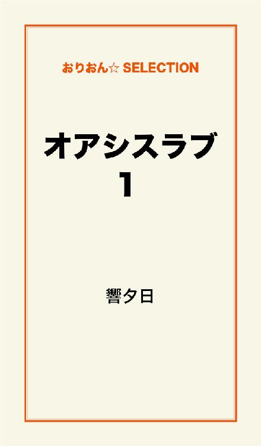
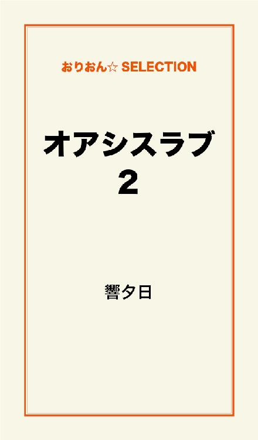
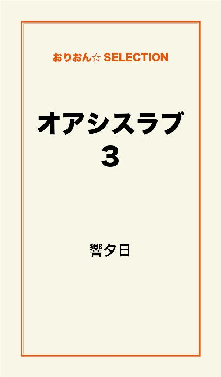
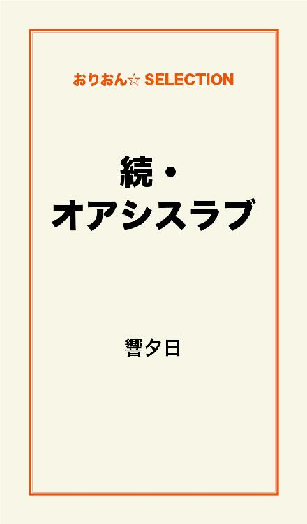

| オアシスラブ 完全版 | |
| 響夕日 | |
この本は横書きでレイアウトされています。
また、ご覧になる機種により、表示の差が認められることがあります。

仲根喜代子は我が子理沙を朝から何度も殴った。
特に理由などなかった。
憎いからでもなかった。
それが日常になっていた。
喜代子は極度のヒステリーであった。
殴られた方の小学3年生の理沙にとっては、朝から殴られることで、学校でも元気がなく、苛められている存在だった。
あるグループが理沙を苛めていた。
下履きに画鋲を入れたり、椅子にべったりと糊を張り付けたり、給食の熱いうどんをわざと理沙の襟元に流し込んだり、水泳の授業中、理沙の服を隠したり、クラス全員に無視させたり、やりたい放題だった。
教師に言ったら殺すと言われていたので、おとなしい理沙は何も言えないでいた。
放課後の掃除も1人でやらされていた。
教師がくると他の生徒も掃除をやる真似をしていた。
家に帰ると母親に意味もなく殴られるし、学校では針のむしろだし、理沙は毎日胸が痛かった。
その頃の理沙は何でこんなに胸がいたいのか分からなかった。
精神的苦痛からくる痛みだとは知らなかった。
理沙は家に帰ると、ただいまと言って早く自分の部屋に入りたかった。
それを喜代子が許してくれない。
「全くこの子は靴を脱いだら脱ぎっぱなし！ そこへ立ちな！」
また殴られる。
殴られたくないから靴はいつも揃えて上がっているのに何が気に入らないのだろう。
案の定理沙は思いきり何度も何度も殴られた。
「お母さんもうやめて！」
「なんだこの子は親に向かって口答えするのか！」
喜代子はそう言ってはまた何度も理沙を殴り付ける。
喜代子が殴り疲れたところで、やっと理沙は解放される。
そして自分の部屋へ行き、泣き崩れる。
これが理沙の日常だ。
理沙は幼いながらも死んでしまいたいと考えていた。
その考えに待ったをかけてくれるのが、父親剛の存在だった。
剛は穏和で理沙に優しく、ことあるごとに色々なプレゼントを買ってくれた。
この家は亭主関白なので、そんな剛に喜代子は何も言えないでいた。
剛がいるときは、喜代子は理沙に手を出すことはなかった。
理沙と剛は仲が良かった。
剛は無性に理沙を可愛がった。
理沙は喜代子に虐待されていることをうちあけたかったが、そんなことをしたら喜代子の虐待が酷くなるのを恐れ、言えなかった。
剛が帰る時間と日曜だけは理沙にとって天国だった。
しかし運命は残酷だった。
理沙の天国の時は長くは続かなかった。
理沙が小学4年を迎えた時に剛は心不全で亡くなってしまったのだ。
それ以来ますます喜代子の虐待は酷くなった。
髪を捕まれ、階段から落とされ、なおも覆い被さり、殴られた。
「あんたのせいでお父さんは死んだのよ」と訳の分からないことを言われながら、何発も顔を連打された。
逃げるように浴室に飛び込み、鏡を見るとまぶたは腫れ上がり、つぶれた状態になっており、鼻血は止まらず、唇は青くなっている。
もうこんな家嫌！
理沙は家出も考えたが行くところがない。
小学4年になっても運の悪いことに、理沙を苛めていたグループと同じ組になってしまった。
また同じ境遇が待っている。
父親もいない今、理沙は本当に死んでしまいたいと考えていた。
昼休み。
理沙は屋上を目指して階段を登った。
屋上に着くとフェンスをまたごうとした。
「待てよ」
うしろから声が聞こえた。
「お前仲根だな。何やらかすつもりだ」
見ると同じクラスになった今井洋介がフェンス越しにあぐらをかいて座っている。
「放っておいて」
「放っておけるか。同じクラスのやつがやばいことになってるんだ。何があったんだ。話してみろよ。死ぬのはそれからでも遅くはないだろう」
「............」
「言ってみろよ」
「............今井くんはクラス替えしたばかりだから知らないでしょうけど、私ひどく苛められているの。もう耐えられない。私死んだ方が幸せ。お父さんにも会えるし」
今井は少し考えた。
「その命俺にくれるか？」
「えっ」
「だから早まんなって言ってるんだよ。苛めに合わなければいいんだろ」
「相手は大勢いるし、今井くん一人じゃ無理よ」
「やってみないと分からないよ。とにかくここは俺に任せて早まるなよ」
今井は立ち上がると理沙のところへ行き、手をさしのべた。
理沙は仕方なく今井に従った。
でも今井一人の力で何ができるのかは疑問だった。
「お前を苛めているやつは誰だ」
「岡部くんと田所くんと常田くんと矢部さんと江口さん。それに乗じてクラス全員が私のことを無視してる」
「その中で首謀格は誰だ」
「岡部くん」
「だったら簡単だ。お前......なんて言ったっけ」
「仲根理沙」
「理沙か。おい理沙。お前明日から苛められなくなるぞ」
「明日から？ そう簡単にいくの？」
「俺を信用しろ。俺は今井洋介。洋介と呼んでいいぞ」
「......洋介。お願いします」
「任せろ」
理沙が家に帰ると珍しく喜代子は仏壇の前で泣いていた。
放っておけない理沙は母親に声をかけた。
すると急に喜代子はヒステリックになった。
「なんで父さんが死ななきゃならないのよ！ あんたが死ねばよかったのよ！」
また喜代子は理沙を殴った。
まぶたが腫れ上がり目が開けていられなくなるまで殴った。
理沙が倒れると、腹や足を力一杯蹴りつけた。
何度も何度も蹴りつけた。
理沙が風呂場で裸になると青痣がそこかしこに出来上がっていた。
風呂に入ると痣が染みてかなり痛かった。
次の日も顔が腫れているというのに朝から殴られ、酷い顔で登校した。
岡部たちは理沙を醜いと嘲笑った。
体育の授業中、今井洋介は岡部たちの背後にそっと近づいて、3人の短パンと一緒に、パンツも下ろした。
同時に女の子の悲鳴が上がった。
岡部以外の2人は恥ずかしさのあまり直ぐにパンツを上げたが、岡部のパンツは洋介がしっかり後ろから持っていて上がらない。
女の子たちは悲鳴を上げながらも、興味深く岡部の小さいちんちんを見ている。
岡部は恥ずかしくて走り出そうとしたが、洋介がパンツをしっかり持っているので、その場で倒れてしまった。
すかさず洋介は岡部の短パンとパンツを脱がしてしまった。
岡部は尻丸出しになりその場でうずくまってしまった。
女の子たちはキャーキャー言いながら岡部の下半身を見ている。
これにはさすがの岡部も泣き出してしまった。
体育の教師が洋介のところへ行き、何故こんなことをしたんだと聞いた。
洋介は岡部がある女の子を苛めているので仕返しをしたと言った。
「苛められている生徒は誰だ」
「仲根理沙です」
「岡部が仲根を苛めないと約束するなら短パンとパンツを返すんだな」
「はい」
体育の教師は泣いている岡部に向かって「お前は仲根を苛めてるのか」と聞いた。
岡部はわんわん泣きながら「苛めてません」と言う。
「おい！ 本当のことを言わないとパンツ返さないぞ！」洋介は岡部に向かって叫んだ。
「どうなんだ岡部！」教師も岡部に声を荒立てる。
「......苛めてません」岡部は泣きながら否定する。
「本当のことを言え！」洋介が叫ぶ。
「岡部！」教師も叫ぶ。
「......すみません。苛めてました。もうしません。パンツ返してくれ！」岡部は白状した。
「岡部がああ言ってるんだ。今井、返してやたらどうだ」教師が洋介に言う。
「分かりました。返します。おい岡部！ 2度とするなよ」
「分かった。返してくれ」
洋介は岡部に短パンとパンツを返した。
岡部は後ろを向いて急いで穿いた。
岡部は仲間の名前も白状したので5人は教師に叱られた。
チャイムが鳴った。
岡部たちは解放された。
岡部は洋介のところへやってきた。
そして洋介の耳元で「このままで済むと思うな。放課後屋上へ来い」とささやいた。
洋介は笑って「分かった。行くよ」と言った。
理沙が洋介に近寄って「......洋介今何て言われたの」
「放課後屋上に来いとさ」
「えっ？ 行ったら危ないよ。相手は5人だよ」
「大丈夫。心配要らないよ」
「......」
体育の時間岡部たちが理沙を苛めていることで屈辱をうけたので、周りの生徒は理沙を無視することはなくなった。
むしろ何人か謝りに来て友達になった。
理沙は嬉しかったが、放課後が心配だった。
そして放課後。
洋介には来るなと言われていたが心配なので理沙は屋上へ上がった。
もう岡部たち5人と洋介がいた。
洋介は理沙に気がついた。
「来るなと言っただろう。これから恐ろしいことが始まるんだ」
「だって心配だったんだもん」
そんな2人の会話を聞いて岡部は苛立った。
「何ごちゃごちゃ話してんだよ！ さっきの決着つけてやる。こっちは5人だ！」
「何人いても構わないぜ。俺のじいちゃん空手の師範代なんだ。だから俺も2歳の頃から空手やってんだ。かかって来いよ！」
「......」
岡部たちは黙ってしまった。
空手を8年やっているやつに、いくら5人だからといって勝てるわけがない。
5人のうち2人は女だ。
戦力になるのは3人だけだ。
完全に戦意損失してしまった。
「来ないならこっちから行くぜ」
洋介は鋭い早さで岡辺を持ち上げた。
「な、何するんだ。やめてくれ」岡部はもう泣きそうになっている。
他の4人はしり込みをしている。
洋介は岡辺を逆さまにして、フェンスの外に岡部の上半身を出した。
「助けてくれ！ 死にたくないよう！」
「俺が手を話すとお前はまっ逆さまだ」
「やめてくれ！」
その時岡部の股間が濡れ始めた。
「汚ないな。こいつ小便漏らしやがった」
「やめろ！ 本当にやめろ！」
「おいこら、言葉遣いに気をつけろ」
「分かりました。すみませんでした。やめてください！」
「もう理沙を苛めないか」
「はい！ 絶対に苛めません！」
「何か誠意っつーもんが感じられねえな。片手離しちゃおうかな」
岡部は涙と小便で顔が濡れている。
「本当にしません！ 許してください！」
「お前も苛められる気持ちが分かっただろう」
「はい！ 分かりました！ お願いします！ 何でもやりますから」
「じゃあこれから毎日5人で放課後掃除やれ」
「分かりました！」
「便所掃除もだ」
「はい！ やらさせていただきます」
「じゃあ許すとするか」
洋介は岡部をフェンスの中に戻した。
岡部は腰を抜かして立っていられない状態のまま泣き叫んでいる。
「怖かったよう。死ぬかと思ったよう」
洋介は他の4人もにらんだ。
「お前らも岡部と一緒に掃除するんだぞ」
「分かりました」
4人も今までの光景を見て涙ぐんでいる。
「お前ら岡部を連れて行け！ 今日から掃除しろよ」
「分かりました！」
4人は腰を抜かして歩けない岡部を担いで下に降りていった。
一部始終を見ていた理沙は洋介の元に走った。
「本当に有難う。もう嫌な思いをしなくて済みます。でも洋介って8年も空手をやってたんだね。すごいね」
洋介は笑った。
「はったりだよ。空手なんてやったことないよ」
「えっそうなの？」
「これは2人だけの秘密な」洋介は理沙の耳元でささやいた。
「うん。2人だけの秘密ね」
それから2人はいつも一緒に行動を共にすることとなる。
下に降りて教室を覗くと5人は掃除をしていた。
他の生徒も掃除をしていたので、洋介はこれからは掃除は5人に任せて帰るようにと言った。
他の生徒は本当にいいのかと言うので洋介は5人には話はついている、担任にも俺から言っておくから大丈夫だと言った。
洋介は5人に「このあと便所掃除も忘れるなよ」と言って理沙と一緒に帰った。
理沙は家へ帰ると母親はテレビを観ていた。
冷蔵庫からペットボトルのジュースを取り出し、コップへ注ぎ、ペットボトルを冷蔵庫にしまい、コップをテーブルに持っていこうと思った瞬間、コップを落としてしまい、コップを割ってしまった。
「全くあんたは何てことをするの！ コップ代も馬鹿にならないんだからね！」
そう言うと喜代子はまた理沙を殴った。
何度も殴り、理沙が倒れても馬乗りになって殴った。
また理沙の顔は腫れ上がった。
次の朝も昨日のコップのせいにして喜代子は理沙を殴り倒した。
いつものことだが鏡を見ると瞼が腫れ上がり開かない状態になっている。
みんなと仲良くなった今、特に洋介と仲良くなった今、こんな姿で学校へは行きたくなかったが、家にいて喜代子と2人になるのも嫌だったので、仕方なく出かけた。
「理沙、おはよう」学校に着いて、洋介が声をかけてきた。
「おはよう」理沙は洋介を見ずに言った。
洋介はすぐに理沙の顔の異変に気がついた。
「理沙、いつも思ってたんだけど、その顔あいつら5人組にやられてたんじゃないのか？」
理沙は母親のことを悪く言いたくなかったのでごまかした。
「私そそっかしくて、よく階段から落ちるの」
「危ないなあ。注意しろよ」
「うん......」
今朝はホームルームで学級委員を決めることになっていた。
実は他の生徒たちも口には出さなかったが、あの5人組にいい思いを持っていなかった。
仕返しが怖いので従っていたまでだった。
その5人組を制圧した洋介が学級委員の候補に選ばれた。
多数決で決めることとなり、満場一致で決まった。
副学級委員は学級委員が決めることとなり理沙が選ばれた。
よほど不服がない限り理沙が副学級委員ということになるが、誰もこんなものをやりたがるものはいないので、そのように決まった。
洋介の最初の学級委員の仕事として、まず担任を廊下に呼び出した。
そしてあの5人組が今まで理沙に悪どい苛めをしていた事実を話した。
理沙が屋上から死んでしまおうと思うほどの悪事をしたことを話した。
担任は理沙の自殺未遂を驚いていたが、今そのことで教師のあいだで問題になっていると言った。
洋介は罰として5人組に1年間教室と便所掃除をさせることにしたと、学級委員として担任に提案した。
担任は他の生徒が掃除をやらなくなるのは考えものだから、教室の掃除を外の生徒にやらせて、便所掃除を1年間5人組にやらせるのはどうかしらと提案した。
洋介は少し不満だったがそれで承知した。
そして2人は教室に戻り、担任が今苛めが問題になっていること、苛めは絶対にしてはいけないとクラス生徒全員に言った。
そのあとに先程の洋介との提案、岡部たち5人を罰として1年間便所掃除をやらせることにしたと言った。
クラスの生徒は便所掃除をしなくて済むので喜んだ。
5人組は何も言えなかった。
洋介と理沙は学級委員と副学級委員になったことで、よけい親密になって行く。
何をやるのもどこへ行くのもいつも一緒に行動を共にした。
学級委員の仕事があるときも帰る時間はいつも一緒。
途中まで一緒に帰った。
小学4年の2人の間に幼いながらも淡い恋心が生まれ始めていた。
帰り道洋介が言った。
「俺たちさあ、よぼよぼの爺さん婆さんになるまで一緒にいないか？」
「えっ、それってプロポーズ？」
洋介の顔は赤くなった。
「やっぱだめかな俺じゃ」
「ううん。ずっと一緒にいよ」
「そうか！ 良かった！ 結婚式場はどこにすっかな」
「気が早いよ。洋介」
「そうだな。ははは」
「ふふふ」
理沙は今までで一番幸せだった。
洋介と出会ってなければ地獄のような日々が続いていただろう。
ただ学校は楽しくなったが、家のことを思うと気が晴れなかった。
ヒステリックな母親がいる限り本当の幸せとは言えない。
家に帰って殴られない日もあったが、喜代子の気分次第だった。
父親が亡くなって暫くして喜代子は働きに出るようになった。
この頃から喜代子は仕事仲間と相性がよくなったせいか、理沙に当たる回数が減ってきていた。
理沙は自殺をしなくて本当に良かったと思った。
たまに喜代子がケーキを買ってきてくれたこともあった。
それでも喜代子の腹の虫が悪いときは、殴る蹴るの暴行はあった。
しかしこんなこともあった。
理沙が学校で急に腹が痛みだし、教師と病院へ行くと急性盲腸炎だと分かり、すぐ手術となった。
喜代子は毎日看病に来てくれた。
洋介も毎日見舞いに来た。
他の生徒も見舞いに来たし、あの5人組も見舞いに来た。
5人組は本当にすまなかっと謝った。
病院の食事は決して美味しいとはいえなかった。
お粥を更にぐちゃぐちゃにしたようなものが出た。
おかずは無かった。
母親が優しい口調で言った。
「退院したら何が食べたい？」
「お寿司が食べたい」
入院1週間で退院となった。
喜代子はその足で理沙を寿司屋に連れて行き、好きなものを食べさせた。
しかし、それが良くなかった。
家に帰って暫くすると、理沙は急に嘔吐した。
退院したばかりで寿司など食べたのがいけなかったのだろう。
理沙はまた喜代子に殴られると思った。
（寿司を食べさせてやったのに吐きやがって）と。
しかし喜代子は真夜中になんと理沙を背負って病院まで走り出したのだ。
いくら小学4年生の女の子だから軽いといっても病院まで20分はかかる。
喜代子は理沙の体を思いやり、懸命に走った。
病院へ着いて診察をしたところ胃痙攣だった。
やはり寿司がいけなかったようだ。
喜代子は何も言わなかったが、どんな気持ちで理沙を背負って病院まで行ったのだろう。
そこまで我が子を案じるなんて今まで一度も無かった。
理沙は治療を施して、30分程で回復したので、帰りは親子揃って歩いて帰った。
こんなに優しい母親を見たのは初めてのことだった。
喜代子は何を考えていたのだろう。
それでも数日が過ぎると殴る蹴るの暴行をうけた。
前ほどは頻繁ではなくなったが、暴行をするときは容赦しなかった。
しかし理沙には洋介がいたので我慢できた。
洋介とかなり仲が良くなった頃。
「いつも思ってたんだけど見られないほど顔が酷いけれど、階段から落ちたんじゃないだろう。あまりにも酷すぎるよ。本当のことを話してくれないかな。俺たちの間で秘密はよそうよ」洋介はまじまじと理沙の顔を見る。
理沙は話そうか話すまいか迷ったが、洋介との間に秘密を持つのは良くないと考え、話すことにした。
「......実はね......。私の母親はヒステリーなの。母親の気分次第で殴る蹴るの暴行をうけてるの」
「そうだったのか。通りで酷い顔になっていると思った。瞼は腫れ上がり目が半開きだし、口元が切れているし、変だなと思ってたんだ。でも話してくれて有難う。どうかな、警察に行ってみたら？」
「でも凄く優しいときもあるの。胃が痛くなったとき、私を背負って病院まで行ったこともあるし......」
「そうなんだ。親父さんは何ていってるの？」
「2ヶ月前に死んじゃった」
「......そうか。俺、ガキだから分からないから、うちの親に相談してみるよ。そうだ、今から俺んち来れる？ その顔見せたら親身になってくれると思うんだ」
「どうしよう......」
「いいからおいでよ。悪いようにはならないと思うから」
「......じゃあ行く」
「ここから10分くらいだから」
そして理沙は洋介に連れられて今井家を訪れた。
「母さんただいま。今日は理沙を連れてきたよ」
「お帰り。この子がいつも言っている理沙ちゃんね。こんにちは理沙ちゃん」
「お邪魔します」
「まあどうしたの？ その顔」
洋介の母親はあまりにも酷い痣と傷のある理沙の顔を見て驚いた。
「実は......」洋介が今までの経緯を自分の母親に話した。
「それは酷いわね。いいから上がりなさい。手当てしないとね」
理沙は洋介の母親、奈美江に傷を消毒してもらい、薬を塗り瞼にはガーゼ、口元には絆創膏を張ってもらった。
「母さん、この場合どうしたらいいんだろう。警察に訴えるというのはどうかな」
「その場合理沙ちゃんを引き受けて貰えるところがあればいいけど......そうじゃないと施設送りになるわよ」
「理沙、今の家じゃないところで引き受けて貰えるところってどっかあるか？」
「お父さんとお母さんは両方とも孤児で私親戚がいないの」
「そうなんだ。母さん、他に方法ないかな」
「う～ん。ないこともないわね」
「えっ、どんな方法？」
「いっそのことうちで預かるのよ」
「そんなこと出来るの？」
「理沙ちゃんのその顔と身体の証拠写真を持って児童相談所に相談するのよ」
「でもそこまでしてもらったら悪いですよ」理沙は恐縮している。
「父さんは何て言うかな」
「理沙ちゃんの顔や身体の傷を見せて、今までの経緯を話せば悪い返事は返ってこないと思うわよ」
「本当？」洋介の目が輝いた。
「父さんの性格は私が一番知っているのよ」
「やったな理沙。俺たち一緒に暮らせるかも知れないぞ！」
「でもそれは何か悪いですよ」
「いいのいいの。丁度洋介の兄弟が欲しいと思っていたから。しかも今度は女の子がね」
「理沙はどうなんだ。俺と暮らせて嬉しくないのか？」
「......そうなったら嬉しい......」
「じゃあ母さん、今日父さんが帰ったら聞いてみてよ」
「うん。聞いてみるわよ。理沙ちゃん、今日はうちでご飯食べていってね。もうすぐできるから」
「すみません」
「ただいま」
「あっ！ 父さんが帰ってきた。ちょうどいいや。4人でご飯食べながら話そう」
「そうね。そうしましょう」
4人で食事をしながら奈美江が夫、大輔に事情を話した。
「そうか。通りで酷い怪我だな。しかしそう簡単にはならないと思うぞ。親族ではないのだからな」
「父さんの意見を聞かせてよ。賛成？ それとも反対？」
「う～ん、どうだろうな。理沙ちゃんがしょっちゅう殴られてるなら可哀想だけどな。でもこういった問題は複雑だぞ」
「あなたが賛成してくれるなら戦いましょうよ。これだけの証拠があればきっと勝てるわ。理沙ちゃんは身体にも痣があるんでしょ」
「あります。倒れても蹴られているから、あちこちに......」
「理沙ちゃん、ご飯食べたら別の部屋へ行って写真を撮りましょう。本当に顔だけでも酷い打撲と傷ですもの。写真を撮るとき一度ガーゼと絆創膏取るわよ」
「......はい」
「理沙がうちに来るのか。楽しみだな」
「こら洋介！ 浮かれている場合じゃないんだぞ！ これはとにかく複雑な問題なんだ」
「そうよ。犬や猫を飼うのとは違うんだから」
「理沙ちゃんの母親が絶対に手放さないと言ったらそれまでなんだからな。証拠写真があったとしても、相手がやっていないと言えばこっちが負ける場合だってあるんだ」
「そうね。誰か外の人がやったと言われたらこっちが不利になるわね」
「そうだ。相手は実の母親なんだからな。現時点で一歩リードしているのは向こうの母親だ」
「とにかく理沙ちゃん、別の部屋へ行って裸になって写真を撮りましょう」
「......はい。すみません」
奈美恵と理沙は別室に行き、奈美江が理沙の服を脱がせて愕然とした。
小さな少女の身体には無数の青や赤や紫色の痣があった。
その痣の中には膨れ上がっているものもあり、まともに見られないものもあった。
奈美恵は涙が出てきた。
涙が止まらない。
こんなに小さな子供をここまで虐待するとは。
しかも異常に痩せこけていた。
「理沙ちゃん、ご飯はちゃんと食べさせてもらってるの？」
「3日何も食べさせてもらえないこともあります」
奈美恵はますます涙が止まらない。
食べ盛りの子供に3日も何も食べさせないなんて。
いくら実の母親だからといっても悪魔の仕業としか思えなかった。
絶対にこの子を救ってやろう。
奈美恵は決意した。
リビングでは洋介と大輔が2人の出てくるのを待っていた。
「洋介、これはお前が考えてるほど容易い問題じゃないんだぞ」
「分かったよ。父さん。でも理沙を助けてやりたいなあ」
そのとき別室から奈美恵の声が聞こえた。
「あなた、ちょっと来て！ 洋介は来ちゃだめよ」
大輔は別室に向かった。
部屋に入りいたいけな少女の裸身を見て驚いた。
ここまで酷いとは。
大輔は眉間に皺を寄せた。
「この子は是が非でもうちで預かろう。このままだと死んでしまうぞ。そして母親は殺人犯になってしまう。早く写真を撮って、服を着させてやりなさい」
大輔は別室を出た。
リビングで待っていた洋介が父に聞いた。
「どうだったの？」
「あの子はうちで預かる」
「そんなに酷いの？」
「今度、児童相談所の人と共にあの子の家へ行ってくる。早い方がいい」
その時別室から奈美恵と理沙が出てきた。
奈美恵はまだ涙が止まらない。
それを見た洋介はただごとじゃないと思った。
「私もう帰ります。遅くなるとまたお母さんがうるさいから」
「そうだね。そうしなさい。困ったことがあったらいつでもここへ来なさい。分かったね」大輔は理沙に優しく言った。
「はい。今日はどうも有り難うございました。ごちそうさまでした。美味しかったです」
「洋介、送ってやりなさい」
「うん」
帰り道、奈美江の涙を見た洋介は何も言えなかった。
理沙も一言も喋れなかった。
理沙の家に着き、理沙は洋介にさよならを言って別れた。
別れ際に洋介は「何かあったらうちに来いよ」と言って走って行った。
洋介も泣いていた。
理沙の前では我慢していたのだ。
時計は8時を過ぎていた。
理沙はドアを開けて家の中に入った。
「ただいま」
「お前今何時だと思ってるんだ！ この不良娘が！ おや？ 顔の傷誰かに手当てしてもらったね。まさかあたしのこと誰かに言ったんじゃないだろうね！」
「保健の先生に手当てしてもらった。階段から落ちたって言って」
「だったらいいけどさ。今までどこにいたんだ！」
「友達の家」
「もう8時だよ！ 小学生が帰る時間じゃないよね！」
そう言うなり喜代子は理沙のポニーテールの髪を掴み、2階に登って行き、思いきり突き落とした。
理沙が倒れているところへ馬乗りになり、何度も殴った。
理沙はぐったりしている。
殴り疲れた喜代子は今度は倒れている理沙をなんども蹴り飛ばした。
手足、腹、背中、尻、何度も何度も蹴り飛ばした。
殺される。
理沙は思った。
（何かあったら家へ来なさい）大輔の言葉が脳裏をよぎった。
理沙は這いつくばり玄関に行こうとした。
後ろから頭部を殴られた。
気が遠くなる。
そこで気がすんだのか喜代子は殴るのをやめた。
「お前なんかうちの子じゃないよ！ 出ていきな！」
理沙は外に放り出され、鍵をかけられ閉め出された。
玄関の前で理沙は泣いた。
大粒の涙が次から次へと溢れ出る。
後頭部を殴られたせいで頭がくらくらしている。
この家にいるといつか本当に殺される。
洋介のところへ行こうかとも考えた。
しかし今行けば迷惑がかかるかもしれない。
喜代子はいつか鍵を開けるだろう。
その時理沙がいなかったら警察に捜索願いを出すかもしれない。
そこで洋介の家にいるのがばれたら、今井家が誘拐犯と思われるかも知れない。
幼い理沙はそこまで考えた。
ここは泣きながら鍵が開くのを待つしかない。
今日は殴られたのでまた殴られることはないと思った。
そして10時を過ぎた頃ドアが開いた。
「入りな」
「......」
「返事は！」
「ごめんなさい」
「ったく面倒をかける子だよ。どっかいっちまえばいいのに」
「本当にいいの？」
「あん？」
「本当に出ていってもいいのね」
「行くあてがあるならね。その代わり今までやった小遣い全部おいていきな。お年玉もね。それでもいいなら出ていきな。お前がいないとせいせいするよ」
「分かった。出ていく。探さないでよ」
「探すかよ。服もパンツもみんな私が買ってやったんだ。それも全部脱いで出ていきな」
「パンツも？」
「当たり前だろ。あたしが買ってやったものは全部おいていくんだよ。どうする？」
理沙はためらいながらも服を脱ぎ始めた。
ブラウスを脱ぎ、スカートを脱ぎ、最後に下着を脱いだ。
「これでいいんでしょ」
「あ～みっともない格好だね。それならどこへ行ってもいいよ。行けるものならね」
「書いて」
「何を？」
「（私理沙の母親は絶対に理沙を探しません。理沙はもうこの家に戻らなくて構いません）て」
「何を訳の分からないことを言ってるんだ。探さないったら探さないよ」
「書かないとこの姿で警察に行く」
喜代子はまた理沙を殴った。
「書けばいいんだろ。書けば」
喜代子はリビングに行き、メモ用紙にそれを書いて理沙に渡した。
「これでいいんだろ。そんな恥ずかしい格好で、よく外を歩けるね。早く出ていきな」
喜代子はもう一度理沙を殴った。
しかし理沙は痛みは感じなかった。
これが最後の一発になると思うと嬉しかった。
しかしこの格好で街を歩くのは気が引けた。
しかも行くところは１つ。
洋介に見られてしまう。
その事だけがいたたまれなかった。
しかし下着を買う金もないので、理沙は覚悟を決めた。
この家にいるよりましだ。
理沙は今井家に向かって前を隠しながら急いだ。
いくら幼いと言えども小学4年ともなれば裸で街を歩くことに恥じらいはある年頃だ。
理沙は下を向きながら懸命に走った。
途中、真っ裸でどこへ行くの？とか、ここは風呂屋じゃないよとか言われながら走った。
そして今井家にたどり着いた。
暫く玄関の前でもじもじしていたが、裸で外にいるのも恥ずかしいので、思い切ってチャイムを押した。
どうか洋介が出ませんように！
玄関の灯りがつき、出てきたのは奈美恵だった。
理沙はホッとして涙が流れた。
「どうしたの？ 理沙ちゃん。そんな格好で！ まあいいわ。話は後で聞くわ。さあ中へ入って」
「すみません。お邪魔します」
リビングから洋介の声が聞こえた。
「誰か来たの？」
「洋介は来ちゃだめ！」奈美恵がたしなめた。
「理沙ちゃん早く上がって、まずお風呂に入って」
「すみません」
理沙は奈美恵に案内されて浴室に入った。
先程全身を蹴られたばかりなので、湯船に入ると傷や痣が染みるので、温いシャワーで全身を流した。
裸足で来たので特に足の裏を丁寧に洗った。
浴室のドアの外から奈美恵の声が聞こえた。
「理沙ちゃん、着替えはここに置いておくからね。ジャージは洋介のだから少し大きいかも。下着は私の中でも一番小さいのを用意したから。でもやっぱり大きいかもね。今日は取りあえずこれで我慢してね」
「有り難うございます」
理沙は奈美恵の優しさに泣いた。
シャワーで涙を流した。
けれども次から次へと涙が出てくる。
洋介はのびのびと育っている。
私もこんな家に生まれたかったな。
今日からはこの家の一員になれるのかな？
でもやっぱりそれは無理で、元の家に連れ戻されるのかな。
それとも施設送りかな。
理沙は色々なことを考えながらシャワーで涙をながしていた。
ようやく泣き止んで、シャワーを止め、浴室から出て、更衣室で身体を拭いたのだが柔らかいタオルのはずなのに全身が痛かった。
パンツを穿き、ジャージを着て、申し訳なさそうにリビングに行った。
3人揃っていた。時刻は11時を過ぎていた。
「少しは落ち着いた？ まあソファーに座りなさい」奈美恵が理沙に声をかけた。
「......はい」
「裸で来たときいたけど何があったんだい？」大輔が優しく声をかける。
「あのあとまた何かあったの？」洋介も優しい口調。
この家族の優しさに包まれて、理沙は今日、この家から自分の家に着いて、そこでなにがあったのかを全て泣きながらぶちまけた。
母親に帰りが遅いと言われ、髪の毛を捕まれ、2階から突き落とされ、倒れているところを、馬乗りになって顔面を強打されたこと。
殴り疲れると今度は全身を蹴られ、腹も蹴られて、殺されるんじゃないかと思ったこと。
逃げようとしたら後頭部を殴られたこと。
「お前なんか出ていけ」と言われたこと。
「出ていくなら、小遣いから今まで買ってやった全てをおいていけ」と言われたこと。
服もパンツも脱いでいけと言われたことを全て話した。
奈美恵はあまりにも酷いと泣いてしまった。
「でも私理沙の母は理沙を探しませんと、理沙はもうこの家に戻らなくて構いませんと書かせました」と言って理沙はリビングのテーブルにメモ用紙を置いた。
「これはうまいことを思い付いたな。これさえあれば、理沙ちゃんは自由だ。もうあの家に帰らなくていいんだよ。筆跡鑑定で分かるから捜索願いは出せない。今日から理沙ちゃんは我が家の一員だ」
「でも甘えていいんでしょうか」
「いいのよ。理沙ちゃんは何も気兼ねしなくても」
「良かったな、理沙。今日から殴られなくて済むぞ」
「ホントにホントにいいんでしょうか。私みたいなものがお世話になっても。お金もないですし」
「気にしなくていいのよ。その代わり学校から帰ったら家事手伝いをお願いするわ。これが結構大変なのよ」
「有り難うございます。私一生懸命頑張ります」
「でも出来る範囲で構わないからね。遊びたいときは遊んでいいからね。たまには洋介もかまってね」
「勉強も頑張ろうな。理沙は俺より成績がいいから教えてくれよ」
「それじゃあ俺はマッサージを頼もうかな。仕事で疲れて帰ってきても誰もマッサージをやってくれないんだ」
「私で良ければなんでもやります！ よろしくお願いします」
「洋介、明日は理沙ちゃんは学校は休ませるわよ。服も靴もないから買いに行かないと」
「あ、私これで大丈夫です。靴は洋介の小さくなったのをかりればいいし」
「そういうわけにはいかないわよ。だぼだぼのジャージにブカブカのくつじゃしょうがないでしょ。ここはおばさんに任せて」
「......有り難うございます。そこまでしてもらって......」
「いいのいいの。気にしないで」
「そうそう。理沙ちゃんはもううちの一員なんだから、恥ずかしくない格好をしてもらわんとな」
「有り難うございます」
「それから理沙は教科書も全部置いてきたんだろ。教科書川に落としてしまいましたとかなんとか言って貰ってくるよ」
「有り難う洋介」
その時大輔は急に神妙な顔つきになった。
「やはり向こうにもきちんと話は通した方がいいから、今度児童相談所の人と一緒に理沙ちゃんの家へ行ってくるよ」
「そうね。あなたがそうしてくれたほうがいいわね」
「そして今日、理沙ちゃんの母親に電話して、暫くうちで理沙ちゃんを預かると言うよ」
「その方がいいわね、あなた」
「理沙ちゃん、電話番号おしえて」大輔は番号をメモると電話をかけに行った。
大輔はしばらく話していたが、やがてリビングへ戻ってきた。
「どうだったの？ あなた｣
「好きにしてくださいだとよ。あの母親は全く理沙ちゃんを心配していない」
「こんな格好で外に出して心配しないなんて、なんて酷い母親なんでしょう」
「理沙ちゃんにたいして思いやりが全くないな。ごねられるよりはいいけどな。さて、そろそろ今日は寝るか。理沙ちゃんは空いている部屋が1つあるからそこで寝なさい。今は物置部屋みたいになってるから少し狭いだろうが、明日買い物から帰ったら、奈美江と2人で片付けなさい。分かったね」
「はい。分かりました。それでは今日からよろしくお願いします」
「こちらこそよろしくね。理沙ちゃん。理沙ちゃんの部屋はこっちよ。来て。布団敷いてあるから」
「有り難うございます」
「それではおじさん、洋介、お休みなさい」
「お休み理沙ちゃん」
「お休み理沙」
理沙が通された部屋は洋室で6畳くらいの部屋だった。
服が何着もかけられていて寝るスペースはわずかほどだったが、理沙は幸せな気分で布団に入った。
奈美江がお休みと言ってドアを閉めた。
理沙は天にも昇るような幸せを感じていた。
もう殴られなくて済む。
学校でも苛めはなくなった。
これも全て洋介との出会いからはじまっている。
洋介は理沙の恩人だ。
将来洋介と結婚を出来ると思うと将来の幸せを約束された気分になった。
理沙は嬉しくてなかなか寝つけなかった。
今までの人生は地獄のような日々であった。
それが今日からは暖かい家族に包まれ、平和な日々を送ることができる。
やがて理沙は微笑みながら眠りについた。
翌朝理沙は早く起きて味噌汁を作っていた。
料理は母親にやらされていたので得意だった。
すると奈美江が起きてきた。
「あら理沙ちゃん早いわね。何してるの？」
「あっおはようございます。お味噌汁を作ってました」
「あ、そう。困ったわね。今日はパンとベーコンエッグにしようと思ってたのよ」
「あっ、そうだったんですか。出すぎたことしてすみません」
「いいのいいの。鮭があるから、今からご飯炊けば間に合うでしょ」
「本当にすみません」
「気にしなくていいのよ。理沙ちゃんの作った御味噌汁飲んでみたいし」奈美恵は優しく微笑んだ。
理沙は奈美恵の優しさに涙が出た。
「どうしたの？ 理沙ちゃん。泣かない泣かない」
「こんなとき自分のお母さんだったら何発殴られるか分からないと思ったから」
「いいのいいの。うちではそんな些細なことは気にしなくていいからね。むしろ理沙ちゃんが早起きして料理を作ってくれてるなんて感激しちゃったわ」
奈美恵は理沙に向かい、しゃがんで、そっと肩を抱いた。
「う、う、おばさん」理沙は奈美恵の胸で泣いた。
「今日からはお母さんと呼んでいいのよ。あなたはうちの子になったんだから」
「お母さん！」理沙は奈美恵の胸にしがみついて声を出して泣いた。
「よしよし、いつも余程辛い目に合っていたんだね」
奈美恵は理沙の頭を撫でた。
「理沙ちゃん、お味噌汁が煮詰まっちゃうわよ」
「はい」理沙は涙を拭いてガスの火を止めた。
丁度朝食が出来上がった頃大輔と洋介が起きてきた。
「あれ～母さん。今朝も鮭？ 昨日の朝も鮭だったじゃん」
「あら、そうだったかしら」
「母さんボケたんじゃないだろうな」
「違うんです。お母さんはベーコンエッグにするつもりだったんです。私が早く起きてお味噌汁なんかを作ったからこういうメニューになったんです」
「なんだそういうことか、だったら全然俺は構わないぜ」
「俺も年のせいかどっちかというと洋食より和食が好きなんだ。じゃあ食べよう。いただきます」
「いただきます」
理沙はまたこの家族の優しさに涙が出そうになった。
「理沙ちゃん、この御味噌汁美味しいわね」
「有り難うございます」
「ホント旨いぜ」
「有り難う、洋介」
「理沙ちゃんはその歳で料理がつくれるのか、奈美恵は最初は全然つくれなかったなあ」
「私一人暮らししたことなかったから、全部料理はお祖母ちゃんが作ってくれてたから。でも今は美味しいでしょ」
「ああうまくなった」
「理沙は料理はするのか？」洋介が理沙に聞く。
「うん。うちのお母さん料理したりしなかったりだから私がすることになることがあるの」
「今度味噌汁だけじゃなくて何か作ってよ」洋介は理沙の作った味噌汁が美味しいので他の料理も期待した。
「そうね。そしたら私が手を抜けるわ」
「俺も食べてみたいものだな。理沙ちゃんの料理」
「たいしたもの作れないですよ。でも頑張ります」
理沙は団らんはいいものだなと思った。
食事が終わり、皆それぞれ出かける支度をしはじめた。
洋介は今日は一切教科書を持たないで登校する。
教科書を川に落としたから代わりをくれと嘘をつくためである。
大輔が何かを探している。
「どうしたの？ あなた」
「いや、クルマのキーがないんだ」
「よく探した？」
「どこに置いたかな？ いつもはこんなことはないんだが。キーがないと困る。早く出ないと遅刻してしまう」
すると理沙の履いているジャージのポケットからキーが出てきた。
みんなが理沙を見た。
「あの、わ、私......」
奈美恵はこの子は本当に悪い子だから、母親に叱られるのではないかと疑った。
大輔も疑念の目で理沙を見ている。
すると洋介が「母さん。理沙が履いているの俺のジャージじゃなくて父さんのジャージだよ」と言った。
「あら、そうだったの。通りでぶかぶか過ぎると思ったわ」
「そうだ。理沙ちゃんが履いているのは俺のジャージだ。昨日の夕方タバコを買いにコンビニに行くときにジャージにキーを入れたんだ。そのジャージを脱いで更衣室に置いたんだ」
「母さんそそっかしいなあ。あっ俺学校行く時間だ。行ってきま～す」
「行ってらっしゃい。気をつけてね」奈美恵は手を振った。
そして理沙に向かって「ごめんなさいね。私へましちゃって｣奈美恵はすまなそうな顔をしている。
「いいんです」理沙は微笑んだ。
「俺も会社に行ってくる。間に合わなくなるよ」
「行ってらっしゃい」
「行ってらっしゃい」
家には理沙と奈美恵が残った。
「さて、お買い物するにはまだ時間が早いからお店開いてないから、理沙ちゃん洗濯物お願い。私はお風呂掃除をしちゃうね」
洗濯は洗濯機が作動しているあいだは何もすることがないので、理沙は朝食の後片付けを始めた。
洗い物をすませたあと、洗濯物を干した。
全て干し終わった頃、奈美江が風呂場から出てきた。
「あら、もう干し終わったの？ 理沙ちゃん早いわね」
「洗濯機が回っているあいだ食器も洗っておきました」
「さすが理沙ちゃん。助かるわ。まだ時間があるわね。掃除もしちゃいましょう」
「はい」
「私が掃除機かけるから、そのあとを理沙ちゃんがモップで拭いてくれる？」
「分かりました」
理沙はこの家のお荷物にならないようにと一生懸命頑張った。
4ＬＤＫの家が掃除機とモップがけで2時間で終わってしまった。
「さすがに2人でやると早いわね。本当に助かる。お昼食べてから買い物に行きましょう」
奈美恵は料理を始めた。
「あの......私も何かお手伝いします」
「じゃあコーヒー煎れてくれる？ ドリップで。それとパン焼いて」
「はい」
「ベーコンエッグでいいでしょ？」
「はい」
昼食が出来上がり、2人で仲良く会話をしながら食べた。
食事が終わったあと2人は洗い物をすませ、買い物に出かけた。
まずは理沙の着るものから始まった。
奈美恵は刺繍の入ったジャケットと、無地のブラウスと、花柄の可愛いスカートを買ってやった。
ジャージを袋に入れ、それを着させて歩いた。
次はシューズ。
ブランドもののスニーカーを買った。
これもぶかぶかの洋介のスニーカーを袋に入れ、買ったものを履かせて歩いた。
次に向かったのは文房具店。
文房具一式を買った。
絵の具や彫刻刀も買った。
「あと必要なものあるかしら」
「もう充分です。こんなに買ってもらってすみません」
「あっ、そうそうランドセルとお財布ね」
「教科書は紙袋に入れればいいからランドセルはいいですよ」
「だめだめ。一人だけ紙袋なんて持ってたらまた苛めの対象になっちゃうぞ」
「それにお財布なんて必要ありません。お金なんか使わないし」
「お金も少しくらい持ってないとだめよ。いざって言う場合だってあるかもしれないよ」
奈美恵は無理矢理理沙をランドセルコーナーに連れて行き「色は赤でいいよね」と言ってランドセルを買った。
そして次は財布売り場に行ってピンクの折りたたみの財布を買った。
「以上かな」
「すみません。本当にすみません」
「気にしないで。その代わり今日の夕飯は理沙ちゃんが作ること。ＯＫ？」
「はい。作ります」
「何が出来る？」
「カレーとかしょうが焼きとかハンバーグとか野菜炒めとか青椒肉絲とか酢豚とか、パスタ類とか」
「その歳にしてはレパートリー広いねえ。よし、じゃあ今日はカレーにしよう」
「はい」
2人はカレーの材料を買い、ランドセルに入れて理沙がランドセルを背負って帰った。
奈美恵が家のドアを開けようとして気がついた。
「しまった！ パンツを買うの忘れてた」
「いいですよ。これで」
「それじゃあブカブカで、もし見えたときみっともないでしょ。まだ間に合うから買いに行ってくる。理沙ちゃんはカレーを作ってて」
「ホントに有り難うございます」
奈美恵は急いで下着と靴下を何枚か買って家に戻った。
まだ洋介は帰っていなかった。
「間に合った」
部屋へ入るとカレーのいい匂いがする。
「もう少しで出来ます」
「有り難う理沙ちゃん。あたしカレー見ておくから、パンツを履き替えちゃいなさいよ」
「有り難うございます」
理沙が下着を履き替えて戻ってきた。
「もう出来たわよ。あとは2人の帰りを待つだけね。あっ！ いけない！ 理沙ちゃんの部屋の整理を忘れてた」
「いいです。明日帰ったらやります」
「悪いわね。でも理沙ちゃんがいると本当に助かるわ」
「私こそ色々買ってもらって有り難うございます」
「そうだ。買った財布どの袋だったかしらね。あっ、これだ」
奈美恵はピンクの財布に２０００円を入れた。
「これもってなさい」
「こんなにいいですよ」
「いいから持ってて」奈美恵は理沙のジャケットのポケットに財布を入れた。
「すみません」
軈て洋介が帰ってきた。
「ただいま～」
「お帰り」
「お帰りなさい」
「おっ、いい匂いだな今夜はカレーか」
「理沙ちゃんが作ったのよ」
「そう言えば理沙。教科書を取り寄せるのには1週間かかるって」
「じゃあそれまで隣の人に見せてもらう」
「俺が無くしたことにしてあるから、理沙は俺の教科書を使え。俺が隣の女の子に見せてもらう」
「有り難う。洋介」
「これが俺の隣の女の子が結構可愛くてさ」
「あっ！ 洋介もう浮気？」
「冗談だよ。凄いブス」
「ふふふふ」
「あははは」
「2人ともまだ小学4年生なのに随分とお熱いのね。この2人が同じ屋根の下で暮らしてていいのかしら」
「かあさん、それどういう意味？」
「子供は分からなくていいの」
「だけど理沙は表情は明るくなったけれど、相変わらず顔は酷い痣だな」
「昨日やられたばかりですもん。まだ治らないわよ。そうだ、父さんが帰って来る前に理沙ちゃんの怪我の治療をしないとね。理沙ちゃんこっち来て」
奈美恵は理沙を別室に呼んだ。
「全身を治療するんだから洋介は入らないでね」
「分かってるよ」
奈美恵は理沙の顔をまず治療した。
消毒をして薬を塗り、特に酷い左瞼にガーゼを貼った。
そして右目の上の眉毛の下辺りがぱっくり裂けているのでそこに絆創膏を貼った。
そして頬や唇の端が酷いので、そこにも薬を塗り、ガーゼを貼った。
上半身を脱がしてみると昨日の夕方より見るに耐え難い痣がそこかしこに出来ていたので消毒をして薬を塗り、大きくガーゼを切り取り殆ど上半身全身にガーゼを貼った。
腕は両腕とも痣だらけだったので、包帯を巻いた。
下半身を脱がせると足も両足が痣だらけだったので消毒をして薬を塗り、包帯を巻いた。
パンツを脱がせると尻が痣だらけなので、ここも消毒をして薬を塗り、大きくガーゼを切り取り張ってやった。
前も同じだった。
要するに全身痣だらけなのだ。
この子はこんなに痣が出来ていてもよく痛いの一言も言わない子だなと奈美恵は思った。
服を着させてリビングに戻って理沙を座らせた。
「母さん、理沙の怪我の具合はどうなの」と洋介が聞くと奈美恵は何も言わず、首を横にふるだけだ。
「理沙、痛くないのか？」
「大丈夫」
「痛かったら痛いって言っていいんだぞ」
「そうよ。お医者さんでもどこでも連れていってあげるわよ」
「大丈夫です。それに......」
「それに、何？」
「お医者さんに行ったらお母さんが捕まっちゃう」
理沙は幼児虐待のニュースをよく観ていたのだ。
幼児虐待が表沙汰になると親は警察に捕まると思い込んでいたのだ。
こんなにされてまで母親を庇う理沙を奈美恵は不憫でまた涙が出てしまう。
「ただいま」
大輔が帰ってきた。
「あ、あなたお帰りなさい」
「父さんお帰り」
「お帰りなさい」
「何だか娘が一人いるといいなあ」と大輔が言うと「悪かったね男で」と洋介が口を尖らせる。
「ははは、怒るな怒るな」
「あなた、今日は理沙ちゃんの作ったカレーよ」
「ほう、そうかい。それは楽しみだな。理沙ちゃんがカレーを作っていたときお前は何をしていたんだ」
「えっ！ パンツを買いに行ってた......」
「はははは」
「はははは」
大輔と洋介が笑う。
「じゃあみんな揃ったところで、カレー温め直すね」
「理沙のカレー楽しみだな」
「味はどうか分からないよ、洋介」
「俺は来週、児童相談所の人と一緒に理沙ちゃんのお母さんのところへ行ってくる」
「そうして。あなた。こういうことは早い方がいいわ」
「向こうは殆ど理沙ちゃんの育児を放棄している状態だから、案外話はすんなり決まるかも知れないぞ」
「有り難うございます。おじさん」
「理沙ちゃん。今日から俺のことは父さんと呼んでもいいんだぞ」
「......お父さん。有り難うございます」
「さあ、ご飯が出来たわよ。食べましょう」
4人はダイニングでテーブルを囲み、理沙の作ったカレーを食べた。
「理沙ちゃん。美味しいわよ。このカレー」
「ホント旨いよ理沙」
「本当だ。大したものだな。理沙ちゃんは」
この家族が大袈裟に自分の作ったカレーを誉めてくれるものだから、理沙は嬉しくもあり恥ずかしくもあった。
顔が赤くなる。
「あっ、理沙、照れてるな。でもホント旨いぜ。母さんおかわり」
「俺もおかわりだ。母さん」
「理沙ちゃんのカレー、評判いいわね。私も何だか嬉しくなっちゃう。これからも、色々作ってね」
「はい！」
4人は食事を終えると、洋介と大輔はリビングに行き、テレビを観始め、理沙と奈美恵は洗い物をした。
洗い物が済んで、理沙と奈美恵もリビングに行った。
「本当に理沙ちゃんがいると助かるわ。洗い物もすぐに終わってしまうんだもの」
「理沙ちゃん、理沙ちゃんは本当によく頑張ってくれているし、俺たちは理沙ちゃんを本当の家族だと思っているんだ。何の気兼ねもしないでここにいていいんだぞ」
大輔は優しく理沙に話しかけた。
「そうだよ、理沙。あんな家にはもう帰らなくていいんだぞ」
「......うん」
「何だ、まだ迷っているのか、理沙」
「お母さんがひとりぼっちになっちゃう」
ここまで虐待をされているというのに、まだ母親のことを思っている理沙に3人は驚いた。
「でも理沙ちゃんがあの家にいると殺されかねないのよ。理沙ちゃんの全身の痣と傷は尋常ではないもの」
「そうだよ。理沙ちゃん。もし理沙ちゃんのお母さんが理沙ちゃんを殺してしまったら、お母さんは殺人犯だ。刑務所に入れられてしまうんだぞ。そうなったら2人とも悲しいだろ？」
「......はい」
「だから理沙ちゃんはここに居る方が一番いいんだよ。俺たちは理沙ちゃんのことをお荷物なんて思ってないからな」
「そうだよ、理沙。この家では好きにしていていいんだぞ」
「皆さん有り難うございます。私のためにそこまで言ってもらって」
理沙はまた泣き出した。
「もう、泣かない、泣かない。理沙ちゃんが来てくれたお陰でおばさんだって助かっているんだから」
「有り難うございます。......お母さん......」
「そう、私のことはお母さんと呼んで。父さんのことは、お父さんでいいのよ。そして洋介は......2人ともとっくに呼びすてにしている間柄だったわね。お熱いこと」
「母さん、やめてよ」
「ふふふ」
理沙が笑う。
ここまで言ってくれているのだ。
理沙はこの家族に心の底から甘えてみようと思った。
次の日、理沙は洋介と一緒に登校した。
もう下履きに画鋲は入っていない。
理沙は晴れ晴れとした気持ちで自分の席に着いた。
洋介の方を見ると隣の女の子は不細工どころか、かなり可愛い女の子だった。
洋介は誰にでも早く打ち解けるほうだ。
洋介とその女の子は笑いながら話をしている。
理沙はその時初めて嫉妬というものを感じる。
洋介は誰にでも人気があったので、理沙は不安だった。
理沙は給食が終わると洋介を屋上へ呼び出した。
「なんだよ、理沙」
「隣の女の子と随分仲が良いのね」
「えっ、花梨のこと？」
「もう呼び捨てにしている仲なの！」
「何を言ってるんだよ。俺はこういう性格なんだ。理沙のことだってすぐ呼び捨てにしただろ」
「あれは状況が状況だったから......」
「関係ないよ。そんなくだらない話だったら俺はもう行くぜ」
「洋介......」
洋介は構わず行ってしまった。
その日体育祭の実行委員を決めることになった。
男女一人づつ選ばれることとなった。
男子は洋介が選ばれた。
女子はスポーツ万能の立花花梨が選ばれた。
クラス全員はお似合いのカップルだと囃し立てた。
花梨は真っ赤になってしまったがまんざらでもなさそうだ。
次の日から体育祭の準備があると言って、洋介は理沙と帰らなくなった。
理沙は一人とぼとぼと下校した。
理沙は洋介を花梨に取られたような気がして元気がなくなっていた。
しかし、今井家ではそんなそぶりは見せず、家事手伝いを一生懸命にこなした。
理沙の部屋は奈美恵が昼間片付け、ベッドと勉強机と本棚とテーブルが置かれ、立派な子供部屋になっていた。
それを見た理沙はまた奈美恵の腰に抱きつき泣いた。
「お母さん有り難う」
「いいのよ。理沙ちゃん。これからあの部屋で勉強頑張ってね」
「はい」
「まだ時間があるから近所の本屋へ行って、辞書と参考書を買いに行きましょう」
「そこまでしてもらったら悪いです」
「いいから、いいから、行くわよ」
「......はい。すみません」
理沙と奈美恵は歩いて10分程にある本屋へと向かった。
「そう言えば洋介は？」
「体育祭の実行委員に選ばれて放課後残っています」
「あらそう。一人？」
「違います。洋介の隣の席の女の子と一緒です」
「ああ、洋介が言っていたブスの子？」
「それが凄く可愛いんです。スポーツ万能だし人気がある人なんです。今日も洋介とその人仲良く笑いながら話してるんです」
「あっ、もしかして理沙ちゃん焼きもち？」
「そんな、違いますよ」
「親が言うのも何だけど洋介って意外ともてるもんね。理沙ちゃん心配なんでしょ」奈美恵は笑いながら言う。
「関係ないです。洋介なんか」
「むきになっちゃって。可愛いわね」奈美恵は更に笑う。
そうこうしているうちに本屋へ着いた。
奈美恵は辞書と参考書を何冊かそつなく選んだ。
それともう一冊占いの本を理沙に買ってやった。
「女の子はこういうの好きでしょ」
理沙は奈美恵に感謝の念でいっぱいになった。
確かに理沙は占いが好きだった。
テレビ等でいい運勢が出ると嬉しかった。
奈美恵は時計を見た。
「あらいけない。もう洋介が帰ってきてる頃だわ」
2人は急いで家に戻った。
しかし洋介はまだ帰っていなかった。
「遅いわね。洋介ったら。体育祭の実行委員ってそんなに忙しいのかしら」
結局洋介が帰ってきたのは8時過ぎだった。
大輔のほうが先に帰ってきていて、理沙は大輔にマッサージをしていた。
「洋介、遅かったじゃない。みんな夕飯を待っていたのよ」
「ごめん。ごめん。体育祭の準備が長引いちゃってさ」
「そういうことなら仕方ないわね。さあ、ご飯食べるわよ」
4人は席につき食事を始めた。
「体育祭の準備ってそんなに時間がかかるの？」理沙は疑い深く洋介に聞いた。
「そうなんだよ。やってみると意外と手間がかかっちゃってさ」洋介は笑う。
「お前は学級委員もやっているんだろう。なにも掛け持ちしなくても他にやる生徒はいるんじゃないのか？｣大輔が聞く。
「やらされちゃったんだよ。今更止めるわけにいかないし、仕方がないんだ｣
「それならしょうがないが、あんまり帰りが遅いから心配したんだ。明日も遅いのか？」
「うん。しばらく遅くなると思うから、俺を待ってないで先に食べちゃっていいよ」
理沙は怪しいと思った。
体育祭の準備で毎日そんなに遅くまで何をすることがあるんだろう。
「立花さんも大変ね」理沙は何気なく言ってみた。
「花梨は学校から家まで近いから大丈夫だよ」
「花梨ちゃんて洋介と一緒に実行委員をやっている女の子？ 結構可愛いって聞いたわよ。怪しいわね」奈美恵が笑いながら言う。
「そんなんじゃないよ。とにかく本当に実行委員は忙しいの」
「うちは晩御飯はみんなで食べる主義だから、なるべく早く帰って来いよ」
「分かったよ。父さん。でも俺も忙しいんだ。分かってよ」
「まあ、学校の行事で遅くなるなら仕方ないけどな」
「ところで父さんたちは離婚を考えたことはある？｣
大輔は目を丸くした。
「何を馬鹿なことを言ってるんだ。洋介」
「そうよ。母さんたち喧嘩もしたことないの知っているでしょう」奈美恵が半分怒った口調で言った。
「ごめん。悪かったよ。父さん、母さん。ごちそうさま。俺、風呂に入ってくる」洋介は浴室に行ってしまった。
「全くあいつは何を考えているんだか」
「あの年頃の子って何を言い出すのかさっぱり分からないわね」
理沙は黙っていたが、この夫婦が離婚をするなんてありえないと思った。
しかし洋介は何かを察したのだろうか。
まだこの家に来たばかりの理沙には分からないことが多い。
もしかすると洋介は自分の両親の行動を見ているうちに、何かただならぬものを察してしまったのかも知れない。
もしこの夫婦が離婚をしたら、自分はどうなってしまうのかと思うと理沙は怖くなった。
洋介が風呂から出てきた。
理沙は洗い物をしている。
「次は俺が風呂へ入ろうかな」
「そうして。早くしないと、寝る時間が過ぎちゃう。理沙ちゃん、洗い物手伝おうか？｣
「大丈夫です。もうすぐ終わりますから｣
「悪いわね。でも本当に理沙ちゃんが来てくれておばさん助かっているわ。父さんがお風呂から出たら理沙ちゃん、入っちゃいなさいよ」
「私、最後でいいです。そのあとお風呂掃除もやっておきますから」
「そんなに気を使わなくていいのよ。それだとお手伝いさんみたいじゃない。あなたはここの家の子になったのよ。普通にしていていいのよ」
「私、皆さんに助けられたんです。このくらいしないとばちが当たります｣
この子は幼いながらも、本当に苦労をしてきたのだなと奈美恵は思った。
きっと虐待だけではなく、家事を全てやらされていたのだろう。
その分この家ではもう少し楽をさせてやろうと思った。
「お風呂掃除はいいのよ。明日私がやるから。理沙ちゃんは先にお風呂に入って宿題をやっちゃいなさい｣
「有り難うございます。お母さん」
「やっぱり宿題あるんだ。早くお風呂入って、やっちゃいなさい。あとのことは私がやるからね」
「じゃあお風呂に入って来ます｣
「うん。上がったら服を着ないでね。怪我の治療をするから」
「有り難うございます」
奈美恵は洗い物の続きをしようと、キッチンに行ったが、全て綺麗になっていた。
奈美恵は女の子の喜ぶようなプレゼントを理沙に買ってやろうと思った。
洋介の部屋はファミコンやプラモデルがあるが、理沙の部屋には遊ぶものが１つもない。
今度猫の縫いぐるみでも買ってやろうと思った。
理沙が風呂から上がって来たので、理沙の部屋で全身を消毒して、薬を塗り、ガーゼを貼った。
次の日も理沙と洋介は一緒に登校した。
「理沙、怪我早く治るといいな」
理沙は笑って「お母さんが毎日治療をしてくれているから、もう痛くなくなったよ」と言った。
「まだ顔の痣や傷が酷いから、分かんないけど、治ったらお前結構可愛いかもな」洋介は照れながら、理沙を見ずに言った。
「洋介、有り難う。早く私の本当の顔を見せたいな。今よりましよ」理沙は笑った。
洋介に会う前から虐待を受けていたので、まともな顔を洋介や周囲の人々に見せたことがない。
今朝はそんな会話を洋介としたので、理沙は嬉しかった。
しかし、学校へ着くとすぐに花梨が洋介の元によってきた。
「今井くん、昨日宿題やった？」
「あっ！ 忘れた。花梨もやってないのか？」
「うん。やる時間がなかったの」
「おい理沙。お前宿題やったか？｣
「やったよ」
「ちょっと、ノート貸してくれ。ホームルームが始まる前に写す」
「いいけど......」
洋介と花梨は仲良く席を並べて、理沙のノートを写した。
理沙は複雑な気持ちだった。
また胸が苦しい。
幼い恋のジェラシーは沸々と燃えていた。
立花さんと仲良く私のノートを写すなんて、もう見せてあげないと理沙は思った。
しかし次の日もまた次の日もノートを見せてしまう。
洋介と花梨が仲良く自分のノートを写す姿を見ていると、理沙は悲しくなった。
洋介は私のことなんかどうでもよくなっちゃったのかな。
立花さんの方が綺麗だし、体育祭の実行委員を一緒にやって、仲が良くなっているみたいだし、そっちの方が良くなっちゃったのかな。
理沙は泣きたい気持ちになっていた。
幼いと言えども好きなものは好きなのだ。
奪われたくはない。
今日も理沙は一人で家に帰った。
「ただいま。お母さん｣
「あっ、理沙ちゃんお帰り。今日はプレゼントがあるのよ」
「えっ？」
「はい。開けてみて」
それはいびつな紙袋にピンクのリボンが付いてあった。
開けてみると大きな猫の縫いぐるみだった。
「わ～！ お母さん、有り難う」
「理沙ちゃんの部屋は勉強道具しかないでしょ。それ飾って」
「可愛い！ 毎日抱いて寝ます」
「そう。気に入ってくれた？｣奈美恵は笑いながら言う。
「はい。大切にします」
理沙は縫いぐるみを自分の部屋のベッドに置いて微笑みながらいつまでも眺めていた。
「理沙ちゃん、お買い物に行くわよ」
「は～い」
2人は近所のスーパーで夕飯の食材を買った。
「洋介は今日も遅いのかしら」
「あの、今日も遅いようだったら、7時頃見にいってもいいですか？」
「気になるのね。その立花さんていう子と洋介のことが」奈美恵は笑う。
「そんなんじゃないけど毎日遅すぎます｣
「そうね。見に行ってくれば？ でも気をつけて行くのよ」
「はい」
案の定7時になっても、洋介は帰らないので、理沙は学校を目指した。
しかし学校へ着くと電気は消え、静まり返っている。
とっくに洋介は帰っているはずだ。
今井家から学校まで15分だから、もう帰っているだろう。
理沙は急いで家に戻った。
7時半に家に着いた。
しかし洋介は戻っていなかった。
「どうだったの？ 理沙ちゃん。洋介はまだ学校にいたの？｣
「......はい。いました｣
「そう。洋介も大変ね｣
理沙は嘘をついた。
とっくに学校は閉まっていたと言えば、洋介が怒られるだろう。
だから理沙は言えなかった。
そしていつも通り洋介は8時過ぎに帰ってきた。
「ただいま。疲れた。腹減った。母さん」
「それじゃあ、みんなが揃ったところでご飯にしましょう｣
奈美恵はテーブルに料理を並べ始める。
理沙も手伝う。
しかし理沙は別のことを考えていた。
洋介はとっくに学校にはいなかった。
どこへ行っていたのだろう。
やはりどこかで花梨と会っていたのだ。
幼い恋は砕け散った。
誰よりも好きだった洋介。
その洋介が他の女の子と遅くまで会っている。
洋介は花梨と付き合うことになっのだ。
自分の誤解だと思いたいが真実だろう。
理沙は食欲がなくなり、殆ど残してしまった。
奈美恵はそんな理沙を心配して、どこか具合が悪いのかと聞いた。
しかし理沙は何でもありませんと答えた。
「あの、すみませんけど先にお風呂に入っていいですか」理沙は奈美恵に聞いた。
「いいわよ。やっぱりどこか具合が悪いのね。お風呂に入ったら早めに寝なさいね」
「はい」
「どうした、理沙」洋介が声をかける。
理沙は無視して風呂場に向かった。
「どうしたんだ。今日の理沙ちゃん、元気がないぞ｣大輔も心配そうだ。
理沙は服を脱ぎ、ガーゼを取り、浴室へ入った。
そのとたんに涙が溢れた。
大粒の涙が次から次へと溢れでる。
理沙は裸のまま膝を抱えて泣いた。
大好きな洋介はもう自分を好きになってはくれない。
他の人を好きになった。
毎日遅くまで花梨と何を話しているんだろう。
学校で見せる花梨と楽しそうな洋介の顔。
花梨と話始め、実行委員になったとたんに帰りが遅くなった洋介。
学校にもいない。
自分は子供だけど、こんなにも洋介のことが好きだったんだ。
苛めと虐待から救ってくれた洋介を心の底から好きになっていた。
将来、洋介のお嫁さんになるんだと疑わなかった理沙。
理沙は悲しくて苦しくて胸が張り裂けそうになった。
そしていつまでも泣き続けた。
浴室のドアの向こうから奈美恵の優しい声が聞こえた。
「理沙ちゃん大丈夫？」
理沙はシャワーを出して泣いているのをごまかした。
「大丈夫です」
「お風呂から出たら言ってね。傷の手当てするからね」
「はい」
早く出ないとみんなに迷惑がかかる。
しかし涙が止まらない。
シャワーの音でごまかして泣きじゃくった。
泣いても泣いても止まらない。
理沙はそのまま何十分も泣き続けた。
しかしいつまでもここに居るわけにはいかない。
理沙は無理矢理タオルで顔を擦り、涙を止めようとした。
しかし止まらない。
あまりにも理沙が風呂から出ないので心配になった奈美恵は浴室に入った。
理沙はとっさに顔にシャワーを浴びた。
「理沙ちゃん本当に大丈夫なの？｣
奈美恵の優しい言葉が胸に響いた。
「お母さん！」
理沙は奈美恵の胸で泣いた。
「どうしたの、理沙ちゃん」
理沙は何も言わず奈美恵の胸で泣いている。
奈美恵もそれきり何も言わず、理沙を抱き締めた。
多感な年頃だから何か嫌なことがあったのだろう。
奈美恵はまさかそれが自分の息子のせいだとは思わなかった。
今は泣きたいだけ泣かせてやろう。
奈美恵は強く理沙を抱き締めた。
「どうしたの、母さん。俺風呂入りたいんだけど」洋介が浴室のドアを開けた。
「俺もだ」大輔も様子を伺う。
「もう少し我慢して。あっちへ行っていて」奈美恵は理沙の裸体を2人に見せないように理沙を抱き締めたまま後ろを向いた。
「理沙、傷が痛むのか？｣洋介は奈美恵の背中で隠れて見えない理沙に声をかけた。
「大丈夫か理沙ちゃん｣
大輔も理沙を気遣う。
「お願いだからもう少し待ってて｣奈美恵は2人に少し大きな声を出した。
「分かった｣洋介はリビングへ戻ろうとした。
「余程傷が痛むのだな。理沙ちゃん、俺たちはいつでもいいからな。気にするなよ｣大輔は理沙に優しく声をかける。
奈美恵はあまり理沙を風呂場に居させる訳にもいかず「理沙ちゃん、歩ける？｣と聞いた。
理沙はうなずいて、なんとか更衣室まで行き、奈美江に体を拭いてもらった。
そのあと奈美江は理沙を理沙の部屋に連れて行き「洋介、あなたお風呂いいわよ｣と言った。
理沙はまだ泣いている。
奈美江は理沙に「理沙ちゃん、何かあったら我慢しないでなんでも言ってね｣と言った。
理沙は何も言わず泣き続けている。
理沙はまだ裸のままなので、奈美江は仕方なく理沙を泣かせたまま、傷の手当てを施し、パジャマを着させ、抱き締めた。
しばらくしてやっと理沙は泣き止んだ。
しかし奈美江は尚も理沙を抱き締め続けた。
理沙は奈美恵の背中に手を回しおとなしくしている。
そのうち理沙はそのままの姿勢で眠ってしまった。
奈美恵は理沙をベッドに寝かせ布団を掛けた。
このとき奈美恵は理沙を我が子の如く愛しく思った。
絶対に元の家には戻したくないと思った。
今までは愛情もあったが同情の上に成り立っていた。
奈美恵に理沙に真の愛情が生まれたのはこのときからであった。
翌朝、奈美恵は理沙がまだ眠っているのを確認したあと朝食の準備を始めた。
昨日あんなことがあったのだ。
今日は手伝わせないで、ゆっくり寝かせてやろうと思った。
今日は休日だ。
理沙をそっとしてやろうと考えていた。
ふと振り向くと後ろにパジャマ姿で眠そうに目を擦る理沙が立っていた。
「お母さん。昨日はごめんなさい｣
「理沙ちゃんは何も気にしなくていいのよ。それより今日は休日だから、まだゆっくり寝ていなさい。まだ眠そうよ｣奈美恵は微笑んだ。
「お手伝いします｣
「いいから、いいから、まだ寝てなさい」
そう言うと奈美恵は理沙を部屋に連れていき、ベッドに寝かせた。
理沙は余程眠かったのか、すぐに寝てしまった。
よその家に来てかなり気を使っているのであろう。
かなり眠いのに手伝おうと起きてきたのだ。
奈美江はそんな理沙に愛情を精一杯注ごうと思った。
朝食が出来上がり、洋介と大輔を起こした。
2人は顔を洗い、食卓へついた。
「あれ、理沙は？｣
「慣れない家で一生懸命だったから、疲れているのよ。今日はゆっくりさせるわ」
「そうだな。理沙ちゃんは頑張り過ぎるところがあるから、これからは普通の女の子として育てよう｣
「そうだね。父さん。学校から帰って家事手伝いをやって、父さんが帰ったらマッサージ。そのあと宿題。俺なら嫌になるよ｣
「お前は生意気言ってないで、理沙ちゃんを見習いなさい」
「父さん、朝から厳しいなぁ。俺だって学校で、学級委員やったり、実行委員やったり忙しいんだよ。今日だって休みの日なのに実行委員の仕事に行かなければならないんだ」
「そうか。分かったよ。とにかく子供はのびのびと育てないとな。理沙ちゃんも」
「そうね。私も理沙ちゃんに頼っていたところがあるから反省するわ」
そのとき理沙が起きてきた。
「寝坊してすみません｣
「いいんだよ。理沙ちゃん。今話していたんだが今日からは気を使わなくていいからな。お手伝いもマッサージもたまにやってくれればいいから｣
「そんな......いいです。私精一杯頑張ります」
「いいのよ。理沙ちゃん。我が家では普通の女の子として育てようと決めたんだから｣
「でもそれじゃ悪いです｣
「いいんだよ。理沙ちゃん。俺たちは理沙ちゃんを本当の娘だと思っているんだから｣
「でも......｣
「いいのよ。理沙ちゃん。納得して｣
「......すみません」
「じゃあ顔を洗ってきてご飯食べましょう｣
「はい」
理沙は食事を終えるとパジャマから洋服に着替えた。
「後片付け手伝います」
「いいのよ。今日から普通にしてて」
普通にしていろと言われても理沙はどうしていいか迷った。
その時玄関から洋介の声が聞こえた。
「実行委員！ 行ってきま～す」
「行ってらっしゃい。気をつけてね」
理沙は思った。
洋介のあとをつけてみようかと。
「あの、お母さん。私も外に出てきていいですか？」
「ん？ いいわよ。どこへ行くの」
「えっと、友達のところです」
「いいわよ。行ってらっしゃい」
「有り難うございます」
理沙が外へ出ると洋介は学校へ向かって歩いていた。
見つからないように、そっとあとをつけた。
学校へ到着したが洋介は学校を素通りして、まっすぐに歩いていく。
実行委員の仕事じゃないの？
理沙は疑念を感じた。
学校から更に10分程度の場所に公園がある。
そのベンチに花梨が座っていた。
やっぱり実行委員の仕事じゃなかったんだ。
こんな場所で毎日会っていたんだ。
理沙は木の影に隠れ、様子をうかがっていた。
しかし遠くて何を話しているのかわからない。
花梨が何か懸命に話している。
それを洋介が聞いている。
理沙は聞こえる場所へ移動しようと、ベンチの後ろへ回った。
そしてベンチの後ろの木陰に身をよせた。
しかし下に落ちている枝を踏んでしまって音がした。
洋介たちは振り返った。
理沙は洋介と目が合ってしまった。
「あっ！ 理沙！ どうしてこんなところに居るんだよ」
「えっ！ と、友達のところへ行こうとしたら洋介がいたから......」
「お前つけてきたんじゃないだろうな」
「ち、違うよ。通りかかったら洋介がいたから、実行委員の仕事じゃないのかと思って......」
「ばれちゃしょうがないな。花梨、言っていいか？ 俺たちの秘密」
秘密？
ついに振られるときが来た。
俺たち付き合うことにしたんだと言われる！
花梨は少し考えていたが「いいよ。言っても」と洋介に言った。
洋介が話し出した。
こういうことだ。
今、花梨の両親が離婚訴訟を起こしている。
花梨には弟がいるが、母親が弟を引き取りたいと言い、父親も弟を引き取りたいと言っている。
花梨はどちらも引き取りたくないと言っている。
花梨はそれがショックで、できるだけ家に帰りたくないと言う。
「それを俺が毎日相談にのってやってるんだ。相談ていっても俺、ガキだから話を聞く程度だけどな。花梨のことはどっちも引き取りたくないって言ってるんだぜ。酷い話だと思わないか？」
「それで私が自分の家に帰りたくなくて、できるだけ洋ちゃんに話を聞いてもらっていたの」
洋ちゃん？
随分馴れ馴れしくなったなと理沙は思った。
「それと私と洋ちゃん、付き合うことになったから」
やっぱり。
毎日遅くまで会っているのだ。
親密になってもおかしくない。
「花梨、何を言い出すんだよ。俺たちそんな関係じゃないぜ理沙」
「冗談よ。私が洋ちゃんのこと、好きって言ったら、洋ちゃんが、俺には将来結婚する相手がいるんだってあっさり振られちゃった。その相手って仲根さんなんでしょ」
「えっ、わ、私は......」
「そうだよ。理沙だよ」
「洋ちゃんと一緒に住んでいるんでしょ」
「洋介の家族に助けてもらってるの」
花梨は不敵に笑って「でも洋ちゃんは私のものにしてみせる｣と言った。
「えっ！」花梨は度胸がある人だなと理沙は泣きそうになった。
「ははは。これも冗談。私、来週から宮崎の親戚に預けられることになったの。だから安心して。洋ちゃんを取ったりしないわよ」
「......」
「俺は理沙一筋だぜ」
「洋介......」
「洋ちゃんいつもこうなんだもん。はっきり言うのよ。私も結構もてると思っていたのだけれど......」
理沙は昨日、誤解して泣いたことを恥じた。
洋介がここまで他人のいる前で、はっきり言ってくれて理沙は嬉しかった。
「ところで仲根さん、理沙さんて呼んでもいい？」
「うん。私も花梨さんて呼んでもいい？」
「うん。ちょっと遅くなっちゃったけど、私たち友達になろうよ」
「うん。後で宮崎の住所教えて。私、手紙書く」
「私も理沙さんに手紙書くね」
「花梨さん、よろしく」
「私は来週から宮崎に行っちゃうけど、こっちこそよろしくね。理沙さん。手紙で洋ちゃんの悪口書こうね」
「ふふふ」
「おいおい。それはないだろう。俺は2人とも親切にしてやったんだぜ」
「冗談よ、洋ちゃん。感謝してる」
「私も洋介には感謝しきれないの」
「どんなことがあったの？ もっと聞かせて理沙さん」
「うん。私、苛められてたの。それを助けてくれたのが洋介」
「そうなんだ。私は両親に見捨てられた話を親切に聞いてくれたのが洋ちゃん。洋ちゃん有り難う」
「私も有り難う。洋介」
「何かそう言われると照れるなぁ」
3人は仲良く夜まで公園で話をした。
そして花梨と別れて2人は家路を歩いた。
「このことは父さん母さんには内緒だぞ」
「なんで内緒にするの？」
「女の子と話してて遅くなったとは言えないじゃん」
「ちゃんと話せば分かってくれるんじゃないの？」
「面倒だよ。実行委員の仕事って言ってあるんだ。それでいいよ」
「でも秘密はよくないよ」
「そうだな。今度からは秘密は作らないよ。だから今回だけは内緒にしておいてよ」
「分かった。洋介」
「理沙も本当は俺を疑ってつけて来たんじゃないのか？」
「えっ、わ、私は違うわよ」
「動揺してる。怪しいな」
「いいじゃない別に」
「秘密はよくないって言ったのは理沙だぜ」
「ごめんなさい」
「やっぱりな」
「もう疑いません」
「当たり前だ！ 俺を信用しろっ！ 俺は理沙を一生裏切らないぜ！」
洋介の威勢のいい声は夜の星空にこだました。
今井大輔は昨日、理沙の母親仲根喜代子に今日の6時に伺うと電話をしていた。
喜代子は面倒な様子だったがこの問題は家庭裁判所で裁判をして正式に理沙を受け入れる必要があったからだ。
大輔は児童相談所の仲買厚子と共に6時10分前に仲根家を訪れた。
チャイムを鳴らしたが誰も出ない。
もう一度チャイムを鳴らした。
やはり誰も出ない。
昨日電話をしたのに留守なのか。
厚子と相談して暫く待ってみることにした。
すると7時になってようやく喜代子が帰宅して来た。
男と一緒だった。
中年の柄の悪そうな男だ。
「こんばんは。初めまして。私は昨日電話をした今井大輔と申します。こちらは児童相談所の仲買厚子さんです」
「初めまして。仲買厚子と申します。よろしくお願いします」
2人は丁寧にお辞儀をした。
「私は仲根と申します」喜代子も丁寧にお辞儀をした。
この母親は外面だけはよさそうだと大輔は思った。
喜代子の連れの男は挨拶はせず、くわえタバコで首を振っている。
喜代子が玄関の鍵を開けドアが開き4人は仲根家へ入った。
大輔はまず「つまらないものですが」と言って菓子折りを喜代子に差し出した。
「これはご丁寧に」喜代子はそれを受け取った。
男は別の部屋へ入って行った。
「今、お茶をお出ししますから少し待っていてください」喜代子は台所へ行った。
「お構い無く」
5分程度で喜代子はお茶を持って現れた。
「すみません」
「有り難うございます」
大輔と厚子は頭を下げた。
「早速ですが娘さんの件ですが」大輔が言おうとした矢先に喜代子は「理沙のことでしたらそちら様に引き取ってもらいたいと思っております」と話を早く進めたがっている。
この母親は完全に育児放棄をするつもりだ。
喜代子は続けた。
「私は夫を亡くしまして、今はパートで生計をたてております。私一人ではあの子を養うことは出来ません。ですからよろしければ昨日の電話でも話した通り、あの子を引き取ってもらいたいと考えております」
「引き取ると言うのは一時的という事ではなく、一生と言うことになりますが、よろしいでしょうか？」
「構いません。よろしくお願いします」
「その場合法的手続きを取る必要があります。家庭裁判所への出頭は可能でしょうか」児童相談所の厚子が喜代子に聞く。
「そこまでしなくても結構です。私が引き取ってくださいと言い、そちら様が引き取ると仰ってもらえればそれで構いません」
「そう言う訳にはいかないのです。例えば予防注射1つをするのも保護者の許可が必要です。今井家が保護者であるという証明がなければ何も出来ないのです。ですから家庭裁判所へ申し出て簡易裁判をやる必要があります。そちらが理沙ちゃんを引き取ってほしいと言い、今井さんが引き取って育てると言えば1日で済みます」厚子は喜代子に説得した。
喜代子の顔が少し歪んだように大輔には見えた。
「結構面倒なんですね」
「法律で定められていますから。裁判所へは私共児童相談所の方から書類を送りますから、今から3ヶ月後くらいの裁判になると思います」
「3ヶ月後ですか9月くらいですね。分かりました。出頭します。その間理沙はそちら様で預かってもらえるのでしょうか？」
「責任を持って預かります。預かると言うより引き取るととって頂きたい。法的には9月ですが」
大輔はこの家には2度と理沙を戻さぬ覚悟で言った。
「分かりました。よろしくお願いします」
「他に質問が無ければ私共は失礼しますが」
「ありません。理沙をよろしくお願いします」
「それでは失礼します」
「おじゃましました」
大輔と厚子は仲根家を後にした。
大輔のクルマの中で大輔が厚子にあれでよかったのか尋ねた。
「大丈夫です。向こうは完全に理沙ちゃんを放棄しています。私が証人です。それにもし向こう側が何か言って来ても、虐待された理沙ちゃんの証拠写真があります。しかも相手には男がいて、理沙ちゃんをもう家には入れたくない様子でしたね。この裁判は１００％勝ちますよ」
大輔は厚子を自宅に送り帰宅した。
時刻は9時になっていた。
「ただいま」
「お帰りなさいあなた」
「お帰り父さん」
「お帰りなさいお父さん」
「みんなはもうご飯は食べたのか？」
「あなたが何時になるか分からないから先に食べたわ」
「うん。それでいい。母さん。たまにはビールくれないか」
「分かったわ」奈美恵は冷蔵庫からビールを出して大輔の前に置いた。
「あなたがビールを飲むなんて珍しいわね。ちょっと待っててね。今日のおかずは青椒肉絲だからお摘まみになるわよ。できる間これ摘まんでて」奈美恵はピーナッツをテーブルに置いた。
「どうだったの？ あなた」奈美恵が具材を中華鍋で炒めながら大輔に聞いた。
「理沙ちゃんのお母さんは口調は丁寧だが、理沙ちゃんを完全に放棄してるんでそれが気に入らん。だから今夜はビールが飲みたくなったんだ。それに柄の悪そうな男と一緒だった。しかも1時間も遅れて来た」大輔は苛立っていた。
しかし理沙がこちらを見ているのに気づき「ごめんな理沙ちゃん。お母さんを悪く言って。父さん少し酔ったようだ」と理沙に今の発言はビールが原因かのような振りをした。
「大丈夫です。お父さん」理沙はむしろ大輔を気遣うように言った。
「で、どうなの父さん。理沙はうちで引き取ることができるの？」洋介が大輔に質問した。
「そうよあなた。それが一番肝心よ」
「児童相談所の人が言っていたが、完全に理沙ちゃんはうちで引き取ることができるそうだ。裁判は１００％勝てる。法的には9月に決まるが、もう理沙ちゃんはうちの子だ。理沙ちゃん、お前は本当に今日からうちの子だからな」
「有り難うございます。お父さん。あの......お母さんは新しく結婚したんですか？」
「そうだよ。理沙ちゃん。だからあっちのお母さんも一人ではないんだよ」大輔は嘘をついた。
あの男とは結婚はしていないだろう。
「良かった。お母さんがひとりぼっちじゃなくて」理沙は安堵のため息をついた。
酷い虐待をした母をまだ心配していたとは。
大輔は久しぶりにビールを飲んだせいか泣けてきた。
「あなた料理が出来たわよ。ビールもう1本飲む？」
「ああ、飲むかな」
奈美恵は2本目のビールを大輔の前に置いた。
「良かったな、理沙。本当に俺たち一緒に住めるんだ。母さん俺たちも乾杯したいからジュース飲んでいいでしょ？」
「はいはい、いいわよ。今出してあげる」
奈美恵はオレンジジュースを2人の前に置いた。
「本当によかったわ。理沙ちゃん。改めてよろしくね」
「私こそよろしくお願いします」理沙の手には大きすぎるコップを持ちながら理沙は頭をペコリと下げた。
そして9月。
大輔は児童相談所の厚子と弁護士の田村と3人で家庭裁判所へ出向いた。
書類と虐待の証拠写真は既に送ってあるので、裁判は恙無く進行した。
喜代子は柄の悪い男と一緒に来た。
喜代子も理沙を育てることを放棄したので、法的にも今井家が理沙を引き取ることとなった。
大輔は急いで自宅へ電話をした。
家では奈美恵が電話が来るのを待っていた。
電話が鳴った。
奈美江はベル1回で電話に出た。
そして裁判が勝ったのを聞いて心底喜んだ。
奈美江にとって理沙には自分の娘と同じほどの愛情があった。
それをまた虐待をする母親のもとへは絶対に戻したくなかったので涙を流して喜んだ。
奈美恵は今日はお祝いしようとケーキを買いに行った。
デコレーションケーキを買い、ついでに夕飯の買い物をして家に戻った。
洋介と理沙はもう帰っていて、洋介の部屋で2人は遊んでいた。
奈美恵が帰ると、2人は部屋から出てきた。
「どうだったの？ 今日の裁判。父さんから電話来た？」洋介は奈美江に早速聞いた。
「来たわよ。裁判はうまくいったわ。今日から理沙ちゃんは本当にうちの娘になったのよ」
「ホント？ 母さん！ 良かったな理沙。今日からホントにホントに俺たち何も心配なく一緒に暮らせるぞ」洋介は大いに喜んだ。
「有り難うございます。お母さん。洋介」
「理沙ちゃん来て」奈美恵は理沙を呼ぶと力一杯抱き締めた。
理沙は奈美恵の胸で泣いた。
この母親に本当に愛されているんだと思った。
理沙は奈美恵にしがみついて涙が止まらない。
「怪我も治ったし良かったな、理沙」洋介の瞳にも涙が滲む。
「うん」理沙は泣きながら洋介を見た。
「でも怪我が治った理沙の顔可愛いな」洋介は照れながら言った。
「本当に可愛いわね、理沙ちゃんは」
虐待で輪郭も分からなかった理沙の顔つきは目鼻立ちがはっきりしていて、瞳は大きく口は小さく顔も小さく華奢で可愛い女の子だった。
「良かった。結婚を約束した女の子がブスじゃなくて」洋介は更に照れている。
「本当にうちに来たときは顔が分からないほど酷い痣だったものね。こんなに可愛い女の子だったとは分からなかったわ」奈美恵は微笑んで理沙の顔をまじまじと見ている。
理沙は恥ずかしくなって下を向いてしまった。
「理沙ちゃん、洋介、今日はお目出度い日だからケーキを買ってきたわよ」
洋介は喜んだ。
理沙もすみませんと言いながらも微笑んでいる。
そしてすぐに大輔が帰ってきた。
「あなた、今日はお疲れ様」
大輔はうんと言うとリビングへ向かった。
「理沙ちゃん、もう聞いたとは思うが、法律的にも理沙ちゃんは今日から我が家の娘だよ」
理沙は優しい大輔を見てまた涙が溢れでる。
大輔は理沙の肩を抱いて「今まで辛かったな。これからは本当に父さんと母さんはお前の親になったんだ。いくらでも甘えていいからな」と頭を撫でた。
理沙は大輔にもしがみついて泣いた。
これであの虐待をする母親のもとへ連れ戻されなくて済む。
永遠にこの優しい家族と暮らせる。
理沙は幸せで胸が一杯になった。
そんな理沙を大輔も抱き締めた。
奈美恵もその光景を見てもらい泣きしている。
洋介も胸が熱くなった。
しばくして理沙が泣き止んだので、奈美恵はケーキをテーブルに置いた。
2人は美味しそうにケーキを食べた。
そんな2人を見て大輔と奈美恵は微笑ましく思った。
「母さん、俺はビールを飲もうかな。今日は祝杯だ」
奈美恵はビールと軽い摘まみをテーブルに置いて料理を作り始めた。
「私も手伝います」と理沙が言ったが、奈美恵はそれを優しく制して一人で夕飯の支度を始めた。
「今日からは本当に理沙ちゃんは我が家の一員になったんだ。気を使わなくていいんだぞ」大輔はビールを飲みながら、理沙に優しく声をかけた。
「そうよ。理沙ちゃん。今日からはお手伝いは、たまにでいいからね」奈美恵も優しく理沙に声をかける。
「理沙。ケーキ食べ終わったら、俺の部屋でファミコンしようぜ。新しく買って貰ったパックマンが面白いんだ」
「その前にご飯食べちゃいなさい。もうできるから」
「分かったよ。母さん」
「私、後片付けしてからファミコンやる」
「いいのよ。理沙ちゃんは。でも2人とも遊んでばかりいないで勉強もやるのよ」
「うん」
「あの、洗い物だけでもやらせてください」
理沙はかなりこの家族に気を使っているようだ。
「いいんだよ。理沙ちゃん。もう何の気遣いもいらないんだ。法律で決まったんだ。理沙ちゃんは俺たちの本当の娘になったんだよ。ご飯を食べたら洋介と遊びなさい」大輔は命令するように理沙に言った。
「そうよ。理沙ちゃん。理沙ちゃんはまだ小さい女の子なんだから、今日からはお手伝いはしなくていいわ。遊んだり勉強したり好きにしていいのよ」奈美恵も優しい口調で言う。
そこまで言われた理沙は本当にこの家族に甘えてみようと思った。
この家族は自分を大切に思ってくれている。
理沙は涙を隠しながら食事をした。
そして食事が終わると洋介の部屋へ行き、ゲームをやった。
楽しかった。
今日から遂に今井家の本当の娘になった。
そして大輔と奈美恵の優しい言葉。
今は楽しく洋介とパック○ンをやっている。
理沙は嬉しくて仕方がなかった。
今思えば幼くして自殺まで考えた自分を救ってくれた洋介と奈美恵と大輔に感謝してもしきれない。
このとき理沙は砂漠の中のオアシスにたどり着いた。
今井家に恥じないように勉強も頑張った。
洋介にも勉強を教え、2人は成績が良かった。
友達も増え始め、相変わらず花梨との文通も行っていた。
小学5年になって2人は別々のクラスになった。
しかし登下校は毎日共にした。
洋介が掃除当番の時は理沙が洋介のクラスの前で待ち、その逆の時は洋介が理沙のクラスの前で待って一緒に帰った。
虐待と苛めがなくなり、温かい家族に見守られ理沙はすくすくと育って行く。
そして2人は中学2年になった。
「母さん行ってきま～す」
「お母さん行ってきます」
「行ってらしゃい。2人とも気をつけてね｣
2人は同じクラスになった。
洋介は中学1年の頃から親友の寺田友明と同じクラスだった。
理沙も1年の頃からの友達と一緒なので、理沙と洋介は学校内では別々に行動した。
5月ともなれば理沙も洋介も友達が増え、男女別々のグループになって行動していた。
休み時間に寺田友明が洋介に言った。
「洋介の妹可愛いな。とても双子の兄妹とは思えないな」
「それじゃ俺が不細工ってことか？｣
友明は慌てて否定した。
「そうじゃないよ。ただ全然似ていないと思ってさ｣
「いくら双子とは言っても男と女なんだ。似てなくて当然だよ｣
「そんなもんかなぁ｣
「そうだよ｣
そして友明は少し顔が赤くなり、洋介に言った。
「俺、理沙ちゃんのことが好きなんだ。言ってくれないかな」
「えっ！ そんなの自分で言えよ」
「言えないから頼んでいるんだよ」
洋介は困った。
親友の頼みを簡単に断れないし、自分が理沙のことを好きだとも言えない。
今井家は学校側へは理沙のことを話していたが、生徒や父兄には黙ってほしいと頼んでいたのだ。
だから洋介は親友の友明にも、そのことは黙っていた。
でも洋介はいまだに理沙のことが好きなので、困ってしまった。
「なあ洋介、今度の日曜、理沙ちゃんに俺と映画に行ってくれないか聞いてくれよ」
洋介は嫌だとも言えず承諾してしまった。
下校中、洋介が理沙に言った。
「理沙、困ったことが起きたんだ」
「何？」理沙は目を丸くして洋介の顔を見た。
小学生の頃より遥かに可愛くなっている理沙に見つめられると、いくらいつも一緒にいるとはいっても異性として見てしまうから洋介はどきどきしてしまう。
「実は友明のやつがお前のことを好きなんだって」
「えっ！ それで洋介はなんて言ったの？」
「俺たちのことは秘密になっているから何も言えなかった」
「そうなんだ。私意外ともてるのね。今日もラブレター貰っちゃった」
「そうなのか！ それで返事はなんてするつもりだ」洋介は気が気ではない。
「まだ開けて見てないから分からない」
「......そうか。それで友明のやつが今度の日曜理沙と映画に行きたいって言うんだ」
「いいよ。行っても」
「いいのか」
「だって洋介の親友の頼みを断れないでしょ｣
「......友明のやつ、手が早いからな。あいつ中学1年でもう前の彼女とキスしてんだ」
「あっ、洋介心配してるんだ。だったら洋介が守って」
「俺がのこのこついていく訳にはいかないよ」
「大丈夫よ。いくら寺田君だって、初めてでそんなことしないでしょ｣
「だといいんだけどな」
そして日曜日、理沙は9時半に奈美恵に友達と映画を観に行くと行って駅前へ向かった。
洋介は気が気ではなかった。
友明は親友だが女に関しては手が早い。
もし理沙になにかあったらと思うと心配だった。
理沙は待ち合わせ場所に10分前に着いた。
すると駅前で、もう友明は待っていた。
「ごめんなさい。待ちました？」
「ううん。今来たところです」
友明は上がって固くなってしまっている。
洋介に1年の時にキスをしたと言うのは見え張って嘘をついていたのだ。
本当は純情な男の子だった。
「それでは行きましょうか、今井さん」
「はい」
2人は駅前の映画館に入った。
そして映画を観たあと友明がしどろもどろで理沙に言った。
「あの......良かったら......ぼ、僕と......ご飯を食べに行きませんか？」
「いいですよ」
2人はファミレスに入った。
理沙はスパゲティを注文し、友明はピザを注文した。
友明は上がっているのか何も喋れないでいる。
「映画面白かったですね。寺田さん」
「そ、そうですね｣
実は友明は理沙が横にいるだけで、天にも昇る気持ちになってしまい、映画の内容は覚えていなかった。
それほど友明は純情なのだ。
2人は昼食をしたあと別れた。
理沙は3時に帰宅した。
「どうだった？ 何もされなかっただろうな」洋介は慌てて理沙に言った。
「大丈夫。いい人よ。寺田さんて」
洋介は安心したが、理沙は友明のことをいい人だと言った。
まさか心変わりするんじゃないかと不安になった。
「早かったのね、理沙。もっと遊んでくればよかったのに」奈美恵が理沙に声をかける。
「いいの。映画面白かったから。そのあと食事して帰って来たの」
「そう。映画面白かったの。それは良かったわ」奈美恵は理沙に微笑んだ。
「お母さん。今夜の食事私が作るからお母さんはゆっくりしていて」
「いいのよ、理沙。また気を使わなくても」
「思ったより早く帰ったから、やることがないの」
「そう。それじゃあ頼んじゃおうかしら」
「うん。私、早速買い物に行って来るね。今夜は生姜焼きでいいでしょ｣
「いいわね。洋介、あんた何もすることないなら、理沙の買い物を手伝いなさい」
「分かった母さん。じゃあ理沙行こう」
「うん。お母さん行ってきます」
「行ってらっしゃい｣
2人は近所のスーパーに出掛けた。
歩きながら洋介は理沙に話しかけた。
「映画、面白かったのか」
「うん。面白かった」
「で、友明のことはどう思ったんだ」
「どうって、いい人だと思った」
「いい人ってどういう意味で？」
「深い意味はないわ。ただいい人だと思った」
洋介は納得いかなかったがそれ以上はなにも聞かなかった。
ただ友明のことをプレイボーイだと思い込んでいるから心配だった。
そしてスーパーで食材を買い、家に戻った。
「お母さんただいま。今日は豚肉が特売日だったのよ。得しちゃった。ねっ洋介」理沙は笑いながら奈美恵に報告した。
「あら、そうだったの。助かるわ」奈美恵も笑う。
理沙は食事の支度をするため、キッチンに立った。
奈美恵は風呂掃除を始めた。
洋介もたまには何かするかなと思い、リビングでテレビを観ている大輔のところへ行き、肩のマッサージを始めた。
「おっ、洋介がマッサージをしてくれるなんて珍しいな」大輔は驚いている。
「たまにはね」洋介はキッチンで食事の支度をしている理沙の後ろ姿を見ながらマッサージをする。
洋介は小さい理沙の後ろ姿は可愛く思えて、一生こんな生活が続けばいいなと思った。
次の日いつもと変わらない朝がやって来て、いつもと変わらず、洋介と理沙は一緒に登校した。
学校へ着くと2人は同じ教室に入り、別々の友達のところへ行く。
友明が洋介に声をかけてきた。
「昨日は有り難う洋介。やっぱ理沙ちゃん可愛いな」友明はにやけている。
「お前理沙に軽はずみなことはするなよ」
「分かっているよ。ところで明日休日だろ。また理沙ちゃんを誘いたいんだ」
「今度は自分で言えよ」洋介は理沙と友明を会わせたくなかった。
「頼むよ。また洋介から言ってくれよ」友明は手を合わせる。
「......仕方がないな。今度だけだぞ」
「恩にきるよ」
「で、明日はどこへ行くんだ？」
「明日も映画」
ろくに女の子と付き合ったことがない友明はそれしか思い浮かばない。
「またかよ」
「いいじゃないか。頼んだぞ」
「しょうがねえな」
そして学校からの帰り道、洋介は言いずらそうに理沙に言った。
「あのさ理沙。友明のやつが明日また理沙と映画を観に行きたいって言うんだ」
「明日も？」
「用事があるのか？」
「特にないけど......」
「嫌なら断っていいんだぞ。俺が電話して断るから」
「別に嫌じゃないけど......寺田くんは洋介の親友だから行くよ」
「無理に行かなくてもいいんだぞ」
「いいよ。行く」
「そうか......」
洋介は絶対に行かせたくないと思った。
このままだと理沙は友明と付き合ってしまうかもしれない。
しかし、親友と約束した以上無理矢理理沙を止めるわけにもいかない。
洋介は段々自分に腹が立ってきた。
「理沙なんかどこへでも行っちまえ！」
「どうしたの？ 急に」
「知らねえ」
洋介はいきなり走って帰ってしまった。
理沙は洋介を知らないうちに傷つけてしまっている自分に気がついた。
このままだと洋介と自分の間に亀裂が生じる。
洋介は走りながらあんなことを理沙に言った自分を反省していた。
恋愛は自由だ。
幼い頃に結婚を約束したとしてもそれが絶対ではない
自分も別の恋をしよう。
言い寄って来る女の子がいない訳じゃない。
告白される度に理沙を想い、断ってきた。
自分も別の子とデートしてみよう。
理沙を縛り付けるのはやめよう。
洋介は親友と好きな人のために身をひこうと考えた。
理沙は家に帰ると、洋介の部屋のドアをノックした。
「理沙だけど入っていい？」
「どうぞ」ドアの中からわりと冷静な洋介の声が聞こえた。
理沙は洋介の部屋へ入った。
「......洋介、明日のことだけど、洋介が行くなというなら......」
「いいよ、もう。行って来いよ」
「でも......」
「いいからいいから。俺の方こそさっきはごめんな。俺、飯の前に風呂に入ってくるよ」
洋介は浴室に行ってしまった。
「洋介......」
食事が終わると理沙はまた洋介の部屋へ入った。
「洋介、私やっぱり明日行かない」
「いいんだ理沙。恋愛は自由だ。俺たち小さい頃の約束に束縛されなくていいんだよ」
「洋介、それ本気で言ってるの？」
「本気だよ。お互い自由な恋愛をしよう。俺もまんざらもてない訳でもないしな」
「......」
「明日行ってこいよ。友明は悪いやつじゃないよ」
「洋介がそう言うなら......」
理沙は洋介の部屋を出た。
そして自分の部屋へ入った。
私が曖昧な態度をとったからいけないんだ。
最初から断ればよかったんだ。
理沙は後悔した。
そして次の日理沙はまた9時半に家を出て駅前へ向かった。
友明は今日も早く来ていた。
「あっ、い、今井さんお、お早う」また友明は上がって、しどろもどろになっている
「お早う寺田くん。また待たせちゃった？」
「だ、大丈夫。今来たところだから。そ、それじゃあ行きましょう」
「はい」
「き、今日の映画はファ、ファンタジーですよ」
「面白そうですね」
「ははは、お、面白いですよ」
2人は映画館に入った。
そして映画を観たあとまた友明は理沙を食事に誘った。
2人で昼食を食べた。
今日はそのあと友明は理沙を公園へ誘った。
「い、今井さん。き、今日は話があるんです」友明は緊張している。
「何ですか？」
「えっとですね、あ、あの～」
「はい」
「そ、その～」友明はなかなか言い出せない。
そのまま1時間が過ぎ、2時間が過ぎた。
その頃洋介は理沙の帰りを待っていた。
昨日はあんなことを言ったけれど、やはり理沙のことを忘れることは出来ない。
理沙が帰ったらこの気持ちを伝えようと思っていた。
しかし理沙は5時になっても6時になっても帰って来ない。
やはり理沙は友明と付き合うつもりなのだ。
今頃キスでもしているかも知れない。
洋介はそう思うと苛立ち始め、遂にやけを起こす。
このあと自分と理沙を引き裂く決定的な行動に出る。
洋介は姫路未来の家へ向かって走った。
未来は洋介の隣の席の女の子で仲がいい。
洋介の家から歩いて15分程度の距離を5分で着いた。
そしてチャイムを鳴らした。
未来の母親が出てきた。
「こんばんは。僕は未来さんと同級生の今井と言いますが、未来さんいますか？」
「あっ未来のお友達？ ちょっと待っててね。今、未来を呼んで来るからね」
未来が出てきた。
「あっ、今井くんどうしたの？」
「ちょっと外へ出られるか？」
「うん。いいよ。晩御飯まだだから」
洋介は未来を家の外へ呼び出して言った。
「あのさ、未来。単刀直入に言うけど、俺と付き合ってくれないか？」
「いいよ。私、前から今井くんのことが好きだったから」
未来はあっさりＯＫした。
未来はさばさばしている性格なのだ。
「良かった振られなくて」
「私は今井くんを振ったりしないよ。私から告白しようかなと思ってたくらいだから」
「そうか、俺たち相性いいもんな」
「うん。有り難う。告白してくれて。嬉しいよ」
「じゃあ俺、飯の時間だから帰る。明日からよろしくな」
「うん。分かった。よろしくね」
洋介は走って家へ帰った。
7時前に自分の家に戻れた。
夕飯に間に合った。
洋介がダイニングに行くと、奈美恵は夕飯の支度をしている。
大輔はリビングでニュースを観ている。
「あっ洋介どこへ行ってたの？」奈美恵が振り返って洋介に聞いた。
「ちょっと友達の家に行ってた」
「そう。理沙と一緒じゃなかったの」
「えっ、理沙はまだ帰ってないの？」
「そうなのよ。あの子がこんなに遅くなることはなかったから心配してるのよ」
その頃まだ友明は公園で理沙に向かってもじもじしていた。
「寺田くん、私そろそろ帰る時間なんだけど」
「あっ、そうか、そ、そうですよね。あのですね、そのですね」
友明は何時間も一言を言えないでいた。
「私の家族は夕飯は全員で食べることになってるの」
「わ、分かりました。言います、言います。あの～その～、今井さん、ぼ、僕と、え～と、良かったら、つ、つ、付き合ってもらえませんか！」
「ごめんなさい。私好きな人がいるんです。お友達でいましょう」理沙はきっぱりと言った。
「そ、そうなんですか。じゃあ友達ということで......」
「はい。寺田さんはいいお友達と思っています」
友明はがっくり肩を落とした。
「分かりました。帰ります。遅くまですみませんでした」
「ごめんなさい」
「いいんです。振られるの慣れてますから」
友明は走って帰って行った。
理沙は少し申し訳ないような気がしたが、やはり洋介のことが好きなのだ。
理沙も家路を急いだ。
友明は走っていた。
純粋に理沙のことが好きだった。
誘えば来てくれるから脈があるのかと思っていた。
また振られてしまった。
好きな女の子ができると告白しなければ気がすまないたちなので、告白をする。
しかしいつも振られてしまう。
洋介や他の友達にはキスをしたと言ったが、キスどころか、女の子と付き合ったこともない。
今度は親友の妹だからうまくいくと思っていた。
でもまただめだった。
理沙は洋介の親友の自分の頼みを断れない。
だだそれだけだったのだ。
それに気付いた友明は自分を恥ずかしく思った。
この時友明は自分を振った女の子に残酷な運命が待っていることは想像していなかった。
きっと、その『好きな人』とうまくいっているんだと思っていた。
理沙は7時過ぎに帰宅した。
「ただいま」
「あっ、理沙。遅かったのね。心配していたのよ」奈美恵が慌ててキッチンから玄関へ出てきた。
「ごめんなさい。遅くなっちゃって」
「何もなくてよかったわ。さあ夕飯にしましょう」
キッチンへ行くと料理は出来上がっていて、洋介と大輔は理沙の帰りを待っていた。
「お父さん、洋介、遅くなってごめんなさい」
「いいよ。理沙に何事もなかったんだ。それよりご飯が冷めてしまう。食べよう。でも理沙。今度からは遅くなるときは電話をしなさい。分かったね」
「分かりました。お父さん。もう遅くなったりしません」
「それじゃあ食べよう。いただきます」
「いただきます」
食事が終わり、理沙は洋介の部屋へ入った。
「洋介、話があるの」
「俺も話がある。俺、未来と付き合うことにしたから」
「えっ！ 未来って姫路さん？」
「そうだよ。それで理沙の話ってなんだ？」
「......何でもない」
理沙は洋介の部屋を出た。
頭の中が真っ白になっていた。
洋介が別の女の子と付き合うなんて。
胸が苦しくなった。
自分は洋介のことが誰よりも好きなのに。
将来、洋介と本気で結婚をしようと思ってたのに。
それがあっさり振られてしまった。
洋介はお互い自由な恋愛をしよう言った。
しかし理沙は洋介のことしか頭になかった。
ラブレターを何通も貰った。
告白もされた。
しかしその度に理沙は洋介のことを想い、断り続けてきた。
その恋がこんな形で終わろうとは。
今までも危機はあったが2人の愛は永遠だと思っていた。
でも今日からは違う。
洋介にきっぱり未来と付き合うことになったと言われた。
もうおしまいだ。
理沙は恋の終わりを感じていた。
次の日学校へ行くと洋介と未来は楽しそうに話している。
そんな2人を見ていると理沙は胸が苦しくなった。
洋介はもう自分を振り向いてくれない。
新しい恋をみつけたのだ。
だからと言って理沙は新しく恋など出来なかった。
洋介を忘れられない。
そして昼休み。
洋介と友明が話をしている。
「友明、理沙とはうまくいっているようだな。昨日も理沙は帰りが遅かったし。このプレイボーイが」
「違う。見事に振られた。理沙ちゃんには好きな人がいるんだってよ。参った」
「え！？ お前たち順調にいってるんじゃなかったのかよ！」
洋介は友明がプレイボーイだと思い込んでいるから、てっきりキスの1つでもしているのかと思っていた。
早とちりだった。
理沙はまだ俺のことを想っているのだ。
なんて馬鹿なことをしたのだろう。
俺も理沙を想っている。
しかし友明と付き合うことになったと思ったから、やけを起こして未来と付き合うことにしてしまった。
なんて取り返しのつかないことをしたのだろう。
洋介は後悔の念で一杯になった。
理沙と俺はまだ両想いだったのだ。
それを俺が誤解して、馬鹿なまねをしたものだから話が複雑になってしまった。
学校から帰って洋介は理沙の部屋のドアをノックした。
「理沙、話があるんだ。入っていいか？」
「いいよ」
洋介は理沙の部屋へ入った。
「なあ理沙。お前は俺のことをどう思ってるんだ？」
「どうって、私の気持ちは変わらないよ。でも洋介は姫路さんと付き合うんでしょ」
「そのことなんだけど俺が誤解してやけを起こしたんだ」
「えっ？ どういうこと？｣
「俺、てっきり理沙と友明が付き合うことになったと思った。だから俺も新しい恋をしようと未来のところへ行ったんだ」
「洋介は姫路さんのことが好きなんでしょ」
「仲はいいけどやっぱりだめだ。他に好きな人がいる」
「えっ、誰？」
「理沙、お前だよ」
「......私も洋介が好き」
「............」
「............」
2人は暫く黙ったままだった。
洋介が口を開いた。
「俺、この間は恋愛は自由だ。お互い別々の恋をしようなんて言ったけど、やっぱり俺たち将来結婚をしよう」
「私の気持ちは変わらないよ」
「悪かった」
「でも姫路さんのことはどうするの？」
「本当のことを話す。彼女なら分かってくれると思うんだ」
「でも私たちのことは秘密になっているんだよ」
「あいつなら心配はいらない。誰にも喋ったりしないさ」
そして次の日の放課後、洋介は未来を校舎裏へ呼び出した。
「話ってなに？ 今井くん」
「実は言いづらいんだけどさ」
と洋介は言って今までの経緯を全て未来に話した。
「そういうことだったの。それじゃあ仕方ないわね。」
「このことは秘密なんだ誰にも言わないでくれよ」
「言わないわよ。理沙ちゃんとお幸せにね」
未来はさばさばしている。
「悪かったな未来」
「いいのよ。私は新しい恋をみつけるわ。でも今井くんとはこれからも仲のいい友達でいようね」
「ああ、よろしくな」
「それじゃあ私は帰るね」
未来は帰って行った。
泣きながら。
〈２巻につづく〉

6月中旬、放課後。
洋介は友人と話をしているので、理沙は洋介に先に帰るねと言って一人で帰った。
家に帰ると奈美恵は食事の支度をしていた。
「ただいま。お母さん」
奈美恵は水道の蛇口を閉め、手をタオルで拭きながら振り返った。
「お帰り、理沙。洋介は？」
「友達と話をしていたから、私先に帰って来たの」
「そう。理沙も遊んできていいわよ」
「私、お手伝いする」
「今日はポトフなの。あとは煮込むだけだからいいわ。宿題があるならやっちゃいなさい」
「うん、お母さん」
理沙は自分の部屋へ入った。
やがて洋介が帰ってきた。
「ただいま」
「お帰り、洋介」
「理沙は？」
「自分の部屋よ」
「そう」と言って洋介は理沙の部屋をノックした。
「俺だけど」
「どうぞ」
洋介は理沙の部屋へ入った。
「理沙、今度の日曜鎌倉のアジサイ寺へ行かないか？ 友達が行ってきたんだけど、アジサイ今が見頃なんだって」
「うん！ 行く。他に誰が来るの？」
「俺たち2人だけど嫌か？」
「ううん、全然嫌じゃないよ。楽しみ」理沙は喜んだ。
洋介と遠出をするのは初めてだ。
夕飯のとき洋介が奈美恵と大輔に言った。
「今度の日曜、理沙と鎌倉へ行きたいんだけどいい？」
「いいわよ。行ってらっしゃい。アジサイ今が見頃なのよね」
「なんだったら家族4人で行くか、俺のクルマで」
「いいわね。私も見たいわ、アジサイ」
「あのさ、父さん、母さん、俺は理沙と2人で行きたいんだけど」
「あら、残念ね。私も見たいわ」
「俺もだ」
「父さんと母さんは来週行ってきなよ」
「しょうがないわね。いいわ。あなた、私たちは来週行きましょう」
「俺は別に構わんよ」
「北鎌倉から歩いて海まで行くつもりだから、少し遅くなるかもしれないから夕飯は先に食べていていいよ」
「そう、でもあまり遅くならないでね」
「分かった。なるべく早く帰るよ」
「じゃあ行ってらっしゃい。気をつけて行くのよ」
「うん」
理沙はこの夫婦には申し訳ないと思ったが理沙も洋介と2人きりで出掛けたかった。
「じゃあ私お弁当を作ってあげるわね」
「有り難う。母さん」
「私も手伝います」
「そう、理沙。じゃあ日曜日は早く起きて2人でお弁当をつくりましょう」
「はい」
そして日曜、理沙は早起きをしてキッチンへ向かった。
奈美恵はもう支度を始めていた。
「お早うお母さん」
「あっ、お早う理沙。顔を洗っておいで」
「はい」
理沙は顔を洗い、キッチンへ行った。
「じゃあ理沙は卵焼きを作って」
「うん」
理沙はフライパンに油を薄く入れ、熱したところへ溶いた卵を入れた。
「今日は理沙は洋介と初デートね。嬉しいんでしょ」奈美恵は微笑んで理沙に言った。
「そんな......私は......」理沙は顔が赤くなった。
「理沙は顔が真っ赤よ。可愛いわね」奈美恵は尚も微笑んでいる。
「私、4人で行ってもよかったんです」
「無理しなくてもいいのよ。私たちは来週行ってくるから」
「ごめんなさい。お母さん」
「いいのよ。卵焼きが出来たらお肉焼いて」
「はい」
理沙は牛肉を塩コショウで味をつけて焼いた。
そして最後に隠し味に、醤油を垂らした。
奈美恵も支度が出来上がり、ついでに朝食を作って洋介を起こした。
大輔は仕事で疲れているんだろうと思い、起こさなかった。
まだ6時である。
洋介は眠そうだったが、起きて顔を洗いに行った。
そして3人で朝食をとった。
「アジサイ綺麗だろうな。今が見頃なんだものね」奈美恵は2人に言った。
「大丈夫だよ。母さん。来週も綺麗だって」
「そうね。来週でも遅くはないわね」
「うん。6月中は見頃だよ」
「でも良かったわね。今日はいいお天気で」
「うん。梅雨だから雨が降ったらどうしようと思ってたんだ。俺の日頃のおこないがいいからだな」
「よく言ってるわよ。2人とも気をつけて行くのよ。なるべく早く帰って来なさいよ」
「分かったよ。母さん。でも晩飯には間に合わないと思う」
「遅くても9時までには帰って来なさいね」
「分かった」
2人は7時に家を出た。
電車に乗り、鎌倉を目指した。
車中理沙が言った。
「お母さんとお父さんには悪いことをしたわね」
「いいんだよ。気にしなくて。アジサイは今月中ならまだまだ綺麗だよ。それとも理沙は4人で行きたかったのか？」
「そういうこともないけど......」
「だったら今日は俺たち2人で楽しもうぜ」
「うん。わかった洋介」
2人は北鎌倉で降りた。
『アジサイ寺』として有名な明月院は駅から徒歩10分だ。
その前に洋介は東慶寺に行こうと理沙を誘った。
「東慶寺？ 何かあるの？」
「縁切り寺だよ」
「......私行きたくない」
「大丈夫だよ理沙。あんなの迷信だよ。それに......」
「それにって何？」
「俺たちそんなところへ行っても別れないだろ」
「そうだけど......」
「行ってみようよ」
「......うん」
2人は東慶寺の前に来た。
「よし行こう」洋介が中へ入ろうとした。
理沙は洋介の袖を掴んだ。
「どうしたんだ、理沙」
「やっぱり行きたくない」理沙は洋介を見つめる。
理沙に見つめられた洋介は理沙を愛しく思った。
「分かったよ理沙。入るのはやめよう」
「うん｣
2人は明月院へ向かった。
明月院へ着くとひどく混雑していた。
「凄い人だな」
「ホントね」
この時期アジサイを撮影しようと行列ができるほどだ。
洋介と理沙も行列に加わった。
「こんなに人が大勢いるってことはアジサイが凄く綺麗なんだぞきっと」洋介は胸踊らした。
「そうね」理沙も期待で胸が高鳴った。
今日はコンパクトカメラを持ってきていて、2人はアジサイの前で記念撮影をしようと思っていたのだ。
その撮影を理沙は楽しみにしていた。
1時間近く並んでやっとアジサイが見事に咲き誇る場所へ来た。
アジサイは見事に色艶やかに咲いていた。
洋介は子供連れの夫婦に写真を撮ってくださいと頼んだ。
写真を撮ってもらった。
後で見ると理沙は満面の笑みをしている。
洋介は緊張して顔がこわばっていた。
2人は明月院に暫くいてアジサイを眺めていた。
やがて明月院をあとにして鎌倉方面を目指した。
途中、小さな山のふもとが公園になっており、2人はそこで持ってきた弁当を開いた。
「弁当旨いな」
「美味しいね。卵焼きと焼肉は私が作ったの」
その他におにぎりと色々なおかずがある。
旨いうまいとたべている洋介を見て、理沙は嬉しくなった。
せっかく朝早く起きて作ったのに、何も言わず、黙々と食べる人もいるだろう。
でも洋介は違う。
感激しながら食べている。
育ってきた環境がそうさせるのだろう。
温かい家庭に生まれてのびのびと育っている洋介。
理沙はこの人のお嫁さんになることに憧れた。
食事が終わり、小山の公園をあとにし、2人は銭洗い弁天へ向かった。
そこの水で金を洗うと倍になるという伝説がある。
2人はそんなことは信じていないが、笑いながら金を洗った。
そして歩いて鎌倉の大仏まで行き、そこでも記念撮影をしてもらった。
そして鶴岡八幡宮に行き、お揃いの恋のお守りを買った。
鶴岡八幡宮のぼたん庭園でも見事なアジサイが咲いており、綺麗だった。
「ここにもこんなに綺麗なアジサイが咲いているって分かってたら、アジサイ寺であんなに並ばなくてもよかったな」洋介は後悔している。
「仕方がないよ。知らなかったんだから」
「そうだな」
そこでも歩いている人に頼み、写真を撮ってもらった。
そして2人は海を目指した。
海に着いて腰をおろすと遥か遠くに見える船が夕焼けに染まっていて綺麗だった。
そんな風景を見ながら2人は足を休ませた。
「今日は歩いたな」
「大丈夫？ 洋介」
「俺は平気。お前は？」
「私も大丈夫」
理沙は疲れていたが洋介を思いやり本当のことは言わなかった。
「理沙、俺たち本当に結婚をしような」洋介は確認するように理沙に言った。
「うん。洋介。もう変な誤解したりしないでね。私いつも洋介だけを見てるから」
「俺もだ理沙。もう他の女の子と付き合ったりしない」
「............」
「............」
オレンジ色の夕焼けが2人を照らしている。
2人はそっと口づけをかわした。
2人はいつまでもそこにいたかったが、その内辺りが暗くなり始めたので帰ることにした。
電車に乗ったのは7時だった。
余程疲れていたのだろう。
理沙は洋介の肩にもたれて眠ってしまった。
家に戻ったのは8時半だった。
「ただいま」
「ただいま」
「お帰り、ご飯食べてきたの？」
「早く帰ろうと思ったから食べてない」
「そう。じゃあ何か作るから手を洗ってらっしゃい」
「うん」
「はい」
2人は手を洗ってダイニングに行くと、大輔はビールを飲んでいた。
「2人とも意外と早かったな」
「早く歩いたから。結構ハードスケジュールだった」
「それでどうだったの？ アジサイ」奈美恵は炒飯を炒めながら2人に聞いた。
「綺麗だったよ。本当に今が見頃だった。来週も綺麗だよ。きっと」
「そうか。それは楽しみだな」大輔はビールをコップに注ぎながら言った。
「でもアジサイ寺は凄く混雑していたわ。鶴岡八幡宮のアジサイも綺麗だったから、行くならそっちの方がいいかも」
「そう。あなた、それじゃあ私たちは来週鶴岡八幡宮へ行きましょうか」
「理沙がそう言うならそうしよう」
「来週が楽しみだわ。さあ出来たわよ。チャーハン」
奈美恵は2人の前に炒飯を置いた。
「いただきます」
「いただきます」
2人は炒飯を食べ始めた。
美味しそうに食べている。
洋介は今日理沙と歩いたコースを奈美恵と大輔に話ながら食べた。
「そんなに歩いたのか」
「若いからできるのよ。ついていかなくてよかったわ」
理沙は食べ終わると後片付けをして、一番最後に風呂へ入り、自分の部屋へ行き、宿題をしてベッドに入った。
唇にはまだ洋介のキスの感触が残っていた。
理沙は幸せな気分で眠りについた。
次の日曜、理沙が起きてダイニングへ行くと奈美恵がキッチンに立って朝食を作っていた。
「お母さんおはよう」理沙は奈美恵の後ろ姿に声をかけた。
「おはよう理沙」奈美恵が振り向いた。
「私も手伝う」
「もうできたから大丈夫よ。今朝はシチューよ。父さんを起こしてくれる？」
「はい」理沙は夫婦の寝室に入り、大輔を起こした。
大輔が起きてきて朝食となった。
「私は洋介と食べる」理沙は奈美恵に言った。
「そう。でも洋介は休みの日は起きるの遅いわよ。それまで待っていられるの？」
「大丈夫よお母さん」
「そう」奈美恵は大輔と2人で食事をした。
「理沙、今日はうちのこと頼むな。父さんたちも早めに帰るつもりだがな」大輔は理沙に言った。
「ゆっくりしてきて大丈夫よ。お父さん」
「そうか。家の戸締まり忘れるなよ」
「うん。お父さん」
2人は食事が終わると出掛ける支度をして大輔の車に乗った。
理沙は見送りに出た。
「じゃあ行ってくるわね。あとのことよろしくね」
「行ってらっしゃい。お父さんお母さん」
車は出発し、理沙は家の中へ入って洋介が起きるのを待った。
やがて内洋介が起きてきた。
理沙はシチューを温め直した。
「母さんと父さんはもう出掛けたのか？」
「うん。さっき出掛けたよ」
「そうか。いい匂いがするな。今朝はなんだい？」
「シチュー。お母さんが作ってくれていたの」
「シチューか。俺の大好物だ。顔を洗ってくる」
洋介は洗面所へ行った。
理沙は焦がさないように中火でシチューをかき回しながら温め直している。
洋介がリビングに戻ってきた。
「理沙、今日は2人きりだな。この家で1日2人きりになることはないからなんか照れるな」
「洋介、もうすぐシチュー温まるからもう少し待っててね」
「............」
「どうしたの？ 黙っちゃって」
「理沙の料理をしている後ろ姿がいいなと思って。何か俺たち夫婦みたいだな」
「朝から何を言い出すのよ。私まで照れるじゃない」
「ごめんごめん。ところで理沙は今日は予定があるのか？」
「何もないよ。洋介は？」
「俺も何もない」
「シチュー温まったよ。食べよ」
理沙はテーブルにシチューを置いた。
「いただきます」
「いただきます」
「旨いよ理沙。たいしたもんだ」
「このシチューはお母さんが作ったのよ。私は温め直しただけだよ洋介」
「そうか、そうだったな。俺まだ寝ぼけているな。はははは」
「ふふふ。でもお母さんの作るシチューって本当に美味しいね。私も見習わないと」
「理沙の作る料理も旨いぜ」
「有り難う、洋介。でもお母さんにはかなわないわ」
「その内もっと上手くなるよ」
「頑張る」
2人は食事を終えると洋介はテレビを観始め、理沙は洗い物をやり始めた。
「今日はゆっくりしような理沙」
「うん」
しかし理沙は洗い物が終わると洗濯を始めた。
そして洗濯機が作動している間にダイニングの掃除を始めた。
「理沙、今日くらいゆっくりしようよ」洋介は理沙と早く2人きりになりたかったので理沙を急かした。
「すぐ終わるから」そう言って理沙は掃除機をかけている。
そして洗濯が終わると、庭に干しに行った。
それが終わると今度はリビングの掃除を始めた。
洋介はそんな理沙を見て「しょうがねえなぁ。理沙、あと何をやるつもりだ」と聞いた。
「このあと拭き掃除とお風呂掃除」
「まだそんなにやるのかよ。じゃあ俺は風呂掃除をやるよ」
洋介は早く2人になろうと、掃除を手伝い始めようとした。
「洋介はゆっくりしていていいよ」
「いいよ、やってくる」
洋介は風呂場へ行った。
11時に掃除が終った。
「洋介、私昼食の買い物に行ってくる」
「もうそんな時間か。俺も行くよ」
「うん」
2人は買い物に出掛けた。
「洋介、何が食べたい？」
「そうだな。野菜炒め」
「うん。そうするね」
「理沙の作る野菜炒めは旨いからな」
「有り難う洋介」
2人はスーパーへ行き、食材を買って家へ戻った。
理沙は早速調理を始めた。
「俺、飯炊くよ」
「うん」
2人でキッチンに立って調理をしている。
洋介はこういう生活もいいなと思った。
奈美恵と大輔は一応アジサイ寺へ行ってみようと車を走らせたが、駐車場が満車だったのでパーキングを見つけてそこから歩いた。
しかし大混雑をしていたので、諦めて車へ戻り、鶴岡八幡宮へ行った。
まだ昼前にそこへ着いた。
鶴岡八幡宮のぼたん庭園へ行くと、理沙が言っていた通り見事なアジサイが色づいていた。
「綺麗ねあなた」
「そうだな」
「無理して明月院で並ばなくて正解だったわね」
「うん。ここも見事なアジサイだ」
2人は暫く眺めていたが奈美恵が「もうお昼よ。お腹すいたわね」と言うので近くのレストランで食事をした。
「このあとどうする？」
「そうだな。アジサイも見たし、土産屋で土産でも買って道路が混雑する前に帰るか」
「そうね。そうすれば夕飯の買い物に間に合うわ。遅くても3時には家に戻れるわね」
奈美恵と大輔は近くの土産屋に入り、土産物を選んだ。
「私お土産を選んでいるときって大好き」奈美恵は子供のように目を輝かせている。
ところがこれといった商品がなく、2人は駅前の観光協会に名産は何かと尋ねた。
鎌倉は『鎌倉ハム』が有名で、中でも手作りで販売している店があると言うので、場所を聞き、クルマを走らせた。
店に着くと美味しそうなハムが売っており、ハムとソーセージを買って家へ戻ることにした。
「この時間なら3時には家に戻れるわね」
「そうだな」
その頃家では洋介と理沙は昼食を食べ終わり、理沙が洗い物をしていた。
洗い物が終わり、理沙と洋介はリビングで宿題をした。
「理沙は成績がいいからいい高校へ入れるだろう。俺も同じ高校へ行きたいから頑張らないとな」
「洋介も成績はいいじゃない。一緒に同じ高校へ行こうよ」
「うん。俺頑張るよ」
2人は肩を並べて勉強をした。
そして3時になろうとした頃洋介が今日は勉強は終わりにしようかと言った。
「うん。そうだね」
「理沙、同じ高校へ入れたらまた一緒に登下校しような」
「うん。いつも一緒にいたいな」
「理沙......」
「洋介......」
互いに見つめ合った。
理沙と洋介は抱き合った。
そのとき玄関のドアが開いた。
「ただいま～」
「ただいま」
奈美恵と大輔が帰ってきた。
2人は慌てて離れた。
奈美恵がリビングにやって来た。
「あら、2人で勉強をしていたの？ 感心ね」
理沙は赤くなって下を向いている。
「か、母さん父さん、早かったね」
「理沙が言っていた通り、アジサイ寺は混雑してたんで、並ばないで鶴岡八幡宮でアジサイを見てきたんだ。だから早く家に着いた」
「そ、そうだったんだ。アジサイ寺に並ばなくても鶴岡八幡宮のアジサイも綺麗だったでしょ」
「ああ、見事なものだった」
「本当に美しく色づいていたわ。それとお土産があるのよ。手作りのハムよ。美味しそうよ。今日はこれを厚切りにしてハムステーキにするわね。それと手作りのソーセージも買ってきたわよ」
理沙はまだ赤くなって下を向いている。
「理沙、どうしたの？ 具合でも悪いの？」
「いえ、大丈夫よお母さん。この問題難しいから考えているの」理沙は下を向きながら言った。
「そう。ハムとソーセージだけじゃ栄養のバランスがよくないから、私はサラダを作るわ。ちょっと買い物に行ってくるわね」
「行ってらっしゃい母さん」
「行ってらっしゃいお母さん」理沙は下を向いたまま言った。
「じゃあ行ってくるわ」
大輔はソファーに座り、テレビを観始めた。
理沙の顔はようやくおさまり、大輔に肩をマッサージすると言った。
「いいよ理沙は勉強をしてるんだろ」
「もう終わったの。だから大丈夫」
「そうか。それじゃあ少し頼もうかな」
理沙は大輔の肩のマッサージを始めた。
洋介は自分の部屋へ行った。
奈美恵がしばらくして帰ってきた。
奈美恵は洗濯物を取り込み、丁寧にたたんでいる。
理沙は大輔のマッサージを続けている。
洋介は自分の部屋でゲームをやっている。
洋介はまだ理沙の体の感触を感じていた。
華奢で柔らかい理沙の体は心地よかった。
理沙の膨らんだ胸が自分の胸に当たった。
その感触が心地好かった。
洋介はうわのそらでゲームをしていた。
やがて夕飯になり、4人はテーブルを囲んだ。
手作りの厚切りの『鎌倉ハム』のステーキと1本５００円するソーセージとサラダが食卓に並んだ。
「母さん旨いよこのハム」洋介は感激した。
「本当に美味しい」理沙も喜んでいる。
「やっぱりスーパーのハムとは違うな。ソーセージも旨い」大輔はビールを飲みながらソーセージにかぶりついている。
大輔はいつの間にか毎晩ビールを飲むようになった。
「本当に美味しいわねこのハム。良かったわ観光協会に教えてもらって」
「変な土産を買わなくて良かったな。はっはっは」大輔は余程満足しているようだ。
この日はハムとソーセージを摘まみにビールを3本飲んだ。
そして夕飯が終わり、それぞれ風呂へ入り、就寝した。
理沙がベッドへ入った直後、洋介が理沙の部屋をノックした。
「俺」
洋介は小さい声で言った。
理沙はベッドから起きてドアを開けた。
洋介はパジャマ姿だった。
理沙もパジャマ姿。
「どうしたの？ 洋介」
理沙も小さな声で洋介に聞いた。
「お休み理沙」と言うと洋介は理沙を抱き締めた。
理沙はそっと洋介の背中に手を回した。
そして洋介はすぐに自分の部屋へ戻った。
理沙もすぐにベッドに入った。
そして洋介の広い背中を感じながら眠りについた。
こうして2人きりの1日は幕を閉じた。
次の日曜日洋介は友明の家へ遊びに行った。
2人でゲームをやっていたが友明がギターを持ってレッドツェッ○リンの『天国への階段』を弾き始めた。
洋介は手を止め友明のギターに耳を澄ませた。
友明は中学1年の頃からギターを弾き始めかなり上達していた。
「いつも思うけど友明はギターが上手くなったな」
「あとベースとドラムがいればいいんだけどな」
「ベースって難しいか？」
「楽器は何でも難しいよ。本人のやる気次第だよ」
「俺ベースやってもいいぜ」
「本当か？」
「友明のギターを聞いていたら楽器がやりたくなった。俺ゲームばかりで趣味ないもんな」
「じゃあ2人でバンドを組もうぜ」
「ベースっていくらくらいするんだ？」
「入門用ので3万くらいかな。それとアンプが必要だから合わせて5万だ」
「そうか。帰ったら母さんに買っていいか聞いてみるよ」
「洋介がベースをやってくれたら張り合いが出るよ。一人でギターをやっていてもつまらなかったんだ」
「じゃあ早速帰って母さんに聞いてみるよ」
「もう帰るのか」
「また来るよ」
「分かった待ってる」
洋介は急いで家へ戻った。
「ただいま」
「お帰り早かったのね」奈美恵は下駄箱の整理をしていた。
「母さん話があるんだけど」
「何？」
「俺、家へ帰ったらゲームばかりやっていて趣味がないだろ。楽器がやりたくなったんだ。買ってくれないかな？」
「そう言えば洋介は無趣味だもんね。楽器って何を買うつもりなの？」
「ベース」
「ベースっていくらくらいするの？」
「5万」
「あら高いわね」
「趣味をみつけたいんだ。お願いします。母さん」
「しょうがないわね。一応父さんにも聞いてみるわ」
奈美恵はリビングへ行った。
そして玄関へ戻ってきた。
「途中でなげださない？」
「うん。やるからには真剣にやるよ」
「それなら父さんも反対しないってよ」
「本当！ やった！ それで今から買いに行きたいんだけど」
「今日？ あなたちょっと来てよ」奈美恵は大輔を呼んだ。
大輔がやって来て洋介に言った。
「お前本気でやるんだろうな。3日坊主じゃ困るぞ。高い買い物なんだから」
「一生懸命やるよ。俺、無趣味だから何かやりたいんだ」
「じゃあいいぞ。やってみなさい」
「それで今日買いに行きたいって言うのよ」
「今日か！ 洋介、気まぐれじゃないんだろうな」
「違うよ。本気だよ」
「......仕方がないな。母さん。洋介に金を渡してもいいぞ」
「有り難う！ 父さん」
「本当になげだすなよ。楽器は難しいからな。父さんも昔ギターをやっていたから分かるんだ」
「父さんギターやってたの？」
「だいぶ前にな。禁じられた遊びなんかを弾いていたんだ。だから楽器の難しさは知っている。本当に途中で投げ出すなよ」
「うん。頑張るよ」
「それじゃいいぞ買って来なさい」
奈美恵は奥へ行って金を持ってきた。
「はい。これ」と言って5万円を洋介に手渡した。
「それじゃ行ってきます」
洋介はまた急いで友明の家へ行った。
「友明、金をもらってきた。今から買いに行くから付き合え」
「分かった。俺、安売りの楽器屋知っているんだ」
「遠いのか？」
「駅前だ」
「じゃあ近いな。早速行こう」
「うん」
2人は歩いて駅前まで向かった。
「俺、どういうのを買えばいいか分からないから友明、選んでくれ」
「任せろ」
2人は駅前の楽器店に入った。
色々な楽器が置いてある。
ギターが多い。
ベースコーナーへ行くと、安いもので1万、高いものだと80万するものもあった。
友明が選んだのは3万の木目調のベースだった。
洋介はベースとアンプを買った。
そして早速友明の家で弾いてみることにした。
「どうやって弾くんだ？」
「左手でネックを持って、右手で弦を叩くように弾くんだ」
「やってみてくれ」
「こんな感じだ」
友明はボンボンと弾き始めた。
「なるほど」
「最初は頭打ちだけで、難しいところはとばしていいぞ」
「頭打ちってなんだ？」
「章節の初めの部分だよ」
「章節って言っても俺は楽譜を読めないぞ」
「俺だって読めないよ。曲を聴いてコピーするんだ」
「コピー？」
「ちょっとこれを聴いてみなよ」
友明はカセットで『天国への階段』を洋介に聴かせた。
「どの音がギターか、ベースかドラムか分かるかい」
「うん。分かる。でもこれベースめちゃくちゃ難しいぞ」
「いいんだよ。最初は頭打ちでボーンボーンて感じでさ。慣れてきたら中身を弾けばいいからさ」
「分かった。ちょっとやってみせてよ」
友明はカセットの曲に合わせてベースを弾いた。
難しいところは弾かず、頭打ちだけだ。
「そうか、最初はそれでいいのか。それなら俺にもできそうだ」
「他の楽器と合わさっちゃえばベースは頭打ちだけでもそんなに気にならないよ」
「やってみる」
「最初は曲を何回も聴いてベースを頭にコピーするんだ」
洋介は曲を何度も聴いてベース音を頭に入れた。
「ちょっとやってみる」
洋介は曲に合わせてベースを弾いた。
「そうそう、そんな感じ。まだ1日目だからぎこちないけど、覚えが早いぞ」
「そうか。テープ貸してくれるか？ うちで特訓する」
「いいよ。貸すよ」
「悪いな、じゃあ俺は帰る」
「じゃあな」
時刻は7時になろうとしていた。
早く帰らなければ夕飯を待たせてしまう。
洋介はベースを担ぎながら走った。
家に着いてダイニングへ行くともうすぐ夕飯の時間だった。
間に合った。
洋介はベースを自分の部屋へ置き、ダイニングの椅子に座った。
「どうなんだ洋介はベースをできそうか？」大輔が洋介に聞いた。
「友達に教わっているから何とかなりそうだよ」
「洋介、ベース始めるの？ 今度聴かせてね」理沙が言う。
「うん」
やがて食事が終わり、洋介は自分の部屋へ入り、テープを何度も聴いていた。
理沙は洋介がどんな練習をしているのだろうと思い、洋介の部屋のドアをノックした。
「理沙だけど入っていい？」
「今は忙しいんだ。あとにしてくれ」
洋介は曲を聴くことに熱中していて、理沙の用件も聞かずに断った。
今まで断られたことがなかった理沙は少し悲しい気持ちになったが、洋介は今日はベースのことで頭が一杯なんだろうと思い、気持ちを切り替えて自分の部屋へ戻った。
寝る前にまた洋介が来てお休みを言いに抱き締めてくれるのを待ったが、洋介は来なかった。
翌日から洋介は理沙と登下校を共にしなくなった。
いつもの朝より少し早く家を出て、友明の家へ行き、友明と一緒に楽器の話をしながら登校し、帰りも友明と一緒に帰った。
そして自宅に着くとベースを担ぎ、友明の家へ行き、一緒に練習した。
7時前には家へ戻り、食事を済ませると、すぐに自分の部屋へ行き、ベースを練習した。
日曜日は一日中友明の家でベースの練習をした。
理沙とまともに顔を合わすのは、食事のときだけになった。
そんな毎日が続いた。
理沙は悲しかった。
洋介と親密になれた矢先の出来事だったからだ。
しかし理沙は洋介が何かに熱中するのはいいことだと思い、自分の気持ちを抑え、洋介の部屋には行かなくなった。
洋介はベースのことで頭が一杯で食事中も理沙と会話することがなくなっていた。
早く食事を済ませ、自分の部屋へ行く。
洋介は懸命にベースの練習をする。
3日坊主どころかベースの虜になってしまった。
そして1ヶ月が過ぎた。
洋介は食事が終わると珍しく理沙を自分の部屋へ呼んだ。
「どうしたの？ 洋介」
「ちょっと聴いてくれ」
洋介はそう言ってカセットに合わせてベースを理沙の前で披露した。
理沙は上手いと思って聴いている。
洋介はベースを楽しそうに弾いている。
そんな洋介を見て理沙は嬉しくなった。
初めて自分にベースを聴かせてくれた。
曲のサビに入ると洋介はのりのりでベースを弾いた。
まだまだ完璧とは言えないが、確実に特訓の成果が現れていた。
気持ち良さそうに弾く洋介を見て理沙は微笑んでいる。
そして曲が終った。
理沙は凄い凄いと言って拍手した。
「結構上手くなっただろ」
「上手、上手、凄いね洋介」
理沙は喜びながら拍手を続けた。
「俺、ベースはやめないけど猛練習はやめる。明日からまた一緒に登下校しような」
「うん！ 洋介」
「今までベースに夢中になっていて、理沙を構わなくて悪かったな」洋介は理沙に謝った。
「いいの。洋介凄い！ もう一度聴かせて」
「うん」
洋介は再度ベースを弾いた。
理沙は喜んでいる。
曲が終わり、2人は見つめ合い笑った。
「どうだ、俺の実力」
「本当に凄いよ洋介は！」
そしてこの日家族が寝静まった頃、洋介は理沙の部屋を小さくノックした。
理沙が出てきた。
「お休み理沙」と言って理沙を抱き締めた。
「お休み洋介」
すぐに洋介は自分の部屋へ戻った。
そして新しい季節。
夏休み洋介は理沙を海へ誘った。
理沙は即答した。
「明日行こうな」
「うん」
洋介は奈美恵に明日理沙と2人で海へ行ってくると告げた。
「いいわよ。いってらしゃい」
「水着買いたいんだけど」
「分かったわ」奈美恵は洋介に金を渡した。
理沙にも金を渡そうとしたが、理沙は自分の小遣いで、水着を買うと言った。
そして2人は水着を買いに出掛けた。
洋介は短パンの水着を買い、理沙はセパレーツの水着を買った。
色はお揃いのスカイブルーにした。
そして浮き輪とビーチサンダルとレジャーマットも買った。
夕飯の時に洋介が奈美恵に言った。
「母さん、明日は5時に起きて海へ行くから寝てていいよ。早く行かないと海の家が混雑するから」
「そう。2人共気をつけて行くのよ」
「あんまり沖にいくんじゃないぞ洋介」
「分かった」
「理沙は色が白いんだからあまり焼かないようにね。あとで真っ赤になっちゃうわよ」
「大丈夫、お母さん。日焼け止めクリームを買ったから」
「そう。それならいいわ」
「どこの海へ行くんだ洋介」
「湘南海岸」
「あそこは波が荒いから気を付けるんだぞ」
「分かったよ。父さん」
食事が終わり、洋介は自分の部屋へ行き、ベースを練習した。
理沙は奈美恵と後片付けをした。
「理沙、本当に気をつけるのよ。2人ともまだ中2なんだから心配だわ｣
「気をつけるお母さん。それに浮き輪も持っていくから、そんなに心配しないで｣
「そう。浮き輪買ったの。だったら少し安心かな」
「充分気をつけて行ってきます｣
「そうするのよ」
洗い物が終わり、理沙は風呂へ入った。
理沙は明日が楽しみで仕方がなかった。
洋介との2度目のデート。
理沙は泳ぎが得意なほうだ。
だから海は好きだった。
しかも洋介と一緒だ。
理沙は早く明日にならないかなと思った。
風呂から出ると奈美恵と大輔はドラマを観ていた。
理沙は洋介の部屋のドアをノックした。
「理沙」
「入っていいよ」
洋介はベースを練習している。
理沙は洋介のベースに耳を澄ました。
曲が終った。
「本当に洋介はベースが上手くなったね｣
「理沙、明日は楽しもうな｣
「うん｣
「明日は晴れるといいけどな」
「天気予報では晴れるって。30度を越えるって言ってたよ」
「そうか、良かった」
「俺、風呂に入ってくる」
「うん」
理沙は自分の部屋へ入った。
そして夏休みの課題をやった。
そしてみんなが寝静まった頃、また洋介はパジャマ姿で理沙の部屋へ行き、お休みを言い、理沙を抱き締めた。
これが毎晩の日課になっていた。
この日は少し長く理沙を抱き締めていた。
理沙は洋介の背中に腕を回し、じっとしている。
そして洋介は自分の部屋へ戻った。
翌朝、理沙は3時に起きて風呂場へ行きシャワーを浴びた。
そして髪を乾かし整えると、キッチンへ行った。
朝食を作るためだ。
するともう奈美恵が起きていてキッチンに立っていた。
「あっお母さんお早う」
「あっ理沙お早う。早いのね。お弁当を作ったわよ。サンドイッチでいいでしょ」
「有り難う。お母さん。私、朝食を作る。ハムエッグでいいでしょう」
「いいわ。私、パンを焼いてコーヒーを煎れるわね」
「お母さんは寝てていいよ。私やるから」
「いいわよ。目が覚めちゃったから」
2人は仲良くキッチンに立って朝食を作った。
4時半に朝食が出来上がったので、理沙は洋介を起こしに行った。
洋介はかなり眠そうでなかなか起きない。
「洋介、早くしないと朝ごはんが冷めちゃうよ」
「分かった」
洋介は眠い目を擦りながら、洗面所へ行った。
顔を洗って椅子に座り、3人で朝食をとった。
そして2人は5時過ぎに家を出た。
家からでると爽やかな朝だ。
蝉の鳴き声が夏を告げている。
2人は電車に乗った。
電車に揺られ洋介が言った。
「今日はいい天気で良かったな」
「うん。海が楽しみ」
「お前の水着姿も早く見たいしな」洋介は理沙の体をまじまじと見た。
「やだ、洋介のエッチ」理沙は洋介の肩を軽く叩いた。
「ははは」
「まだクラゲは出ていないよね」
「心配ないと思うよ」
やがて鎌倉の駅に到着し、2人は海へ目指し歩いた。
太陽が照りつけてかなり暑かった。
「絶好の海水浴日よりだな」
「そうね。朝なのにもう暑いもんね」
歩いているうちに2人の額に汗が滲む。
2人は海へ着くと適当に海の家を選び、そこへ入った。
既に客は大勢いた。
洋介は空いているテーブルの畳の上に荷物を置いた。
「荷物を見てるからお前先に着替えて来いよ」
「うん」
理沙は水着を持って更衣室へ入った。
更衣室は混雑していた。
理沙は並んで順番を待った。
そして自分の番になり、服を脱ぎ、水着に着替えた。
理沙が水着姿で洋介のところへ来た。
理沙の水着姿が眩しい。
洋介は思わず見とれている。
その視線を感じたのか理沙はすぐにしゃがんだ。
「洋介も着替えて来なよ」
「うん」
洋介も更衣室へ入った。
ここも女子更衣室ほどではないが、混んでいた。
洋介も順番待ちをして更衣室へ入り、水着に着替えた。
洋介が出てくると2人は着替えや貴重品を海の家へ預け浜辺に出た。
浜辺は既に多くの人で混雑していた。
洋介は海の家でビーチパラソルを借りた。
海の家の人は適当なところを探し、そこにシャベルで穴を掘り、ビーチパラソルを立てた。
2人はパラソルの下にレジャーマットを敷いて座った。
理沙は顔や肩や腕や足に日焼け止めクリームを塗った。
洋介は全身にサンオイルを塗っている。
「理沙、背中にオイルを塗ってくれないか？」
「いいよ」
洋介はうつ伏せになった。
理沙は両手にサンオイルを付け、洋介の背中にサンオイルを塗り始めた。
理沙は洋介の背中を見て広い背中だなと思った。
オイルを塗り終わり、洋介は小さな簡易ポンプを足で踏み、浮き輪を膨らませた。
二つ膨らませたところで2人は浮き輪を持って海に入って行った。
浮き輪に入り、波が押し寄せると2人はジャンプして波の上に浮かんだ。
これが結構面白い。
次の波に備えて構えていると、波が来た。
2人はジャンプ。
波の上を浮かんだ。
理沙は笑っている。
洋介も笑う。
「面白いな。理沙」
「うん。面白い」
「もう少し沖まで行ってみよう」
「うん」
2人は波が来る度ジャンプをしながら、沖まで歩いた。
沖に出ると波が緩やかになった。
「洋介、私の浮き輪をちょっと持っていてくれる？」
「いいよ。何するんだ」
「泳ぐ」
そう言って理沙は泳ぎ始めた。
洋介は理沙の浮き輪を持っているので、身動きがとれず、じっとして理沙の泳いでいる姿を見ていた。
理沙は沖まで泳いだ。
理沙は優雅に泳いでいる。
まるでマーメイドのようだと洋介は思った。
理沙は泳ぐことが好きだ。
楽しそうに泳ぐ。
クロールや平泳ぎをしている。
すると突然足が吊った。
痛くて泳げなくなってしまった。
立とうとして水中に足を伸ばしたが地面に足がつかない。
理沙はパニックになった。
それを遠くで見ていた洋介は理沙の異変に気がついた。
理沙が溺れている。
洋介は浮き輪を捨てて理沙の元へ急いで泳いだ。
理沙の頭が沈んだ。
一瞬理沙を見失った。
どこにいる。
洋介は必死に理沙を探した。
しかし理沙は浮かんでこない。
洋介は焦った。
取りあえず理沙が溺れていた方向へ泳いだ。
理沙が溺れていた場所まで来ると、洋介は潜って理沙を探した。
しかし水がにごっていてよく見えない。
洋介は一旦水面に顔を出し、理沙を探した。
どこだ、どこへ行った。
洋介はその辺りを泳いだ。
そして潜ってはまた理沙を探す。
それを繰り返した。
しかしどこにもいない。
浮かんでくることもない。
泳ぎ回っているうちに理沙が溺れていた場所が分からなくなってしまった。
完全に見失った。
洋介は恐怖を感じた。
このまま理沙がみつからなかったら。
死んでしまっていたら。
洋介は身震いした。
一度浜辺に戻って捜索してもらうか。
しかしそれでは遅すぎる。
間に合わない。
洋介は懸命に理沙を探した。
付近を泳ぎ回った。
一旦止まって辺りを見回した。
浮いてきていないか立ち泳ぎで理沙を探した。
すると足に何か当たった。
柔らかいものだった。
理沙か？
洋介は潜って確かめた。
理沙が沈んでいた。
洋介は急いで理沙を水面に上げた。
「理沙！ 大丈夫か！」洋介は声を張り上げた。
しかし返事はない。
理沙はぐったりしている。
洋介は理沙を取りあえず浜辺へ運ぼうとした。
理沙を仰向けにして、顔に水がかからないように持ち、浜辺まで急いだ。
浜辺に着くと理沙を仰向けにした。
理沙の口元に耳をあてると息をしていない。
洋介は人工呼吸の経験はないが見よう見まねで人工呼吸を始めた。
頼む！
息をしてくれ！
洋介は必死だった。
辺りの人々が異変に気づき洋介たちに集まってきた。
「どいて」
洋介の後ろから声が聞こえた。
洋介が振り替えると、そこにはハイレグの水着を着た女性が立っていた。
「私、医者なの。変わって！ この子が溺れたのは何分前？」
「5分前くらいです」
「分かった」女性は洋介をどかし、理沙に人工呼吸を始めた。
マウストゥーマウス、心臓マッサージを繰り返した。
横で見ている洋介は気がきではない。
理沙！
頼む！
目を覚ましてくれ！
息をしてくれ！
女性は汗を書きながら懸命に人工呼吸をしている。
周囲の人々は心配そうだ。
マウストゥーマウスをしているとき、理沙が水を吐き出した。
女性が理沙の口元に耳をあてた。
「大丈夫。もう心配ないわ。呼吸を始めたから」
理沙は目を覚まし、自分でうつ伏せになって咳き込んだ。
そして水を全て吐き出した。
理沙は座り込んで深呼吸をした。
「理沙！ 大丈夫なのか！」洋介は理沙の肩を掴んだ。
「大丈夫。ごめん洋介」理沙は洋介の顔を見た。
「よかった」洋介は胸を撫で下ろした。
理沙は立ち上がった。
そして周囲の人だかりを見て驚いている。
「理沙、この人がお前を助けてくれたんだぞ」洋介は理沙に女性を紹介した。
「どうも有り難うございます。なんてお礼を言えばいいのか......助かりました。すみませんでした」理沙は女性に深々と頭を下げた。
「本当に有り難うございました！ あなたがいなかったら理沙は死んでいました！」洋介も女性に向かって頭を下げた。
「いいのよ。助かってよかったわね」女性は歩き出した。
「待ってください。お名前を聞かせてください」
「いえ、いいわよ」ハイレグの水着の女性は腰を振りながら去っていった。
「理沙、本当に大丈夫か？」
「有り難う。洋介、もう大丈夫」
「そうか。良かった。あんなに沖に行くからいけないんだぞ」
「ごめんなさい。泳いでいたら急に足が吊っちゃたの」
「とにかく戻ろう。理沙歩けるか？」
「うん」
2人はパラソルの下へ入った。
「理沙、救急センターに行くか？」
「大丈夫。水を全部吐いたから」
「そうか。しばらく横になれ」
「うん」
理沙はレジャーマットの上で横になった。
洋介も理沙の隣で仰向けになった。
「まったくびっくりしたよ。理沙を見失ったときは焦った」
「ごめんなさい。もう沖へは出ない」
「でも良かった。たいしたことがなくて。もし理沙に何かあったらと思ったら俺、後悔してもしきれないよ」
「本当にごめんなさい」
「俺、理沙がいなかったら生きていけないよ」洋介は太陽を見ながら言った。
「洋介......」
理沙はその時本当にこの人に愛されているのだと心から思った。
洋介は立ち上がり、海の家へ向かって歩いた。
そしてかき氷を二つ持ってきた。
「はいこれ」洋介は理沙にかき氷を渡した。
「有り難う」
「食べられるか？」
「うん。本当にもう大丈夫」
理沙は美味しそうにかき氷を食べた。
そんな理沙を見て洋介は本当に無事で良かったと思った。
そしてかけがえのない人を失わなくて良かったと思った。
理沙はもう何ともないらしく、かき氷を美味しそうに食べている。
「しかしあの女の人凄くセクシーだったな」洋介はハイレグの水着の女性を思い出した。
「なによ」理沙が洋介の太ももをつねる。
「痛い！ でもそれだけ元気があれば大丈夫か。ははは」
「ふふふ。でも本当に有り難う。洋介」
「理沙が元気になってよかったよ」
「ごめんなさい。心配かけて」
「いいよ。理沙が何ともなくて良かった」
「洋介......」
青い空に入道雲が浮かんでいた。
その背景を舞台に鴎の鴛鴦が大空を優雅に舞っていた。
「もう昼だな。弁当食べようか」
「うん」
2人は弁当を広げた。
「おっサンドイッチか旨そうだな」
「お母さんが朝早く起きて作ってくれたの」
「そうか」
洋介は一口サンドイッチを食べた。
「旨いよ。理沙も食べな」
「うん」
理沙もサンドイッチを食べた。
「美味しい」
「かなり早く起きて作ったんだな、母さんは」
「うん。私が4時にキッチンに行ったらもう出来上がっていたの」
「そうなのか。それにしても本当に旨いな」
「うん。美味しい」
「食べ終わったらまた海へ入るか。今度は沖に出ないで」
「うん」
「浮き輪お前を助けるときに捨てたから、海の家で借りる」
「ごめん洋介」
「いいんだよ。お前が無事でなによりだ」
「有り難う」
食事が終わると洋介は海の家へ行き、浮き輪を借りて来た。
「じゃあ行くか」
「うん」
2人は自然に手を繋いで海へ入っていった。
しばらく遊んでいたが海から上がって甲羅干し。
理沙はもう一度日焼け止めクリームを塗った。
洋介ももう一度サンオイルを塗った。
ふと見ると前のカップルが異常にいちゃついている。
男は女のビキニの上を引っ張って覗き込んでいる。
女は「やだ～」と言いながら笑っている。
そしてキスをしている。
理沙は恥ずかしくなり見ていられなかった。
洋介は興味深々で見ている。
「見ちゃだめ」理沙が洋介に言った。
「分かった」と言いながらまだ洋介は見ている。
カップルの男が女のビキニの上から胸を触った。
「やだ～やめて。こんなところで。人が見てるじゃない」
洋介は理沙の肩を抱いた。
理沙はじっとしている。
水着1枚の2人は互いの肌の温もりを感じた。
しばらくして洋介は焼きそばを買ってくると理沙に言った。
「理沙も食べるか」
「私はいい」
「そうか。ちょっと買ってくる」
「うん」
洋介は海の家へ行き、焼きそばを一つ買って戻ってきた。
洋介は美味しそうに焼きそばを食べている。
いい匂いがする。
「......洋介私にも少しくれない？」
美味しそうに食べている洋介を見て理沙も食べたくなった。
「いいよ」洋介は理沙に焼きそばと箸を渡した。
理沙が少し食べると洋介に渡す。
洋介が少し食べると理沙に渡す。
2人は一つの焼きそばを仲良く食べ合った。
3時になると雲が出て日が陰り、急に風が吹き始めた。
潮風は冷たい。
夏でも水着一枚では寒く感じた。
帰り始める人も増えて来たので洋介と理沙も更衣室が混雑する前に帰ることにした。
しかし既に更衣室は混雑していた。
シャワーを待つ人の行列ができていた。
理沙と洋介は更衣室まで手を繋いで行き、それぞれ男女のシャワールームに別れた。
理沙は列の最後に並んだ。
洋介も列に並んだ。
洋介は自分の番になるとシャワーを浴び、更衣室に並んで順番を待ち、更衣室が空くと、服を着替え、待合室の畳の上に座って理沙を待った。
理沙はなかなか戻って来ない。
洋介は海の家の外に出て海を眺めた。
太陽が雲に隠れて潮風が吹いていて肌寒かった。
「あ！」ふと見ると理沙を助けた女性がバルコニーの椅子に座っていた。
まだ水着のままだ。
「あ、あなたはさっきの」女性も洋介に気がついた。
「本当にさっきは有り難うございました」洋介は改めてお礼を言った。
「いいのよ。気にしないで。ところであなたいくつなの？」
「14です」その女性の水着は胸元も切れ込んでおり、洋介は目のやり場に困った。
「まだ中学年だったの？ もっと大人に見えたわ」女性は驚いている。
「あなたは何歳なんですか？」
「女性に歳を聞くなんて失礼よ」その女性は足を組んでいるが、すらりとしていて綺麗な足だ。
「失礼しました」女性は顔も美しいので洋介はどこを見ていいのか迷った。
「まあいいわ。教えてあげる。二十歳よ。さっきは医者って言ったけどまだ医大生なの」
「そうなんですか」世間から見れば二十歳はまだ若い。
しかし洋介は6歳も年上でこんなにセクシーな女性を目の当たりにしたことがないので胸が高鳴った。
「でもあなた中学年には見えないわね。男らしいわよ」
「あの、お名前と連絡先を教えてください。あとでお礼がしたいですから」
「お礼なんていいわよ」
「お願いします」
「......そう、分かったわ」女性は海の家の人にペンとメモ用紙を借りて、自分の名前と住所を書き、それを洋介に渡した。
洋介はメモを見た。
高林優子とかいてあった。
「高林さんはまだ着替えないんですか？」
「更衣室が混んでたから待ってたのよ。そろそろ着替えるわ。それじゃさよなら」
「さよなら。お礼は必ずします」
「有り難う」優子は笑みを残して更衣室に消えていった。
理沙が更衣室から出てきたのは洋介が着替え終わってから40分後だった。
「随分遅かったな」
「女の人はシャワールームで髪を洗うの。だから遅くなっちゃった」
「お前も髪を洗ったのか？」
「うん。ごめん洋介、待たせちゃって」
「いいよ。じゃあ帰ろう」
「うん」
2人は5時前に電車に乗った。
早く帰ったせいか車内はそれほど混んでなく、座って帰れた。
そして家についたのは6時半だった。
「ただいま」
「ただいま」
奈美恵はキッチンで夕飯の支度をしていた。
「あら、早かったのね」
「急に潮風が吹いてきたから3時にあがった」
「そう。2人とも楽しかった？」
「うん。楽しかった」洋介は理沙が溺れたことは奈美恵に言わなかった。
心配するだろうと思ったからだ。
「2人ともお腹空いてない？」
「空いたけどもう少しで夕飯だから我慢する」
「私も大丈夫」理沙は食事の支度を手伝い始めた。
「理沙、ちょっと来てくれないか？」洋介リビングに理沙を呼んだ。
理沙が手をとめ、洋介のもとへ行った。
「今日理沙が溺れたことは内緒にしような。心配をかけるだけだから」洋介は声を潜め、理沙の耳元で言った。
理沙は小さく頷いた。
7時前に大輔が帰ってきた。
「お帰りあなた。今日は牛肉が安かったのでステーキよ」
「そうか。ビールが進むな」
夕飯の時に大輔が洋介と理沙に言った。
「海どうだった？」
「大混雑してた。でも楽しかったよ」
「それは良かったな。理沙も楽しめたか？」
「うん。とても」
「それはよかったな」
夕飯が終わり、理沙は後片付けをすると奈美恵に言った。
「いいのよ。今日は疲れているでしょうから先にお風呂に入って来なさい」
「うん。お母さん」
理沙は風呂へ入るとまず湯船に入らず、シャワーで今日の海の砂を念入りに落としてから髪を洗い、湯船に入った。
風呂からあがると髪を乾かし、リビングへ行ってみんなと雑談をした。
そして就寝時間。
理沙はベッドに入らず洋介が来るのを耳を澄ませて待った。
足音が聞こえた。
足音は理沙の部屋の前で止まった。
理沙はドアを開けた。
洋介が立っていた。
いつものように洋介はお休みと言うと理沙を抱き締めて戻っていった。
理沙は今日も幸せな気分でベッドに入った。
翌日の午後、洋介は理沙の部屋のドアをノックした。
「洋介だけど入っていいか？」
「いいよ」
洋介は理沙の部屋へ入り、カーペットの上に座った。
ジュースを二つ持ってきていて、テーブルへ置いた。
「今日も暑いな」
「ほんとね」理沙は勉強机の椅子に座っていたがカーペットに腰を下ろした。
「頼みがあるんだけどさ」洋介は言いずらそうにジュースを飲んでいる。
「何？」理沙も洋介が持ってきたジュースを持った。
「あのさ......入門用のベースじゃなくて新しいベースが欲しいんだ。それでさ......5万貸してくれないかな」洋介は汗をかいている。
「いいよ」理沙は小学校からの小遣いやお年玉を殆ど使わないのでかなり貯金があった。
「いいのか？」
「うん」理沙は机の引き出しから5万円を取り出し洋介に渡した。
「有り難う。恩にきるよ」洋介はそう言うと理沙の部屋を出て家を出た。
そして駅前へ向かった。
洋介は楽器店を素通りし、ブティックに入った。
「二十歳くらいの女性が喜びそうなブランド品のバックはありませんか」洋介は女性の店員に聞いた。
「予算はどのくらいですか？」
「5万です」
店員はショーケースの鍵を開け、ウィンドウを開き、大きくもなく小さくもない手頃な洒落たバックを持ってきて洋介に見せた。
「これください」素敵なバックだったので洋介は一目で気に入った。
「贈り物ですか？」
「はい。ここに送ってください」洋介は高林優子の名前と住所のメモを店員に渡した。
そして自分の名前と住所と電話番号と（先日湘南の海で助けられたものです。その節は有り難うございました。細やかなお礼の品ですが受け取ってください）と書いた手紙も箱の中に入れて送ってくれと頼んだ。
店員は承りましたと言った。
洋介は5万円を払ってブティックを出た。
家に戻ると理沙が「新しいベース見せて」と言うので、今まで使っていたベースを見せた。
「今までのベースとあまり変わらないね」これまで使っていたベースと全く同じなので理沙は不思議に思った。
「楽器は見た目は同じのが多いからね。音が違うんだよ」洋介はごまかした。
「弾いてみせて」
「う、うん」洋介は自分の部屋に理沙と一緒に入り、ベースを弾いた。
理沙はどこが違うのか分からなかったが、弾いている人には分かるんだろうと思い、納得した。
数日後の午前中電話が鳴った。
「今井ですが」洋介が電話に出た。
「あの、私、高林と申しますが洋介さんいますか？」
「あっ、高林さんですか。俺が洋介です」
「あっ、洋介さん。こんなに素敵なもの頂いて有り難う」
「大したものではないですから。先日は有り難うございました」
「いいのよ。それより今から出られる？」
「いいですよ」
「美味しいレストランがあるの。そこで食事しようよ」
「はい」
「じゃあ今から来て。駅前で待ってるから」
「分かりました」
洋介は奈美恵に友達の家に行ってくると言って家を出た。
急いで駅前に向かうと駅前で優子が待っていた。
ぎりぎり下着が見えそうなミニスカートと露出度の高い服を着ていた。
そしてプレゼントしたバックを持っていた。
「あっ、洋介さん、こっちこっち」優子は洋介を見つけると背伸びをして手招きをした。
この間のハイレグもセクシーだったけど、今日の衣装も大胆だなと洋介は思った。
「ごめん。待ちましたか？」
「ううん。全然。行こ」
2人は電車で二駅目のレストランへ向かった。
そのレストランは高層ホテルの最上階にあった。
店内の壁と床は綜大理石で豪華な造りだ。
「優子さんはこんな高級なレストランによくくるの？」いかにも高そうなので、洋介は心配だ。
「親父が経営してるの。だから私たちはただよ」
「そうなんだ」洋介はほっとした。
優子はＶＩＰルームに入り席へ座った。
洋介も優子に向かい合って座った。
その部屋は窓際のため下界が一望できて爽快な眺めだ。
席につくとすぐにタキシードを着た男がやって来た。
「ようこそお越しいただきました。お嬢様」
「柏木、今日は大事なお客さんと一緒だから美味しい料理じゃんじゃん持ってきてちょうだい」
「かしこまりました。お嬢様」柏木は部屋を出ていった。
しばらくするとワインと一緒に豪華なオードブルが運ばれてきた。
ワインのラベルにロマネ・コンティと書いてある。
洋介はメニューを見て驚いた。
1本３００万円以上のワインだ。
やがてキャビアやフォアグラや黒トリュフ等を使った料理が出た。
メインは洋介が今まで食べたことがない極上のステーキだ。
口の中に入れた瞬間にとろける。
洋介は旨い旨いと言って食べている。
優子はワインをごくごく飲みながら食べている。
「どの料理も旨いね優子さん」
「まあまあよ。ワインは美味しいわ」優子はワインを1本空け、2本目を飲んでいる。
酒に強いのか平気な顔をしている。
しかしトイレに行こうとした優子はふらふらしている。
やはりかなり酔っているようだ。
「これから私のマンションにこない？ 私一人暮らしだから。ここから5分よ」トイレから戻った優子は洋介を誘った。
「はい」洋介は思わず返事をしてしまった。
「じゃあいくわよ」優子は立ち上がってエントランスへ向かった。
まだ食べていた最中の洋介は慌てて優子のあとを追った。
優子はそのまま会計を素通りした。
「またお越しくださいませ。お嬢様」うしろで柏木の声が聞こえた。
外に出た優子はふらふらしながら歩いている。
「大丈夫ですか？ 優子さん」洋介は心配になって優子に声をかける。
「大丈夫よ。それから敬語やめようよ。名前も呼び捨てでいいよ」
「分かった」
レストランと優子のマンションは目と鼻の先だった。
豪華な高層マンションだ。
優子の部屋は最上階にあった。
優子が鍵を開け、中へ入り、廊下を歩き、リビングへ行くとそこは大きな窓で太陽の光が輝いている。
先程のホテルより遥かに高いのでいい眺めだ。
雲が掴めそうだ。
「ソファーに座ってて」優子は洋介にそう言うとキッチンへ向かった。
洋介はソファーに座った。
広々としたリビングだ。
埃一つなく部屋全体が艶があって光っている。
「こんなに広い部屋だと掃除が大変でしょ」洋介がキッチンの優子に向かって大きな声を出した。
「ホームクリーニング雇ってるから」優子も洋介に向かって大声を出した。
キッチンから戻ってきた優子は洋介の隣に座った。
両手にはワインとグラス二つとキャビアを持っている。
「飲もう」優子は洋介の前にグラスを置き、ワインを注ぐ。
自分のグラスにもワインを並々と注いだ。
ワインのラベルを見るとモンラッシェと書かれていた。
「私、昨日男と別れたの。2年付き合ってた」優子はワインをがぶ飲みした。
「どうして別れたの？」
「私、実家に帰ってたんだけど、昨日1日早くこのマンションに戻ったの。そしたらここで女とやってた。しかもその女私の親友」
「............」
「だから私から別れたの」優子はまたワインをがぶ飲みし、二杯目を注いだ。
「............」洋介はなんて言っていいか分からない。
「洋介は女とやったことある？」
「いや、ない」
「そうだよね。まだ中2だもんね」
「............」
「教えてあげようか」優子の瞳が艶っぽくなっている。
「え！」洋介はたじろいだ。
「違うわよ。何勘違いしてるの。体でじゃなく言葉でよ」
「あ、うん」洋介も健全な男子だ。
そういうことに興味がない訳じゃない。
聞いてみたい。
「教えてあげる。あのね」
洋介はテクニックについて色々と教えてもらった。
興味深く聞いている。
「洋介はブラの外しかた知ってる？」
「知らない」
「教えてあげる。でも胸は見ちゃ駄目よ」
「うん」
優子は立ち上がり上着を脱ぎ、上半身ブラ一枚になった。
「優子の胸大きいね」優子の見事なバストに洋介は驚いている。
「Eカップよ」
「凄いや」洋介の瞳は優子のバストにくぎづけになった。
「外してみて」優子はブラが外れても見えないように胸を両手でしっかり押さえている。
「こう？」洋介は優子の後ろからブラを外そうとした。
「違うよ。女の後ろに回って外す人はいないよ。私の正面向いて」
「うん」洋介は優子と向き合った。
「それで手を私の後ろに回して外してみて」
「うん」洋介は優子に体を近づけ、両手を優子の体の後ろに回し、ブラを外そうとした。
互いの唇が触れそうになる。
なかなか上手く外せない。
「よくブラを触ってみて。ホックがあるでしょ。そこをつまんで横にずらすのよ。
洋介はその通りにやってみた。
簡単に外れた。
「ね、簡単でしょ」
「うん」
「今度は片手でやってみて」優子はもう一度ホックをつけた。
「片手で？」
「そう」
洋介は左手を優子の肩に乗せ、右手でホックを外そうとした。
「片手じゃ無理だよ」
「ホックのところを一度引っ張るのよ。そしてホックを横にずらすの」
洋介はそのようにやってみた。
外れた。
「できたじゃない。これで初めてのとき恥をかかないですむよ」
優子はホックが外れたままワインを飲んだ。
ブラから乳首が見えた。
洋介は興奮した。
「はい。講習はここまで」優子はブラのホックをつけ、上着を着た。
「うん」
「それじゃあ実践してみようか。こっちに来て」優子は洋介の腕を引っ張り、別の部屋のドアを開けた。
そこは広い寝室でダブルベッドが中央に置かれている。
「脱がして」優子はベッドに仰向けになった。
洋介は上着を脱がし、ブラを片手で外し、優子を上半身裸にした。
大きな形のいい胸だ。
「下も脱がして。下は簡単よ」
洋介はスカートのホックを外し、スカートを脱がし、下着も脱がした。
優子は見事なほど美しい。
出るところは出て、ウエストは括れている。
「優子は何かスポーツをやっているのか？」
「週に3回フィットネスクラブに通っているわ」優子は寝返りをうって洋介を見た。
「通りで美しい体だ」
「あなたも服を脱いでベッドに来て。好きにしていいのよ」優子はまた仰向けになった。
「優子は美しいよ。顔も綺麗だし完璧な女性だ。すぐに新しい彼氏が見つかるよ。俺は心に決めた人がいる。この辺で帰るよ。さようなら」洋介はマンションから出て電車に乗り自宅へ戻った。
そして理沙の部屋のドアをノックした。
「洋介だけど」
「どうぞ」理沙の可愛い声が聞こえる。
洋介は理沙の部屋に入った。
「理沙、俺はお前だけしか見てないからな」
「どうしたの？ 急に」
「それだけを言いたかったんだ」
「......？」
「ところで理沙のバストは何カップ？」
「え！ Aカップ......」
「そうか」
「？？？」
朝食のとき理沙が奈美恵に言った。
「お母さん、明日友達うちに連れてきていい？」
「いいわよ。何時頃？」
「11時」
「じゃあお友だちの分もお昼作るわね。何人来るの？」
「1人」
「分かったわ。そうね、冷やし中華でいい？」
「うん。お母さん有り難う」
「いいのよ。理沙がお友だちを連れてくるの初めてだものね」
「誰が来るんだ」洋介が理沙に聞いた。
「洋介も知ってるわ。同じクラスの姫宮さん」
「ああ姫宮さんか。お前姫宮さんと仲がいいもんな」
「うん。中1から同じクラスだから」
「姫宮さん可愛いよな」
「洋介、姫宮さんには好きな人がいるのよ」
「誰だ？ 同じクラスのやつか？」
「それが教えてくれないの」
「そうなんだ。親友にも言えないのか」
「明日言うって言ってた」
「そうか。その話でうちに来るのか」
「うん」
「年頃の女の子は男の子の話で盛り上がるのよね」奈美恵は微笑む。
「母さんも中学の頃好きな人がいたの？」
「勿論いたわよ。サッカー部で人気があったから告白できなかったけどね」
「そうなんだ。母さんにも青春があったんだね」
「当たり前よ。誰にだって青春はあるわ。遠い昔のことだけどね」
「母さんもまだ若いんだから、青春できるよ。同窓会で、その人と恋したりして」
「親をからかうもんじゃないの！」
「ごめん、母さん」
「ふふふ」理沙が笑う。
そして翌日姫宮真希が今井家を訪れた。
「理沙お早う」
「真希上がって」
「お邪魔します」
奈美恵が出てきた。
「こんにちは姫宮さん。どうぞ上がって」
「有り難うございます」
真希は家の中に入った。
洋介のベースの音が聴こえる。
理沙と真希は理沙の部屋へ入った。
「今ベース弾いてたの今井くん？」
「そう。洋介ベースやってるの」
「上手いわね」
「猛練習してたから」
「そうなんだ。今井くん成績もいいし、男らしいし私好きだな」
「もしかして真希が好きな人って洋介のこと？」
「あっいけない。言っちゃった」
「洋介はだめだよ」
「何で？ 今井くん他に好きな人がいるの？」
「学校では秘密になっているけど、私ここの本当の子供じゃないの」
「えっ！ そうなの」
「誰にも言わないでね」
「言わないよ。私と理沙の仲じゃない」
「それでね真希......」
「分かっちゃった！ 理沙は今井くんのことが好きなんだ」
「......うん」
「そうだったんだ。で、今井くんは理沙のことをどう思ってるの？ 両想い？」
「将来、結婚をしようと言ってくれてる」
「相思相愛なんだ。いいな。羨ましい」
「だから洋介のことは諦めてほしいの」
「そういうことなら仕方がないわね。安心して。理沙の彼氏をとったりしないから。私今井くんのことが好きだけど諦めるわ」
理沙は真希が洋介のことを、そう簡単に諦められるのか不安だった。
「私ね小学4年の時にこの家に引き取られたの。その頃からずっと洋介のことが好きなの」
「そうなんだ。理沙は一途なんだね」
「うん」
「お父さんとお母さんは理沙と今井くんの関係知っているの？」
「小学校の時にお母さんに洋介が私と結婚をするって言ったけど、今も同じ想いなのかは知らないと思う」
「そうなんだ。両親が今も理沙と今井くんが結婚を約束してるって知ったら驚くかもね」
「うん。だから大人になるまではお父さんとお母さんには秘密なの」
「いいな。小学4年の恋がまだ続いているなんて。羨ましい」
「真希は小学校の頃好きな人いたの？」
「いたよ。小学5年のとき。その子と一緒に帰ったりしてたけどすぐ別れちゃった」真希は笑った。
「そうなんだ」
「小学生の恋なんてそんなもんだよ。本当に理沙が羨ましいよ」
「私子供の頃親には虐待をされていて、学校では苛められてたの。苛めから私を救ってくれたのが洋介。虐待から救ってくれたのが、今のお母さんとお父さん」
「そうだったんだ。理沙は今は明るいからそんな過去があるなんて思いもしなかった」
「今は幸せよ」
「良かったね。理沙。いい人にめぐりあえて。そしていい家族に育てられて」
「うん」
その時ドアの外から奈美恵の声が聞こえた。
「理沙、姫宮さん。食事の支度が出来たわよ。こっちへいらっしゃい」
2人はダイニングへ行った。
「姫宮さん、冷やし中華だけどよかったかしら」
「大好物です」
「良かったわ。さあ食べて」
「すみません。いただきます」
「いただきます」理沙も食べ始めた。
その時部屋から洋介が出てきた。
「母さん飯は？」
「あるわよ。洋介を呼ぶの忘れてたわ」
「ひどいな母さん」
「ふふふ」
「ははは」
理沙と真希が笑う。
4人はテーブルを囲んで食事をしている。
「おばさん。この冷やし中華美味しいです」
「そう。良かったわ」
「冷やし中華って結構手間がかかるんですよね。焼き豚を細切りにしたり、野菜を細切りにしたり。スープも酸っぱ過ぎなくて美味しいです」
「誉めてくれて有り難う。姫宮さん。名前は何て言うの？」
「真希です」
「じゃあ真希ちゃんて呼ぶわね」
「はい」
「これからもうちに遊びに来てね」
「はい」
「真希ちゃんは明るいのね」
「それだけが取り柄です」真希は笑う。
「じゃあ俺は真希って呼んでもいいか？」
「いいよ。今井くん」
「俺のことは洋介って呼んでいいぞ」
「分かった。洋介くん。食事が終わったらベース聴かせてくれない？」
「恥ずかしいな。まだ理沙の前でしか弾いたことがないんだ」
「いいじゃない。洋介くん。お願い」
「分かった。弾いてみるよ。真希」
「やった！ 聴きたい、聴きたい」
「私も聴きたいわ。リビングで弾いてよ」奈美恵も言う。
「分かったよ、母さん。母さんにも聴かせたことがないからな」
食事が終わると洋介はリビングにベースとアンプとカセットを持ってきた。
奈美恵と理沙と真希はソファーに座っている。
洋介がカセットの再生ボタンを押し、曲が始まった。
それに合わせて洋介はベースを弾いた。
かなり上達しているので、奈美恵は驚いている。
真希も聴き惚れている。
理沙は洋介のベースが上達しているのを知っているので、微笑みながら聴いている。
そして曲が終った。
3人は拍手をした。
「上手いね。洋介くん」
「特訓の成果が現れているわね。洋介」
「本当に上手だね。洋介」
3人は笑顔を絶やさない。
「洋介くん、ベース何年やっているの？」真希が聞く。
「まだ始めて2ヶ月も経っていないよ」
「えっ！ そうなの？ 上手いね」
「猛練習したからな」洋介は自慢気に言った。
「洋介くんは凄いね」
「そういえば真希は歌が上手いな。音楽の時間感心して聴いているんだ。ヴォーカルやってみないか？」
「えっ、ロックのヴォーカルって難しそう」
「無理にとは言わないけど、やる気次第でなんとかなるよ」
「そうね。私、歌が好きだしやってみようかな」
「そうか！ やってくれるか。だったら女性ヴォーカルの曲をやるよ」
「分かった。曲が決まったらテープ貸して」
「うん」
理沙は心配になった。
これをきっかけに洋介と真希が親密になるのではないかと。
「他のメンバーは誰？」真希が洋介に聞く。
「友明だ」
「友明って誰？」
「寺田だよ」
「ああ寺田くん。彼のパートは何？」
「ギター」
「そう。他のメンバーは？」
「今のところ俺と友明だけ」
「そう。何だか面白そうね。曲が決まったらすぐ教えてね」
「じゃあ俺は今から友明のところへ行ってどのグループの曲をやるか話してくる」
「分かった」
洋介は楽器を部屋にしまうと友明の家へ自転車で急いだ。
理沙と真希は理沙の部屋へ入った。
「面白くなってきたわ」真希はうきうきしている。
理沙は洋介をとられてしまうのではないかと思い真希に言った。
「ねえ真希。寺田くんはどう？」
「どうって？」真希は何のことだか分からない。
「タイプ？」
「えっ、あまりタイプじゃない」
「そう......」
理沙はますます心配だ。
人の心は動きやすい。
いくら洋介と結婚の約束をしたとしても、まだまだ先のことだ。
真希も洋介を諦めたと言ってもバンド活動をしているうちに恋に落ちる可能性はないではない。
2人の気持ちが重なれば自分と洋介の別れ話が持ち上がる可能性もある。
危険なバンド結成だ。
その頃洋介は友明の家へ着いた。
チャイムを鳴らすと友明が出てきた。
「おっ、洋介、どうしたんだ」
「ちょっと話がある」
「そうか。まあ中へ入れよ。今は誰もいないんだ」
洋介は友明の部屋へ入った。
洋介は早速友明に報告した。
「ヴォーカルが見つかった」
「本当か！誰だ」
「真希だ」
「真希って誰？」
「姫宮だよ」
「姫宮さんか。いいな。彼女は歌も上手いし、ルックスもいい」
「だろ、なかなかいいメンバーだと思わないか？」
「思う」
「それで曲なんだけど、女性ヴォーカルでいいグループないかな」
「そうだな。ちょっと古いけどレベ○カなんてどうだ」
「レベ○カか。いいな」
「でもレベ○カはキーボードが必要だな」
「それならいいやつ知ってるぞ」
「誰だ」
「芳雄だよ」
「ああ島田か」
「あいつは医者の息子でお坊っちゃんだ。小さい頃からピアノを習ってる。キーボードも買ってもらえるだろう」
「そうだな。あいつならいいかもしれないな」
「ちょっと電話を貸してくれるか。芳雄に話してみる」
「分かった。玄関のところに電話がある」
洋介は玄関へ行き、芳雄に電話をした。
しばらく話して友明の部屋へ戻ってきた。
「どうだった？ 洋介」
「芳雄、やってくれるって」
「そうか。それはよかった」
「あいつピアノの他にローラ○ドのキーボードを持っているそうだ」
「そうか」
「あとはドラムだな」
「それは心配ない。ドラムマシン買ったんだ」友明はそう言って雑誌サイズのドラムマシンを洋介に見せた。
当時ドラムマシンは発売されたばかりで高価な物だった。
しかしコンパクトながらも本格的なサウンドだった。
「これでバンドができるよ」友明は喜んだ。
「バンド名何にしようか」
「俺、ギターを一人でやってる頃から考えていたんだけど、『スカイブルー』てどうだ」
「いいな。『スカイブルー』に決定だ」
ギター友明
ベース洋介
キーボード芳雄
ヴォーカル真希
こうしてバンド『スカイブルー』は結成した。
洋介は急いで自宅へ戻り、理沙の部屋をノックした。
「俺だけどまだ真希いるか？」
「いるよ入って」理沙の声がした。
洋介は理沙の部屋へ入るとバンドが結成したことを報告した。
「曲は何をやるの？」理沙は洋介に聞いた。
「レベ○カ」
「いいね。私レベ○カ大好き」
「テープ借りてきた。取りあえずフレンズをやる」洋介は真希にテープを渡した。
「分かった。家で練習する。私そろそろ帰るね」
真希は奈美恵に「お邪魔しました。ごちそうさまでした」と言って帰った。
２日後『スカイブルー』のメンバーは駅前にある楽器店の地下のスタジオで音あわせをした。
友明はギターが上手いので難なくこなした。
芳雄も譜面が読めるので問題なし。
真希は前からフレンズを歌っていたので上手い。
洋介もベースを猛練習していたので、なんとかついていける。
2時間みっちり音あわせをした結果、出だしとしてはまあまあのできだった。
洋介はほっとした。
自分が足手まといになるのではないかと心配していたからだ。
「1日目にしてはうまくいったよ」友明は笑っている。
友明はこのバンドのリーダー格だ。
「私フレンズは前から歌っていたから、フレンズだったら大丈夫だと思った。おかしくなかった？」真希はみんなに聞いた。
「全然おかしくなかったよ」
「上手いもんだ」
「本当に真希は歌が上手いな」
みんなは真希を誉めた。
「俺も楽譜通りに弾いたからおかしくなかったろ？」芳雄がみんなに言った。
「全然おかしくない」
「やっぱり芳雄は小さい頃からピアノを習っていただけのことはあるな」
「さすがに島田くんだわ。たいしたものよ」
「ギターも完璧だしな。俺はどうだった？」洋介が友明に聞いた。
「リズムが少しもたれたけど1日目にしてはいいほうだよ」
「そうか、俺、もっと頑張るよ」
「家で猛練習しなくてもいいぞ。週1でスタジオで練習するから」友明が言う。
「そうよ。ベースばかりしてないで、理沙も構ってあげるのよ」
「何で妹を構うんだ？」芳雄が真希に聞いた。
（いけない秘密だったんだ）真希は言い訳を考えたが浮かんでこない。
「仕方がない。本当のことを話すよ」洋介は喫茶店にみんなを連れていった。
男3人はコーヒーを注文し、真希はミルクティーを注文した。
「実は」洋介は理沙との秘密を3人に話した。
理沙とは本当の兄弟ではないこと。
理沙は小学4年の時に洋介の家に引き取られたことを話した。
「これは学校側は知っているけど、生徒や父兄には内緒なんだ。誰にも言わないでほしいんだ」洋介は3人に頼んだ。
「誰にも言わないわよ。ねえみんな」
「うん、誰にも言わない」芳雄は頷いた。
「俺も口が裂けても誰にも言わないよ」友明も約束をした。
「道理で顔が似てないんだな。お前たち」芳雄は納得した顔で洋介に言った。
「洋介、結婚のことを話してもいい？」真希は洋介に小さい声で耳打ちした。
「真希はもうそのことを理沙から聞いたのか」
「うん。この前洋介くんの家に行ったとき」
「そうか......このメンバーだったら話してもいいかな」
「お前たち何をひそひそ話してるんだ？」芳雄が洋介と真希に聞いた。
「結婚の話ってなんだ」と友明。
「実は洋介くんと理沙は小学4年の時に結婚を誓い合って、まだその約束を守っているのよ」
「そうなんだよ。親には内緒だけど俺と理沙は将来結婚する」
「そうなのか！ 理沙ちゃんの好きな人って洋介のことだったのか」友明は驚いた。
「寺田くん。何？ それ」真希は友明が理沙の好きな人と言ったので疑問に思った。
「......実は俺、理沙ちゃんに告白して振られたんだ」
「そうだったの寺田くん。理沙はだめよ。あの子は一途だから」
「道理で好きな人がいるってきっぱりと言われたと思った」
「残念だったわね寺田くん。理沙の気持ちは完全に洋介くんにあるのよ」
「それなら俺が理沙ちゃんを映画に誘ってくれと洋介に頼んだ時に言ってくれたらよかったんだ」
「ごめん。友明。俺と理沙のことは秘密になっていたから断れなかったんだ」
「でも羨ましいな。好きな人同士が同じ屋根の下でくらしているなんて」芳雄が言った。
「ホント羨ましいよね」真希も言う。
「羨まし過ぎる」友明は声を大にして言った。
真希と芳雄は笑った。
洋介は照れている。
「何はともあれめでたい話だ。俺は洋介と理沙ちゃんを応援する」と芳雄。
「私も」
「俺は理沙ちゃんに振られた立場だけど、俺も応援するよ」
「ねえ明日荒川で花火大会があるじゃない。このメンバーと理沙を誘って行かない？」真希が提案する。
3人は賛成した。
「未来も誘っていいか？」洋介がみんなに聞く。
「未来って姫路さんか。いいよ」と芳雄。
「未来と洋介くんて隣の席で仲がいいもんね。浮気しちゃだめだよ」真希が肘で洋介の肩をつつく。
「しないよ」
「じゃあ明日は6人で行こう」真希が明るい声を張り上げた。
「楽しみだな」と友明。
「俺、女の子と遊びに行ったことがないから俺も楽しみだ」芳雄もうきうきしている。
4人は喫茶店から出ると、また明日と言って別れた。
洋介は6時に自宅に着くと理沙の部屋をノックした。
「洋介だけど」
「どうぞ」
洋介は理沙の部屋へ入り、ベッドに腰掛けた。
「理沙、明日花火大会があるんだけど行かないか？」
「行く」理沙は微笑みながら言った。
「そうか。他にはバンドのメンバーと未来が来る」
「真希も来るのね」
「うん」
「楽しみ」
「それからバンドのメンバーには俺たちのことを話したから」
「将来結婚の約束をしたことも話したの？」
「話した」
理沙は嬉しくなった。
真希の前でそのことを言ってくれたことを。
洋介は未来に電話をして花火大会に誘った。
一緒に行くメンバーのことも話した。
未来は勿論行くと言った。
そして今夜も就寝時間に洋介が理沙の部屋へ来て理沙を抱き締めて戻っていった。
理沙は洋介と真希が同じバンドのメンバーになったことを不安に思っていたが、洋介が真希の前で自分と結婚の約束をしたと言ってくれたことを喜んだ。
自分の心配は取り越し苦労だった。
翌日午後5時。
6人はバス停で待ち合わせをしてバスに乗った。
ここから花火大会の広場までバスで20分だ。
2人掛けの椅子に理沙は真希と座ろうとした。
真希は「いいからいいから」と言って理沙を洋介の隣へ座らせた。
理沙は赤くなって洋介の隣へ座った。
真希の隣は芳雄。
未来の隣は友明が座った。
3組はそれぞれ話をしながらバスに揺られている。
「楽しみね芳雄くん」
「うん。真希ちゃん。俺女の子たちとこういう経験がないから楽しみだ」
「友明くんはギターが上手いんだってね。洋介くんから聞いたわよ」と未来が友明に言った。
「そ、それほどでもないよ」友明はまた上がっている。
「バンド結成したんでしょ。今度聴かせてよ。どんな曲をやっているの？」
「レ、レベ○カ」
「私レベ○カ好き。絶対に今度聴かせてね」
「うん。未来さんは洋介と仲がいいよね」
「うん。ちょっと付き合ったことがあるけどすぐに振られちゃった。好きな人がいるんだって」
「それって理沙ちゃんのことでしょ」
「友明くんは知っていたの？」
「昨日聞いた。未来さんは知らなかったの？」
「知ってた。振られた時に聞いたの」
「じゃあこの秘密を知っているのはここにいる6人か」
「2人のために絶対に内緒にしようね」
「うん」
「花火楽しみだな」洋介が理沙に言う。
「うん。楽しみ」理沙が微笑む。
「俺たちの秘密を知っているのはここにいる4人だけだから安心しろ」
「うん」
「俺たち6人全員同じ高校へ行けたらいいな」
「うん。でも芳雄くんは成績学年でトップだから別の進学校へ行っちゃうかも」
「そうだな。あいつは医者になるのが目標だからな」
そしてバスは目的地に到着した。
花火大会の広場はもう賑わっていた。
6人は適当なところへ座って花火が打ち上げられるのを待った。
芳雄と友明はジュースとパンを買ってきてみんなに配った。
「これ全部芳雄の奢りだから」友明が言った。
「悪いな芳雄」
「いいよ。これくらい」
「さすがは医者の息子だな」
「芳雄くん有り難う」女子全員が言った。
理沙は真希の隣に腰をおろそうとすると真希はまた理沙を洋介の隣へ座らせた。
「私の隣は芳雄くん」真希は芳雄を呼んだ。
芳雄はにやにやしながら真希の隣に座った。
自動的に未来の隣へは友明が座ることになった。
「悪いねこんな男がまた隣で」
「ううん。大丈夫だよ。私は」
「へへへ」
6人はジュースを飲み、パンを食べながら、花火が打ち上げられるのを待った。
やがて日が暮れてきて、最初の花火が打ち上げられた。
大玉一発。
歓声が上がった。
そして次々と大玉が上がる。
「凄いね、芳雄くん」
「うん。見事だ」芳雄は花火より、花火が上がる度に明るくなる真希の笑顔を見とれていた。
「何？ 芳雄くん」真希は芳雄が花火を見ないで自分の顔ばかり見ているから恥ずかしくなった。
「真希ちゃんの口のまわりパンだらけ」
「本当！」
「嘘」
「も～芳雄くん。脅かさないでよ」
「ははは。ごめん」
そして花火は垂れ花火に変わった。
「綺麗」理沙は花火を見とれている。
すると理沙の手に何か当たった。
洋介が手を握ってきた。
理沙はじっとして花火を見続けた。
それを真希が発見した。
「あっ芳雄くん。理沙と洋介くん、手を繋いでいる」
「あっ本当だ」
「熱い熱い。芳雄くん私たちも手繋ぐ？」
「えっ！」
「ははは冗談よ」
「何だ、脅かすなよ」
「ふふふ、さっきのお返し」
友明は未来の隣で緊張をして何も喋れないでいる。
未来もこれといって何も話さず花火を見ている。
そして花火は幕を閉じ、6人はバスに乗って帰る。
「なんだか花火のあとって寂しいね」真希が言う。
「本当」全員が口を揃えて言った。
バス停でそれぞれ別れ、洋介と理沙は手を繋いで家へ帰った。
家の中へ入り、リビングへ行くと奈美恵と大輔はテレビを観ていた。
「ただいま」
「ただいま」
「あっ、お帰り。花火どうだった」
「綺麗だった」
「凄いのもあったよ。見物客は大歓声」
「そう、それは良かったわね。お腹空いてない？ 私たちは先に食べたわよ」
「腹減ったよ母さん」
「私も少しお腹空いた」
2人は奈美恵に夕飯を作ってもらい、一緒に食べた。
食事が終わると洋介は風呂へ入った。
理沙は大輔のところへ行き、肩をマッサージした。
「悪いな、理沙。父さん夏バテだったんだ。気持ちがいいよ」
そしてみんなが寝静まった頃いつものように洋介は理沙の部屋を訪れた。
理沙がドアを開けると今日は洋介は理沙の部屋の中へ入り、ドアを閉め、理沙を抱き締めた。
「本当に花火のあとって寂しいな」
「うん、洋介」
「理沙......」
「洋介......」
洋介は小さな体の理沙の顔を両手で支え口づけをした。
そして洋介は部屋へ戻っていった。
理沙は幸せに包まれた。
洋介と理沙は仲間の間で公認のカップルになった。
みんなの前で、自分と結婚の約束をしたと言ってくれた洋介。
みんなの前で手を握ってくれた洋介。
そしてキスの味。
柔らかい洋介の唇を感じながらベッドへ入った。
もう何があっても洋介を信じられる。
この時理沙は砂漠の中のオアシスの井戸を発見した。
夏休みが終わり、スカイブルーのメンバーたちは毎週日曜日にスタジオで練習することになった。
練習時間は2時間なので勉強にも差し支えはない。
午後は混むのでスタジオが開く10時に入る。
そして12時にスタジオから出て、喫茶店で雑談をして1時には家に着く。
芳雄はそれから勉強をした。
各自家に帰ると好きなことをやったり、勉強をしたりしていた。
この頃から理沙と未来もスタジオに来て曲を聴いていた。
メンバーは2人でも聴いてくれる者がいるから、尚練習に熱が入る。
この日の日曜も9時半に洋介と理沙は家を出て、手を繋いで駅前のスタジオに行った。
10時前にはスタジオに着き、みんなが来るのを待っていた。
すると真希と芳雄が連れだってやって来た。
「お前たち一緒に来たのか？ 仲がよくなったな」洋介が2人に言う。
「違うよ。偶然そこで会ったから、そこからここまで一緒に来ただけだよ」芳雄が言う。
「そう、偶然そこで会ったの」と真希。
「そうか。でもお前たちお似合いのカップルに見えたぞ」と洋介が2人に言うと「本当に」と理沙も言った。
芳雄と真希は何も言えなくなってしまった。
「怪しいな。本当のことを言えよ。2人で待ち合わせて一緒に来たんじゃないのか」
「真希、本当のことを言おうか」芳雄は真希を見た。
「そうね。洋介と理沙も隠し事はしてないから、2人には本当のことを話してもいいかもね」
「実は俺たち付き合うことになったんだ」芳雄が洋介と理沙に言った。
「そうか、良かったな芳雄」
「おめでとう、真希」
洋介と理沙は2人を祝福した。
「有り難う洋介」
「有り難う理沙」
2人は互いの親友にお礼を言った。
「俺、昨日の放課後真希に告白したんだ」
「私、突然告白されて驚いたけど、実は花火大会の日から芳雄のことが気になっていたの。だから付き合ってくれと言われて思わずうんと返事をしちゃった」真希は笑った。
「そうか。本当に良かったなお前たち」
「私も真希と芳雄くんはお似合いだと思ってた。良かったね」理沙も微笑む。
「これで友明と未来が付き合えば言うことないんだけどな」洋介が真面目な顔をした。
「そうだな」
「そうね」
「本当にそうなったらいいね」理沙もそうなればこのメンバーの仲はもっとよくなるだろうと思った。
やがて友明と未来も来て、練習が始まった。
2時間みっちり練習して6人は喫茶店へ入った。
そして芳雄は友明と未来にも真希と付き合うことになったと報告した。
「いいなあ芳雄たち」友明は羨ましいと思った。
「お似合いのカップルが2組になったね。おめでとう」未来はにこりと笑った。
友明がトイレに洋介を呼んだ。
「いいなあお前たち。実は俺、女の子と付き合ったことがないんだ」
「えっ、中1の時にキスしたんじゃなかったのか？」洋介は友明のことをまだプレイボーイだと思っていたから驚いた。
「ごめん、あれは見え張ってたんだ」
「そうだったのか。まあいいけどさ」
「それでさ、未来に俺のことをどう思ってるか聞いてほしいんだ。お前たち仲がいいだろ」
「友明、お前未来のことを好きになったのか」
「うん」
「そういうことは自分で言うもんだぞ」
「言えないから頼んでいるんだ。俺は女の子の前だと上がって肝心なことが言えなくなるんだ」
「お前プレイボーイじゃなかったのか。むしろ女性恐怖症か」
「恐怖症まではいかないけど、とにかく女の子の前だと上がるんだ。頼むよ洋介から聞いてくれよ」
「仕方がないな。今聞けって言うのか？」
「うん」
「みんなにお前が未来のことを好きだってばれるぞ。明日学校で聞いた方がいいんじゃないか？」
「今聞いてほしいんだ」
「お前余程芳雄たちが羨ましいんだな。しょうがない、聞いてやるよ」
「すまない」
洋介と友明はトイレから出た。
そして席に戻った。
「2人ともトイレで何をこそこそ話してたの？」未来が大きな声をたてる。
「いや、友明のやつがさあ、未来のことを可愛いって言うんだ」
「えっ、私を？」
「うん」
「2人して私をからかっているんじゃないの？」
未来は信じない。
「本当だよ。なあ友明」
「うん。未来さんは可愛いと思う」
「私、男の人にそんなこと言われたことがないから信じられない」
「本当だよ。友明は未来のことを可愛い女の子だと思っている」
「分かった！ 芳雄くんと真希さんが付き合うことになったから、友明くんはこの際誰でもいいから付き合いたいんでしょう。それで手っ取り早いところで私を選んだんでしょう」
「違うよ！」友明は立ち上がった。
「俺、本当に未来さんのことを可愛い女性だと思う！ 好きです！ 付き合ってください！」
5人は呆気にとられた。
遂に言った。
男らしいぞ友明。
洋介は女性恐怖症の気がある友明に拍手をおくりたい気持ちなった。
「ど、どうしよう」未来はこんなにはっきり言われたので、混乱した。
そして無下に断れない。
困ってしまった。
「未来さんどうするの？ 友明くん男らしく告白したよ」真希が未来に聞く。
「どうしよう。私、男の人に告白されたことがないから困っちゃう」
「俺は未来さんのことが好きだ！」友明はもう一度声を張り上げた。
「急に言われても......」未来は困っている。
「友明くんはいい人よ未来さん」理沙が友明を応援した。
「友明はいいやつだ」芳雄も応援し始めた。
「私も友明くんはいい人だと思う。一緒にバンドやっていて分かるの」真希も続く。
「どうしよう。私なんかを好きって言ってくれて嬉しくないこともないけど......」
「未来は魅力的な女の子だよ。俺が一番知っている。もっと自信を持て。そして友明もすごく優しくていいやつだ！ 付き合ってみろよ。お互いの魅力に気づくはずだ！」洋介も声を張り上げた。
「洋介がそう言うなら......」
「うん。親友の俺が言っているんだ。間違いないよ」
「わたしね。洋介と仲がいいでしょう。だからね、まだね洋介のことが好きだったの。洋介には理沙ちゃんがいるってわかっててもね。でも今気がついた。私、男の人とまともに話をするのは洋介だけだから。私の方こそ手っ取り早いところの人を好きになっていただけなのかと......。友明くん。こんな私でよければ付き合ってください」
「やった！」洋介は思わずガッツポーズ。
みんなも笑顔で未来と友明を見ている。
友明は緊張の糸が切れて座り込んだ。
「友明、良かったな」洋介が言う。
「本当にめでたいな」芳雄も笑顔になった。
「よかったね。友明くん」真希も友明に声をかける。
「私まで嬉しくなっちゃう」と理沙も微笑む。
みんなは2人を祝福した。
「未来さん、よろしく」
「こっちこそよろしく」
「友明、未来、別の席で2人で話してこいよ」
「うん。未来さん、席を移ろう」
「うん」
友明と未来は窓辺の席へ移った。
「めでたい、めでたい」芳雄が笑う。
もうすぐ学園祭の季節だ。
スカイブルーのメンバーはクラスの出し物の他に体育館で、2曲演奏することになった。
学園祭を1週間後に控えたメンバーは最後の追い込みの練習をした。
練習が終わるといつものように6人は喫茶店へ入った。
「あと1週間だな。大丈夫かな」洋介がメンバーに言った。
「大丈夫。問題ないよ。洋介のベースも大分上手くなったし」友明が洋介に言う。
「そうか。友明は完璧なギターだし、芳雄も楽譜通りでこれも完璧。真希は歌が上手いから、真希も大丈夫。俺が足を引っ張ってるんじゃないかと思ってた」
「大丈夫だよ。ベースも完璧だよ」芳雄も洋介を勇気づけた。
他のみんなも洋介のベースは上手いと言った。
「そうか。良かった」洋介は胸を撫で下ろした。
「私も大丈夫？」真希がみんなに聞いた。
「真希ちゃんは大丈夫だよ」と友明。
「俺も真希はいいと思う」芳雄は少し照れながら真希を誉めた。
「真希は歌が上手いから全然問題ないよ」洋介も真希を認めている。
「私、聴いててあなたたちかなり上手くなってると思う」未来が言った。
「私も聴いててそう思う」理沙も言う。
「俺たちいい線いってるよ。学園祭は頑張ろう」友明がみんなを激励する。
「頑張ろう」
メンバーはやる気を出した。
そしてそれぞれ喫茶店を出て洋介は理沙と2人で手を繋いで帰った。
家へ帰ると遅い昼食をとり、洋介はベースの練習をし、理沙は勉強をした。
夕方に洋介は自分の部屋へ理沙を呼んでベースを聴かせた。
「本当に大丈夫かな」
「大丈夫よ。洋介はベース上手いよ。自信を持って」理沙は洋介を励ました。
「そうだな。泣いても笑ってもあと1週間だ。自信を持って弾かないとな」
「そうよ。頑張って」
そして学園祭の日がやって来た。
メンバーたちはもうすぐ自分たちの番なので、教室を出て、体育館へ行った。
そして舞台裏で自分たちの番を待った。
大丈夫とは言ったものの、洋介も友明も芳雄も真希も緊張している。
体育館に奈美恵が来た。
理沙は奈美恵を見つけると、奈美恵のそばへ駆け寄った。
「お母さんこっち」
理沙は奈美恵を席に案内し、未来の隣のパイプ椅子に腰掛けた。
奈美恵は理沙の隣へ座った。
そして洋介たちの番を待った。
そして舞台に洋介たちが上がった。
理沙は目を輝かせた。
奈美恵は少し心配そうだ。
メンバーはかなり緊張していて動きがぎこちない。
それでも演奏が始まるとメンバーはのりのりで楽器を弾いた。
友明は絶好調。
芳雄も完璧。
洋介もついていけている。
そして何と言っても観客の目をひいたのは真希だった。
真希は熱唱している。
顔もスタイルもいい。
観客は真希を見惚れている。
そして演奏が終った。
観客は大声援。
理沙も奈美恵も未来も拍手を惜しまない。
「有り難うごさました！」真希が叫ぶ。
拍手喝采は終わらない。
メンバーは満足して舞台から降りた。
「いい演奏だったわね」奈美恵が理沙に言う。
「うん。お母さん。洋介たち上手いでしょ」
「本当に上手だわ。特に真希ちゃん輝いていたわね」
「真希すごかったね」未来も言う。
舞台裏ではメンバーたちがほっとしていた。
「私たち、結構受けていたわよ」
「みんなは真希を見てた」友明が言う。
「真希すごいな」芳雄も真希を褒め称える。
「俺たちバンドの花だな。やっぱりヴォーカルがいいと受けが違うな」洋介も真希に敬意を示す。
メンバーは大満足で教室へ戻った。
理沙も未来も教室へ戻る。
奈美恵は帰っていった。
メンバーが教室へ戻るとすごかった、いい演奏だったと理沙と未来が声をかけた。
他のクラスの仲間は教室で別の出し物をやっていたので、体育館へは行けなかったが、うまくいったようだなと洋介たちに駆け寄った。
洋介たちは有り難うみんなと言って楽器をしまい、クラスの出し物に加わった。
他のバンドのメンバーが洋介たちのクラスに来て、ヴォーカル最高だった。
すごい演奏だったと褒め称えた。
こうして大盛況で学園祭は幕を閉じた。
学園祭が終わると芳雄は勉強に没頭し始めた。
バンド活動も一時的に中止になった。
芳雄は真希ともあまり会わなくなった。
芳雄は医大を目指している。
そのためにはいい進学校へ入らなければならない。
ある日曜日、真希が理沙の家を訪れた。
チャイムを鳴らした。
奈美恵が出てきた。
「あら、真希ちゃんいらっしゃい。学園祭は良かったわよ」
「有り難うございます。理沙はいますか？」
「いるわよ。どうぞ上がって」
「お邪魔します」
真希は理沙の部屋へ入った。
「お早う理沙」
「お早う真希。今日はどうしたの？」
真希はベッドに座った。
理沙は勉強机の椅子に座っている。
ドアがノックされた。
奈美恵がジュースと菓子を持ってきてテーブルに置くと「真希ちゃん、ゆっくりしていってね」と言って出ていった。
「私たちもうだめかも」真希がジュースを飲みながら理沙に言った。
「芳雄くんのこと？」
「うん。最近全然会ってくれないの」
「芳雄くんは医大を目指しているから勉強が忙しいのよ」
「それは分かるけど最近電話もしてないの。このままだと自然消滅しちゃう」
「高校に入ればまた付き合えるんじゃないの？」
「1年以上も会わなかったら終わりになっちゃう気がするの」
「そうね。1年間で何回か会っておかないとね」
「そうなのよ。私たちろくにデートもしたことがないから絆は浅いし......」
「それは心配ね」
「うん」
「明日学校へ行ったときお互いよく話してみれば？」
「そうだね。そうしないと私たちやばいかも」
翌日の放課後真希は芳雄に話しかけた。
「私たちこのままだと終わっちゃうよ」
「そうだな。俺もそのことが心配だ」
「休みの日、全然外に出られないの？」
「親父が外出しないで勉強をしろと言うんだ」
「そうなんだ」
「真希、1年間待っててくれないか？ 俺、他の女の子と付き合ったりしないから。毎日親父とお袋に監視されながら勉強をしてるんだ」
「1年も会わないと私が寂しいよ。私が他の男の子と付き合ったりするかも」
「それならそれで仕方がないな」
「それ、本気で言ってるの？ 私が誰かと付き合ってもいいの？」
「俺が真希を構ってやれないから仕方がないよ」
「本当はもう私のこと好きじゃないんでしょ。いくらなんでも1ヶ月に1度くらいは外出できるはずよ」
「違うよ。俺は真希を好きだよ。でも本当に外出できないんだ」
「私、1年も待つ自信がない」
「だったら別れるか俺たち」
「えっ？」
「俺は今進学のことで頭が一杯なんだ」
「どうしても1年待ってくれって言ってくれないの？」
「真希が待てないと言うなら仕方がないだろう」
「仕方がない、仕方がないって、絶対に1年待ってくれと言ってくれたら待ったのに」
「なんかめんどくさくなってきた」
「そう！ だったら別れよう！ もう知らない！」
真希は足早にその場から去った。
その足で真希はまた理沙の家を訪れた。
理沙が出てきた。
「理沙、ちょっといい？」
「いいよ。上がって」
理沙と真希は理沙の部屋へ入った。
「私たち終った」真希が理沙に言った。
「えっ？ どうしたの？」
「私が1年も待てないって言ったの。でもどうしても待っててくれって言われたら待つつもりだった」
「それで何て言われたの？」
「仕方がないって。そのあとめんどくさくなったと言われた」
「ひどいね。明日芳雄くんに私から話してみる」
「もういいの。別れてきちゃったから」
「真希はそれでいいの？」
「めんどくさくなったって言われたのよ。ムカついた。もういい！ あんな男！」
「真希......」
「ごめんね。今日は愚痴っちゃって」
「ううん。私でよければ何でも話して」
「有り難う理沙。今日はそろそろ帰るね」
「何かあったら電話して」
「うん。じゃあ帰る」
真希は帰っていった。
理沙は洋介に相談してみようと思い、洋介の部屋のドアをノックした。
「理沙だけどちょっといい？」
「いいよ。入りな」
理沙は洋介の部屋へ入った。
「今、真希が来ていたみたいだな」
「うん」
「何の話しだったんだ？」
理沙は真希と芳雄のことを洋介に話した。
「あの2人別れそうなのか？」
「もう別れたって真希が言ってた」
「明日芳雄に俺から話してみるよ」
「そうして。真希は芳雄くんにどうしても1年待ってくれって言われたら待つつもりだったらしいの。それをめんどくさいって言われたから怒ってるの」
「俺が明日芳雄にそのことを言うよ」
「うん。あの2人が別れちゃうの寂しい」
翌日の昼休み、洋介は芳雄に話しかけた。
「真希はお前がどうしても1年待ってくれって言ったら待つつもりだぞ」
「もういいよ、洋介。俺たち別れたんだ」
「お前それで本当にいいのか？ 相手は1年待つって言ってるんだ」
「......実は俺、昨日は真希にひどいことを言ってしまったと反省してるんだ」
「だったら謝れよ。そして、きちんと自分の気持ちを話すんだぞ」
「分かった。今日の放課後に真希に言うよ」
「うん。放課後俺、待ってるから」
そして放課後芳雄は真希に言った。
「昨日は悪かった」
「もういいよ」
「謝るから1年待ってくれないか？」
「私、昨日よく考えたんだけど、私たちって、ろくにデートもしたことがないじゃない。会うのは週1のスタジオに行くときだけ。そんなの付き合ってるとは言えないよ」
「頼む、1年後にはデートもするし、電話もするから待っていてくれ！」
「私、昨日めんどくさいって言われて冷めちゃった。もういいよ別れよう私たち」
「本当にもうだめか？」
「うん。私、その気がなくなっちゃった。じゃあね芳雄」
真希は行ってしまった。
芳雄は肩を落としながら洋介のところへ歩いた。
洋介が芳雄を見つけて聞いた。
「どうだった？ 芳雄」
「真希は完全に冷めていた。昨日の俺の一言が致命的だった」
「お前たちそれでいいのか？」
「俺は良くない。でも真希にもう別れようときっぱり言われた」
「お前は別れたくないんだな？」
「うん。昨日はひどいことを言ったけど別れたくない」
「じゃあ明日俺から真希にお前の気持ちを話してみるよ」
「悪いけど頼む」
洋介は芳雄と別れて家へ帰った。
玄関を見ると理沙と奈美恵の靴の他にもう一足女物の靴がある。
洋介はリビングに行くと奈美恵に聞いた。
「母さん誰か来てるの？」
「真希ちゃんが理沙の部屋にいるわ」
「そう」と言って洋介は理沙の部屋のドアをノックした。
「俺だけど、理沙、真希、入っていいか？」
「いいよ」理沙の声が聞こえた。
洋介は理沙の部屋へ入った。
2人で話をしていた様子だ。
「芳雄のことなんだけど」
「私も真希に説得してるんだけど、やっぱりもう無理みたい」理沙が洋介に言った。
「芳雄は昨日あんなことを言ったけど本当は真希と別れたくないと言ってるぞ」
「私、もう芳雄とは付き合えない」
「そんなことを言わないでもう一度考えてみてくれないか？あいつ反省してるんだ」
「そうだよ。もう一度考えてあげてよ」
「もうだめ。私たち元々付き合ってるとは言えないもん」
「本当に真希の気持ちはもう変わらないのか？」
「うん。もう絶対に付き合わないって洋介から芳雄に言って」
「そこまで言わなくてもいいだろう」
「そうよ。まだ芳雄くんは真希のことを想っているのよ」
ss
「ちょっと言い過ぎたけど、私の気持ちは変わらないの。芳雄に好きだったと伝えて」
洋介と理沙は黙ってしまった。
真希の気持ちは2人で説得しても変わらないようだ。
そして真希は帰っていった。
洋介と理沙は今度ばかりはどうにもならないことを悟った。
理沙の部屋で洋介が言った。
「理沙、俺たちは何があっても別れないからな」
「うん」
「俺に不満なことはあるか？ もっとデートしたいとか、もっと話をしたいとか、あったら言っていいんだぞ」
「ううん。今のままで幸せ」
「そうか。でも女心って男の一言で簡単に冷めてしまうもんだな。俺も気を付けないとな」
「私は大丈夫だよ。私たち付き合い長いから」
「そうだな。俺たちは結婚をするんだもんな」
「うん」
2人は1つの恋の終わりを見送った。
〈３巻につづく〉

中学3年になると洋介と理沙は勉強を頑張った。
2人は別のクラスになった。
しかし登下校はいつも一緒に手を繋いで歩いた。
洋介は勉強に熱が入っていった。
2人で同じ高校へ行くためだ。
それでもたまにはデートもした。
遊園地へ行ったり、プールへ行ったり、ハイキングや海へ行ったりスキーをしに行ったりした。
洋介は一時的にベースの練習を止めた。
その暇があるなら勉強をした。
理沙は洋介より成績がいい。
理沙の志望校へ入るためには理沙より勉強をする必要があった。
1年は早かった。
受験の日、洋介と理沙と真希と友明と未来は一緒に同じ高校へ向かった。
洋介は手応えを感じていた。
問題がよく解ける。
1年間勉強をした成果が表れていた。
受験が終わり、5人は電車に乗った。
「どうだった？理沙」
「大丈夫だと思う。洋介は？」
「俺も多分大丈夫だと思う。真希は？」
「私も1年頑張ったから大丈夫だと思うよ」
「そうか。友明は？」
「俺は自信がない」
「そんなことを言わないでよ。5人で同じ高校へ行くんでしょ」未来が友明に言う。
友明と未来はまだ付き合っている。
試験発表の日、洋介は高校に受かった。
理沙も真希も未来も同じ高校へ行くことになった。
友明は落ちた。
友明は別の高校を受験し直し、その高校へ行くことになった。
学校で洋介が友明に言った。
「俺たち別々の高校になったけど、これからもよろしくな」
「こっちこそ。でもあの高校に落ちたのは悔しいな。落ちたの俺だけだからな」
「気にするな。別々の高校でも俺たち家が近いから、いつでも会えるよ。それと未来の家も近いから未来を大切にするんだぞ」
「分かってる。未来と話したんだけど、週1で会うことにした」
「そうか。それならいい」
芳雄は別の進学校へ入学することが決まった。
夕飯の時に理沙が奈美恵と大輔に言った。
「お父さんお母さん私高校へは行かない。中学卒業したら働く」
「何を言い出すの？ 理沙。一生懸命勉強をしてせっかく受かったんじゃない。高校へは行きなさい」
「そうだ理沙。お父さんも理沙が働くことは反対だ。高校に行くんだ」
「私、ここまでお父さんとお母さんに育ててもらってすごく感謝しているの。中学出たら働く。今度は私が親孝行する」
「気を使わなくていいんだ理沙。お父さんはお前のことを本当の娘だと思っている。高校に行きなさい」
「そうよ理沙。高校へは行くのよ。変な気を使わなくてもいいんだからね」
「ううん、お父さんお母さん。私は働く」
「理沙！ 言うことを聞きなさい！ お前は高校に行くんだ！」大輔は初めて理沙を叱った。
「そうよ理沙。これは命令よ。高校に行くのよ！」奈美恵も怒った。
理沙は黙ってしまった。
しかし叱られたことを嬉しく思った。
本当にこの家族に愛されているんだと。
「理沙、気を使うな。俺たち一緒に高校へ行こう」洋介は優しく理沙に言った。
理沙の目に涙が滲む。
「有り難う。お父さんお母さん洋介。すみません。私高校に行かせてもらいます」
「当たり前だ！ 謝るな！ 理沙は父さんのことを本当の父親だと思っていないのか！」大輔は大声を張り上げて理沙を叱った。
「ごめんなさい。お父さん」理沙は泣いた。
叱られて泣いたのではなく、大輔の愛情を感じたからだ。
「分かったわね理沙。高校に行くのよ」
「はい。お母さん」
理沙は涙を浮かべて奈美恵を見た。
奈美恵はそっと理沙の涙を拭いた。
「馬鹿言ってないでご飯食べるのよ」
「はいお母さん。ホントにごめんなさい」
「理沙、父さんはお前が憎くて叱ってるんじゃないんだぞ。分かるな」
「うん。お父さん。ごめんなさい」
「分かればいいんだ。理沙は何も気兼ねすることはないんだからな」
「はい。お父さん」
理沙は洗面所へ行き、涙を洗い、ダイニングへ戻った。
大輔と奈美恵は何も言わず、いつも通り食事を始めている。
理沙も食事を始めた。
「あなた、このふろふき大根美味しいでしょう」
「うん。旨いな母さん」
大輔と奈美恵は普通に会話をしている。
それを見て理沙はまた涙が出てしまう。
「理沙、もう泣くな」洋介が優しく声をかける。
「うん」
理沙はこの家族に感謝をしながら食事をした。
そして中学最後の学校行事、マラソン大会が始まった。
男子は10キロ、女子は3キロのコースだ。
教師の合図に生徒全員が走り出した。
洋介は足が軽く感じて走った。
これといったスポーツはしてはいないが中間地点までトップを走っていた。
自分にこんな才能があるとは思っていなかった。
8キロ地点でまだトップだったが後ろから2人やって来た。
3人は並んだ。
洋介は抜かれまいと必死に走った。
結局2人に抜かれてしまったが、3位に入った。
メダルを貰った。
この日、洋介は自分の才能を発見する。
洋介の人生を大きく変える日となった。
理沙は洋介凄いと喜んだ。
そして家へ帰ると理沙は奈美恵に報告した。
「お母さん、洋介凄いよ。今日のマラソン大会で3位だよ」
「本当！ 洋介」
「うん。メダル貰った」
洋介は奈美恵にメダルを見せた。
「凄いわね、洋介」
やがて大輔が帰宅をして、食事中その話でもちきりになった。
「あなた、洋介凄いのよ。学校のマラソン大会で3位に入ったの」
「それは凄いな。洋介にそんな才能があったとはな」
「自分でも驚くほど足が軽かったよ、父さん」
「洋介、高校へ入ったらその才能を活かせ」
「うん。父さん」
高校に入学すると洋介はすぐに陸上部に入部した。
そして長距離ランナーとなることになる。
理沙はどの倶楽部にも所属しなかった。
学校が終わると早く家へ帰り、奈美恵の手伝いをするつもりだからだ。
洋介と理沙は別のクラスになった。
真希が洋介と同じクラスになった。
登校するときは洋介と理沙は一緒に駅まで行き、駅で真希と未来と待ち合わせをして4人で電車に乗り登校した。
帰りは洋介と未来は部活動なので、理沙と真希が一緒に帰った。
洋介は陸上部に入部したことで毎朝早く起きて近所の運動公園でジョギングをした。
ある土曜日、大輔と奈美恵は親類の結婚式へ出向くため仙台に行くことになり、一泊することになった。
大輔と奈美恵が仙台に出発するときに奈美恵が理沙に言った。
「理沙、今日のあなたたちの食事お願いね」
「うん。お父さんお母さん行ってらしゃい」
「じゃあ行ってくるぞ。理沙、家のことを頼む」
「はい。お父さん」
大輔と奈美恵は家を出た。
一人残った理沙は昼食の買い物に出掛けた。
洋介は土曜日は倶楽部活動が12時までなので1時前には帰ってくる。
それまでに昼食の支度をしておかなければならない。
理沙が家へ戻って昼食の支度をしていると洋介が帰ってきた。
「ただいま」
「お帰り洋介」
「父さんたちはもう出ていったのか？」
「うん。明日の午前中結婚式だから今日は仙台で一泊するって」
「そうだったな。今日は2人だけか」
「洋介、部活の方は順調？」
「まだ慣れないから筋肉痛で参っているよ」
「後でマッサージしてあげるよ」
「悪いな。先輩たちに全然ついていけてないから心配だよ。俺、これといったスポーツをしたことがないから」
「洋介なら大丈夫だよ。すぐに慣れるよ」
「そうだといいんだけど今はきついよ」
「ご飯できたよ。食べよ」
「ああ、腹減った」
理沙は料理をテーブルに並べた。
そして向かい合い食事をした。
「新人の中では中学時代から陸上部のやつが多いから俺だけがやばい」
「大丈夫よ。私毎日マッサージしてあげる」
「悪いな理沙、頼む。俺食事が終わったらジョギングしてくる」
「頑張るのね」
「そうでもしないと俺だけが遅れをとる」
洋介は食事が終わるとジョギングへ出掛けた。
理沙は洗い物を始めた。
しかし洋介はすぐに戻ってきた。
「どうしたの？ 洋介」
「外がやばいことになっている。凄い嵐だ」
理沙は外に出てみた。
風が酷い。
空は暗雲立ち込め今にも泣き出しそうだ。
理沙はすぐに家の中へ入った。
「本当、凄い。春の嵐ね。雨が降りそうだよ」
「良かった。出掛ける前で」
更に風が強くなり雨が降り始めた。
家の中にいても雨風の音が凄まじい。
「今日はどこへも出られないね」
「夕飯の食材は買ってあるのか？」
「それが買ってないの。困ったな」
「後で買うものをメモに書いてくれ。俺が買って来るよ」
「有り難う洋介。それまでマッサージしてあげる」
2人はリビングへ行き、理沙が洋介の背中や足をマッサージした。
「気持ちがいいよ」
「私でよければ何でもするから言ってね」
「有り難う、理沙。凄く気持ちがいい」
「本当に疲れているのね」
理沙は丁寧に時間をかけてマッサージをしている。
やがて夕方になり、洋介が買い物に行ってくると言った。
理沙は今夜の料理の食材をメモに書き洋介に手渡した。
「外はまだ凄いから気をつけてね」
「分かった。行ってくる」
洋介は玄関へ行き、ドアを開けると「うわっ！ 凄いや」と言って傘をさして出掛けた。
先程より雨風が酷くなっており、家を雨が叩きつける。
家が揺れている。
理沙は一人でいると怖くなった。
そして洋介の安否を気遣った。
気をまぎらわすため洋介が帰ってくるまで掃除をし始めた。
掃除機のスイッチ消すと雨風の音が更に増している。
理沙は怖くて仕方がない。
別の部屋も掃除をし始めた。
洋介が帰ってきた。
理沙は掃除をやめて玄関へ行った。
洋介はびしょ濡れだ。
「大丈夫？」
「やばかったよ理沙。途中で傘が壊れた」
「お風呂に入れば？」
「うん。そうする」
洋介は理沙に買ってきた物を渡すと風呂場へ入っていった。
理沙は掃除の続きをしたあと、食事の支度を始めた。
洋介が風呂から上がってきた。
「大丈夫？ 洋介」
「うん。大丈夫。外は酷かったよ」
「お疲れさま」
「シャワーを浴びたからもう平気」
「待っててね。今作っているから」
「俺はちょっと部屋にいるよ」
「行かないで！ 怖いの」
「理沙......分かった。ここにいるよ」
洋介は理沙のそばに近寄り、料理をしている理沙をうしろから抱き締めた。
理沙は何も言わず手だけを動かしている。
「これじゃ料理できないな。ごめん」洋介はそう言って理沙から離れた。
「謝らなくていいの......」理沙は小さな声で言った。
「今夜の料理はなんだい？」洋介は椅子に座った。
「天ぷら」
「そうか楽しみだ」
理沙は海老や烏賊や野菜に包丁を入れている。
洋介はテレビをつけた。
ニュースで天気予報をやっている。
「理沙、明日の朝まで嵐が続くって」
「本当、嫌だな。私怖い」
「大丈夫。寝るまで俺は部屋に行かないから。理沙のそばにいるよ」
「有り難う」理沙は具材を油の中に入れた。
洋介の耳に天ぷらが揚がる音が聴こえる。
「旨そうな音だな」
「味は分からないよ」
「理沙の作るものに不味いものはないよ」
「有り難う」
「しかし酷い風だな」
「本当ね」
「............」
「............」
「......理沙」
「何？」
「何でもない。ただ呼んでみただけ」
「変な洋介」
やがて料理が出来上がり、理沙がテーブルに並べ夕食が始まった。
「いただきます」
「いただきます」
洋介は海老の天ぷらを天つゆにつけ、一口食べた。
「旨いよ理沙。理沙は料理が上手くなったな」
「有り難う洋介」
「飯食ったら俺の部屋でゲームでもしないか？」
「うん」
そして2人は食事が終わると洋介の部屋へ入りゲームをして遊んだ。
「久しぶりにベース聴かせて」ゲームをしていると理沙が手を止めた。
「うん」洋介はベースを持って弾き始めた。
理沙は黙って聴いている。
曲が終った。
「上手いね洋介」理沙は拍手した。
「久しぶりに弾いたけど覚えているもんだな」
「別の曲も聴かせて」
「分かった」洋介は次の曲を弾いた。
何曲か弾いているうちに時刻は午前0時になった。
「もうこんな時間だ。そろそろ寝るか」
「うん。お休み洋介」
「お休み」
理沙は洋介の部屋を出て風呂に入った。
風呂から出て体を拭き、下着を付けてパジャマを着た。
理沙は自分の部屋へ戻り、ベッドに入った。
外はまだ雨風の凄い音がする。
理沙は怖くて眠れない。
ドアがノックされた。
「理沙寝ちゃった？」洋介の声がする。
「まだ起きてるよ」理沙はベッドから出てドアを開けた。
「理沙」洋介は理沙を抱き締めた。
理沙は怖かったのでしっかり洋介の背中にしがみついた。
しばらくそうしていたが洋介は「お休み」と言って自分の部屋へ行こうとした。
理沙は洋介の背中を見ながら「お休み」と言った。
そのとき洋介が振り返った。
そしてまた理沙のところへ行くと理沙を抱き締めた。
「理沙」
「何？」理沙が洋介の顔を見上げると、洋介はキスをしてきた。
理沙もおとなしくしている。
しばらくキスをしていたが、洋介は理沙の部屋へ入りドアを閉めた。
洋介は理沙を抱き上げ、そのままベッドに入った。
ベッドの上で2人は長く口づけをかわした。
洋介は理沙の身体を触った。
理沙は目を閉じ、じっとしている。
洋介は理沙の柔らかい身体を擦ってっていたが、パジャマのボタンを上から外していく。
全てのボタンが外され、下着が見えた。
パジャマを脱がし、ブラを外した。
洋介は理沙の身体にキスをした。
理沙が小さく声をたてた。
しばらく身体を擦ったりキスをしたりした。
そして下も脱がし、理沙は一糸まとわぬ姿にされた。
洋介もパジャマと下着を脱いで、理沙を抱きしめ、互いの肌の温もりを感じた。
洋介は理沙の全身を丁寧に愛撫した。
外では春の嵐が猛威を振るっている。
2人は燃えた。
そして2人は朝まで愛し合った。
朝日が2人の裸身を照らし始めた。
嵐は静まった。
2人はそのまま眠ってしまった。
大輔と奈美恵は午後4時に帰宅した。
洋介と理沙はまだ理沙の部屋のベッドの上で裸体のまま眠っている。
玄関のドアが開き大輔と奈美恵は家に入ってきた。
「ただいま」
「ただいま」
「洋介、理沙お土産買って来たわよ」奈美恵の声が誰もいないリビングにこだました。
理沙はその声で目が覚めた。
そして慌てて洋介を起こした。
「洋介、お母さんたち帰ってきた！」
「やばい！」
奈美恵は玄関からリビングへ歩いた。
「あれ誰もいない」
奈美恵は洋介の部屋をノックした。
返事がない。
奈美恵は理沙の部屋の前へ行きドアをノックした。
「理沙、開けるわよ」
2人に奈美恵の声が聞こえた。
奈美恵は理沙の部屋のドアノブに手をかけた。
2人は裸身のままベッドの上で息を殺している。
そのとき外で大輔の声がした。
「おい母さんちょっと来てくれ」
「何？ あなた」奈美恵はドアノブから手を離し、外へ出ていった。
洋介は急いでパジャマと下着を持って自分の部屋へ走った。
下着を履きジャージに着替えた。
理沙も急いで服を着た。
洋介は勉強道具を持って理沙の部屋へ入った。
奈美恵はまた家の中に戻り理沙の部屋を開けた。
「あら2人ともここで勉強をしていたの」奈美恵は2人に声をかけた。
「うん母さん今まで勉強をしていたんだ」
「お土産買って来たから区切りのいいところでこっちに来なさいね」奈美恵は2人にそう言うと理沙の部屋のドアを閉めリビングへ行った。
「やばかった」洋介は胸を撫で下ろした。
理沙もほっとした。
2人は何気なくリビングへ行った。
「母さんお帰り。お土産って何？」
「あ、2人とも勉強終わったの？」
「うん一段落ついた」
「そう、お土産は笹かまよ。本場の味だから美味しいわよ」奈美恵はダイニングテーブルに笹かまぼこを置いた。
洋介と理沙は窓の外を見た。
嵐の後の美しい夕焼けが輝いていた。
「理沙、俺たちずっと一緒だからな」洋介が理沙の耳元でささやいた。
この日理沙はオアシスの井戸の中の水を見つけた。
洋介は最初のうちは他の部員についていけなったが、朝と夜猛練習したお陰でなんとかついていけるようになっていた。
そして高校2年になると遂に洋介の才能は開花する。
色々な陸上競技５０００メートルで優勝する。
理沙と奈美恵と真希と未来も応援に駆けつけた。
「凄いね。洋介。また優勝だよ」理沙は喜び洋介に駆け寄った。
「本当に凄いわね。今日もお祝いをするわ」奈美恵も満面の笑みで洋介に近寄る。
真希も未来も凄い凄いと言って喜んでいる。
洋介は息を荒立てながらみんな有り難うと言った。
洋介の部屋には色々なトロフィーが並んだ。
夕食のあと洋介が理沙を部屋に呼んだ。
「理沙、このトロフィー理沙に持っていてもらいたいんだ」
「えっ！ もったいないよ。せっかく洋介が頑張って貰ったものだから洋介の部屋に飾っておきなよ」
「理沙、俺たち結婚するんだろ。それまで理沙に大切に保管してもらいたいんだ。俺が持っていると掃除をしないから埃だらけになる」
「分かった。結婚するまで大切に保管しておくね」
「頼む」
2人はトロフィーを理沙の部屋へ飾った。
理沙はこのトロフィーをいつまでも眺めていた。
このトロフィーが結婚の証になったと思っていた。
理沙は学校から戻ると毎日トロフィーを磨いた。
磨き終わるといつまでもトロフィーを眺めた。
理沙は嬉しかった。
大切な物を自分に託した洋介の気持ちを思うと嬉しくてしかたがなかった。
8時に洋介が帰宅した。
夕食が始まった。
「洋介、理沙にトロフィーをあげたの？」奈美恵が洋介に聞く。
「うん。保管してもらっている」
「もしかして洋介と理沙の恋ってまだ続いているの」奈美恵は心配そうに洋介に聞く。
「うん。小学4年の結婚の約束をいまだに守っているよ」
洋介は奈美恵と大輔の前ではっきり宣言した。
理沙は思わず恥ずかしくなって下を向いてしまった。
「心配だわ。そんな2人が同じ屋根の下で暮らしているなんて。間違いが起きなければいいけど......」
「父さんも心配だ」
「心配要らないよ。父さん母さん。俺たちは真面目に将来のことを考えている。生半可な気持ちじゃないんだよ。そうでなければ何年も続いていないよ」
「理沙も同じ気持ちなの？」奈美恵が理沙に聞く。
「うん。小学4年のときから私の気持ちは変わらないの」理沙は下を向いたまま言った。
「仕方がないわね。結婚は許すわ」
「おい母さんそんなに簡単に許していいのか」大輔は目を丸くした。
「しょうがないわよ。あなた。この2人の絆は深いわ」
「まあ2人とも真面目にやっているし、理沙は勉強を頑張り、洋介は部活を頑張っている。お互いに中途半端な気持ちとは思えんがな......」
「有り難う。母さん父さん。理沙との結婚を認めてくれるんだね」
「そのかわり生半可な気持ちじゃ困るぞ。洋介、理沙」
「うん。小学4年からの約束をまだ守っているんだよ。俺たちは真面目だよ」
「まあ結婚はまだ先の話だ。2人ともそのあいだは真面目に交際するんだぞ」
「分かってる。父さん。俺たちは真面目だよ」
「そうか。それなら父さんも反対しないぞ」
「有り難う。父さん。理沙良かったな」
「有り難う。お父さんお母さん」
理沙はまだうつむいている。
洋介は部活を頑張り、数々の大会で優勝をしている。
理沙は家事手伝い、勉強を真面目にしている。
奈美恵と大輔はそんな2人は真面目に付き合っているんだろうと思った。
だから将来の結婚を認めた。
「洋介、でも結婚はまだ先のことよ。それまで理沙を泣かすようなことをしたらただじゃすまないわよ」
「分かってるよ。母さん。俺は理沙一筋だ」
「理沙も気持ちは変わらないんだね」大輔が理沙に聞く。
「はい！ どんなことがあっても」いままで下を向いていた理沙は顔を上げて大輔を見つめた。
2人の気持ちが固いということが分かり、大輔と奈美恵は納得したようだ。
「もう気がついていたわよ。2人とも仲がいいもんね。でも結婚の約束をいまだに守っていたなんて知らなかったわ」奈美恵は突然笑いだした。
「父さんも気がつかなかったよ。2人とも本気らしいな」大輔も微笑む。
「良かったな理沙、俺たち許してもらえたぞ！」
「有り難う。お父さんお母さん」
理沙の瞳に涙が滲む。
「あたたたちが結婚をしても4人で暮らしましょうね」
「勿論よ。お母さん」
大輔と奈美恵はこの2人なら間違いはないだろうと思った。
2人が結婚をしてもまた4人で同じ屋根の下で暮らせる。
突然の結婚宣言には驚いたが奈美恵と大輔は微笑ましく思った。
その夜いつものように洋介は理沙を抱き締めた。
それを奈美恵が見てしまった。
奈美恵に見つかった2人は何も言えないでいた。
奈美恵も何も言わず寝室へ入っていった。
翌朝理沙は奈美恵と朝食の支度をしていた。
「お母さん昨夜のことなんだけど......」
「分かっていたわよ。毎日夜中足音がするんでおかしいと思っていたの。でも足音はすぐに戻っていく。あなたたちそれ以上の関係はまだないんでしょ」
「うん。お母さん」理沙は嘘をついた。
嵐の晩のことは黙っていた。
今まで一度だけ愛し合った。
そのことは誰にも言えない。
「料理ができたから2人を起こしてきて」
「はいお母さん」
2人を起こして4人で朝食が始まった。
「あなた」奈美恵が大輔に声をかけた。
洋介と理沙の身体に緊張がはしった。
昨夜のことを報告されてしまう！
「何だい母さん」
「このだし巻き玉子美味しいでしょう。理沙が作ったのよ」
「うん。旨いな。理沙は料理が上手くなったな」
「有り難う。お父さん」理沙はほっとした。
「本当に理沙は料理が上手くなったな」洋介もほっとしている。
4人は朝食が終わり、洋介と理沙は手を繋いで歩いて駅まで向かった。
「良かったな、母さんに何も言われなくて」
「お母さんは前から気がついていたみたい」
「そうなのか？」洋介は驚いた。
「でもそれ以上のことはしてないと言ったよ」
「そうか」
駅に着き、真希と未来を待って電車に乗り登校した。
その夜。
洋介は理沙の部屋へ行こうか行くまいか迷っていた。
昨日奈美恵に見つかったので気が引けた。
しかし思い切って行くことにした。
洋介は理沙の部屋をノックした。
理沙が出てきた。
洋介はお休みと言って理沙を抱き締めた。
理沙もお休みと言って洋介の背中に手を回した。
すぐに洋介は自分の部屋へ戻った。
奈美恵は寝室で足音を聞いていたがすぐに洋介が部屋へ戻ったので心配はないだろうと思った。
５０００メートル競技を地区大会優勝した洋介は全国高校陸上競技大会に出場することになった。
その日は理沙と奈美恵と大輔と未来と真希と他にも生徒たちが応援に駆けつけた。
応援団はいまかいまかと洋介出番を待った。
母校で全国大会に出場が決まったのは洋介一人だった。
洋介は競技場のグランドでウォーミングアップを始めている。
そして男子５０００メートル競技が始まった。
洋介は自信を持っている。
最初から飛ばした。
全国大会なので強豪がひしめき合っていると思ったが､洋介は独走体制だ。
実業団や大学のスカウトたちも目を見張ったが、ああいう選手は後半にはばてて後方集団に吸い込まれるだろうと思っていた。
しかし洋介は最後まで独走を保ち、ぶっちぎりで優勝した。
スカウトたちは驚き目を輝かせた。
理沙は喜んだ。
他の生徒たちも大声援。
家へ戻ると奈美恵は今日は御馳走を作ると言った。
洋介は理沙にガラスのトロフィーを渡した。
「大切にするね」
「うん。何しろ全国大会優勝のトロフィーだからな」
「理沙、今日は手伝ってくれる？」
理沙の部屋の外から奈美恵の声が聞こえた。
「うん。お母さん。今行く」
理沙はキッチンへ行った。
夕飯のとき御馳走がダイニングテーブルに並んだ。
「凄い料理だね母さん」洋介は驚いている。
「本当に旨そうだ。今日はビールも旨いぞ」
「私と理沙で腕によりをかけて作ったからね。今日は記念すべき日だものね」
「洋介、凄かったね」理沙が微笑む。
「本当だ。今日はよくやった」大輔はビールを飲んでいる。
「それじゃいただきましょうか」奈美恵も笑顔を絶やさない。
「いただきます」
「旨いよ。母さん、理沙」洋介は感激している。
「本当だ。どの料理も旨い。ビールが進む」
「でも洋介があそこまで凄いとは思わなかったわ」奈美恵が微笑む。
「俺も見ていて驚いた」大輔も笑っている。
「洋介は何でも頑張るもんね。ベースもすぐに上達したし」理沙が小さくガッツポーズ。
「本当だな。洋介はやると決めたら猛練習するな。父さん鼻が高いぞ」
「朝ランニングをして学校で練習をして食事が終わるとまた夜にランニングだものね。母さんもここまでやるとは思わなかったわ」
「最初は全然ついていけなかったから、やばいと思って頑張ったんだ。そうしたらいつの間にか走るのが好きになってた。これも理沙が毎日マッサージをしてくれたお陰だよ。理沙有り難う」
「どういたしまして」
「母さん、ビールもう一本出してくれ」
「分かったわ、あなた」
この晩は4人の笑い声が絶えることはなかった。
夕飯が終わり、奈美恵と理沙は後片付けを始め、洋介は風呂に入った。
大輔はまだビールを飲んでいる。
浴室から出てパジャマに着替えた洋介はリビングへ行った。
「洋介、マッサージをしてあげるよ。ソファーで横になって」理沙が来た。
「悪い。本当はレース前に緊張して体ががちごちなんだ」
「ふふふ」理沙は念入りに洋介の体をマッサージした。
「自信があったとしてもスタート前は誰でも緊張をするものだ」大輔がダイニングから声をかける。
「本当にあなたたち、そうやってると夫婦みたいね」奈美恵が微笑んで2人を見ている。
理沙は顔が赤くなり下を向いてしまった。
就寝時間になった。
今夜も洋介は理沙の部屋を訪れた。
理沙を抱き締めて自分の部屋へ戻ろうとしたとき理沙が小さな声で言った。
「待って」
洋介が振り向くと理沙のほうからキスをした。
高校3年の夏休み、洋介は友明の部屋にいた。
「洋介、聞いたぞ。お前全国大会で優勝したんだってな」
「俺にもこんな才能があるとは気がつかなかった」
「凄いな」
「友明は高校で軽音楽部に入ったんだろう。うまくやってるか？」
「うん。今6人でバンドをやっている」
「6人か」
「そう。リードギターとサイドギターとベースとドラムとキーボードとヴォーカル。軽音楽倶楽部で12月に小ホールでライブをやることになった。よかったら洋介も理沙ちゃんを誘って見に来てくれよ」
「うん。必ず行くよ」
「ところでさ。夏休み沖縄に行かないか？ 理沙ちゃんを誘って。俺は未来を誘う」
「沖縄か。いいな。でも俺は1週間合宿だからその他の日だったらいいぞ」
「分かった。スケジュールやホテルは俺が決めるよ」
「今夜家へ戻ったら父さんと母さんに聞いてみるよ」
「そうしてくれ」
洋介が家へ戻ると奈美恵は夕飯の支度をしており、理沙は庭で洗濯物を取り込んでいた。
洋介は庭に行って理沙に夏休み沖縄に行く計画があると言って理沙を誘った。
理沙は行くと言った。
夕飯のとき洋介は奈美恵と大輔に言った。
「夏休みに理沙と沖縄に行きたいんだけどだめかな」
「2人で！」奈美恵は心配そうだ。
「2人じゃないよ。友達も一緒だよ」
「沖縄か。旅費や宿泊費が高いんじゃないのか？」
「父さん。このあいだ優勝した褒美として行かせてよ」
「私はお小遣いの貯金があるから大丈夫」
「そうか。本当に2人きりじゃないんだろうな」
「うん。友達と一緒だよ」
「だったらいいよ。2人とも日頃よく頑張っているからな。理沙も貯金は下ろさなくていい。俺が出す」
「大丈夫よ。私は」
「いいんだ。金のことは心配しないで楽しんできなさい」
「有り難う、お父さん」
「有り難う父さん。理沙、楽しもうな」
「うん」
そのとき電話が鳴った。
奈美恵が電話に出た。
「寺田ですけど洋介いますか？」
「あっ友明くん？ 久しぶりね。もしかして沖縄に一緒に行くのって友明くんなの」
「そうです。土日やお盆休みは混みますからそれを避けて行きたいのですけど」
「いいわよ。洋介と理沙をよろしくね。今洋介を呼ぶからちょっと待っててね」
奈美恵がダイニングへ行くと洋介に友明くんから電話よと言った。
洋介は玄関へ行った。
「あなた、本当に2人きりじゃないわ」奈美恵は安心して大輔に言った。
「そうか。相手は誰だ？」
「中学の同級生の友明くん」
「そうか。理沙、楽しんでくるんだぞ」
「うん。お父さん」
洋介はしばらくしばらく友明と話していたが、やがてダイニングへやってきた。
そして沖縄に行く日にちと二泊三日であることを大輔と奈美恵に報告した。
「旅館はビーチサイドだって」
「いいわね。あなたたち。私も行きたいわ」奈美恵は羨ましがっている。
「今度家族4人でどこかへ行くか」
「行きたい。私海外がいいわ」
「海外か、考えておくよ母さん」
「楽しみ」
「海外？ 俺たちも行けるの？ 父さん」
「うん。家族4人の旅行だ」
「楽しみだな、理沙」
「うん。楽しみ」
翌日、理沙は学校から自宅へ戻るとトロフィーを丁寧に磨いた。
最後に全国大会優勝のトロフィーを磨き始めた。
丁寧に磨いていると手を滑らせてトロフィーを床に落としてしまった。
ガラスのトロフィーは砕け散った。
いけない！ これは大切なものなのに！
理沙は茫然自失となった。
洋介が部活から戻り、夕飯が始まった。
「洋介、ごめんなさい」理沙が小さな声で言った。
「どうしたんだ？」洋介は恐縮している理沙を不思議に思った。
「私......全国大会優勝のトロフィーを床に落として割ってしまったの」
「えっ！」洋介と大輔と奈美恵は驚いた。
一番大切なトロフィーだ。
「本当にごめんなさい。磨いていたら手が滑ってしまったの」理沙は涙目になっている。
「気にするな理沙。またもらうさ」理沙の涙を見た洋介は優しく理沙に声をかけた。
「そうよ。また優勝すればいいのよ。理沙泣かないで」
「そうだ。洋介、今年も頑張れ」
「でも一番大切なトロフィーを......」理沙の目には今にもこぼれ落ちそうな涙が浮かんでいる。
「いいんだ理沙、気にするな。それより理沙は怪我しなかったか？」
「大丈夫」洋介の優しい言葉に涙がこぼれた。
「泣かないで理沙。洋介はまた優勝するわよ」
「そうだ理沙。こんなことでめそめそするな」
「本当にごめんなさい」
「もういいよ。飯食おう」
「うん......」
夕飯が終わり、洋介は理沙の部屋へ入った。
「壊れたトロフィーどこだ？」洋介はゴミ箱を覗いた。
「ここ」理沙は勉強机の引き出しからビニール袋を取り出した。
「なんだ。そんなものを大切にしまっておいたのか。捨てていいよ」
「でも......」
「大丈夫。また優勝するよ。俺を信じろ」
「ごめんなさい、洋介」
理沙は本当に優しい家族に囲まれて幸せを感じていた。
沖縄旅行の日がやって来た。
洋介と理沙と友明と未来の4人は電車に乗り、空港を目指した。
旅客機に乗り、2時間。
那覇空港に降り立った。
そこからバスに乗り、ビーチサイドのホテルに到着した。
4人はホテルに荷物を預け、観光へ出掛けた。
ハブとマングースのショーを観たり、ひめゆりの搭を見学したり、市内でお土産を買ったり、底がガラスになっているボートに乗ったりした。
ボートの下を覗くと水面はにごっていなく、珊瑚礁をバックに熱帯魚が泳いでいて綺麗だった。
「あっ海亀が泳いでいる！」洋介が叫んだ。
「どこどこ」3人は海亀を探した。
「あっいた。可愛い」理沙はうっとりしながら海亀を見ている。
友明と未来も海亀を発見した。
「うわ～凄いや」
「本当だ泳いでいる」
夕方になったのでホテルにチェックインした。
部屋はツインルーム二部屋。
洋介と理沙。
友明と未来に別れた。
夕飯の前に風呂に入った。
理沙と未来は脱衣所で服を脱ぎ裸になった。
「理沙スタイルいいのね。小柄なのに出ているところは出て引っ込んでいるところは引っ込んでいる。お肌も白くて綺麗」未来は理沙の裸体を見とれている。
「未来も綺麗よ。お風呂入ろ」
2人は風呂に浸かった。
「海綺麗だったわね」未来が理沙に言う。
「本当に綺麗だった」風呂の湯が熱いのか理沙はもう汗をかいている。
洋介と友明も風呂に浸かっている。
「今日は早起きしたから眠いよ」友明は弱音をはいた。
「そうか？」洋介は全く平気な顔をしている。
「洋介は陸上部で鍛えているからな。俺は早起きして那覇に着いたら色々と歩いて疲れた」
「ふ～ん」洋介は疲れていない。
毎日ハードな練習をしているのだ。
この程度では疲れない。
洋介と友明は風呂から出て女たちの来るのを待った。
なかなか来ない。
「もう夕飯の時間だぞ。あいつら何やってんのかなあ」友明は貧乏揺すりを始めた。
「女の支度は遅いよ」
「そうなのか？ もう夕飯始まっちゃうよ」
その頃理沙と未来は化粧に余念がない。
ようやく2人は洋介の部屋に入った。
「遅いよ。もう夕飯の時間だよ。早くレストランへ行こう」友明は2人を急かした。
そして4人はホテルにあるレストランへ入った。
てっきり沖縄料理が出てくると思っていたが、本格的なフレンチのフルコースだった。
みんな美味しいと言って食べている。
友明がハウスワインを発見した。
「ワインがある。ちょっと飲んでみないか？」
「俺はいい」
「私も」
「私も」
「俺、ちょっと飲んでみる」
友明は立ち上がり、歩いていってワインを持ってきた。
酒を飲んだことのない友明は「うへ～変な味」と言ってグラス一杯で飲むのを止めた。
しかし一杯で酔ったのか友明は饒舌になった。
一人で喋りだした。
軽音部のことや今の自分のバンドのことを捲し立てた。
「友明、お前酔っているだろ」洋介が言った。
「本当、友明がこんなに喋ったこと初めて」未来も言う。
理沙は黙って友明の話を聞いている。
食事が終わり、4人は洋介と理沙の部屋へ入った。
1つのベッドに洋介と理沙が座り、もう1つのベッドに友明と未来が座った。
「明日は1日ビーチでゆっくりしような」洋介がみんなに言った。
「うん」
「賛成！」
友明はまだバンドのことを話している。
4人でトランプをしているうちに、ようやく酔いが覚めたのか、友明はおとなしくなった。
午前0時に友明と未来は隣のツインルームへ入っていった。
洋介は部屋の鍵をかけ、理沙のもとへ歩き隣に腰掛けた。
「理沙」
「洋介」
2人は見つめ合い、抱き締め合いキスをして愛し合った。
友明と未来は別々のベッドに入り、明かりを消した。
しばらくして友明が「未来、もう寝ちゃった？」と聞いた。
「まだ起きてるよ」
「......キスしていい？」
「聞かないで」
友明は暗闇の中を立ち上がり、未来のベッドに座った。
そして未来にキスをした。
2人とも初めての経験であった。
友明のキスはぎこちなく、歯ががちごち当たった。
友明は未来の服を脱がそうとした。
うまく脱がせない。
未来は自分で服を脱ぎ、ブラとパンツになった。
友明はブラを外そうとした。
何分たっても外せない。
仕方なく未来は自分でブラを外した。
友明は未来のパンツを脱がした。
友明も着ているものを全て脱いだ。
そして未来に愛撫を始めた。
友明の愛撫は全くうまくなかった。
未来は一つも感じなかった。
友明は未来に挿入しようとした。
しかし初めての経験の友明はうまくいかなかった。
何度試みてもだめだ。
「もういいよ、友明」未来は横を向いてしまった。
友明は仕方なく自分のベッドへ戻った。
しばらくすると未来の寝息が聞こえてきた。
友明は目が冴えてこの夜一睡もできなかった。
友明は朝になってようやく眠りについた。
しかしすぐに未来に起こされてしまう。
「友明、朝食の時間よ。起きて」
友明はなかなか起きない。
仕方がないので未来は一人で洋介たちの部屋を訪れた。
「あれ？ 友明は」
洋介たちはもう起きて顔も洗い終わっていた。
「まだ寝てるのよ」
「しょうがねえな。もう朝飯だぞ。俺、起こしてくる」
「そうして」
洋介は友明の部屋へ入った。
「友明、朝だぞ。起きろ」
友明は洋介の言葉に目を開けたが、目は充血しており、かなり眠そうだ。
「友明、起きろ！」
仕方なく友明は上半身を起こした。
かなり眠そうだ。
「友明、顔を洗ってこい。俺、隣の部屋で待ってるから」
「未来は？」
「俺の部屋にいる」
「そうか。分かった。顔を洗ってくるよ」友明はふらふらになりながら洗面所に行った。
洋介は自分の部屋へ戻った。
「友明起きた？」未来は洋介に聞いた。
「起きた。でもあいつふらふらだぞ。夕べ何かあったのか？」
「別に何もないよ」
「そうか。昨日の朝早起きして、那覇に着いたら色々と歩いたから疲れてんだな」
友明は顔を洗いながら昨夜の自分を恥じていた。
未来に会わせる顔がない。
今夜こそしっかりしよう。
友明はそう思って洋介たちの部屋へ入った。
「おっ、友明、やっと起きたか。朝飯食いに行くぞ」
「行こうよ友明くん」
「行こう」
理沙と未来も言う。
4人はレストランへ入った。
朝食はバイキング形式になっており、それぞれ好きなものを選び、テーブルについた。
友明は未来の顔をまともに見られない。
朝食を済ませた4人はホテルでデッキチェアを借りてビーチへ出た。
適当なところへデッキチェアを置き、それぞれ寝そべった。
理沙は今日はビキニである。
洋介は理沙のビキニ姿が眩しかった。
未来もビキニ。
理沙は丁寧に日焼け止めクリームを全身に塗っている。
「洋介、背中に日焼け止めクリームを塗ってくれる？」
「分かった」
理沙はデッキチェアの上でうつ伏せになった。
洋介は理沙の背中に丁寧に日焼け止めクリームを塗っている。
理沙以外の3人はサンオイルを体に塗った。
「理沙、俺の背中にもサンオイルを塗ってくれ」理沙の背中に日焼け止めクリームを塗り終えた洋介はうつ伏せになった。
「うん」
理沙は丁寧に洋介の背中にサンオイルを塗った。
「友明、私の背中にもサンオイルを塗ってくれる？」全身を塗り終えた未来は友明に頼んだ。
「う、うん」友明は未来のビキニの背中にサンオイルを塗り始めた。
塗っているうちに友明は勃起した。
急いで未来の背中にサンオイルを塗った友明は「未来、俺の背中にもオイル塗って」とすぐにうつ伏せになった。
「いいよ」未来は友明の背中にサンオイルを塗った。
柔らかい未来の手のひらが気持ちいい。
友明は更に勃起した。
「終わったよ」そう言って未来は友明の背中をポンと叩いた。
「有り難う」
「海、綺麗だな」背中にサンオイルを塗ってもらった洋介は腹這いになり、頭を持ち上げて海を眺めた。
「本当に綺麗」理沙は感激している。
「綺麗だね」未来も海を眺めている。
友明は勃起が治まらないのでうつ伏せになったままだ。
海はコバルトブルーで沖を見るとエメラルドグリーンに輝いており、美しい。
太陽がビーチを照りつける。
「海へ入るか」洋介は3人に言った。
「うん！」理沙は喜んでいる。
「入ろう！」未来も美しい海を見て心を弾ませている。
3人が海に向かっているのを見て友明はうしろからついていく。
海は遠浅で波が穏やかで理沙は喜んで泳いだ。
洋介と未来は笑いながら水のかけあいをしている。
友明も海へ入った。
4人は友明の持ってきたビーチボールで遊び始めた。
洋介は笑いながらビーチボールを叩く。
理沙も笑いながらビーチボールを追う。
未来も楽しそうにビーチボールを空に上げる。
友明は真剣だ。
友明は運動神経が鈍いので、いつも友明のところでビーチボールは落ちてしまう。
友明は照れ笑いをしている。
他の3人はそういうことは関係なくビーチボールを遊んでいる。
泳いだり遊び疲れたメンバーは浜辺に戻りデッキチェアに横になった。
太陽の照りつける中、理沙はもう一度日焼け止めクリームを全身に塗った。
「来てよかったな。友明、サンキュー」洋介は満足した顔で友明にお礼を言う。
「私も楽しい。友明くん有り難う」理沙も笑いながら日焼け止めクリームを塗っている。
「私、この旅行を親に話したら最初は反対されてどうしようと思ったけど来てよかった」未来も笑っている。
「良かった。みんなが喜んでくれて」友明は照れている。
昼になったので4人はホテルのレストランで軽食をとった。
午後になると益々太陽はビーチを照りつけ4人は急いで海へ入った。
「俺も泳ぐかな。理沙、一緒に泳ごう」
「うん」
洋介と理沙は連れ添って沖まで泳いだ。
「友明、私たちも泳ぐわよ」未来は友明を誘った。
しかし友明は金づちなので泳げない。
水恐怖症なのだ。
水が顔にかかると怖い。
今でも髪を洗うときはシャンプーハットを被っている。
「ごめん未来、俺、泳げないんだ」
「そう。仕方がないわね」未来は泳いで洋介と理沙に合流した。
楽しそうに泳ぐ3人を見て友明は羨ましく思った。
3人は泳ぎ疲れると浜辺へ戻りデッキチェアに腰掛けた。
また理沙は日焼け止めクリームを塗っている。
友明もデッキチェアに座った。
「俺は中学1年のときからギターだけをやってきた。ギターしか取り柄がない。運動神経も鈍いし泳ぐこともできない」友明は恥ずかしそうに砂浜を見ている。
「友明くんはギターが上手よ。その才能があるだけでも私尊敬しちゃう」理沙が友明を慰めた。
「その通りだよ。友明、ギターの才能があるだけで立派だよ」洋介も優しく友明に声をかける。
「確かに友明はギターが上手いわ。でも他のことももう少し頑張ってもらわないと......」未来は言いずらそうに友明を見つめる。
未来は昨夜のことを言ってるんだと友明は思った。
今夜こそ頑張ろう。
友明は心に決めた。
やがて太陽が傾き海へ吸い込まれていく。
夕焼けが辺りを染める。
「綺麗」理沙はこの光景を見とれている。
「そろそろホテルへ戻るか」洋介は3人に言った。
「うん」
「そうね」
「そうだな」
4人はみるみるうちに太陽が海に沈んでいく情景を見ながらビーチをあとにした。
4人は浴場に向かった。
そして男と女に別れる。
「今日は焼いちゃった」未来の全身は水着のあとを残して赤い。
「しばらくたつといい色になるね」理沙は微笑みながら未来に言った。
「理沙は焼けてないね。ビキニのあとが分からない」
「日焼け止めクリームをたっぷり塗ったから」
「そう」
2人は湯船に浸かった。
「......理沙、あのさ......」
「何？ 未来」
「あなたたちエッチしたことある？」
「えっ！ な、ないよ」
「そう......わたしたち昨日の夜に初めてエッチしたんだけど友明できなかったの」
「そうなの？」
「うん。私も初めてだから友明をリードすることもできないし......。やり方は知っているのよ。雑誌とかで学校で友達と研究しているから。理沙は知っている？」
「私も雑誌で読んで知っている......」
「どうしよう、このまま永遠にできなかったら......」
「そんなに心配しないで、お互い好きなんでしょ。そのうち自然にできるよ」
「理沙は余裕の発言ね。やっぱり洋介とやったんでしょう」
「し、してないよ」
「顔が赤いわよ」
「お風呂でのぼせたのよ」
その頃男湯でも同じ会話が流れていた。
「洋介、お前理沙ちゃんとやったか？」
「えっ！ や、やってないよ」
「そうなのか......俺、昨夜未来とやろうとしたんだけどできなかった」
「どうして？」
「やり方が分からないんだ。洋介、知っているなら教えてくれないか？」
「お、俺も知らないよ」
「そうか。今夜こそばっちり決めるはずなんだけど......」
「頑張れ友明」
「う、うん」
「愛情をもって女性の体に触れるんだ。そうすればうまくいくよ」
「余裕だな洋介は。やっぱり理沙ちゃんとやったんだろ？」
「や、やってないよ」
「怪しいな」
風呂から上がった4人はレストランへ向かった。
今日はイタリアンだった。
「この料理も旨いな」洋介は満足しながら食べている。
「うん。美味しいね」理沙も微笑みながら食べている。
「本当に美味しい。このホテル高いだけのことはあるわ」未来も嬉しそうだ。
友明は別のことを考えていた。
今日こそうまくやろう。
そんなことばかり考えているので時間がたつにつれ緊張してきた。
緊張をほぐすためまたワインを持ってきた。
「友明、またワインを飲むのか」
「うん。昨日飲んだら旨かったから」
友明は昨日は赤ワインを飲んだが今日は白ワインを飲んだ。
美味しく感じた。
友明はグラスを飲み終えるとまたワインを持ってくる。
「そんなに飲むなよ友明」
「いいからいいから」友明はワインを美味しそうに飲んでいる。
3人は心配そうに友明をみている。
友明は3杯目のワインを持ってきた。
「もうやめろよ友明」
「これでやめるよ」友明は緊張の糸がほぐれ始めた。
4杯目をとりに行こうとした友明を洋介が止めた。
「もうためだ」洋介は友明を制した。
友明もアルコールのせいで肝心なときに立たなくなってはいけないと思い3杯でやめることにした。
夕飯が終わり4人は洋介たちの部屋へ行き、雑談を始めた。
友明はいい気持ちになっている。
今日こそ決める！
友明は勢いづいている。
そんな友明を後目に洋介たちは笑いながら話している。
そして午前0時。
友明と未来は自分たちの部屋へ入っていった。
洋介と理沙は今日も愛し合った。
部屋へ戻った友明は「今日は電気を消さない」と言って未来にキスをした。
未来の着ているものを脱がそうとしたがまたうまくいかない。
未来は自分で脱いだ。
酔っている友明は未来の体を見て興奮した。
未来をベッドに寝かせると友明は覆い被さった。
未来の全身を愛撫した。
今夜の友明は酔っているので大胆だった。
そんな友明に愛撫されて未来も少し感じ始めた。
「気持ちいいよ友明......」
それを聞いた友明はやる気が出てきた。
しかしやり方が分からない。
何度試みてもうまくいかない。
そのうち焦り始め、勃起していたものが萎えてしまった。
「自分のベッドに移って。私から離れて」未来は苛々していた。
「ごめん」友明は未来から離れた。
自分のベッドに入って自分はギターしか取り柄のない男だと嘆いた。
「友明はギターはうまいけど他は全然だめね。運動神経はないし泳げないし高校は落ちるし頭悪いし。理沙が羨ましいわ。洋介はかっこいいし成績もいいし部活で頑張って全国大会で優勝してるし月とすっぽんね」未来は怒り出した。
「............」
「私たちもうだめかもね」未来は友明と別れようと思っていた。
旅行最終日。
4人は朝食を済ませると10時にチェックアウトし、ホテルをあとにした。
もう一度土産屋に寄って土産を買い、昼食を食べ、旅客機に乗った。
洋介と理沙が自宅へ戻ったのは午後6時だった。
「ただいま」
「ただいま」
2人はダイニングへ行った。
奈美恵は夕飯の支度をしていた。
「お帰り。沖縄どうだった？」
「最高に楽しかったよ母さん」
「海が綺麗で気持ちが良かった」
「それは良かったわね。2人ともお腹空いてない？」
「まだ大丈夫」
「私も」
洋介と理沙は奈美恵に土産を渡した。
「有り難う」奈美恵は微笑んで2人の土産を受け取った。
そのうち大輔が帰宅した。
洋介と理沙は大輔にも土産を渡した。
「有り難う。洋介、理沙。旅行は楽しかったか」
「うん。父さん」
「とても楽しかった」
「それは良かったな」
「母さんビール」大輔はダイニングの椅子に腰掛けた。
「はい、あなた」奈美恵は大輔の前にビールを置いた。
夕飯が始まり洋介と理沙は沖縄の土産話を大輔と奈美恵に聞かせた。
大輔と奈美恵は微笑んで聞いている。
こうして沖縄旅行は幕を閉じた。
高校最後の全国大会５０００メートルに優勝した洋介に大学や実業団からの誘いが多かった。
洋介は家から近いと言う理由で陸上部としてはあまり名門ではない大手企業に進路を決めた。
理沙もその会社の事務として働くことが決まった。
真希も一緒である。
大輔と奈美恵は理佐は成績がいいからと大学進学を理佐に言ったが理佐はどうしても働きたいと言うので、大輔も奈美恵も理佐の好きにさせようということになった。
友明は大学に行くことが決まり、未来は短大へ行くことが決まった。
高校を卒業して皆それぞれの道を歩む。
洋介はコーチにマラソンをしてみないかと説得され、マラソンランナーになることとなる。
洋介は会社に行く前に朝早く10キロのロードワークを始めた。
理佐は早起きをして髪を洗い化粧に余念がない。
洋介も理佐も給料を奈美恵に預けるから今井家は潤った。
そして2人は二十歳を迎えた。
成人式のため奈美恵と大輔は理佐に70万の振り袖を着させた。
理佐は恐縮していたが、めでたい日だからと奈美恵と大輔に言われ、それを着て洋介と成人式会場へ向かった。
洋介はスーツ姿である。
2人は手を繋いで成人式会場へ歩いた。
会場には友明と未来と真希と芳雄が来ていた。
芳雄は一浪して医大へ入学していた。
友明は大学が遠いので学校の近くでアパート住まいだ。
中学時代の同級生が揃うのは久しぶりのことなので、友明が成人式が終わったらみんなで飲みに行こうと言った。
成人式で浮かれていたメンバーは友明の提案に賛成した。
洋介は家へ電話をして奈美恵に理由を話し、今日は理沙も遅くなると言った。
まだ居酒屋は営業の時間ではないので、洋介と理沙と友明と芳雄と真希と未来の6人は焼肉屋へ入った。
みんなは生ビールを注文し、理沙はアルコールが飲めないので烏龍茶を注文した。
焼肉はカルビとロースと牛タンを注文した。
みんなで乾杯をして、話が盛り上がった。
「洋介と理沙ちゃんは同じ会社に入ったそうだな。本当にお前たち仲がいいよな」芳雄は内ポケットからタバコとライターを取り出して火をつけた。
「真希も同じ会社よ」理沙は焼肉を焼きながら烏龍茶を飲んでいる。
「真希悪かったな」芳雄はタバコを吹かしながら真希に謝った。
「昔のことよ」真希はカルビを頬張る。
「真希は彼氏ができたのか？」芳雄は灰皿に灰を捨てた。
「高校時代に一つ年上の彼と付き合っていたわ。別れたけど。芳雄は？」
「俺は真希以来彼女ができなくて困ってるんだ」
「そうなんだ。御愁傷様」
「友明はどうなんだ？ まだ未来と付き合っているのか？」芳雄はタバコを揉み消している。
「私たちもとっくに別れたわよ」未来は生ビールを一口飲んだ。
「そうか。いまだに続いているのは洋介と理沙ちゃんだけか」芳雄は次のタバコに火をつけた。
「俺たちは結婚するんだ」洋介はタバコは吸わないので、芳雄の煙を煙たがっている。
「いいなあ、お前たちは」芳雄は構わず煙を吐き出している。
「洋介と理沙ちゃんは運命の間柄なんだ」友明もタバコに火をつけた。
「友明は彼女ができたのか？」芳雄は灰皿にタバコを叩く。
「俺も未来以来彼女ができない」友明もタバコを吹かす。
「未来は彼氏ができたのか？」芳雄は2本目のタバコを揉み消す。
「私は彼氏ができたわよ。大学生」未来もタバコを吹かしている。
焼肉屋の個室はタバコの煙が立ち込めている。
タバコを吸わない洋介と理沙と真希は思わず咳き込んだ。
「未来、彼氏ができたのか！」友明は驚いた。
「半年前から付き合っているわ」
「そうだったのか。俺、実は未来とよりを戻しにきたんだ」
「だめよ。私は彼氏がいるもの」
「今の彼と別れてまた俺と付き合ってくれないか？」
「無理言わないでよ。私はもう友明のことは何とも思ってないから」
「............」友明は諦めきれない様子だったが黙ってしまった。
「みんな、携帯の番号とメールアドレスを交換しないか？」芳雄は3本目のタバコに火をつけた。
「いいよ」理沙は芳雄に番号とメールアドレスを教えた。
「私は遠慮しておくわ。芳雄とは別れた仲だから」真希は牛タンを食べている。
「そろそろ居酒屋が開く時間だ。ここはお開きにしないか」友明は最後のカルビを食べた。
「俺は明日から練習だからそろそろ帰る」洋介は明日も早起きして走るつもりだ。
「私も洋介と帰る」理沙も明日から仕事なので早く帰りたい。
「洋介と理沙が行かないなら私も帰る」真希はこのタバコの煙から早く抜け出したがっている。
「だったら私も帰る」未来も洋介たちがいなければつまらないと思った。
「じゃあ俺たち2人だけか」友明は芳雄を見た。
「俺たち2人で居酒屋に行くか」芳雄も友明を見た。
「しょうがない。俺たち2人で行こう芳雄」
「うん。友明」
6人は会計を済ませ、それぞれ別れた。
洋介と理沙と真希と未来は途中まで一緒に帰った。
「真希、芳雄くんまだ真希に未練があるみたいね」歩きながら未来が真希に声をかける。
「私は絶対に嫌。あんな男。友明こそ未来とよりを戻したがってたじゃない」
「私もあんな男どうでもいい。彼氏もできたしね」
「お前たちははっきり言うなあ」洋介は呆れている。
「嫌なものは嫌なのよ！」真希が捲し立てる。
「私も！」未来もきっぱりしている。
真希と未来は途中で別れた。
洋介と理沙だけになった。
「理沙、俺たちは絶対に別れないからな」
「うん。洋介」
2人は手を繋いで家路を歩いた。
洋介は朝も走り、会社でも練習をし、帰って食事のあとまた走る。
高校を卒業して二十歳になるまで色々なマラソン大会に出場したが入賞はするものの3位以内に入れないので苦悩していた。
今日もマラソン大会がある。
理沙と大輔と奈美恵と真希と未来は応援に来ている。
しかし結果は4位だった。
スポーツは3位の選手と4位の選手では世間的に見る目が違う。
またメダルをとれなかった。
洋介は苦悩の連続だ。
しかし応援に来ていた理沙たちは4位でも凄いよ。
3位までもう少しだよと言って励ました。
数ヶ月後のマラソン大会。
洋介はまた出場した。
この日はコンディションがよかった。
今日こそ3位以内に入る！
洋介は頑張って走った。
結果は2位に入った。
初めてのメダルだ。
洋介は喜んだ。
応援に駆けつけた仲間たちも大声援だ。
「凄いね。洋介。とうとうメダルもらったね」理沙は喜んで洋介に駆け寄る。
「うん。このメダルは理沙が大切に保管してくれ」
「うん。洋介」
この夜、今井家で宴会が始まった。
「洋介、よくやった！ まあ飲め」大輔は洋介のグラスにビールを注ぐ。
「本当に凄いわね洋介は。まだ二十歳なのに銀メダルよ」奈美恵も喜んで御馳走を作っている。
「洋介は朝も会社でも夜も走っているもんね。頑張った結果だよね」理沙も奈美恵の手伝いをしながら嬉しそうだ。
やがてテーブルに御馳走が並んだ。
「今日は凄い御馳走だ！」洋介はビールをぐいぐい飲んでいる。
「洋介は頑張ったものね。これからもこんなお祝いが増えるといいわね」
マラソンのシーズンも幕を閉じ、洋介は練習に明け暮れる毎日だった。
その頃から理沙は予定がないときは仕事が終わると洋介の練習を見学し、洋介が終わると一緒に帰った。
帰り道洋介が言った。
「理沙、俺たちまだ若いけどさ、来年のマラソン大会で優勝したら俺と結婚しないか」
「うん。洋介頑張っているもんね。優勝も夢じゃないよ」
「俺、もっともっと練習頑張るよ」
「うん。頑張って」
「来年のマラソン大会は冬だから、あと1年もない。8ヶ月だ」
「8ヶ月かそれに優勝したら私たち結婚するのね」
遂にこの日がきた。
洋介からの正式なプロポーズ。
理沙は嬉しくて天にも昇る気持ちだった。
2人で会社から帰ると、大輔は食事を終えており、奈美恵は2人の食事の準備をしていて、2人仲良く一緒に食事をした。
洋介は食事が終わると風呂へ入り、理沙は2人分の食器を洗って後片付けをした。
理沙は胸を弾ませていた。
あと8ヶ月で洋介と結婚できる。
夢のようだ。
洋介は風呂から上がると、大輔と奈美恵に報告した。
「父さん母さん聞いてくれ」
「なんだ洋介」
「何？ 洋介」
リビングでテレビを見ていた2人が振り返った。
「俺は来年のマラソン大会で優勝したら理沙と結婚をする」
「まあ2人ともまだ二十歳よ。若すぎるんじゃないかしら」
「そうだぞ洋介。まだ若いから結婚はもう少し考えたほうがいいんじゃないのか」
「だから優勝したらの話だよ。けじめをつけたいんだ」
「理沙もそれでいいの？」
「そうだ、理沙の気持ちはどうなんだ」
「私の気持ちは変わらないの。いつでも洋介と結婚をしたい」
「俺たちの心は一つなんだ、父さん母さん」
「それほど言うのならいいぞ。父さんは反対しない。洋介、マラソン大会頑張るんだぞ」
「ちょっと早すぎる気がするけど私も反対しないわ、洋介、頑張るのよ」
「うん。父さん母さん、俺、頑張るよ」
理沙は嬉しくて仕方がなかった。
大輔と奈美恵にも結婚を許してもらった。
理沙はうきうきしながら風呂へ入った。
あと一年もしないうちに洋介との結婚が待っている。
理沙は喜びながら風呂から出た。
その夜もみんなが寝静まった頃洋介は理沙の部屋へ訪れた。
「理沙、父さんと母さんも俺たちの結婚を許してくれたぞ」洋介は理沙を抱き締めながら言った。
「うん。幸せ」理沙も洋介にしっかりしがみついている。
洋介は今夜はすぐに部屋へは戻らなかった。
理沙を抱き上げるとベッドに理沙を寝かせた。
丁寧に理沙のパジャマを脱がし、下着を外し、自分も服を脱ぎ、愛し合った。
「洋介......」
「理沙......」
2人はいつまでも互いの肌の温もりを感じていた。
季節は流れ、夏になった。
夏休みも洋介は会社で強化練習に励んだ。
昼になると理沙が弁当を持ってきて2人仲良く一緒に食べた。
「理沙、夏休みなのに毎日悪いな」
「ううん、洋介が頑張っているんだもの。これくらいさせて」
「有り難う理沙、弁当旨いよ」
「洋介、頑張ってね」
「うん。頑張る。絶対に1月の大会で優勝してみせる」
「頼もしいのね」
「何がなんでも来年俺たちは結婚をするんだ」
「洋介......」
「ごちそうさま。俺、練習に行ってくる」
「うん。洋介」
夏休みが終わり、いつもと変わらない一日が始まる。
この日も理沙は仕事が終わると洋介の練習を見学し、洋介が終わるのを待っていた。
携帯が鳴った。
芳雄からだった。
「理沙ちゃん久しぶり。芳雄だけど」
「久しぶりね、芳雄くん」
「あのさ、真希とはまだ親友なの？」
「うん。同じ会社で同じ課だから仲がいいよ」
「そうか、それでさ相談があるんだけど今度の日曜出られる？」
「うん。いいよ」
「じゃあ駅前で待ち合わせしよう」
「うん」
日曜日理沙は駅前に出掛けた。
芳雄はバイクで来ていた。
「ごめん芳雄くん待った？」
「俺もいま来たところ。旨いイタリアンの店を見つけたからそこへ行こう」
「うん」
「ちょっと遠いからバイクで行くよ。うしろに乗って」
「うん」
芳雄は理沙を乗せるとバイクを走らせた。
しばらく走り店に着いた。
2人は店の中へ入った。
芳雄は2人分のコースを注文した。
やがて料理が運ばれてきた。
「あのさ真希のことなんだけど」芳雄は前菜を食べながら理沙に話しかけた。
「うん」理沙も前菜を食べている。
「真希は付き合っている人はいるの？」
「いないみたいよ」
「そうか......実は俺、真希のことが今でも忘れられないんだ」
「そうだと思ってた。成人式のときに薄々気がついてたよ」
「真希は俺のことをどう思っているんだろう」
「どうだろう......」
真希はもう芳雄とは付き合えないとはっきり言っている。
理沙は芳雄を目の前にして本当のことが言えなかった。
「あのさ真希に俺の気持ちを伝えてほしいんだ」
「......う、うん」
「伝えてくれるか？ よかった。今日は俺がおごるから遠慮しないで食べてくれ」
「それは悪いよ。割り勘にしよ」
「いいんだ。今日は俺が呼んだんだ。俺が払うよ。頼みごとも聞いてくれたし」
「......有り難う......芳雄くん」理沙は複雑な気持ちだった。
真希に言っても返事は分かっている。
しかし理沙は芳雄にそのことが言えなくて承諾してしまった。
理沙は困ってしまった。
食事が終わり、帰ることになった。
もう夕方になっていた。
芳雄は理沙を乗せてバイクを走らせた。
芳雄は理沙が真希に自分の気持ちを伝えてくれるのかと思うと嬉しかった。
真希の気持ちは完全に冷めていることを芳雄は知らない。
芳雄は浮かれていた。
医大で勉強をして将来医者になる男だ。
そんな自分を真希は簡単に振らないだろうと思っていた。
「理沙ちゃん真希のことを呉々も頼むよ」芳雄が理沙に話しかけてうしろを向いた瞬間だった。
芳雄は信号無視をしてしまう。
交差点に一台の車がやって来た。
芳雄たちは車に跳ねられてしまった。
バイクは横転し、何メートルも滑って行く。
途中で理沙がバイクから転げ落ち、道路を転がった。
芳雄はバイクにしがみついている。
バイクは止まった。
芳雄は奇跡的にかすり傷程度で済んだ。
芳雄は立ち上がり理沙のもとへ走った。
「理沙ちゃん大丈夫か！」芳雄は倒れている理沙に叫んだ。
返事がない。
理沙はぐったりしている。
芳雄は救急車を呼んだ。
「理沙ちゃんしっかりして！」芳雄は理沙に叫ぶが理沙は意識がない。
救急車がやって来た。
理沙は救急車のベッドに寝かされた。
芳雄も乗り込む。
「島田綜合クリニックにお願いします」芳雄は救急隊員に言った。
島田綜合クリニックは芳雄の父親が経営している綜合病院だ。
個人病院だが規模は大きく、設備も整っている。
救急車は病院に到着した。
病院には救急隊員が連絡してあったため、病院側は受け入れ体制ができていた。
理沙は病院に運ばれ、検査の結果すぐにオペが必要となった。
芳雄の父親、この病院の院長、島田英次は今井家に連絡しようとしていた。
その頃今井家では理沙の帰りがあまりにも遅いので心配をしていた。
警察に連絡をしようかと相談していた。
電話が鳴った。
奈美恵が電話に出た。
奈美恵は驚いた。
そしてダイニングへ行き、大輔と洋介に理沙がバイク事故を起こしたと言った。
大輔は急いで奈美恵と洋介を車に乗せて島田綜合クリニックへ向かった。
3人が病院に到着して、すぐに手術が開始された。
「理沙は無事なのか！ 手術すれば治るんだろうな！」待合室で洋介が芳雄に食って掛かった。
「ごめん洋介、俺の不注意だ」芳雄は肩を落としている。
「理沙の意識はあるんだろうな芳雄」
「それが......意識がないんだよ」
「何だと！」
「すまない。本当に申し訳ない洋介」
「意識がないってどういうことだよ！ 理沙は手術をすれば治るんじゃないのか！」
「まだ何とも言えない......」
「この野郎！」
「洋介、やめなさい！」大輔が一喝した。
「すまない！ 許してくれ」芳雄は土下座をした。
洋介はおとなしくなった。
静まり返った待合室。
4人は手術の終わるのを待った。
待っているあいだの時間は長く感じた。
数時間後手術室のドアが開き担当医が出てきた。
「どうなんでしょう？ うちの娘は」大輔が心配そうに担当医に聞いた。
「手術は無事に成功しました。ただ......」
「なんでしょう」
「後遺症が残るかも知れません」
「後遺症というのは？」
「歩けなくなる可能性があります」
「何ですって！」大輔の身体に稲妻が走った。
「何だって！ 先生！」洋介は担当医の胸ぐらを掴んだ。
「洋介、やめないか！」大輔は洋介と担当医を離した。
「うっ！」奈美恵は横を向き悲しい顔。
理沙は病院の個室のベッドに寝かされた。
麻酔が効いているので眠っている。
大輔と奈美恵と洋介はベッドの横に腰掛けた。
「あなた、理沙は一生歩けなくなるの？」奈美恵は心配そうだ。
「一生かどうかは分からない」
「理沙......」洋介も愕然として理沙の寝顔を見つめる。
「可能性の問題だ。まだ歩けなくなった訳じゃない」大輔は自分にも言い聞かせるように2人に言う。
「父さん、俺、明日会社を休む」
「俺も休む」
「私は家に帰って理沙の着替えや入院に必要な物を持ってくるわ」奈美恵はそう言うと一旦病室を出た。
翌朝理沙は目を覚ました。
「理沙！ 大丈夫か！」洋介が叫ぶ。
理沙は返事をしない。
目がうつろになっている。
「理沙、喋れないのか？」大輔も理沙に言葉をかける。
「理沙......」奈美恵も駆けつけて椅子に座っている。
「......大丈夫よ。お父さん、お母さん、洋介......」理沙が口を開いた。
3人はとりあえず胸を撫で下ろす。
午後になって理沙は眠ってしまった。
3人は心配そうに理沙を見ている。
すると理沙の実の母親喜代子が病室に入ってきた。
「理沙！ 起きて！」眠っている理沙の体を揺り動かした。
「仲根さん、理沙は眠っているのです。そっとしてあげてください」大輔は喜代子の肩を掴んだ。
「理沙！ 起きるのよ！」喜代子はそれを無視して理沙を揺り動かせる。
理沙が目を覚ました。
目の前に立っているのは、白髪で頬が痩せこけていて、しわだらけで、目だけが異様にぎょろりとしている母の顔があった。
その形相はまるで死神だった。
「理沙！ 聞いたわよ。相手は医者の息子なんでしょう。慰謝料貰ったの？」
「お母さん......」理沙はうつろな目をして喜代子を見つめた。
「仲根さん、理沙はもううちの娘です。今更慰謝料目当てに来たのですか？」大輔が喜代子に怒りを押さえながら、冷静に言った。
「理沙の親権は私にあります。口を出さないでください」喜代子は親権者であることを主張した。
確かに家庭裁判所では親権は移せない。
「仲根さん、私共が理沙を引き取ってから何年も経っているのです。今更親権の話をされても困ります」大輔は冷静を保ちながら喜代子に言う。
「いいえ！ 親権は私にあります！ 理沙を返してもらいます！」喜代子は大輔に大声を張り上げた。
「それはなりません。理沙はうちの娘です。返せません」
「私は理沙と医者の息子を結婚させるつもりです」喜代子は医者の息子と理沙を結婚させることで自分が潤うと思っている。
「何を言い出すのですか仲根さん！」大輔も徐々に声が荒くなる。
「理沙は私が引き取って育てます！ そして医者の息子と結婚をさせます！」
「今更そんなことを言わないでください！ 私共が引き取ったとき一生と約束をしたのをお忘れですか！」
「いいえ！ 私が理沙の本当の母親です！ 親権が私にある以上理沙を返してもらいます！」
「仲根さん、落ち着きましょう。私共が理沙を引き取って十何年になります。裁判してもあなたが負けますよ」
「その通りです！」島田院長が入ってきた。
「何だって！」喜代子は後ろを振り向いた。
「話しは全て昨夜今井さんと息子から聞いています。あなたは理沙さんを放棄したそうですね。その理沙さんを今井さんは小学生の頃から引き取った。そして理沙さんを成人するまで立派に育てています。いくら親権があったとしてもあなたの方から理沙さんを放棄したのです。裁判をしてもあなたのほうが不利ですよ」院長は昨夜全ての事情を大輔から聞いていた。
「そうなんですか」喜代子は失望し、肩を落としたが諦めない。
「私には多額の借金があります。それだけでも払ってもらえないでしょうか。私は実の母親です。慰謝料をもらう権利があります！」喜代子は開き直り、言い放った。
「確かに責任は息子にあります。慰謝料は今井さんになら支払いますが、あなたは受け取る権利はないと思いますが」院長は少し考えている。
「私にももらう権利はあります！」喜代子は院長に向かって怒鳴った。
「分かりました。私の部屋で話しましょう」院長は喜代子を院長室へ連れていった。
個室に残された4人は不安をいだいている。
特に理沙は実の母親が多額の借金をしていると聞いて驚き、なんとか助けたいと思っていた。
「どうしたらいいの？ お父さん。私は借金を返済したい」理沙は大輔に聞いた。
「お前は心配しなくていいんだよ。あとで父さんと院長で相談するからね」大輔は優しく理沙に言った。
「そうだ！ 理沙は心配するな」洋介も理沙に声をかける。
「今更来てあんなことを言われても困るわよね。理沙はうちの娘なんだから勝手なことを理沙の前で言わないでほしいわ」奈美恵も不安で仕方がない。
しばらくして病室に島田院長が入ってきた。
「どうなったのですか？」大輔は不安げに院長に聞いた。
「心配はいりません。話しはつけました。仲根さんにはお引き取りいただきました。今井さん、ちょっとこちらへ来てもらえますか？」院長は大輔を院長室へ呼んだ。
大輔は院長のあとを追った。
院長室に入ると島田院長は座ってくださいと言うので大輔はソファーに腰を下ろした。
島田院長はコーヒーを二つ持ってきてくれと誰かに電話をしている。
「それでどうなったのですか？」大輔は気がきではない。
「確かに責任は息子にあります。信号無視をして事故を起こしたのですから」院長も大輔に向かい合ってソファーに座った。
「私は慰謝料などいりませんよ」大輔は院長にきっぱりと言った。
「私が仲根さんの借金を払うという条件で理沙さんを諦めさせました」
「仲根さんに金を渡すのですか。それでいいのでしょうか」
「はい。あとのことは全て私に任せて心配しないでください。仲根さんに聞いたところ、借金の額はたいしたことはありませんでした。息子の責任なので払うことにしました。その代わり理沙さんにはもう会わないと約束をしました。書面にも書かせました。これで裁判をしても１００％今井さんが勝ちますよ」
「すみません。でも甘えていいのでしょうか」
「今回の事故の責任は息子にありますのでこれくらいさせてください」
「有り難うございます」
「謝るのは私のほうです。この度は息子が大変迷惑をかけてすみませんでした」
そのときドアがノックされた。
「入ってきなさい」院長はドアに向かって声を出した。
若い女性が入ってきて、大輔と院長の前にコーヒーを置いて去っていった。
「私は今井さんにも慰謝料を支払う義務があると思っております」
「院長、そこまで気を使わないでください」
「いいえ。させてください。私の気がすまないのです。遠慮なく受け取ってください。あとで使いのものを今井さんの自宅へ送りますので」
「そうですか。ところで理沙の後遺症の件ですが一生歩けなくなる可能性はあるのでしょうか」
「術後の経過を診てみなければ今は何とも言えません。ただ息子のしでかした事故なので私が責任を持って後遺症のでないように理沙さんを治療します」
「お願いします」
大輔は院長室を出て理沙の病室へ戻った。
「どうだったの？ 父さん」洋介は大輔が病室に戻ってきたので思わず声を張り上げた。
「心配しなくて大丈夫だ。仲根さんとの話しはついた。理沙は向こうの家には絶対に渡さない」大輔はみんなに聞こえるように少し大きな声を出した。
「お母さんの借金はどうなったの？ お父さん」理沙は心配そうに大輔を見つめた。
「それも心配はいらないよ。病院側が負担するようだよ理沙」
「お母さんの借金がなくなるのね」
「そうだよ。だから安心して理沙は早く治るように他のことは考えないでいいからね」
「うん。お父さん。有り難う」
入院5ヶ月で理沙は退院した。
やはり歩けなくなっていて、車椅子生活を余儀なくされた。
退院後、大輔は島田総合病院へ足をはこび島田院長と会った。
「理沙の足は一生治らないのでしょうか」院長室へ案内されてソファーに座った大輔は早速院長に聞いた。
「私共は全力を尽くしましたので、あとは経過を待つだけです。本当にこの度は息子がご迷惑をかけて申し訳ありません。謝って済むことではないですが......。何としてでも娘さんの足を治すつもりでおります」
「必ず歩けるようになるのでしょうか？」
「歩けるように私共で全力を尽くします。もうしばらく耐えてもらえれませんでしょうか」
「分かりました。お任せします。どうぞ娘をお願いします」
「できる限りのことを尽くすつもりです。歩けるようになるまで1年先か2年先か分かりませんが、必ず治してみせます。そのあいだは辛抱してください」
「そうですか。お願いします」
「申し訳ありません」
大輔は病室をあとにして車に乗った。
その頃洋介は理沙の部屋にいた。
「理沙が退院するまでスケジュールを変更したんだ。今から1ヶ月後のレースに参加することにした。そこで優勝したら結婚しよう」
「無理だよ。こんな足じゃ。洋介と結婚する資格がないよ」
「俺は構わない。どんなことがあっても理沙と一緒にいたいんだ。結婚しよう」
「こんな状態で結婚しても洋介に迷惑をかけるだけ。私結婚できない」
「理沙......」
「ごめん洋介」
「理沙、洋介、入ってもいい？」ドアの外で奈美恵の声がした。
「いいよ」洋介が返事をする。
「あなたたちご飯よ。あっちへ行きましょう」奈美恵が部屋へ入ってきて2人に声をかけた。
洋介は理沙の車椅子を押してダイニングへ向かう。
そして洋介と奈美恵の2人で理沙を車椅子から持ち上げ、椅子に座らせた。
「ごめんなさい。こんな足になってしまって......」理沙は2人に謝った。
「大丈夫よ理沙、ゆっくり治しましょう」奈美恵は無理に明るく理沙を励ました。
「理沙......」理沙に結婚できないと言われた洋介は何も言えない。
「ただいま」大輔が帰ってきた。
「あなた、ちょうどよかったわ。ご飯よ」
「うん」
「理沙、いい知らせだぞ。1年後か2年後かわからないがお前の足は必ず回復するそうだ」大輔は急いでダイニングに行き理沙に報告した。
「そうなの？ あなた。理沙、よかったわね」
「私、そんなに長くみなさんに迷惑かけられない。施設に入れて」
「何を言ってるんだ理沙、俺たちは家族なんだぞ迷惑だなんて思っていないぞ。安心してこの家で暮らすんだ」大輔は優しく理沙に声をかける。
「そうよ。迷惑だなんて思っていないわよ。病院へ通って治しましょう。2年なんてあっと言う間よ」奈美恵も理沙に声をかけた。
「私、お荷物よ。本当に歩けるようになるという保証はないんでしょ。一生歩けないかも知れない」
「理沙、弱音をはくなよ。理沙が歩けるようになるまで待つよ。そうしたら結婚しよう」
「無理！ 私、洋介とは結婚できない身体になったの！ 顔を洗うのも、お風呂に入るのも、ベッドに寝るのも一人じゃできない！ 一生無理なの！」理沙は叫んだ。
3人は何も言えなくなってしまった。
理沙の精神的ダメージは周囲が思っているより遥かに大きいものだった。
「お父さん、お母さん、私を施設にいれて！ 私がこの家にいても足手まといになるだけ！ お願いします」理沙は一生足が治らないと思っている。
大輔は立ち上がり、理沙のもとへ行くと、理沙の顔を軽く叩いた。
「理沙、心を改めろ！ お前は俺たちの娘だ！ 施設なんかには入れさせん！」
「そうよ理沙、あなたは余計なことを考えなくていいのよ。一生この家で暮らすのよ」
「でも......」
「理沙！お前は何があろうとも我が家の娘だ！ 一生治らなかったとしても4人は一緒だぞ！」
「母さんも怒るわよ！ 施設なんて行かせないわ！ みんなで理沙の面倒をみるから。足手まといなんて思わないで！」奈美恵はいつになく声を張り上げた。
「お父さんお母さん、ごめんなさい。こんな身体になってしまって......」
「気にするな理沙、病院側も全力を尽くして理沙の治療に取り組むそうだ」
「理沙、頑張って治しましょう」
「ごめんなさい......」そこまで言われた理沙は施設行きを諦めた。
しかし洋介と結婚ができない身体になってしまった理沙の心の痛手は大きかった。
外は木枯らしが舞っている冷たい冬だった。
翌日からリハビリが始まった。
奈美恵は自動車免許を持っていたので、今井家はワゴン車を買った。
奈美恵は理沙を車椅子からワゴン車へ乗せて病院へと向かった。
島田院長が見守る中、理沙は足に治療を施し、看護師に支えられながら歩行器に乗った。
しかし看護師が支えを離すと理沙はすぐに倒れてしまう。
奈美恵と島田院長に不安がよぎる。
「理沙、焦らないでゆっくり治しましょうね」奈美恵が心配そうに理沙に駆け寄る。
「そうだよ。理沙さん。頑張ろうね」島田院長も優しく理沙に声をかける。
「私だめ！ 一生歩けない！」理沙は叫んだ。
2人は理沙を車椅子に座らせて待合室で待たし、奈美恵は院長室へ島田と2人で入った。
「理沙さんの足の状態はは私たちが考えているより遥かに重いと思われます」島田は眉間にしわを寄せ、奈美恵に言った。
「そうなんですか」奈美恵は心配そうに島田を見つめる。
「このままだと我々が全力を尽くしても理沙さんは一生歩けなくなる可能性があります。立つこともままならないでしょう」
「何ですって！」奈美恵は絶望的になった。
「申し訳ございません」島田は深々と頭を下げた。
院長室のドアがノックされ、芳雄が入ってきた。
芳雄は院長の隣に腰を下ろした。
「僕は責任を感じています。理沙ちゃんは僕が一生面倒をみるつもりです」芳雄は奈美恵を見ながら淡々と話す。
「それって理沙と結婚をするということですか？」奈美恵は驚いた。
「そうしなさい。芳雄。今度の事故の件は全てお前にある。お前は理沙さんと結婚をして一生つぐなう義務がある」島田は以前からそう思っていた。
「でも私共は理沙と洋介を結婚させるつもりです」奈美恵は院長と芳雄に反論した。
「理沙さんはあのような状態です。洋介くんとの結婚は気が引けているのではないですか」院長は言い当てた。
「その通りです。理沙は一生歩けないと思っています。そんな自分は洋介には不釣り合いだと結婚はできないと言っています」
「やはりそうでしたか。息子と私たち家族で責任を持って理沙さんを養います」
「そうです。僕は将来医者になって理沙ちゃんを幸せにします」芳雄が言う。
「でも理沙は一生下半身不随になるかもしれないのですよ。芳雄くんはそれでもいいのですか？」
「構いません。責任は全て僕にあります。償わせてください」
「私も同意見です」島田は出されたコーヒーを飲みながら奈美恵に言った。
奈美恵は困ってしまった。
洋介と理沙を結婚させようと思っている。
しかし理沙は洋介とは結婚をできないと言っている。
ここは医者の意見を素直に聞いたほうがいいのか。
芳雄が将来医者になって献身的に介抱すれば理沙の足は治るかも知れないのか。
でもこの結婚は間違えていると奈美恵は思った。
奈美恵は院長室を出ると待合室で待っている理沙の車椅子を押して駐車場へ向かった。
「何の話をしていたの？ お母さん」
「......理沙の足は完全に治るという話をしていたのよ」
「......」
それにしては話をしている時間が長すぎると理沙は思った。
何かよからぬ相談をしていたのではないかと直感的に気がついていた。
奈美恵は理沙を車椅子からワゴン車に乗せると、家路を急いだ。
8時になると4人全員が揃って夕飯が始まった。
「リハビリはどうだったの母さん」洋介は夕飯を食べる前に奈美恵に聞いた。
「リハビリは順調よ」奈美恵は洋介に言った。
「嘘！ 歩くどころか立つことさえできなかったわ」理沙は絶望感にうちひしがれていた。
「理沙......」洋介は何も言えない。
奈美恵も今日島田と芳雄に言われたことを思い出して黙っている。
「理沙、頑張れ！」大輔だけが理沙を叱咤激励をする。
「お父さん、私本当に立つこともできないの。歩くなんて無理だわ」
「理沙......」大輔も黙ってしまった。
食事が終わると奈美恵は後片付けを始めた。
「お母さん、後片付けも手伝えなくてごめんなさい」理沙は恐縮している。
「いいのよ理沙は。そんなことは気にしないで」奈美恵はわざと明るく振る舞う。
みんなが風呂に入り、最後に理沙は奈美恵と風呂に入り、体を洗ってもらった。
風呂から出ると理沙は奈美恵に丁寧に体を拭いてもらい、パジャマを着てベッドに寝かせてもらった。
「ごめんなさいお母さん。私一人じゃ何もできなくて......」
理沙は奈美恵に手間をかけて本当に申し訳ないと思った。
「何を言ってるのよ。私は理沙のことを迷惑だなんて思っていないからね」
奈美恵はおやすみと言って部屋を出て行った。
理沙はこの家族に感謝したが、いつまでも甘えている訳にはいかないと思っていた。
どうしたらいいのか悩んでいた。
その頃寝室へ戻った奈美恵は今日病院であったことを全て大輔に話をしていた。
理沙がまともにたてないこと、芳雄が責任を感じて理沙と結婚をすると言ったこと。
島田院長も同意したこと。
「そうなのか。でも理沙は洋介と結婚をさせるぞ」
「その事なんだけど、理沙はあんな身体になってしまって洋介との結婚を完全に拒絶しているのよ」
「そうか。困ったな」
次の日もまたその次の日も奈美恵は理沙を病院へ連れていき、島田院長が見守る中、看護師が手すりに捕まらせ立たせようとするが全く立てない。
リハビリが終わり、理沙と奈美恵と島田と芳雄は院長室へ入った。
「理沙ちゃん。俺は責任を感じているんだ。俺は理沙ちゃんと結婚をして理沙ちゃんを一生幸せにする」
「芳雄くん、気持ちは嬉しいけど私、誰とも結婚はできない」
「いいんだ。理沙ちゃん。俺は気にしない。理沙ちゃんには洋介がいるから黙っていたけど、俺は理沙ちゃんのことが前から好きだったんだ」
「芳雄くん......」
「それにうちには家政婦もいるし、ホームヘルパーも雇う。理沙さんは何の心配をしなくていいんだよ」島田は理沙に言った。
理沙は迷った。
このまま今井家にいると迷惑がかかる。
島田院長がホームヘルパーをつけてくれると言ってくれている。
芳雄と自分が結婚をすれば、今井家の負担は軽減すると思った。
少し迷ったが理沙は芳雄の申し入れを承諾した。
「理沙！ そんなに簡単に決めていいの！」
奈美恵は洋介の気持ちを考えると胸が痛かった。
「それが最善の方法だと思います。償わせてください」島田はタバコに火をつけた。
「家に帰って主人と相談をしてみます」奈美恵は理沙と芳雄の結婚を腑に落ちないでいる。
「そうしてください。息子の責任をとらせてください」
「主人とよく検討してみます。失礼します」
奈美恵は院長室を出ると駐車場まで理沙を乗せた車椅子を押して歩いた。
理沙を後部席に乗せ、車を走らせた。
「理沙、本当に芳雄くんと結婚をするつもりなの？」
「うん。お母さん」
「洋介のことはどうなるの？」
「............」理沙は何も言わない。
「困ったわね。私はこの結婚は賛成しかねるわ」
「............」理沙は黙ったままだ。
奈美恵と理沙は家に着き、奈美恵が理沙を車から下ろして車椅子に座らせ、家の中へ入った。
そして理沙を部屋へ連れていき、奈美恵は夕飯の買い物へ出掛けた。
買い物から戻り、理沙の部屋へ入り、
「今日はお刺身が美味しそうだったからお刺身を買ってきたわよ」と明るく声をかけた。
理沙は何を考えているのか黙っている。
就寝時間に寝室で奈美恵が大輔に今日のことを報告した。
「なんだと！」
「理沙はあっさり承諾したのよ」
「それは間違っている。明日俺が理沙に話す」
「そうして。あなた」
翌朝4人でテーブルを囲んで朝食をとっているときに大輔は理沙に切り出した。
「理沙、お前は芳雄くんとの結婚を簡単に決めたそうだな」
「えっ！」洋介は驚いた。
理沙は黙っている。
「何で簡単にそんなことを決めたんだ」大輔は優しく理沙に言った。
「............」
「理沙！ 黙ってちゃ分からないだろ」洋介は興奮した。
「そうだよ。理沙、黙ってないで何とか言いなさい」大輔はあくまで優しい口調だ。
「そうよ理沙、あなたは洋介と結婚をするんでしょう」
「そうだぞ理沙！ 俺との約束を忘れたのか？ 例えお前の足が一生治らなかったとしても俺はお前と結婚する！」
理沙は尚も黙っている。
遂に大輔の堪忍袋の尾が切れた。
「理沙！ いい加減にしないか！ 黙ってちゃ何も分からないだろう！」
理沙は覚悟を決めた。
洗いざらい大輔たちに報告しようと思った。
「私、こんな身体になった以上洋介とは結婚はできない！ そしてお父さんとお母さんにも迷惑はかけられない！ 向こうの家ではホームヘルパーもつけてくれるって言っている。私はこの家から出ていったほうがいいのよ！」
「そんな理由であっちと結婚をするつもりなのか！」大輔は怒った
「私はこの家の邪魔者なの！ 出ていったほうがいいに決まってる！」
「芳雄くんのことは好きじゃないんだな」
「別に好きじゃないけどこれ以上お父さんたちにあまえてばかりいられないの」
「洋介のことはどうなんだ！」
「......今でも好きよ。でもこんな足じゃ......」
今度は洋介が立ち上がり、理沙を叩いた。
「理沙！ 俺たちどんなことがあっても結婚をするって誓ったじゃないか！ どこへも行くな！」
「そうだぞ理沙！ 芳雄くんとやらが好きになったのなら仕方がないが、そんな理由でよそへ行くな！」
「そうよ理沙、あなたはうちの子よ。好きでもない人と結婚をさせるわけにはいかないわ」
「でも......」
「理沙！ 言うことを聞きなさい！ 父さん悲しいぞ！」
「そうよ。理沙のことを迷惑だなんて思ってないわよ」
「父さんもだ！ これっぽちも迷惑だなんて思ったことはないぞ！」
「理沙、俺はお前を一生大切にする！」
「お母さん、お父さん、洋介......」
「理沙！ お前はこの家で暮らすんだ！ 分かったな！」大輔が声を張り上げる。
「お父さん......」
「俺は今日病院へ行ってこの縁談を断ってくる！」
「そうよ！ こんなのまともな結婚じゃないわ。理沙はいつまでもこの家で暮らすのよ！」
「そうだよ理沙、理沙はこの家で暮らすんだ！ そして俺と結婚するんだ！」
3人の愛情を身体で感じた理沙は何も言えなくなってしまった。
しかしこんな体になった自分は洋介と結婚をする資格はないという思いは変わらなかった。
大輔は病院へ向かって車を走らせていた。
何としてでもこの縁談を破談にする。
理沙はどこへも行かせない。
大輔は息巻いていた。
病院へ到着すると島田院長を呼んだ。
アポはとっていなかったが、院長は快く通してくれ、女性に案内され院長室へ入った。
大輔はソファーに座ると間もなく女性がコーヒー運んできた。
しばらくして島田院長が入ってきた。
「すみません。今日は立て込んでいるものですから」
「構いません。こちらこそ連絡もしないで来てしまって」
「そちらの意見は決まりましたか？」院長もソファーに座った。
「決まりました」大輔は理沙が思っていることを全て話した。
自分が今井家にいると迷惑がかかると思っていること。
理沙に芳雄に対する愛情はないこと。
しかし島田家に嫁げば今井家の足手まといにならなくて済むと思っていること。
理沙は今だに洋介のことが忘れられないこと。
大輔は洗いざらい島田に話した。
「そうですか。悪い条件ではないと思ったのですが......」島田はため息をつき、
「実は芳雄はお宅の娘さんを愛しているのです」と言った。
「理沙はどこへもやりません！ 家族全員で決めました」大輔ははっきりと言った。
「そうですか。分かりました。芳雄には諦めさせます。しかし理沙さんのケアは何年でも診るつもりです。任せてもらえますか？」
「それはよろしくお願いします」
大輔は家へ戻ると奈美恵と理沙にこの縁談を破談にしてきたと告げた。
洋介は練習でまだ家には戻っていなかった。
「よかったわ。一時はどうなるかと心配していたのよ」
「理沙、お前は一生この家で暮らすんだぞ」
「そうよ理沙、あなたは何も気兼ねしなくていいのよ」
「でも私こんな身体になってしまったのよ。それでもいいの？」
「いいんだよ。お前は気を使いすぎるところがある。もっと父さんと母さんに甘えていいんだぞ」
「そうよ。理沙は何の心配をしなくていいのよ」
「お父さん、お母さん、有り難う」理沙の瞳に涙が滲む。
「分かってくれたか。もう好きでもない男と結婚なんて考えるんじゃないぞ」
「うん。お父さん。お世話をかけます」
「いいんだ理沙。今日は祝杯だ。母さん。ビールを頼む」
「はい。あなた」奈美恵も涙を滲ませながら、笑顔で答えた。
「ただいま」洋介が帰ってきた。
「洋介！ 祝杯だ！ まあ飲め」
大輔は洋介のグラスにビールを注いだ。
「理沙はずっとこの家で暮らせるの？」
大輔と奈美恵の笑顔を見て洋介は何が起きたのか察した。
「そうよ。縁談は破談になったのよ」
「そうだぞ洋介。好きでもない男の家に理沙はやれん」
「やった！ 今日はとことん飲むぞ！」洋介はビールを一気に飲んだ。
「あまり飲みすぎちゃだめよ。5日後にマラソン大会が待っているんだから」
「そうだぞ洋介」
「分かったよ。父さん、母さん」
そしてマラソン大会当日。
洋介は陸上部の仲間と合流するため、早く家を出た。
この大会に出場するのは、この会社の陸上部では洋介一人だが、他の部員は応援するために集まった。
大輔と奈美恵と理沙も早く食事を済ませ、大輔がワゴン車を運転し、ゴール地点まで急いだ。
途中カーナビのテレビをつけると、選手たちがスタートラインに立っており、スタートの合図を待っていた。
今日は冬にしては気温が高い。
空は雲一つない快晴だった。
マラソンランナーたちは暑さを嫌う。
特に洋介は暑さが苦手だった。
洋介は不安だった。
かなり気温が高いのだ。
それでも是が非でも優勝をするんだと洋介は意気込んでいた。
「そろそろ始まるぞ」大輔は車の中で2人に声をかけた。
「洋介、大丈夫かしら」
理沙は何も言わない。
このマラソンに優勝をしたら結婚するはずだった。
しかし自分は足が不自由になってしまった。
洋介が優勝をしたとしても、結婚をする資格がない。
理沙は自分の足を呪った。
今日から幸せな毎日が待っていると思っていた。
それは叶わぬ夢になってしまった。
理沙は呆然として行き交う車を窓から見ていた。
スタートの合図が鳴った。
選手全員が走り出した。
洋介は一般参加選手なので、後方に並んでいたが、素早く飛び出し前方へついた。
しかしカメラは無名の洋介を映してはいなかった。
「洋介はどの辺りだ？」大輔は運転をしながらテレビを見ているが見つからない。
「きっとまだ後ろの方よ。そのうち上がってくるわ」奈美恵も一般参加選手は後方からスタートするのを知っていたので洋介はまだ後ろにいると思っていた。
理沙は自分を嘆かわしいと思い、無表情で窓の外を眺めていた。
この暑さで早くも選手たちはばらけてきた。
15キロ地点で先頭集団は十人に絞られた。
洋介をカメラが捉えた。
「母さん！ 洋介が先頭集団にいるぞ！」
「本当だわ。洋介頑張って」
そのとき理沙の表情は少し変化した。
大輔はゴール地点の付近に車を止め、3人でテレビを観ることにした。
沿道で応援したいが酷く込み合っているので、車椅子の理沙を連れて行けない。
20キロを過ぎてもまだ先頭集団は十人だった。
洋介は6番目辺りにつけていた。
25キロ地点で5人が次々と遅れ始めた。
先頭集団は5人になった。
洋介はその中にいた。
洋介はこの暑さでばてていた。
給水ポイントで水を頭からかぶり懸命に走った。
27キロ地点で2人が遅れだした。
先頭集団は洋介も含めて3人になった。
『これは驚きました。無名の一般参加選手、今井洋介がまだ先頭集団にいます』とアナウンサーは実況をしている。
洋介は足が痛くて仕方がない。
しかし洋介は諦めなかった。
なんとしてでも優勝をしてみせる。
洋介は限界を感じながら懸命に走った。
この大会に優勝をして理沙と結婚をする！
理沙の足が一生不自由でも構わない。
洋介はたとえこの先走れなくなっても構わないと思った。
選手生命をかけて懸命に走った。
しかし35キロ地点で洋介ともう一人が遅れ始めた。
洋介は3位まで後退してしまった。
沿道からは「3位だぞ！」「メダルがとれるぞ！」と仲間たちが激励をとばす。
しかし洋介は銀や銅メダルはいらなかった。
目指すは金一色だ。
洋介には2位の選手は眼中になかった。
1位を走る選手だけを見つめていた。
途中、2位の選手が急に立ち止まり、動けなくなり棄権してしまった。
あとで分かったことだがその選手は疲労骨折をしていた。
マラソンとはそれほど過酷なスポーツなのだ。
洋介は2位に浮上した。
先頭は名門アスリートクラブの上川だ。
洋介は上川の後ろ姿を見つめて懸命に走った。
なかなか追い付けない。
もうこれまでか。
しかし理沙を思う気持ちが洋介に自分の力以上のものをもたらす。
洋介は理沙のことだけを思い走り続けた。
この大会で優勝して理沙と結婚をするんだ！
夢を現実のものにしてみせる。
洋介は執念で走った。
そしてまだ早いと思われたがスパートをかけた。
スパートをかけるにはまだ距離がある。
洋介は思っていた。
自分の身体はどうなってもいい。
理沙のことだけを考えてスパートをした。
徐々に上川に近づいてきた。
もう少しだ！
必ず優勝をする！
38キロ地点で遂に上川を捉えた。
洋介はそのまま抜き去ろうとした。
しかし相手は名ランナーだ。
そう簡単にはいかない。
2人はしばらく並走した。
負けるまいと走る2人。
洋介はこのとき既に体が限界だったが気力だけで走っている。
しかも洋介は重大なミスを犯してしまう。
あまりにも疲労していたため、つまずいて転倒してしまった。
それを見た上川はスパートをかけた。
洋介はすぐに立ち上がり、上川のあとを追った。
しかし50メートル１００メートルと離されて行く。
「洋介！ 頑張って！」それを見た理沙の顔に覇気が戻った。
「洋介！ しっかりして！」理沙は応援を続ける。
このままではだめだ。
心身ともに理沙を守れる強い自分になるんだ。
洋介は諦めなかった。
洋介は上川の後ろ姿を見ながら懸命に走った。
しかしなかなか追い付けない。
気力はあるのだが体がついていけない。
やはり早くスパートをかけたのが間違いだった。
洋介は息が上がってきた。
そしてじりじりと差が広がっていく。
上川は名アスリートだ。
もはやこれまでか。
理沙との思い出が走馬灯のように甦る。
理沙との出会い。
幼い頃に誓いあった結婚。
理沙と一緒に暮らせるようになったこと。
理沙と自分に亀裂が入りそうになったこと。
理沙の手料理。
夕焼けの浜辺での初めてのキス。
夏休み一緒に体を焦がしたこと。
嵐の夜始めて愛し合ったこと。
ビーチサイドホテルで愛を確かめあったこと。
リゾートプールで一日のんびりしてたこと。
横浜中華街で食べた美味しい食事。
白銀の世界を滑ったこと。
毎晩理沙を抱き締めたこと。
2人はいつも一緒だった。
これからも理沙との素晴らしい未来が待っていると思っていた。
その未来を自分の手で掴もうとした。
しかし体が鉛のように重い。
洋介は理沙を想い懸命に走っていた。
しかし上川との距離が徐々に開いていく。
40キロ地点であった。
あと２．１９５キロだ。
そのとき理沙が叫んだ。
「お父さん！ 私をゴール地点へ連れていって！」
大輔は理沙を車から下ろすと、車椅子に座らせて、椅子を押しながら走った。
奈美恵もあとをついてくる。
ゴールの後方まで行き、洋介たちが来るのを待った。
２００メートル先に角がある。
その先は見えない。
理沙は角を見つめて祈った。
洋介が逆転してますように！
洋介が一番で角を曲がってきますように。
そしてしばらくして人影が角を曲がってきた。
それは上川だった。
理沙は肩を落とした。
しかし後方から洋介が走ってきた。
洋介は残りの2キロで最後の力を振り絞って上川との距離を縮めていたのだ。
「洋介！ 頑張って！」理沙は叫んだ。
洋介は理沙を発見した。
そのとき。
理沙が渾身の力を込めて車椅子から立ち上がったのだ。
「理沙！」それを見た洋介は理沙にめがけてラストスパートをかけた。
上川に並んだんだ。
「洋介！ あと少しよ！」理沙は懸命に叫んだ。
そして不慣れな足どりで一歩二歩とゴール地点へ歩き出した。
「理沙！」洋介は理沙だけを見つめて全身全霊を込めて走り、一気に上川を抜き去った。
上川は追いつけない。
洋介はそのまま理沙をめがけてゴールテープに飛び込んだ。
そのまま洋介は理沙のもとへ走り理沙を抱き締めた。
「理沙！」
「洋介！」
「俺たち結婚するぞ！ 永遠に一緒だぞ！」
「うん！」理沙は洋介に抱きついた。
このとき理沙の砂漠はオアシスで埋め尽くされた。
そして井戸の水がいきよいよく溢れ出した。
〈続・オアシスラブにつづく〉

小学4年の理沙は母親には虐待を受け、学校では苛めに合っていた。
理沙は幼心に自殺を決意し、学校の屋上から飛び降りようとする。
すると後ろから声が聞こえる。
今井洋介が座っていた。
理沙に事情を聞いた洋介は理沙を苛めから助ける。
そのことで2人は仲良くなり幼心に結婚を誓い合う。
2人は小学4年から成人になるまでその約束を守ることとなる。
理沙は苛められなくなり、学校は楽しくなったが、喜代子の虐待は父親が亡くなってからますます酷くなる。
髪を掴まれ2階から突き落とされ、倒れている理沙の顔を何発も殴る。
殴り疲れると今度は理沙の全身を蹴り飛ばす。
理沙は鏡を見ると瞼は腫れ上がり、目が開かない状態になっており、眉毛の下はざっくりと開いていて血が止まらない。
口元も傷が開いており、血が流れている。
鼻血も止まらない。
しかも顔面痣だらけだ。
青や赤や紫の痣ができていて中には膨らんでいるものもあり、素顔の原型をとどめていない。
それを見かねた洋介の母奈美恵が理沙の全身を治療しようと理沙を裸にしたところ全身が痣だらけで膨らんでおり驚く。
父大輔もそれを見てこのままではこの子は死んでしまうぞと言い理沙を救おうとする。
家庭裁判所で裁判をし、理沙は今井家の養女となる。
理沙は砂漠の中のオアシスにたどり着く。
虐待と苛めがなくなり、理沙はすくすくと育ち中学2年になった。
洋介は中2でバンドを組む。
メンバーは同級生のギター友明とベース洋介とキーボード芳雄とヴォ─カル真希の4人だ。
練習スタジオに理沙と洋介たちの同級生未来が聴きに来ている。
練習が終わると6人は雑談をする。
そのうち芳雄と真希が付き合い始め、友明と未来も付き合うようになる。
洋介と理沙は海に出掛けるが、そこで理沙が溺れてしまう。
洋介は必死に理沙を助けようとするが理沙が沈んでしまい見失う。
それでも諦めずに理沙を探していると見つかった。
しかし理沙は意識がない。
呼吸もしていない。
洋介はなんとか浜辺まで理沙を運び、見よう見まねで人工呼吸をするが理沙は呼吸をしない。
そのうち人が集まってきた。
洋介の後ろでどいてと言う声が聞こえる。
そこにはハイレグの水着を着た高林優子が立っていた。
優子は医大生で人工呼吸をマスターしていた。
優子が必死に人工呼吸をしていると理沙が水を吐き呼吸を始めた。
理沙は助かった。
後日、洋介は優子にお礼の品を送った。
ブランド品のバックだ。
数日後優子から洋介に電話がきた。
洋介はバックのお礼に食事に誘われた。
2人はホテルのレストランで食事をした。
優子はワインをがぶ飲みした。
酔った優子は洋介を自分のマンションへ誘った。
豪華な高層マンションだ。
優子は二十歳。
洋介は14歳。
酔った優子は洋介をからかい始めた。
「ブラの外しかた知ってる？」
「知らない」
「教えてあげる」
洋介は優子に教わりながらブラを外した。
徐々にその気になった優子は洋介を寝室へ連れて行き、全部脱がせてと言う。
洋介は優子を一糸まとわぬ体にした。
優子の裸体は見事なほど美しい。
形がよく大きなバストで腰は括れている。
優子は週に3回フィットネスクラブに通っていた。
「あなたも服を脱いで。好きにしていいのよ」優子は寝返りをうって洋介に言った。
「優子は美しいよ。すぐに彼氏ができるよ。俺には心に決めた女性がいる。この辺で帰るよ」洋介はマンションを出た。
中学3年になった洋介は学校最後の行事、全校マラソン大会に出場する。
そこで3位に入る。
今までこれといったスポーツをしていなかった洋介は自分の才能に気づき、高校に入学するとすぐに陸上部に入り、長距離ランナーとなることとなる。
1年目は芽が出なかったが2年目でその才能は開花する。
色々な大会で優勝し、全国制覇も成し遂げる。
中学3年になると、実業団や大学からスカウトが殺到する。
洋介はその中から家が近いという理由で大手企業に入社する。
理沙と真希もそこの事務員として働くようになる。
洋介と理沙が二十歳になった春、洋介は理沙に正式にプロポーズをする。
「今度の冬のマラソン大会で優勝したら俺たち結婚しよう」
理沙は喜んでうなずく。
夏。
理沙が仕事を終えて洋介の練習風景を見ていると芳雄からの電話で今度の日曜会えないかなと言われる。
理沙は承諾する。
日曜日。
芳雄はバイクで来ていた。
イタリアンレストランに向かって理沙を乗せてバイクを走らせた。
芳雄は医大生になっていた。
真希とは既に別れている。
レストランで食事中芳雄は理沙に真希とよりが戻したいので真希に言ってくれと頼む。
理沙は真希の気持ちは芳雄にないことが分かっている。
しかし芳雄を目の前にして本当のことが言えないので芳雄の頼みを承諾してしまう。
レストランからの帰り道。
芳雄は理沙をバイクに乗せて走っている。
芳雄はまた真希と付き合えると思い、浮かれている。
理沙に話しかけようとして後ろを向いた瞬間芳雄は信号無視をしてしまい車に跳ねられてしまう。
芳雄は奇跡的にかすり傷程度で助かったが、理沙は意識不明。
理沙はすぐに芳雄の父親が経営する島田綜合病院へ運ばれた。
検査の結果すぐにオペが必要となった。
芳雄の父、島田院長は今井家に連絡をした。
洋介と大輔と奈美恵は驚き、すぐに病院へと向かった。
3人が病院に到着すると手術が始まった。
手術は成功したが後遺症が残ると言われた。
理沙は一生歩けない体になっていた。
洋介はそれでもいいから結婚しようと理沙に言うが、理沙はこんな体では洋介に迷惑をかけるだけ。
結婚はできないと言う。
洋介や大輔や奈美恵に説得されても理沙の気持ちは変わらなかった。
そしてマラソン大会の当日。
洋介はなんとしてでもこの大会で優勝をして理沙と結婚をすると決意していた。
理沙は洋介が優勝をしてもこんな体じゃ結婚する資格はないと思っていた。
今日は冬にしては気温が高かった。
マラソンランナーは暑い天候を嫌う。
洋介は特に暑さには苦手だった。
それでも理沙を守れる強い自分になるんだと懸命に走った。
20キロ付近で先頭集団は10人にしぼられた。
その中に洋介がいた。
30キロ地点で先頭集団は3人にしぼられた。
洋介は限界だった。
先頭から遅れ始めた。
それでもしっかり前を見つめて懸命に走った。
先頭は名門アスリートクラブの上川だ。
洋介はこのままではだめだと思いスパートをした。
まだ早いスパートであった。
しばらくして上川に並んだ。
洋介はそのまま上川を抜こうとした。
しかし上川は名アスリートだ。
そう簡単にはいかない。
2人は並走を続けた。
しかし疲労で洋介は転倒してしまう。
それを見た上川はスパートをかけた。
洋介はすぐに起き上がり上川の背中を追った。
しかし50メートル１００メートルと離されていく。
「洋介！ 頑張って！」今までぼんやりカーテレビを見ていた理沙が叫んだ。
理沙の顔に覇気が戻っていく。
洋介は後悔していた。
やはり早くスパートをしたのがいけなかった。
理沙との楽しい思い出が浮かび上がる。
気力はあるのだが体が鉛のように重い。
40キロ地点だった。
残り２．１９５キロだ。
そのとき理沙が叫んだ。
「お父さん！ 私をゴール地点へ連れていって！」
大輔は理沙を車から下ろすと、車椅子に座らせて、椅子を押しながら走った。
奈美恵もあとをついてくる。
ゴールの後方まで行き、洋介たちが来るのを待った。
２００メートル先に角がある。
その先は見えない。
理沙は角を見つめて祈った。
洋介が逆転してますように！
洋介が一番で角を曲がってきますように。
そしてしばらくして人影が角を曲がってきた。
それは上川だった。
理沙は肩を落とした。
しかし後方から洋介が走ってきた。
洋介は残りの2キロで最後の力を振り絞って上川との距離を縮めていたのだ。
「洋介！ 頑張って！」理沙は叫んだ。
洋介は理沙を発見した。
そのとき。
理沙が渾身の力を込めて車椅子から立ち上がったのだ。
「理沙！」それを見た洋介は理沙にめがけてラストスパートをかけた。
上川に並んだんだ。
「洋介！ あと少しよ！」理沙は懸命に叫んだ。
そして不慣れな足どりで一歩二歩とゴール地点へ歩き出した。
「理沙！」洋介は理沙だけを見つめて全身全霊を込めて走り、一気に上川を抜き去った。
上川は追いつけない。
洋介はそのまま理沙をめがけてゴールテープに飛び込んだ。
そして洋介は理沙のもとへ走り理沙を抱き締めた。
「理沙！」
「洋介！」
「俺たち結婚するぞ！ 永遠に一緒だぞ！」
「うん！」理沙は洋介に抱きついた。
1年後。
理沙はマラソン大会のとき、渾身の力を込めて立ち上がり歩いたが、まだ足が不自由であった。
しかしキッチンに立って料理を作っている。
移動するときに倒れてしまうこともある。
すると後ろの席から「早くしろ」と言われる。
理沙は一生懸命一人で料理を作っている。
料理が出来上がり、テーブルに並べて食べようとすると、
「みそ汁が熱い」と言われて顔に熱いみそ汁をかけられる。
理沙の顔はみるみる水ぶくれになる。
「卵焼きが甘すぎる」と言われ、髪の毛を捕まれ、足の不自由な理沙は引きずられ、柱に顔を強打し、額がぱっくり割れ、血が吹き出す。
理沙の怪我は酷いものだった。
額の傷からは血が止まらない。
ろくに治療もしてもらえない。
料理を作り直せといわれた。
理沙は額から血を流したまま料理を作り直した。
足もまだ不自由なので時間がかかる。
ダイニングから「早くしろ！」と言われる。
理沙は額の痛みを我慢しながら、料理を作っている。
料理ができあがった。
理沙は酷い傷のため、あまりにも痛くて料理を食べられない。
「今日はお前は食べるな」と言われ、別室に連れ込まれ、鍵を掛けられた。
夜も理沙が風呂で身体を洗っていると、後ろから「背中を流してやるよ」と声が聞こえ、冬なのに冷たい水を頭からかけられる。
「ガス代がもったいないからお湯を使うな」と言われる。
それでもこの真冬に水のシャワーは耐えきれず、お湯を出してしまう。
それを見つかり、理沙は裸のまま殴る蹴るの暴行を受ける。
身体が小さく足の不自由な理沙は抵抗することができない。
理沙は毎日暴行を受けているので、全身が痣だらけだ。
中には痣が膨らんで、膿がでているものもある。
髪の毛を掴まれ、引きずり回され、二階に連れていかれて、そこから突き落とされ、馬乗りになって何発も顔を殴られる。
理沙のまぶたは晴れ上がり、口元が切れ、鮮血が吹き出し、顔中痣だらけだ。
それが毎日続く。
理沙は苦しくて声を張り上げた。
「やめて！」
その声は蚊の鳴くような声であった。
「口答えするのか！」今度は理沙は全身を蹴られる。
胸や腹も蹴られるので苦しい。
理沙はありったけの声を上げた。
「やめて！ お母さん！」
理沙を虐待しているのは実の母親である喜代子であった。
7ヶ月前。
結婚式が執り行われた。
洋介と理沙は21歳であった。
理沙はマラソン大会のとき奇跡的に歩いたが、まだ足が不自由なため、車椅子で式を迎えた。
大輔は理沙に電動の車椅子を買った。
結婚式場は理沙の体のことを考え近場を選んだ。
結婚式場の聖堂だが本格的な造りだ。
重厚な扉の奥に、ステンドグラスを背にした祭壇が設えている。
理沙は純白のウェディングドレスに身をつつみバージンロードを車椅子でゆっくりと進んだ。
式が神父様に導かれ、なめらかに進行していく。
「健やかなときも病めるときも生涯、愛すると誓いますか？」
洋介と理沙ははいと答えた。
「それでは、指輪の交換に移ります」
洋介はしゃがんで理沙の指に指輪をはめた。
「それでは誓いのキスを」
洋介は理沙に口づけをした。
そして披露宴が行われた。
仲人の長いスピーチが終わり、2人が勤めている会社の上司のスピーチが始まった。
何人かスピーチをしたあと芳雄の番になった。
芳雄はさすがに医大生だけあって頭がよく堂々としていた。
理沙は真希に歌をお願いしていた。
芳雄のスピーチのあと真希が友明のギターをバックに歌い始めた。
それまで参列者は隣同士の人と思いおもいに話をしていたが、会場がシンとなった。
全員が真希の歌に聞き惚れている。
男たちはルックスのいい真希を見とれている。
歌が終わった。
会場が拍手の渦に巻き込まれた。
披露宴にしては珍しくアンコールが起こった。
真希と友明は自分の席へ戻ろうとしたがアンコールはやまない。
洋介が真希と友明のところへ行きもう一曲頼むよと言った。
真希も友明も中学時代バンドを組んでいたので、上がることもなく快く引き受けた。
2曲目が始まった。
参列者は笑顔で聴いている。
一人の男の目が光った。
2曲目が終わった。
拍手喝采が起きた。
そのあと披露宴は滞りなく行われ、花束贈呈になった。
理沙が車椅子で両親のもとへ行き、花束を手渡した。
「お父さんお母さん。今まで大切に育ててくれて有り難う」理沙の瞳に光るものがあった。
「本当によかったわね理沙」奈美恵は涙を流した。
大輔は何も言わなかったが目頭が熱くなり下唇を噛んで涙を堪えていた。
披露宴が終わり真希と未来と芳雄と友明がロビーの椅子に腰掛けて雑談をしていた。
「いい結婚式だったね」真希が微笑んでいる。
「一番目立ってたの真希じゃない」未来が大きな声を出す。
「真希、俺真剣にプロを目指してるんだ。俺と組まないか？」友明はプロミュージシャンになるのが夢だ。
「それいいかもな。真希と友明が組めば売れるぞ」芳雄はジッポでタバコに火をつけた。
「私も歌が好きだからその道で食べて行けるなら嬉しいけど世の中そんなに甘くないでしょ」真希は現実的だ。
そこへ洋介と理沙がやって来た。
「いい結婚式だったよ」未来が2人に笑顔で言った。
「理沙、あんなに長く座ってて足大丈夫？」真希は理沙の体を気遣う。
「大丈夫よ真希。一時はお医者さんに見放されたけど、今はリハビリも順調だし回復に向かっているわ」理沙が微笑みながら真希に言う。
「それはよかった」全員が言った。
すると白いスーツを着て黒のワイシャツ姿で柄の入ったネクタイをしている男が洋介たちに近づいてきた。
「きみ何て言う名前なの？」男は真希に向かって質問した。
「姫宮真希と言いますが......」うさんくさい男を見て真希は警戒している。
「歳はいくつ？」
「21です......」
「秀樹ここにいたのか」大輔がやって来た。
「あ、叔父さん。いい結婚式でしたよ」
「有り難う。ところで何をやってるんだ？」
「スカウトです」
「スカウト！」真希は驚いた。
「失礼、私はこういうものです」
その男は今井秀樹。
音楽プロデューサーだった。
「今井秀樹！」みんなは名刺を見て驚いた。
今井秀樹といえば数々のアーティストを世に送り出し、全て大ヒットさせている名プロデューサーだ。
世に顔は出してないのでだれも今井秀樹の顔は知らない。
「秀樹は俺の遠い親戚なんだ。うさんくさい身なりをしているが真面目でいいやつだよ」大輔がみんなに言った。
「君は天性の才能がある。ぜひプロデュースしてみたい」秀樹は真希に向かって言った。
「あなたのような名プロデューサーが言ってくれるなんて......私でいいんでしょうか」
「きみはすぐに売れる。僕が言うんだから間違いないよ」
「分かりました。私歌が好きだからやってみます」真希は洋介の親戚なら安心だろうと思った。
「それじゃあ今すぐ僕のオフィスにきてくれないか？」
「分かりました」
2人は洋介たちにさよならを言うとエントランスへ向かって歩き出そうとした。
「すみません！ 僕のギターはどうでしたか？」友明が秀樹に聞いた。
「君は誰だったかな？」秀樹は友明を思い出せないでいる。
披露宴のときみんなの目は真希に釘付けになっていた。
誰も友明を見ていなかった。
「僕は真希の横でギターを弾いていたものです。寺田友明といいます」友明は必死だ。
「ああ、思い出したよ。真希さんのバックを弾いていた人だね」
「僕はギターでプロを目指しています！ ぼくの演奏はどうでしたか？」
「うん。素晴らしかったよ」秀樹も真希ばかり注目していたので友明の演奏は記憶にない。
「本当ですか！ 僕もオフィスに連れていってもらえないでしょうか？」
「う～ん、そうだね。また今度にしよう」秀樹はそう言うと友明に名刺を渡し、真希と一緒に会場をあとにした。
「やった～！ 今井秀樹に名刺をもらっちゃった！」友明は相手にされてないのに気づかず喜んでいる。
「真希はすごいね。今井秀樹にスカウトされたよ」未来はまだ驚いている。
「真希は歌の才能はあるし、顔もスタイルもいい。真希ならうれるよ」洋介は腕のたつプロデューサーがプロデュースをしてくれるなら間違いなく売れると確信していた。
「私もそう思う。真希は普通の人にはない何かを持っているっていつも思ってたの」理沙は心の中で真希がんばってと応援した。
「俺もプロになるぞ！」友明は今井秀樹に名刺をもらったことで浮かれている。
一年後に真希は華々しくデビューする。
そしてファーストシングルがミリオンセラーになることになる。
理沙の足がまだ不自由なため、海外へ新婚旅行に出掛けるのは無理だ。
理沙が歩けるようになったら海外へ行くことにして今日から一週間軽井沢へ行くことにした。
洋介は自動車免許をとったので、洋介がワゴン車を運転し、車椅子は降り立たんで後ろの席に置き、理沙は助手席に乗った。
みんなが見守る中結婚式場から軽井沢へ行く。
「洋介、お前は免許取り立てなんだから無茶な運転はするなよ」大輔が車の中の洋介に声をかける。
「本当に安全運転で行くのよ」奈美恵も心配そうだ。
「分かってる。父さん母さん。気をつけて行ってくるよ」
「うん。呉々も気をつけてな」
「慎重にね」
「うん。父さん母さん」
「あなたたちはいいわね。幸せで。私の結婚はまだまだ先のことになりそうよ」未来は付き合っていた彼氏とは別れて今は独り身だ。
「新婚旅行楽しんでこいよ。お土産期待してるから」友明は今井秀樹の名刺をもらったことで明るくなっている。
「それじゃあ行ってきます」洋介はみんなに手を振ると車を走らせた。
「理沙、今日からよろしくな」洋介は慎重に車を走らせながら前を向いている。
「こっちこそよろしくね」一度は結婚を諦めた理沙だったが今は幸せだ。
今井家は敷地が広く立派な平屋だったが洋介と理沙のために家を改築して二階を作った。
間取りは4ＬＤＫだ。
二階にもキッチンはあるが食事は4人揃って一階で食べることとなった。
一階から二階へ行くこともできるし、外からそのまま二階へ行くこともできる。
理沙のためにエレベーターも設置した。
二階は夫婦の寝室と8畳間の和室と6畳の洋室が二部屋とリビングとダイニングとキッチンがある。
6畳の洋室の一部屋には今まで洋介がマラソンで手に入れた数々のトロフィーが飾られてある。
今までトロフィーは理沙が磨いていたが、今日から一週間は奈美恵が磨くことになる。
洋介のワゴン車は高速道路に入った。
洋介は高速道路を運転するのは初めてなので、入るとき緊張したが、平日なので車は少なく、交差点も信号もないのでリラックスして運転できた。
「理沙、今回は海外へ行けない代わりに高級ホテルに泊まるからな」
「私は洋介と一緒ならどこでもいいの」理沙は左手の薬指にはめられた指輪を見ている。
「俺も理沙と一緒なら藁小屋でもいいけどな」
「ふふふ」
「でも本当に俺たち結婚したんだな。結婚の約束をしてから10年だ。長かったな」
「うん。色々あったけどよろしくね」
「うん」
軽井沢のホテルに到着したのは午後6時だった。
案内された部屋は豪華なスイートルームだ。
広々とした応接セットがあり、奥にはクイーンベッドが置かれてある。
バルコニーには部屋専用の露天風呂があり、中庭には25メートルプールもあった。
「飯7時からだから風呂に入ろうか」洋介は風呂の湯加減をみながら理沙に言った。
「......でも私一人じゃお風呂に入れない」
「一緒に入るんだよ」
「恥ずかしいな」
「俺たち夫婦だぞ。恥ずかしがるなよ」
「......うん」
「入ろう」洋介は着ているものを脱ぎ始めた。
「......うん」理沙もソファーに座りながら脱ぎ始めた。
洋介は理沙が服を脱ぐまで下着一枚で待った。
理沙は服を脱ぎ終わり何もまとわぬ姿になった。
「綺麗だよ理沙」
理沙の体は小柄でスレンダーながら胸は大きくウエストはくびれていた。
「恥ずかしい。早くお風呂入ろ」
「うん」洋介は下着を脱ぎ、理沙を抱きかかえるとバルコニーの露天風呂に入った。
2人で湯に浸かっていると洋介が理沙にキスをした。
「理沙」
「何？ 洋介」
「あのさ......できるのかな」
「......多分できると思うよ」
「そうか」
洋介は理沙を抱きかかえてバスタブから出た。
そして風呂の椅子に理沙を座らせると洋介は自分の手にボディーソープをつけ、泡立てて、理沙の体を洗い始めた。
「洋介、私自分で洗えるよ」
「いいからじっとしてて」
「......うん」
洋介は理沙の全身を素手で滑らせていく。
「あっ」
理沙は思わず声を出した。
「理沙、お前もうこんななってるぞ」
「恥ずかしい」
理沙は足を閉じた。
洋介が理沙の全身を洗い終えるとシャワーで泡を流した。
「今度は私が洋介を洗ってあげる」
理沙は洋介に椅子に座るように言って、自分は洋介の後ろに回った。
そしてボディーソープを手で泡立て、洋介の全身を洗い始めた。
「洋介もこんなになってる」
「素手で洗ってもらうと気持ちがいいな」
理沙が洋介の全身を洗い終えるとシャワーで泡を流した。
髪の毛はそれぞれ自分で洗った。
「理沙」
「何？ 洋介」
「必ずお前を幸せにする」
洋介は理沙を抱きしめた。
「私はもう充分幸せよ」
「もっと幸せにする」
「有難う、洋介」
理沙も洋介を抱きしめた。
洋介は理沙を抱きかかえて露天風呂から出て、脱衣所に座らせて、バスタオルで全身を拭いてやった。
理沙を拭き終えると、自分の体を拭いた。
理沙は座りながら下着をつけ、浴衣を着た。
洋介も浴衣姿になった。
理沙はドライヤーで長い髪を乾かしている。
乾かし終えると洋介にドライヤーを渡し、ポニーテールにした。
洋介もドライヤーで髪を乾かし、理沙を車椅子に座らせ、一階のレストランへ向かった。
レストランの席に着くと洋介はワインを一本オーダーした。
しばらくするとワインとオードブルが運ばれてきた。
2人は乾杯した。
「これから末永く頼むよ」
「こちらこそどうぞよろしくね」
理沙は一年前までは酒類は全く飲めなかったが最近は少しずつ飲めるようになっていた。
そのうち創作料理が次から次へと出てくる。
「旨いなあ理沙。酒が進むよ」
「本当に美味しいね。このワインも美味しい」
2人は美味しそうにワインを飲み、料理を食べている。
「この１９９６年もののシャトーリオンは25万するんだぞ。旨いよ」
「え！ そんなに高いの？ お金大丈夫？」
「何言ってるんだよ。金のことは心配ない。今日は特別な日なんだ。そうだろ？」
「そうだけどこんなに高いワインがあるなんて知らなかった」
「もっと高いのもあるぜ。ロマネ・コンティやモンラッシェは安いので30万。高いのだと一千万だよ」
「ワインが一本一千万！ 高級車が買えちゃうね」
理沙は洋介にグラスにワインを注いでもらっている。
「理沙、お前今日飲むペース早くないか？」
「そう？」確かに今夜の理沙は飲みすぎだ。
「理沙がそんなに飲むの初めて見た」
「だってこのワイン美味しいんだもん。料理も美味しいし」
「本当に料理旨いな。いいホテル見つけたよ」
「ほんとね」
「それに部屋に露天風呂がついているっていうのもいいよな」
「うん。部屋にお風呂がついてなかったら、私一人で大浴場にいけなかったからよかった」
「本当にいいホテルだ」
2人は満足して食事を終えると部屋へ戻った。
洋介は理沙を車椅子からベッドに寝かせ、一糸まとわぬ姿にして、自分も浴衣と下着を脱ぎ、理沙の横に寝てキスをした。
洋介は充分抱擁したあと理沙の足を広げようとした。
「洋介、痛い」
「そうか。分かった。今日はここまでにしよう」
「洋介は我慢できるの？」
「俺は大丈夫だ」
「本当？ もし収まりがつかないのなら別の方法でしてあげようか」
「いいよ。理沙とこうしてるだけで幸せだよ」
「ごめんね洋介」
「謝らなくていい。その代わり帰ったらリハビリ頑張るんだぞ」
「うん」
2人はキスをしてそのまま眠りについた。
翌日2人は午前11時に目を覚ました。
2人は水着に着替え、プールへ行ってみることにした。
そのプールの水は温水で少し季節外れでも入ることができる。
その日は6月にしては気温が高かったので外気も寒く感じられなかった。
理沙はプールの中では歩くことができた。
「洋介！ 見てみて。私歩いてるよ」理沙はデッキチェアに腰掛けている洋介に手を振りながらにこやかに笑っている。
洋介も笑いながら手を振る。
水は浮力があるのでリハビリには最適だ。
理沙は25メートルプールをゆっくりと往復するとプールから上がろうとした。
洋介は急いでプールに入り、理沙を抱きかかえ、プールから上がった。
理沙をデッキチェアに寝かせ、ボウイにピザ二つと流星二杯を注文した。
「腹減ったろ理沙」
「うん。少し」
「ここのピザは全て手作りで注文を受けてから生地でパイを作り、その上に色々トッピングして焼くそうだから時間がかかるらしい。それまで我慢してな」
「うん。でも本格的だから美味しそう」
「きっと旨いよ」
先に流星が運ばれてきた。
「美味しい」理沙は一口それを飲んだ。
「旨いだろ。流星はシャンパンとブルーキュラソーと砂糖をミックスしたものなんだ」
「甘くて美味しい」
そのカクテルは青色をしており、見た目も洒落ている。
「ねえ」理沙が洋介を見つめる。
「何？」
「これおかわりしていい？」
「いいよ」洋介はボウイを呼んで流星をもう二杯注文した。
二杯目の流星が運ばれてきた。
「本当に美味しい」理沙はごくごく飲んでいる。
「あんまり急に飲むなよ。ジュースじゃないんだから」洋介は心配そうに理沙を見た。
「大丈夫よ」理沙は二杯目の流星を飲みほした。
「大丈夫かなあ」
「洋介おかわり」理沙の顔は赤くなっている。
「もうやめておけよ」
「あと一杯だけ」
「分かった」洋介はまたボウイを呼んで流星を注文した。
やがてピザが運ばれ理沙は流星と一緒にピザを食べた。
「このピザおいひいれ」理沙は完全に酔っている。
見ると三杯目の流星も空になっている。
「大丈夫か？ 理沙」
「へへへ。らいしょうぶ。いい気持ち」
心配になった洋介はピザを食べ終わると理沙を車椅子に乗せて部屋へ戻り、ソファーに座らせた。
窓が広く太陽の光が直接入るので部屋の中は暑い。
洋介はクーラーのスイッチを入れた。
「洋介」
「何？」
「私をベッドに寝かせて」
洋介は理沙が酔って気分が悪くなったのかと思い、理沙を抱き上げてベッドに寝かせた。
すると理沙はベッドに座り水着を脱いだ。
「洋介も脱いでこっちにきて」
洋介も水着を脱ぎ、ベッドの上に座った。
「洋介」
「理沙」
2人は座ったままキスをした。
「男の人って中途半端だと気持ち悪いんでしょ。今なら私酔っているからできるかも」
「理沙は心配しなくていい。俺は大丈夫だから」
「本当に大丈夫なの？」
「うん。だから理沙は無理しなくていいよ」
「洋介は優しいね。私リハビリして、早く治すからね」
「うん。でも無理するなよ。俺は理沙がそばにいるだけで幸せなんだから」
「洋介、有難う」
理沙は洋介にキスをした。
2人はそのままベッドに寝て、キスをしたり抱擁をしたりしていた。
「そろそろ夕飯の時間だ。飯食いに行くか」洋介は時計をみた。
「うん」理沙は浴衣を着ている。
洋介も浴衣を着て、車椅子に理沙を乗せ、食堂へ向かった。
席に着くと日本酒をオーダーした。
今日は懐石料理だ。
しばらくして日本酒と前菜が運ばれてきた。
「美味しい」
「本当に旨いね」
2人は個室の畳に座って料理を食べている。
前菜に続き、小鉢、造り、焼き物、揚げ物、鍋物、信州プレミアム牛ステーキ、温物、ご飯、すまし汁、デザートがでた。
「明日は湖に言ってみないか？」洋介は鮎を食べながら理沙に言った。
「うん」理沙はステーキを食べている。
食事がおわり、理沙と洋介は自分たちの部屋へ戻った。
2人は旅行のスケジュールを考え合っていた。
「私、白糸の滝が見てみたい」
「明後日は白糸の滝へ行こう」洋介は理沙の体を気遣い一日一ヶ所と決めていた。
翌日、朝食を終えた2人はワゴン車の助手席に理沙が乗り、洋介が運転して湖へ向かった。
湖に着くと閑散としている。
その湖は小さく、山々に囲まれていた。
2人はボートに乗った。
平日なので人は少なく、ボートに乗っているのは2人だけだ。
ボートが湖の中央まで来ると、洋介はボートを止め、理沙にキスをした。
「私、本当に幸せ。小学生のときに洋介とお父さんとお母さんに出会えて本当によかった」
今度は理沙から洋介にキスをした。
山に囲まれた小さな湖の真ん中で、2人は愛を確かめあっていた。
しばらくして洋介はボートを漕いで陸に上がり、近くのレストランで軽食をとり、ホテルへ向かった。
洋介は理沙をソファーに座らせ、自分は理沙の隣に腰掛けた。
そしてキスをした。
「俺たちまだ若いから色々あると思うけど、どんなことがあっても別れないからな」
「うん洋介」
2人はまたくちづけを交わした。
また理沙がプールでリハビリをしたいと言うので、2人は水着に着替え、プールへ向かった。
理沙はプールへ入ると、必死に歩く練習をしている。
そんな理沙を見て洋介は必ず理沙は歩けるようになると思った。
夕飯の時間になったので2人はプールから出て部屋で浴衣に着替え、レストランへ向かった。
今日はフレンチだ。
洋介はワインを注文した。
メニューはアミューズ、オードブル3品、スープ、サラダ、魚料理、肉料理、パン、デザートがでた。
食材はオマール海老、アワビ、高級魚介類、生うに、フォアグラ、黒毛和牛、キャビアだ。
「どれも美味しい」理沙はエスカルゴを食べている。
「本当に旨い」洋介はステーキを食べながらワインを飲んだ。
「明日は白糸の滝へ行こうな」
「うん」理沙はフォアグラを使った料理を食べながら洋介に頷いた。
食事が終わり、2人は部屋へもどり、ワインを飲みながら、抱き合い、キスを繰り返した。
理沙は幸せでいっぱいになった。
このまま幸せは永遠に続くと思っていた。
洋介の愛は本物だからである。
洋介に愛されて、色々なことがあったが、結婚ができて薔薇色の人生だ。
理沙はこのとき、どん底に落とされるということはみじんも思っていなかった。
「理沙」
洋介が理沙の名前を呼ぶ。
洋介と理沙はベッドに座って、ワインを飲んでいる。
「何？」
理沙は洋介に顔を向ける。
「愛してる」
「私も洋介が大好き」
洋介は理沙をベッドに寝かせてキスをした。
理沙の持っていたワイングラスは床に転がり落ちた。
2人はそのまま深夜まで抱擁を続けた。
翌日、2人はホテルのレストランで朝食を済ませたあと、洋介が運転するワゴン車で白糸の滝を目指した。
白糸の滝は軽井沢と北軽井沢を結ぶ白糸ハイランドウエイにある。
この滝は軽井沢の名所で、落差は3ｍだが、幅は70ｍに及ぶ。
洋介と理沙が白糸の滝に到着したのは、午前11時だった。
洋介がワゴン車の後ろから電動車椅子を出し、理沙を座らせ、駐車場から滝まで向かう。
電動車椅子だが洋介は車椅子を押している。
白糸の滝が見えてきた。
ここは平日にもかかわらず混雑していた。
「綺麗」
理沙は白糸の滝を見とれている。
「本当だな。絹の糸のようだ」
「本当にそうね」
「もう少し近づいてみるか」
2人はしばらく滝を見ていたが、空腹になったため、北軽井沢を目指して、そこのそば屋で食事をすることにした。
「次はどこに行くか」
洋介はそばを食べながら軽井沢の観光案内を見ている。
「ごめん洋介。私何だか疲れちゃった」
「そうか。じゃあそば食べたらホテルに戻るか」
「うん。ごめんね」
「気にしなくていいよ。今は理沙の足が心配だ」
食事が終わり洋介は理沙の車椅子を押して店を出て、車の助手席に理沙を乗せてホテルへと向かった。
ホテルに到着すると、洋介は理沙を車椅子に乗せて自分たちの部屋へ戻った。
そして洋介は理沙を抱えてベッドに運び少し眠りなと言った。
理沙はベッドに横になるとすぐに寝息をたてて眠った。
余程疲れているのだろう。
洋介は理沙の足を気遣い明日自宅へ戻ろうと思った。
翌日。
2人は朝食を食べ終えると、荷物をまとめ、チェックアウトをして、車に乗り込み、自宅へと向かった。
理沙は相当疲れている様子で、助手席で眠っている。
やはりこの足では旅行は無理だったのだ。
昼時になったので洋介はサービスエリアに車をとめ、理沙を起こした。
「おい理沙、昼飯食べるぞ」
「えっ、もうそんな時間？ ごめんね寝たりして」
「いいんだ。理沙は体が不自由だから疲れがたまっているんだ。俺のことは心配しないで、昼飯食べたらまた寝てろ」
「有難う洋介」
洋介は後部座席から車椅子を下ろし、理沙を座らせて、サービスエリアのレストランへ向かった。
昼食時とあってレストランは混雑していたが、空いているテーブルがあったので、そこに理沙を待たせて、洋介は食券を買うことにした。
「理沙は何が食べたい？」
「洋介と同じものでいい」
「じゃあ豚カツ定食にするぞ。それでいいか？」
「うん」
「じゃあ食券買ってくる」
「うん」
洋介は食券売り場に並んで順番を待った。
ようやく自分の番がまわってきて豚カツていしょくを2人前頼んで会計を済まし、理沙のいるテーブルに戻った。
「やっぱりその足で新婚旅行はきつかっただろう」
洋介は理沙を気遣う。
「ううん。楽しかったよ」
理沙も洋介に気を配る。
「足が治ったら海外に新婚旅行行こうな」
「うん。楽しみ」
やがて豚カツ定食が運ばれてきて、今後の生活の話をしながら食事をした。
「理沙、子供は何人ほしい？」
洋介の何気ない一言が理沙の心を暗くさせた。
「今の体じゃ子供はできない｣
「大丈夫だよ。病院でリハビリすれば治るよ」
「絶対って言いきれる？」
「絶対だ。マラソン大会のとき一人で立ち上がりそして歩けたじゃないか」
「あのときは夢中だったから......」
「これからも俺のために夢中になってリハビリしてくれよ」
「そうだね。分かった。洋介のために私頑張る」
「その調子だ」
食事が終わり2人は車に乗り込み自宅を目指した。
自宅では奈美江が落ち着きがない。
2人が予定より早くかえると洋介から電話があったからだ。
理沙にもしものことがあったのだろうか。
奈美江は心配でしかながない。
あの足で旅行に行くのは早かったのではないか。
理沙に何かトラブルがあったのか。
奈美江は理沙に電話をしてみることにした。
「もしもし、理沙？ 母さんよ」
「お母さんどうしたの？」
「新婚旅行を早く切り上げると聞いたから不安になったの。理沙、体は大丈夫なの？」
「大丈夫よお母さん。ちょっと疲れただけ」
「そう。それならいいけど心配したわ」
「ごめんなさい。お母さん。心配かけて」
「ううん。理沙が無事ならそれでいいの。洋介に安全運転してねって言って」
「分かった。お母さん」
「それじゃあね」
「うん」
「母さんなんだって？」
運転しながら聞いていた洋介が理沙に聞いた。
「私のこと心配して電話してくれたの」
「そうか」
「お母さんが安全運転でねって言ってたよ」
「それは当然だ。事故でも起こして理沙の体がよけい重症になったら大変だ。俺はいつも安全運転だよ」
そして2人は無事に自宅へ戻った。
「ただいま母さん」
「ただいまお母さん」
「お帰り2人とも。理沙は無事でよかったわ」
夕飯の支度をしていた奈美江は慌ててキッチンから玄関に出てきた。
「母さん、理沙はちょっと疲れただけだから心配はいらないよ」
「うん。お母さん。私は大丈夫よ」
「そうね。理沙は思ったより元気そうでよかったわ」
奈美江は安堵のため息をついた。
「母さん、夕飯にはまだ時間があるから俺と理沙は風呂に入ってくるよ」
理沙の顔が赤くなった。
「そうね。そうしてくれる？ 今日はビーフカレーだからお肉を煮込まなければならないから」
奈美江はおたまを持って玄関に出ている。
洋介は歩いてバスルームへ向かった。
理沙は恥ずかしそうにうつむきながらバリアフリーの玄関を車椅子で上がり、バスルームへ行った。
そんな2人を微笑みながら奈美江は見ている。
そして奈美江はキッチンへ戻った。
バスルームもバリアフリーになっており、脱衣場まで理沙は車椅子で向かった。
もう洋介はボクサーパンツ一枚になっており、理沙が来ると理沙が服を脱ぐのを待ってからボクサーパンツを脱ぎ、理沙を抱えて風呂場に入った。
洋介は湯加減をみてからそっと理沙をバスタブに入れ、自分は体を洗った。
体を洗い終えた洋介は、バスタブの中の理沙を出して椅子に座らせた。
理沙は体を洗い洋介は理沙の背中を洗ってやった。
突然理沙の後ろから洋介は理沙の胸をさわった。
「あっ」
理沙が小さく声を上げた。
しかし洋介はそれ以上のことはせず、バスタブにつかった。
理沙が体を洗い終えると洋介はバスタブから出て、理沙を抱え、脱衣場に向かった。
2人でバスタオルで体を拭いたあとパジャマに着替え、キッチンへ向かった。
ダイニングでは大輔が帰っていて椅子に腰掛け、ビールを飲んでいた。
「おっ、新婚旅行はどうだった」
大輔が2人に聞いた。
「凄く豪華なホテルで部屋に風呂はついてるし、食事は豪華だしよかったよ。父さん」
洋介は理沙をダイニングの椅子に座らせながら言った。
「そうか。理沙も楽しめたか？」
「うん。お父さん。洋介には迷惑をかけたけど楽しめたよ」
「俺は迷惑だなんて思ってないよ。2人とも楽しめたよ」
洋介は理沙の隣に座った。
「そうだぞ理沙。俺たちは家族なんだ。支え合って生活するのは当たり前だぞ。迷惑だなんて思うな」
大輔はビールを飲みながら少し強い口調で理沙に言った。
「そうよ。迷惑だなんて他人行儀だわ。それはもう口にしないでね理沙」
奈美江がカレーを運んできた。
「有難う。お父さん。お母さん。洋介」
「さあ、カレー冷めないうちに食べようよ」
奈美江も椅子に腰掛け、食事が始まった。
新しく改築した2階にもキッチンはあるが食事は4人で食べようと大輔が言うので一家揃って食事をすることは結婚する前と変わらなかった。
理沙はそれが嬉しかった。
家族全員に愛されていると思った。
思えば幼少時代に虐待や苛めを受けていた理沙はこの家族に助けられた。
この家族には感謝してもしきれない。
食事が終わり、大輔はリビングでテレビを観始め、奈美江は後片付けをして、洋介と理沙はエレベーターで2階に向かった。
2階に向かう前に理沙は奈美江に手伝えなくてごめんなさいと言ったが、奈美江は微笑んで、気にしなくていいのよ。来週からリハビリに行こうねと言ってくれた。
理沙は今が最高に幸せだと実感していた。
これでリハビリを続けて足が回復したらこの家族に思いきり尽くそうと思っていた。
2人で2階に行き、洋介は理沙を抱きかかえ、車椅子からソファーヘ座らせた。
そしてちょっと待っててねと言って階段で下に降りていった。
しばらくして洋介はワインとワイングラス二つとビーフジャーキーをトレイに乗せて運んできた。
「理沙、俺たちの将来に乾杯しよう」
洋介もソファーに座りワインを二つのワイングラスに注ぎグラスを鳴らした。
「洋介、私今が一番幸せ」
理沙はワイングラスを回しながら洋介の耳元でささやいた。
「これからもっと幸せになるよ」
洋介は理沙に軽くキスをした。
2人はしばらくワインを飲みながらふざけあっていた。
他愛のない話をしたり、キスをしたりして過ごした。
「そろそろベッドに行こうか」
洋介は理沙を抱きかかえて寝室へ向かった。
理沙をベッドに寝かせ、キスをして抱き合いながら眠った。
翌日。
金曜日。
洋介の休暇は日曜日までなので、ゆっくりできる。
朝食はできあがっていたが、奈美江は無理に2人を起こそうとはしない。
大輔と2人で朝食をたべた。
10時になって洋介と理沙は起きてきた。
エレベーターで洋介と車椅子に乗った理沙が降りてきた。
その音で奈美江はエレベーターに向かった。
「お早う。洋介。理沙」
「お早う母さん」
「お早うお母さん」
「2人とも朝食まだでしょ。今作るからね」
奈美江はキッチンに戻った。
洋介は理沙の車椅子を押してダイニングに向かい理沙を車椅子からダイニングの椅子に座らせた。
洋介は自分も理沙の横に座り、料理ができるのを待った。
「今朝はハムエッグとトーストだけどいいでしょ」
奈美江の明るい声に2人ともうなずいた。
やがて料理ができあがり、2人は食事を始めた。
「あなたたち本当にお似合いのカップルね」
奈美江がそんな2人を見てダイニングの椅子に座った。
「小学4年のときからずっと結婚の約束を守ってたんだ。当然だよ」
洋介はハムエッグを食べながら奈美江に言った。
「私も洋介と結婚できて幸せ」
理沙はトーストを食べながら嬉しそうだ。
「洋介、浮気したらだめよ」
奈美江が微笑みながら洋介に言う。
「浮気なんて絶対にしないよ。俺は理沙しか見ていない」
「冗談よ。2人ともラブラブだもんね」
奈美江が笑う。
「私洋介を信じているから」
理沙はスープを飲みながら2人に言った。
そして朝食が終わり、奈美江は後片付けを始めた。
「お母さん、手伝えなくてごめんなさい」
理沙は恐縮している。
「いいのよ。その代わりリハビリ頑張ろうね」
「うん、お母さん」
「俺、ちょっとウォーキングしてくるよ」
洋介は立ち上がった。
「行ってらっしゃい」
理沙が軽く手を振る。
洋介が玄関に行き靴をはいていると奈美江が玄関に来た。
「洋介無理しないでね」
「分かってる。行ってきます」
「行ってらっしゃい」
奈美江は心配そうな顔だ。
洋介はこの間のマラソン大会で自分の実力以上の力を出したため靭帯損傷をして、マラソンができない体になっていた。
普通に生活できるまで回復したが、４２，１９５キロはもう走れない。
洋介は実業団の選手だったので、今は総務で働いている。
洋介が線路沿いまで来ると、何やら人混みになっている。
何だろうと見ると、まだ生まれたばかりだと思われるチワワが線路にうずくまっている。
このままだとあの子犬は電車に轢かれてしまう。
駅の方から電車がゆっくりと走ってきた。
洋介はフェンスをよじ登り線路まで行き、子犬を抱きかかえてフェンスに身を寄せた。
そこを電車が通りすぎた。
間一髪間に合った。
洋介はフェンスの向こう側の野次馬の一人に子犬を渡すと、またフェンスをよじ登り歩道へ出た。
「この犬どうしたらいいでしょうか」
子犬を渡された野次馬の一人が困っている。
「それじゃ俺は失礼します」
洋介が行こうとしたとき子犬を渡された男が洋介をひきとめた。
「ちょっと待ってください。助けたのはあなたなんだからあなたがこの犬をどうにかしてくださいよ」
「俺がですか？」
洋介は少し困って犬を抱きかかえている男に近づいた。
犬を抱きかかえている男は洋介に犬を渡すと逃げるように行ってしまった。
「誰かこの犬を飼える人いませんか」
洋介は野次馬たちに声をかけたが野次馬たちは関わりたくないと思ったのか、一人もいなくなってしまった。
「お前捨てられたのか」
洋介は子犬に話しかける。
「うちに来るか？」
子犬は怖がって震えている。
一応駅前の交番へ行きいきさつを説明して、住所と名前と電話番号を書かされたあと子犬を自宅に連れていくことにした。
帰りの途中でペットショップへ立ち寄り、ドッグフードとトイレを購入した。
ペットショップの店員の話だと純血なチワワだと分かった。
色は白だ。
「白いチワワは珍しくて人気があるんですよ。白だとクリームがかっている子がほとんどですから。この子のように真っ白なチワワはなかなかいないので値段も高いんですよ。この子は女の子だから男の子のチワワよりは手がかからないですよ。男の子は発情期になるとどこでも構わずおしっこするから、しつけが難しいんです。女の子は一度トイレを覚えればそこでするようになるから手がかかりませんよ。どこで買われたんですか？」
「買ったのではなく、捨てられてたんです」
「そうだったんですか。でも白いチワワを捨てる飼い主はいないと思うので、迷子になったのではないでしょうか」
「一応警察には届けました」
「そうですか。飼い主が現れるまで可愛がってくださいね」
「そうします。有難うございました」
洋介は犬のトイレとドッグフードを手提げの紙袋に入れてもらい、チワワを抱き抱えながら、家路を急いだ。
洋介が家に戻ると奈美江と理沙がリビングで笑いながら話をしていた。
「母さん、理沙ただいま」
「あっ、お帰り洋介。あれ？ その犬どうしたの？」
理沙が振り返って洋介が抱いているチワワを見た。
「迷子なんだ。飼い主が見つかるまでうちで飼うことにした」
「可愛い。抱っこさせて」
理沙が両手を伸ばす。
「うん」
洋介は理沙にチワワを渡した。
「この犬チワワじゃないの。小さいから手間はかからないと思うけど、情が移ってから飼い主が現れたら寂しいんじゃないの？」
奈美江は心配そうだ。
「そのときは考えるよ。成り行きで飼うことになっちゃったんだ。母さん許してくれないかな」
「私はいいわよ。飼い主が見つからなければいいね。理沙、私にも抱かせて」
「うん」
奈美江は理沙からチワワを受け取った。
「可愛いわね。白いチワワってなかなかいないっていうけど、この子真っ白ね。オス？ メス？」
「メスだよ母さん。オスよりはてがかからないってペットショップの店員が言ってた」
「そう。本当に可愛いわね」
洋介はキッチンへ行き、適当な皿を持ってきて餌を入れてチワワに食べさせた。
チワワはよほど腹が空いていたのか、無心で餌を食べている。
「名前何にしようか」
洋介が2人に聞いた。
「そうね。何がいいかしら」
「何がいいかな」
奈美江と理沙は考えている。
「白いからシロじゃ単純過ぎるかな」
奈美江は顎を手で押さえて考えている。
「それじゃいくらなんでも単純過ぎるよ母さん」
洋介はチワワの水を用意している。
「リンてどう？」
理沙が2人に言った。
「いいわね。リンにしようか」
「そうだな。悪くないな。リンにしよう。ところでリンの意味はなんだ？ 理沙」
「理由はないの。思いつき」
「思いつきでもいいや。リンにしよう」
洋介はリンに水を与えている。
リンは餌を与えてもらって安心したせいか震えがとまっている。
「リンはみんなで世話しましょうね」
奈美江が提案した。
「私も世話する。ご飯あげたり車椅子に乗って散歩くらいできるから」
理沙も賛成した。
「俺と父さんは昼間いないから、母さんと理沙にリンのこと頼むよ。シャンプーは俺がするよ」
「いい拾いものしてきたわね洋介は」
奈美江はリンを見て目を細めている。
「小さくて可愛いから私も世話を頑張る」
理沙も微笑んでいる。
「俺、リンのケージを買ってくるよ」
洋介はリンを抱きかかえ、理沙に渡し、玄関に向かった。
「行ってらっしゃい」
理沙はリンの頭を撫でている。
「行ってらっしゃい」
奈美江はリンの首を撫でている。
洋介は車に乗り込みペットショップへ向かった。
洋介はペットショップに到着すると、ケージとリードと餌と水の容器とおやつと犬用のシャンプーとリンスを買って車に戻り、帰宅した。
「ただいま」
「お帰り」
「お帰り」
理沙はまだリンを抱いている。
「理沙はよほどりんを気に入ったようだな」
洋介はケージを抱えながら理沙を見ている。
「だって可愛いんだもん」
理沙はリンに頬擦りをした。
「母さん、ケージは2階に置くよ」
「分かったわ。私もリンの世話をしたいから時々2階にいってもいい？」
「いいよ。母さんと理沙で面倒をみてくれると助かる」
「喜んで世話をするわよ。理沙、私にもリンを抱かせて」
奈美江は両手を伸ばした。
「うん、おかあさん」
理沙は奈美江にリンを渡した。
「本当に可愛いわね。全員で世話をしようね」
奈美江はリンの背中を撫でている。
リンは気持ち良さそうに目を閉じている。
恐怖心はなくなったようだ。
「俺、リンをシャンプーしてくるよ」
洋介は奈美江からリンを受け取った。
「そうね。シャンプーは早いうちにしておいた方がいいわね。ノミがいるかもしれないし」
「じゃあちょっと風呂に行ってくる」
洋介はリンを連れてバスルームへ向かった。
シャワーでリンの体を濡らし、シャンプーで丁寧に洗ってやった。
シャンプーを流し、リンスをして、リンスも軽く流し、バスルームから出て、脱衣場でリンの体を拭いてやり、ドライヤーで乾かしてリビングへ向かった。
「綺麗になったわね。私、夕飯の買い物に行ってくるわ」
奈美江がソファーから立ち上がった。
「行ってらっしゃい母さん」
洋介はリンを理沙に渡した。
「行ってらしゃいお母さん」
理沙はリンが可愛くて仕方なく、ぎゅっと抱きしめた。
思いきり抱きしめたわけではないので、リンは苦しまない。
「理沙、犬のしつけの本を買うからリンを連れて一緒に行かないか」
「行く行く。毎日散歩させないとね」
洋介と理沙はリンをリードに繋いで家を出た。
リンのリードを理沙が持ち、電動車椅子で駅前の本屋へ向かった。
本屋に到着すると、洋介は理沙にリンと入口で待っているように言って、一人で本屋へ入り、犬のしつけ方の本を買って店を出た。
すると入口付近にいるはずの理沙とリンがいない。
洋介はあわてて付近を探し回ったがどこにも姿が見えない。
洋介は自宅に帰る途中の公園を探した。
ここにもいない。
ふと目を見ると車椅子の車輪の跡が公園の池まで続いている。
池の向こう側でリンが必死に陸へ上がろうともがいている。
理沙は池に落ちたのだ。
そう思った洋介は考えるより早く池に飛び込んだ。
池の中を見ると底に車椅子が落ちている。
理沙の姿はない。
池をくまなく探したが理沙は見つからない。
そのうち洋介は息が苦しくなり、一旦水面から顔を出して、息を深くしてもう一度潜った。
しかしいくら探しても理沙は見つからない。
洋介は一度池を出て携帯で警察に電話をしようと思い、携帯を取り出した。
洋介の携帯は防水なので、水では壊れない。
すると携帯が鳴った。
奈美江からだった。
「もしもし母さん、理沙が池に落ちて見つからないんだ」
「理沙は無事よ。池で溺れているところを女の人が助けてくれたそうよ」
「そうか。よかった。理沙は今どこにいるの？」
「駅前の総合病院にいるわ」
「分かった。すぐ行く」
洋介は池の向こう側で溺れているリンを助け、総合病院へ向かった。
総合病院に到着すると急いで中へ入った。
びしょ濡れの洋介を見て患者たちは怪訝な顔をしている。
洋介が受付に行き理沙の病室のドアを聞き、病室の中へ入ると、理沙は上半身を起こしていた。
「理沙、大丈夫か！」
「うん。大丈夫洋介。洋介こそ大丈夫？」
びしょ濡れの洋介を見て理沙は自分を助けてくれようとした洋介を改めてかけがえのない存在だと思った。
「理沙を助けてくれた人はどこにいるんだ？」
「その人もびしょ濡れだったので今、病院のお風呂に入っているわ」
池から助け出されたとの電話を受け、駆けつけていた奈美江が洋介に言った。
「そうか。それにしても理沙に何もなくてよかった」
「私はもう大丈夫よ。溺れたときすぐに助けてもらったから。リンが池に落ちたので助けようとしたら私も落ちてしまったの」
理沙はもう何ともないらしい。
その時一人の女性が病室に入ってきた。
「理沙さん。もう大丈夫みたいね」
その女性は白衣を着ていた。
「この度は本当に有難うございました」
奈美江が深々とお辞儀をした。
「本当に有難うございました」
理沙も改めてお礼を言った。
洋介はその女性を見て驚いている。
その女性は優子だった。
「優子さんが理沙を助けてくれたんですか？」
「そう。私医者になって、この病院に勤めているの。帰りがけに公園を通りがかったら、この子が溺れていたので助けたのよ。幸い溺れてすぐに助けたから水は飲んでないから、今日家へ帰れるわよ」
優子はこの病院の医者だったため着替えがあるらしく、着ているものは濡れていなかった。
髪の毛は濡れていた。
「洋介、先生と知り合いだったの？」
理沙はなぜ洋介が優子を知っているのか分からない。
「俺たち中2のときに海へ行ったろ。そこで理沙が溺れて助けてくれたのがこの先生、優子さんなんだ」
「そうだったんだ。私、海で助けられたときは後ろ姿しか見てないから分からなかった。2度助けられたんですね。どうも有難うございます」
理沙は丁寧に優子にお辞儀をした。
「いいわよ。私、泳ぐの得意だから。」と優子は理沙に言って、洋介を見て、
「洋介、久しぶりね。心に想っている人がいるって言ってたけど、この子のことだったのね」
優子は微笑んでいる。
「俺は理沙と結婚しました」
「そうだったの。おめでとう。幼い頃から心に決めた人と結婚できたなんて幸せね。洋介は理沙さんのこと大切にするのよ」
優子は濡れた髪をタオルで拭いている。
「俺は理沙を必ず幸せにします」
「でも今日みたいに理沙さんを一人にしたらだめよ」
「すみません。犬が一緒だったもんで、犬は本屋に入れないから、理沙に外で待つように言ったんです。今度からは目を離さないようにします｣
「そうしてあげてね。理沙さんは足が不自由なんだから」
「私がいけないんです。目を離したすきにリンが走ってしまって、急いで追いかけたらリンが池に落ちたので、助けようとしたら私も落ちてしまったんです」
理沙は申し訳なさそうにしている。
「でも何もなくてよかったわ。理沙さん、今日はもう帰って構わないわよ」
「そうですか。有り難うございます」
「それじゃ帰りましょう。私、車できたから洋介は理沙を車までおんぶしてね」
「分かった母さん」
洋介はリンを奈美江に預けて、理沙をおんぶして病院を出た。
出入口まで優子がついてきたので、洋介は改めて優子にお礼を言った。
「優子さん、本当に有難う。それじゃ失礼します」
「お礼はいいわよ。医者として当たり前のことをしただけだから。私、この街に越してきたの。駅前のマンション。よかったら2人で遊びに来てよ」
「分かりました。失礼します」
「うん」
奈美江と洋介と理沙は駐車場に向かい、理沙とリンを後部座席に座らせ、洋介は助手席に座り、奈美江が運転をして、自宅まで車を走らせた。
自宅に到着すると、奈美江がリンを抱き、洋介は理沙をおんぶして家の中へ入った。
奈美江はリンをリビングに放し、夕飯の準備を始めた。
「理沙、もうこんな危ないことしたらだめだぞ」
洋介は理沙をダイニングテーブルの椅子に座らせた。
「ごめんなさい。もうしません」
理沙は反省をしているようだ。
「母さん、俺理沙を風呂に入れるよ」
「池におちたんだしその方がいいわね。頼んだわ洋介」
「うん。理沙風呂に入ろう」
「うん。リンも連れてっていい？」
理沙はリンを抱いた。
「そうだな。リンも池に落ちたし、シャンプーしないとな」
洋介はダイニングの椅子をバスルームに持っていき、そこに理沙を座らせて服を脱ぐように言った。
洋介は理沙をバスルームの椅子に座らせ、理沙はシャワーを浴び、全身を洗い始め、洋介も裸になってリンをシャンプーしたあと理沙をバスタブに入れて自分の体も洗った。
風呂から出ると2人はパジャマに着替え、ダイニングへと向かった。
洋介は理沙を椅子に座らせると、冷蔵庫からビールを2缶取り出しダイニングに戻った。
「理沙も飲むか？ 今日は怖い目に合ったんだ。ビールでも飲みたい気分だろ」
「うん。有り難う」
理沙は缶ビールを受け取った。
「野菜炒めを作ったからこれをお摘まみにしてね」
奈美江は野菜炒めをそれぞれ2人の前に置いた。
2人が野菜炒めを摘まみにビールをのんでいると大輔が帰ってきた。
「ただいま」
「お帰りあなた」
「お帰り父さん」
「お帰りなさいお父さん」
「おっ、2人ともビールを飲んでいるのか。珍しいな。何かいいことがあったのか」
「その逆なんだ父さん」
洋介は今日の出来事を大輔に報告した。
「そうか。そんなことがあったのか。母さん俺にもビールくれ」
「はい、あなた」
奈美江は大輔の前にビールと野菜炒めを置いた。
「でも2人とも無事でよかったな」
大輔はビールを開けた。
「父さん犬なんだけど飼ってもいいでしょ」
洋介は大輔に恐るおそる聞いた。
「俺は構わないよ。その代わり世話やしつけはきちんとするんだぞ」
「分かってる。ちゃんとするよ」
洋介が言っているそばからリンがダイニングテーブルの下でおしっこをしてしまった。
すかさず洋介がリンを叱りつけ、おしっこの匂いをトイレシートに移し、ここでするんだぞとリンの鼻をトイレシートに押し付けた。
「こうすると、トイレでするようになると本に書いてあったよ父さん」
「そうか。トイレのしつけだけはきちんとしないとな」
大輔はビールを飲みながら洋介に説教じみた口調になった。
「お父さん、せっかく買ってもらった電動車椅子を台無しにしてごめんなさい」
理沙は大輔に謝った。
「いいんだ。気にするな。理沙が無事でなによりだ。車椅子は明日にでも買ってやるから心配いらないぞ」
「有難う。お父さん」
就寝前。
理沙がリンを抱き、洋介が理沙を抱いてエレベーターで2階に上がった。
洋介は理沙をベッドに寝かせ、リンをケージに入れて、理沙の隣に行き、キスをして眠った。
翌日の日曜日。
大輔と洋介は車椅子を買いに出かけた。
やはり電動式がいいだろうということになり、電動車椅子を買って家に戻った。
「ただいま」
「ただいま」
「お帰りなさいあなた、洋介」
「お帰りなさいお父さん、洋介」
「車椅子を買ってきたぞ。ちょっと座ってみなさい理沙」
「はいお父さん」
理沙は洋介にテーブルの椅子から車椅子に乗せてもらった。
「どうだ？ 理沙。座り心地はいいか？」
「うん。とてもいいよ。洋介」
「そうかよかった」
「有難うお父さん、洋介」
「この車椅子でリンの散歩に行ってみるか」
洋介は理沙の方に手を置いた。
「うん。行きたい」
「母さんリンはどこ？」
「ここにいるわよ」
リンは奈美江が座っているソファーの隣で寝ている。
「リン、散歩に行くぞ」
洋介がリンを起こした。
リンはすぐに起きて洋介に甘えている。
洋介はリンにリードをつけると理沙と共に散歩に出掛けた。
6月下旬の空は晴れ渡り、真夏のような1日である。
「今日も暑いね、洋介」
「本当だな。まだ6月だというのにな」
空は青く日差しが強い6月の晴れた日だ。
散歩から帰ると理沙は洋介にリビングの椅子に座らせてもらい、リンに餌をやった。
リンは理沙の足元で嬉しそうに餌を食べている。
それを微笑ましく理沙と理沙の隣に座った洋介が見ている。
リンは餌を食べ終えると、理沙と洋介の間のソファーに登ろうとしたが、体が小さいので登れない。
洋介がリンを抱いてソファーに座らせた。
「可愛い」
理沙はリンの頭を撫でた。
するとリンは腹這いになった。
「洋介、リンがお腹を見せた」
「うん。服従のポーズだ」
「これでリンも我が家の一員ね」
理沙はリンの腹を撫でている。
リンは気持ち良さそうに目を閉じている。
「リンはもう俺たちに打ち解けたんだ」
洋介もリンの腹を撫でている。
「洋介、リンに何か芸を覚えさせたいね」
「そうだな。お手くらいは覚えさせるか」
「うん」
「芸を覚えさせるにはおやつが必要だから買ってくるよ」
「有難う洋介」
理沙はまだリンの腹を撫でている。
洋介は近くのコンビニで、犬用のビーフジャーキーを買ってきて、早速リンにお手を覚えさせようとした。
リンをソファーから下ろし、カーペットの上で洋介がリンにお手と言ってリンの右足を自分の手に乗せた。
リンは訳の分からない顔をして、手を引っ込めた。
「リン、お手はこうだ」
洋介は繰り返しリンにお手の練習をさせた。
リンはすぐに手を引っ込めてしまう。
何回か繰り返しているうちにリンが洋介の手に前足を乗せた。
「できた！」
一緒にカーペットに座っている理沙は喜んだ。
すかさず洋介はリンにおやつを与えた。
リンは喜んでおやつを食べている。
リンがおやつを食べ終えると洋介はもう一度お手と言ってりんに右手を差し出した。
リンはお手をした。
洋介はまたおやつをやった。
「洋介、私もやってみていい？」
理沙は喜んでいる。
「いいよ」
洋介はおやつを理沙に渡した。
「リンお手」
理沙はリンの前に右手を差し出した。
リンはお手をした。
「やった！」
理沙はリンにおやつをやった。
お手の練習を何度かしているうちに、奈美江が2人に向かって夕飯よと声をかけた。
洋介は理沙を抱きかかえ、ダイニングの椅子に座らせ、その隣に洋介も座った。
大輔はビールを飲んでいる。
奈美江が料理を運んできて、それぞれの前に料理を置いて自分も椅子に座った。
「お母さん、お父さん、リンがお手を覚えたよ」
食事をしながら理沙は嬉しそうに2人に言った。
「そうなの？ 1日で覚えるなんてリンは賢いのね」
「本当だな。リンは頭がいいかもな。母さんビールくれ」
「はいあなた」
「俺たちに腹を見せて服従のポーズもしたんだ。リンは家族同然だよ」
洋介は笑いながら奈美江と大輔に報告した。
「そうか。それはよかったな。リンも心を通わせているんだな」
大輔は刺身を摘まみにビールを飲んだ。
「でも飼い主が現れたら寂しくなるわね」
奈美江はそのときがくるのを心配をしている。
完全なホワイトチワワは珍しいので飼い主がきっと現れるはずだと思うと、洋介も理沙も元気がなくなる。
「そのときは飼い主に譲ってもらえないか話してみるよ」
大輔から頼もしい言葉が出た。
「本当？ 父さん」
洋介の目が輝いた。
「私もリンがいなくなると寂しい」
理沙も箸を休めて大輔を見た。
「大丈夫だ。リンはうちの家族になったんだ。簡単に手放さないよ」
大輔はみんなを安心させようと大きな声を出した。
リンはダイニングテーブルの下で座っている。
翌日。
洋介の出勤日だ。
理沙も早く起きて一階に降りて4人でテーブルを囲み、朝食を食べた。
「それじゃ行ってくるね」
洋介は玄関まで車椅子でついてきた理沙に軽くキスをして出掛けた。
大輔も出掛け、奈美江と理沙が残った。
「9時になったら病院に行ってリハビリしようね」
食事の後片付けをしていた奈美江は理沙がダイニングに戻ると手を安め、理沙の方を振り返った。
「お母さん有り難う。私、頑張ってリハビリしてみんなに尽くす」
「焦らなくていいのよ。徐々に治していきましょう」
奈美江は洗い物が終わると、理沙を車の助手席に乗せて島田綜合クリニックへ向かった。
病院側には予約をしていたし、院長は理沙を完全バックアップしているので、少しも待たされず、リハビリを受けることができた。
理沙は歩行機の手すりにつかまり必死に歩いている。
それを見ていた島田院長は奈美江に言った。
「このままいけば理沙さんは思ったより早く回復するかもしれませんよ」
「そうですか。有り難うございます」
「いえ、私の息子が理沙さんをあんな風にしてしまったのですから、できるだけのことはさせてもらいます」
島田院長はまだ今井家に対して罪悪感を抱いている。
理沙のリハビリが終わり、看護師が理沙を車椅子に乗せて、奈美江と島田院長のところへ戻ってきた。
「理沙さんの回復力には目をみはるものがあります。もう少しで自分でたてるようになるかもしれません」
看護師は手応えを感じていた。
「新婚旅行のときにホテルのプールで歩いたのがよかったのかな」
理沙は奈美江と島田院長を交互に見た。
「プールなら歩けるんですね。だったら今後リハビリはプールで行いましょう。近くにスイミングスクールがあるからそこで歩く練習をしたらいいと思います。スイミングスクールの費用は全て私に出させてください」
島田院長は奈美江に向かって笑顔を見せた。
「でもそれでは何だか悪いです」
奈美江は恐縮している。
「いえ、そのくらい私に任せてください。全て息子が悪いんですから。プールでリハビリをしているときも、私と看護師が見守ります」
「すみません。何から何まで」
「いいんです。私にできることがあれば何でもやりますよ」
島田院長は理沙の足の回復にはプールが必要だと思った。
次の日から理沙のリハビリは病院の近くのスイミングスクールでするようになる。
奈美江はプールで理沙に何かあったら大変なので病院の帰りに水着を買った。
洋介は仕事を真面目にこなし、定時に会社を出てどこにもよらずに6時には家へ戻ってくる。
「ただいま」
「お帰りなさい」
「お帰り洋介」
洋介はダイニングに行くと、奈美江は夕飯の支度をしていて、リビングでは理沙がリンに餌をやっている。
「俺、ちょっと風呂に入ってくるよ。理沙も入るか？」
「うん」
洋介はリビングのソファーに座っている理沙を抱き上げて、バスルームへ向かった。
洋介は理沙が服を脱ぐのを待って、脱ぎ終えたら理沙を抱きかかえてバスルームに入った。洋介は理沙をバスタブに入れて、自分はシャワーで体を洗おうとしたら、理沙が洋介の体を洗いたいと言った。
洋介は理沙をバスタブから出して、自分の後ろに座らせた。
理沙は手にボディーソープをつけ、丁寧に泡立て、洋介の体を洗い始めた。
「洋介、もうこんなになってる。結婚したのにできないなんて苦しくないの？」
「俺は大丈夫だ。理沙は自分の体を治すのを頑張ればいい」
「分かった洋介。私、明日からプールでリハビリをすることになったよ」
「そうか。そのほうがいいかもな。ホテルのプールでも理沙は歩けたしな」
「うん。私、頑張って足を治す」
「それでいい。足が治ったら思いっきりやろうな。寝かせないぞ」
「洋介のエッチ」
理沙は顔が赤くなった。
洋介は笑った。
理沙が洋介の体を洗い終わると、今度は洋介が理沙の後ろに回って体を洗い、泡をシャワーで流したあと、一緒にバスタブに浸かった。
洋介は理沙にキスをして抱きしめた。
理沙も洋介を抱きしめ、長いキスをしてバスタブからでた。
バスルームから出てダイニングへ行くと、大輔が帰っていて、ビールを飲んでいる。
料理も出来上がっていた。
「父さんお帰り」
洋介は理沙をダイニングテーブルの椅子に座らせた。
「お帰りなさい、お父さん」
理沙は椅子に座らせてもらい笑顔で大輔に言った。
「理沙は明日からプールでリハビリをすることになったの」
料理を全てテーブルに乗せた奈美江は椅子に座りながら大輔に言った。
「そうか。理沙はプールなら歩けるのか？」
大輔はビールを飲みながら理沙に聞いた。
「うん。お父さん。私、プールなら歩ける」
理沙は奈美江が作ったハンバーグを美味しそうに食べながら大輔に言った。
「島田院長と看護師の人もプールへ来てくれると言うのよ」
奈美江はサラダを食べながら大輔に言う。
「そうか。完全なバックアップ体制だな」
大輔もハンバーグを食べている。
「スイミングスクールの費用も出してくれると言うのよ。こんなに島田院長に甘えていいのかな」
奈美江は困った顔をした。
「島田院長は自分の息子さんのせいで理沙の足が悪くなったのだから、できることは精一杯尽くすと言ってくれている。甘えてもいいんだよ」
大輔はビールを飲みながら奈美江に言う。
「そうね。それで島田院長の気が済むのだったら甘えてもいいのよね」
奈美江は吹っ切れた顔になった。
翌日。
奈美江は洋介と大輔を送り出したあと、朝食の後片付けをして、リビングで、リンにお手の練習をしている理沙に向かってプールへ行こうと言った。
理沙は車椅子で2階に上がり、水着とタオルを持って降りてきた。
奈美江も水着とタオルを持って、理沙の分もスポーツバックに入れて、理沙を車の助手席に乗せてプールへ向かった。
奈美江はスイミングスクールに到着してロッカールームで水着に着替えたあと、車椅子で着替えている理沙を手伝って、プールへ向かった。
プールにはもう島田院長と看護師が来ていた。
島田院長と看護士も水着姿だ。
「おはようございます先生」
奈美江は島田院長の鍛えられた体を見て驚いている。
「おはようございます。奈美江さん。理沙さん」
島田院長も整った水着姿の奈美江に見とれている。
奈美江は歳より若く見えるし、体も出るところは出て腰はくびれていて、立派な体をしている。
早速理沙は看護師のエスコートで、プールに入った。
そしてゆっくりと歩き出した。
「お母さん、見て。私、歩けるよ」
理沙は奈美江に手を振った。
「頑張ってね理沙」
奈美江もプールサイドから理沙に手を振った。
理沙は懸命に歩いている。
何かあったら大変なので看護師が理沙のあとを歩いている。
奈美江と島田院長はプールサイドの椅子に腰掛けた。
「島田先生。服を着ているときは分からなかったけど、いい体格をしているんですね。何かスポーツをしているんですか？」
奈美江は立派な体格をしている島田院長に聞いた。
「フィットネスクラブに通ってるんですよ。まだまだ老けるわけにはいきませんからね。そう言う奈美江さんこそスタイルがいいですね。何かしているんですか？」
「ダイエットをしています。食事制限とかウォーキングとか」
「そうですか。本当に美しいですね」
「からかわないでください」
奈美江の顔が赤くなる。
「からかってなんかいませんよ。奈美江さんは美しいです」
奈美江の顔はますます赤くなる。
大輔はビールの飲みすぎで腹がかなり出ている。
それに比べて島田院長は逆三角形の肉体の持ち主だ。
そんな島田院長の言葉に奈美江は思わずときめいてしまった。
そのとき理沙が看護師に連れられて、奈美江と島田院長のそばに来た。
看護師は理沙を奈美江の隣の椅子に座らせた。
「理沙、結構回復してるわね」
奈美江は平常心を保ちながら、理沙に言った。
「うん。お母さん。私、水の中なら歩ける。頑張って歩けるようになるからね」
「頑張ってね。車椅子の生活は何かと不便だからね」
「うん。私、頑張る」
「そろそろお昼だな。奈美江さん。理沙さん。食事に行きましょう」
島田院長は立ち上がった。
奈美江も理沙を支えて立ち上がる。
看護師も理沙を支える。
このスイミングスクールは2階がレストランになっている。
理沙は奈美江と看護師に支えられ、エレベーターで島田院長と4人でレストランへ向かった。
そこで軽食を食べ、食事が終わると、理沙はまだ歩行練習がしたいと言ったが島田院長は練習をしすぎるのも考えものだと言うので歩行練習は午前中までとなった。
理沙は奈美江と看護師に支えられ1階の更衣室まで行き、車椅子に座らせられ、着替えを始めた。
奈美江と看護師も着替えている。
島田院長は男子更衣室で着替えをしている。
奈美江と看護師が着替えを終えると、理沙の着替えを手伝い、更衣室から出ると、島田院長は既に着替え終わっていて、更衣室の前で待っていた。
「それでは帰りますか」
島田院長が先頭に立って3人は歩き始め、理沙は電動車椅子を走らせた。
「今日はどうも有難うございました」
駐車場まで来ると奈美江は島田院長にお辞儀をした。
「お礼には及びませんよ。うちの息子のせいなんですから。それと理沙さんは練習をしすぎです。明日からは午前中10時から1時間までとしましょう」
島田院長は理沙の体を気遣った。
理沙がかなり疲れているように見えたからだ。
案の定理沙は車の中で眠ってしまった。
今日は10時から12時まで歩行練習をしたので、さすがに2時間の練習は理沙の体力を消耗させた。
家に戻り、奈美江は理沙を2階に連れていくと、部屋着に着替えさせ、ベッドに寝かせ、理沙を眠らせた。
理沙はよほど疲れていたのであろう。
すぐに眠ってしまった。
奈美江が1階に降りると、電話が鳴った。
「理沙さんの具合はどうですか」
島田院長からだった。
「やはり2時間の練習はきつかったようです。部屋に入るなり眠ってしまいました」
「そうですか。明日からは10時から11時までにしましょう」
「分かりました」
「それではお大事に」
「有難うございます」
奈美江は些細なことも気を使ってくれる島田院長を素敵な人だと思ってしまった。
体格も男らしいし、いつもリーダーシップをとり、繊細な心も持ち合わせている。
奈美江は明日から土日は除いて毎日島田院長に会えると思うと胸が高鳴った。
しかしそれはいけないことだと知っていた。
大輔を裏切ることはできない。
今の家庭を壊すことはできないのだ。
しかし次の日もその次の日も島田院長に会うと奈美江の心はときめいた。
午前10時から11時までは奈美江は少女になった。
プールサイドの椅子に座って、理沙を見ながら島田院長と他愛のない話をする。
奈美江の心は少女の如く純粋に島田院長に魅せられている。
ある日島田院長が禁断の言葉を言った。
「今日、12時から食事をしませんか？ 旨いイタリアンを見つけましたので」
「いいですね。理沙も喜びます」
「いえ、私はあなたと2人きりで食事をしたいのです」
「えっ」
奈美江は困った。
大輔以外の男と食事をするなんて奈美江にはできない。
しかし奈美江は行きたい気持ちもあった。
どうするか心が揺れている。
「一緒に食事をするだけです。深い意味はありませんよ。理沙さんの今後についても話したいし」
島田院長は深い意味はないと言っている。
それなら2人きりではなくてもいいのではないか。
理沙と看護師の4人でもいいのではないか。
島田院長は私を女として見ている。
そうでなければ2人きりで食事はしないだろう。
奈美江はそう思った。
不倫はできない。
今の家庭を壊したくない。
しかし心とは裏腹に島田院長の誘いを承諾してしまった。
奈美江はたてに首を振ったのである。
「断られなくてよかった」
それまで神妙な顔つきをしていた島田院長は笑顔になった。
奈美江は島田院長の誘いを承諾したことで罪悪感を覚えたが、ただ食事をするだけだ。
やましいことをするわけではない。
食事をして、理沙の話をして帰ってくればいいんだ。
奈美江は楽観的に考えることにした。
しかし本心は誘われて嬉しかったのだ。
「それでは12時に病院へ伺います」
「分かりました。僕は病院の駐車場で待ってます」
奈美江は11時に理沙とスイミングスクールを出て、11時15分には家に着き、理沙に昼食を食べさせ、理沙を2階に連れていき、ベッドに寝かせると、急いで車で病院の駐車場まで来た。
駐車場では島田が待っていた。
「僕の車で行きましょう」
島田は自分の車の助手席に奈美江を座らせると車を走らせた。
その店は病院から車で15分のところにあった。
2人は店の中に入ると個室に案内されて、テーブルを挟んで席についた。
「最近できた店なんですよ。雰囲気いいでしょう」
島田はポケットからタバコとライターを取り出し火をつけた。
「本当に素敵なお店ですね」
奈美江は個室を見回している。
その部屋は地中海をイメージした作りになっていて白い歪んだ壁に珊瑚礁や貝殻が張り付いていて照明は薄暗いブルーで洒落ている。
「コースを食べましょう。おごります」
「いいえ割り勘にしましょう」
「僕が誘ったのだから僕が出します」
「それではコースではなくてボンゴレが食べたいです」
「そうですか。そうですね。昼間からコースでは重いですね。だったら僕はカルボナーラにします」
ウエイトレスが水とおしぼりを持ってきた。
島田はボンゴレとカルボナーラをオーダーした。
ウエイトレスは承知しましたと言って部屋から出た。
「奈美江さんは歳より若く見えますね。21歳の子供がいるとはとても思えません」
「私は23のときに洋介を生みましたからもう44歳ですよ」
「とても見えませんよ。20代後半と言ってもみんな信じますよ」
「島田院長はお世辞が上手ですね」
奈美江は口説かれていると思った。
「僕はお世辞は苦手です」
実際、島田は奈美江を落とそうとしている。
やがてカルボナーラとボンゴレが運ばれてきた。
「美味しい」
奈美江はボンゴレを一口食べて感動した。
「美味しいでしょう。いい店を見つけましたよ。カルボナーラも旨い」
「店の造りもお洒落だし本当にいいお店ですね」
「気に入ってくれましたか」
「はい。とても」
「喜んでくれると思いました。この間一人で入ってぜひ奈美江さんと来たかったんです」
「私みたいなおばさんじゃなくても、院長の回りには若くて可愛い子がいっぱいいるじゃないですか」
「奈美江さんは外見だけではなく内面も素晴らしい素敵な女性です。若い子はかないませんよ」
島田は本気で奈美江に恋心を抱いているようだ。
そう言われて奈美江も悪い気はしない。
奈美江も島田にときめいてしまったのは事実だからだ。
しかし奈美江は複雑な心境だ。
島田の言葉を嬉しく思いながらも家族に対する罪悪感がある。
しかし島田は魅力的な男だ。
奈美江は感情を押さえきれなくなっている。
島田に甘えてみようかと思った。
「院長はこんなおばさんでいいの？」
「僕は前から奈美江さんのことを気にかけていました。お互い家庭があるから言えなかったんです」
島田は遂に自分の心を奈美江にぶつけた。
「でもこのパスタ本当に美味しいですね」
奈美江は島田の告白にどう対応すればいいのか分からず、話をそらした。
家庭があるのだ。
告白されて簡単に返事はできない。
しかし、奈美江の気持ちもかなり島田にかたむいている。
「奈美江さん、食事が終わったら海でも行ってみませんか？」
「えっ、でもあまり遅くなると困ります」
「大丈夫ですよ。高速使えば往復3時間だ。そんなに遅くなりませんよ」
「そっか。それじゃ連れていってもらっちゃおうかな」
「そうとなったら急ぎましょう」
2人は急いでパスタを食べ終え、車に乗った。
店を出たのが1時。
海に到着したのが2時半だった。
島田は適当なところへ車を停めて奈美江を誘って海岸を散歩した。
6月の海は誰もいない。
2人は浜辺に腰をおろした。
「奈美江さん、僕は奈美江さんのことを本気になってしまったようです」
「私も島田院長を見てときめいたこともありました」
「奈美江さん」
島田は奈美江の肩を抱きキスをしようとした。
奈美江は目をつぶった。
2人の唇が触れそうになったとき、奈美江はとっさに横を向いた。
「院長、もう少し考えさせて」
「分かった。僕は無理はしない。そろそろ帰ろうか。今から帰れば5時には病院に着くだろう」
「有難う、院長」
2人は車に乗って病院を目指した。
ところが高速に乗ると大渋滞していた。
「平日でこんなに渋滞するなんて考えられないな。もしかしたら事故でもあったのかもしれない」
「困ったな」
奈美江は焦った。
最低でも6時には家に着きたい。
「これはだいぶ時間がかかりそうだよ。奈美江さん」
「私、夫に電話します」
「えっ、何て言い訳するの？」
奈美江はその問いには返事をせず、大輔に電話をかけた。
「もしもしあなた」
「奈美江か、どうしたんだ」
「今、昔の同級生と偶然会って話してるの。もしかすると今日ちょっと遅くなるかもしれない」
「いいよ。久しぶりなら話も弾むだろう。ゆっくりしてきて構わないよ」
「有難う、あなた」
「たまにはいいよ」
「それじゃ」
奈美江は電話をきった。
「奈美江さん、嘘が下手だな。そんな嘘すぐにばれるよ」
「そうかな。これしか思い浮かばなかったの」
嘘がばれたら家庭崩壊になるかもしれない。
奈美江は気がきではない。
「これは絶対事故渋滞だ。今度の出口で下に降りるよ」
「うん。そうしたほうがいいかもしれないね」
しばらくして出口が見えてきた。
しかし渋滞はひどく、目の前の出口までなかなか車は進まない。
「どうしよう。夕飯に間に合わなかったら怪しまれる」
「僕が悪いんだ。海なんかに誘ったから」
「ううん。院長は悪くないわ。まさかこんなに渋滞するなんて思わなかったから」
やっとのことで出口から下へ降りた。
下も混雑していたが、高速ほどではなかったので何とかなりそうだったが、病院に到着したのは午後8時を過ぎていた。
奈美江は島田にさようならを言うと、自分の車に乗り込み、家へ急いだ。
今井家は7時に全員で夕飯を食べるので、完全に間に合わない。
こんな時間まで友達と話してたなんて言い訳通用するわけがない。
奈美江は絶望的になった。
奈美江は8時半に家に到着した。
「ただいま」
奈美江の声は沈んでいる。
「お帰り、母さん。今日は遅かったね。懐かしい友達だったの？」
洋介が玄関まで出てきた。
「うん。つい盛り上がっちゃって遅くなっちゃった。ご飯は食べたの？」
「今、父さんが作ってる」
「えっ、父さんが？」
奈美江は急いでキッチンへ行くと、大輔が不慣れな手つきで天ぷらを揚げている。
「ただいまあなた......」
「あっ、奈美江帰ってきたか。今日は友達と充分楽しめたか？」
「うん......」
「そうか、それは良かったな。しかし料理って難しいな。理沙に聞きながら天ぷら作ってるんだけどうまくいかないよ。あちちち」
大輔は手に火傷を覆いながら必死で料理を作っている。
理沙は大輔の横で天ぷらの揚げかたを教えているようだ。
カウンターから少し理沙の頭が見える。
それにしても大輔の手は大火傷だ。
「あなた、ごめんなさい」
「いいよ。久しぶりの再会だったんだろ。たまにはお前も羽を伸ばさないとな」
大輔は微塵も奈美江を疑ってはいない。
奈美江は涙が出てきた。
「あなた。本当にごめんなさい」
「何も泣かなくてもいいだろう。代わってくれないか？」
「うん。ほんとにほんとにごめんなさい」
奈美江の涙は止まらない。
「俺は火傷の手当てをする。主婦って大変なんだな。奈美江のありがたみが分かるよ」
大輔は笑った。
「あなた......」
奈美江はタオルで涙をぬぐうと、天ぷらを揚げ始めた。
「理沙は危ないからダイニングへ行ってて」
「うん。お母さん」
理沙はダイニングへ行くと、洋介に車椅子からダイニングの椅子に座らせてもらった。
奈美江は泣きながら天ぷらを揚げている。
大輔を裏切ろうとした自分が情けなかった。
同時に何の疑いもなく大火傷をしながら天ぷらを揚げていた大輔に申し訳ないと思った。
料理が出来上がり4人揃って食事を始めた。
大輔は手に絆創膏を何枚も張ってダイニングに戻ってきていた。
「あなた、そんな治療じゃだめよ。食事が終わったら私がしてあげる」
奈美江は大輔の手を見てまた涙がこぼれそうになった。
「うん。食事が終わったらお前に治療してもらうよ。それより俺が揚げた海老天どうかな。食べてみてくれ」
奈美江は大輔が揚げた天ぷらを食べた。
からっと揚げられてなく、べたべただったが、昼間洒落た店で食べたパスタより何倍も美味しく感じられた。
このとき奈美江は何があっても大輔を裏切るようなことはしないと心に決めた。
食事が終わり、大輔は風呂に入った。
奈美江は大輔が風呂から上がるのを待つ間に後片付けをした。
それが終わると同時に大輔が風呂から上がってきた。
奈美江は大輔の手を消毒し、薬を塗って包帯を巻いた。
翌日は土曜日なので、スイミングスクールには島田は来ないだろうと思いながら、理沙を助手席に乗せてスイミングスクールに向かった。
すると島田はプールサイドのベンチに座っていた。
看護師はいなかった。
「どうだい、決心はついたかい」
島田は奈美江を見つけるとそっと耳元でささやいた。
「私、夫を裏切るようなことはできません」
きっぱり島田に言うと、理沙と一緒にプールへ入った。
島田ははっきり言われたので、奈美江を諦めることにした。
1時間理沙の歩行練習をしたあとプールから上がり、島田と奈美江は理沙を支えて更衣室へ向かった。
奈美江は着替えてから更衣室を出て、更衣室の前で待っている島田に、
「昨日のことは忘れてください。これからも理沙をお願いします」と言った。
「分かりました。僕はあなたを諦めます」
島田もはっきり言った。
理沙が着替え終えて更衣室から出てきたので、奈美江は車に理沙を乗せて家へ戻った。
日曜日はスイミングスクールを休むことにしてあったので、洋介と理沙は午前10時まで寝ていた。
2人とも疲れがたまっていたのだろう。
2人は目が覚めてもベッドから出ずにキスをしたり、抱きしめあったりしていた。
午後12時に2人は起きて顔を洗った。
2階で理沙が鏡に向かって座りながら化粧をしていると1階から洋介が大鍋を持って上がってきた。
「理沙、父さんと母さん出掛けた。1階のテーブルにメモ用紙があって買い物に行って来るって。夕飯までには戻るって」
「そう。その鍋は何？」
「母さんがカレーを作ってくれたんだ。たまには2階で食べようかと思って持ってきた」
洋介は鍋をキッチンのコンロの上に置き、火をつけた。
「2階で食べるの初めてだね」
理沙は微笑んで洋介を見た。
洋介はカレーを温め直している間、理沙のところに来て後ろから抱きしめた。
理沙はそのままの状態で化粧をしている。
「理沙の足早く治らないかな。エッチしたいな」
「洋介、ごめんね。もうちょっとでたてると思うんだけど」
「冗談だよ。焦る必要はないよ。ゆっくり治せばいいからな」
洋介は理沙にキスをしてキッチンへ向かった。
「理沙、カレーが温まったぞ。そうだ飯持ってくるの忘れた」
洋介は1階に戻り炊飯器を持って上がってきた。
「理沙、化粧終わったか？」
「うん」
洋介は理沙を抱きかかえてダイニングテーブルの椅子に座らせ、カレーをよそり、理沙と自分の前に置き、食事を始めた。
「理沙、今日はどこにも出ないで家でごろごろしてような」
「そうだね。洋介も疲れがたまってるだろうし、私もリハビリで少し疲れているから」
「リハビリは順調なのか？」
「うん。水の中なら転ばずに歩けるようになったよ」
「そうか。それなら治るのも早いかもな」
「うん。治ったらいっぱいエッチしてあげる」
「頼んだ！」
2人は顔を見つめて笑った。
そして梅雨が終わり、新しい季節がやって来た。
街路樹の新緑が生い茂り、蝉の音が辺り一面を駆け巡るった。
理沙が2階のリビングでくつろいでいると、2階の玄関のチャイムが鳴った。
誰だろうと思い、車椅子で玄関まで行き、ドアを開けると、そこには理沙の実の母親の喜代子がたっていた。
「理沙、結婚おめでとう」
喜代子は笑顔だ。
「有難う、お母さん。それを言うためにわざわざ来てくれたの？」
「うん。近くを通りかかったから」
「中へ入って。お茶くらい飲んでいって」
「悪いね。ちょっとお邪魔するよ」
理沙と喜代子はリビングに向かった。
理沙は喜代子にお茶を出した。
「立派な2階を作ってもらったね。間取りはどうなんだい」
喜代子はお茶を飲みながら、理沙に聞いた。
「4ＬＤＫよ。お母さん」
「まだ新しくて綺麗で広くていい部屋だね」
喜代子は微笑んでいる。
「立派な2階を増築してもらっちゃった。お父さんには感謝してるの」
「本当によかったね」
喜代子は笑みが絶えない。
「うん。お母さん、今はとても幸せよ」
「よかったね、理沙。子供の頃酷い仕打ちをして悪かった。お母さん反省しているのよ」
喜代子は申し訳なさそうに理沙に謝罪した。
「いいの。お母さん。もう気にしてないから」
「本当に悪かった。ところで相談があるんだけど」
「何？ お母さん」
「私パートをリストラされて生活ができなくて困っているんだよ。できればお金を貸してくれないかい？」
喜代子は言いずらそうに理沙の目を見ないで言った。
「いくらくらい必要なの？」
「10万あれば生活できるんだけど......」
「分かったわ。お母さん」
理沙は車椅子で別室に行き、10万を持ってきた。
「悪いね。新しい職場が決まったらすぐに返すから。今日もこれからハローワークへ行くんだ」
「頑張ってね。お母さん。お金はすぐに返さなくていいから心配しないで」
理沙はＯＬ時代の貯金が結構あったので、洋介の給料を喜代子に渡すわけではなかったので、気軽に金を渡した。
「じゃあハローワークに行ってくるよ」
「うん。お母さん。気をつけてね」
喜代子はその足でパチンコ屋に行った。
理沙は喜代子の仕事が早く見つかればいいと思った。
奈美江が1階から上がってきた。
「理沙、今誰か来ていたみたいだけど誰だったの？」
「......お母さん」
「お金を貸したりしなかったでしょうね。」
「大丈夫よ。お母さん。お金は貸してないから」
理沙は嘘をついた。
「だったらいいけど一度貸すと味をしめて何度も来るわよ」
奈美江の予想通り、喜代子は、何度も金を借りに理沙を訪れた。
最初は10万だったが13万になり15万になり18万になり、秋が来る頃には20万になっていた。
それでも実の母親が困っているのを見ると、黙っていれずに金を貸してしまう。
奈美江は喜代子が来る度に心配になっていたが、理沙は大丈夫だと言った。
以前のような冷たい母親ではなく、優しくなっていたので、理沙は喜代子をかばった。
奈美江は心配だったが、理沙が大丈夫だと言うのでそれ以上は何も言えなかった。
洋介が仕事の帰りに電車を降りて改札口に向かうと、一人の女性に呼び止められた。
「久しぶり洋介」
それは真希だった。
「真希久しぶりだな。歌はうまくいってるのか？」
「それが大スランプ。発声練習してても先生に怒られてばっかり。最近気が重いよ。そうだ、洋介ちょっと付き合ってくれない？ 居酒屋にでも行こうよ」
真希は元気がない。
それを見た洋介は真希と駅前の居酒屋へ入った。
2人はビールを頼み適当につまみも頼んだ。
「真希は歌がうまいのにまだ練習しないとならないのか」
「そう。芸能界って派手なイメージがあるけど、裏では苦労してるのよ」
「大変なんだな」
洋介はビールを飲んだ。
その頃今井家では大輔と奈美江と理沙が心配をしていた。
いつも6時には帰ってくるのに、時計は9時になっていた。
「私心配だから電話してみる」
理沙が電話の子機を持った。
しかし洋介の電話はマナーモードになっていて繋がらない。
「どうだった？」
奈美江が心配そうに理沙に聞いた。
「だめ。マナーモードになっている」
理沙は受話器をダイニングテーブルへ置いた。
「どうしたのかしら。洋介がこんなに遅くなるなんてなかったのに」
奈美江は洋介の身になにかあったのかと思い警察に電話をすると大輔に言った。
「大の大人が9時に帰ってこないなんて言っても警察は動かないだろう。何日も行方不明なら別だが」
大輔は奈美江の意見には反対だ。
「それもそうね。まだ9時だもんね。警察に捜索願いを出すなんて馬鹿げているわよね」
奈美江は落ち着かないが黙って洋介の帰りを待つしかない。
結局洋介が帰って来たのは11時だった。
「ただいま」
洋介がダイニングに行くと、一同安心した表情になった。
「洋介！ 今までどこへ行ってたの？」
奈美江は少し怒った表情になった。
「ごめん。付き合いで遅くなった」
「それにしても遅くなるなら、電話くらいかけられたろう」
大輔も怒っている。
「ごめん。連絡するの忘れた」
「遅くなるなら電話してね」
理沙は優しく言った。
「分かった。今度から電話するよ。疲れたから風呂に入るよ」
洋介はバスルームに入っていってしまった。
「洋介ったら仕方がないわね」
「付き合いじゃ仕方がないよ。母さん。洋介も子供じゃないんだから遅くなることもあるだろう」
大輔は奈美江をなだめた。
次の日の帰りも改札口を出ると洋介は真希に会った。
「偶然だな真希」
「うん。今日も話を聞いてくれないかな」
「ごめん真希。何日も続けて遅くなれないよ」
「私、事務所に入って5ヶ月だけどデビューも決まってないの。前の会社で貯めていた貯金もほとんどないし辛いの。話を聞いて」
「仕方がないな。ちょっとだけだぞ」
「うん」
「その前に家に電話する」
洋介は携帯を取り出し家に電話をかけた。
奈美江が出た。
「もしもし母さん？ 今日も付き合いで遅くなる」
「そうなの？ 体を壊すといけないから程々にして帰って来るのよ」
「分かった」
洋介は電話が終わると、真希と2人で居酒屋へ入った。
その頃今井家では奈美江が洋介から電話があったことを大輔と理沙に話していた。
「2日続けて付き合いなんておかしい」
理沙は疑惑の念を感じている。
「大丈夫だよ理沙。洋介はいい加減な男じゃないから」
大輔は理沙をなだめた。
しかし洋介は10時になっても帰ってこない。
「お父さん、おかあさん。私、駅まで行ってみる」
理沙は一人で家を出て駅へ向かった。
駅で待っていると、駅前の居酒屋から洋介が出てきた。
一緒にいるのは真希一人だった。
理沙は悲しくなって家に戻った。
リビングに行くと奈美江が理沙にどうだった？と聞いてきた。
「見つからなかった」
理沙は元気がない。
「ただいま」
すぐに洋介が帰ってきた。
洋介がリビングに行くと理沙が質問した。
「洋介、付き合いって何人なの？」
「えっ、え～と7人」
「そう」
理沙は洋介の嘘が悲しくて下を向いた。
「俺、風呂に入る。理沙も一緒に入るか」
洋介は理沙を抱き上げようとした。
「いい。お母さんに入れてもらう」
理沙は拒否をした。
理沙は奈美江に風呂に入れてもらった。
「洋介も大変よね。仕事が終わると遅くまで付き合いなんて」
奈美江は自分の体を洗いながら理沙に言った。
「お母さん」
「何？ 理沙」
「洋介浮気してる」
「えっ？ 何でそう思うの？」
「私見ちゃったの。駅前の居酒屋から洋介が真希と仲良く出てくるところを」
「えっ！ そうなの？」
「うん」
理沙はバスタブに浸かりながら、落ち込んでいる。
「でもただ飲んでただけかもしれないから浮気したとは限らないんじゃないの？」
奈美江はシャワーで体を流している。
「じゃあ何で付き合いだなんて嘘をつくの？ やましいことがないなら、正直に話してくれてもいいと思うけど」
今度は奈美江の体を借りて理沙がバスタブから出て椅子に座り、奈美江がバスタブに浸かった。
「私洋介に聞いてみる。あの子は浮気なんかしないと思う。何か事情があるのよ」
「でも7人で飲んでたなんて嘘は許せない。私、今日から洋介と寝ない。1階の勉強部屋で寝る」
理沙は体を洗いながら悲しい声を出した。
「困ったわね」
理沙と奈美江がバスルームから出ると理沙は1階の前に使っていた部屋に入った。
奈美江は2階に行き、ダブルベッドで横になっている洋介に言った。
「洋介、あなた飲み会じゃないって理沙にばれてるわよ」
「なんのこと？」
洋介は嘘をつき通そうとしている。
「洋介、起きて私を見て」
奈美江に言われた洋介は体を起こし、奈美江を見つめた。
「今日洋介が居酒屋から真希ちゃんと一緒に出てきたところを理沙が見たのよ」
奈美江はベッドに座った。
「えっ！」
洋介はうろたえた。
「理沙は今日から1階で寝るって。あなた理沙を怒らせたのよ」
「でも俺はやましいことはしてないよ」
洋介は焦っている。
「理沙は飲み会だと嘘をついたことに腹をたてているのよ」
「まずいな。理沙に理由を話さないと」
「そうよ。何もやましいところがなければ理沙の誤解を説かないとね」
「うん。母さん理沙はどこにいるの？
「1階の前に自分が使っていた部屋よ」
「俺、行って説得してくる」
「そうしてあげて。理沙は悲しそうだったわよ」
洋介はベッドから出ると急いで1階へ降りて理沙の部屋の前まで来た。
「理沙」
洋介は大声で理沙の名を呼んだ。
「............」
何の返事もない。
「理沙、入るぞ」
洋介はドアノブに手をかけた。
「来ないで」
理沙が叫んだ。
洋介はドアノブから手を話した。
「真希と居酒屋に行ったのは謝るよ。でもやましいことはしていない。偶然駅前で会って相談にのってただけだよ」
洋介はドアの前に立って大きな声を出した。
「洋介って鈍感ね。2日続けて偶然会うなんてあり得ないわ。真希が待ってたのよ」
「どういうことだ？」
「真希は前から洋介を好きだったの。相談があるとか何とか言って洋介に近寄ったのよ」
「そうだったのか？」
「それに一番許せないのは、洋介が嘘をついたこと。やましいことがないんだったら、嘘をついてほしくなかった」
「それは俺が悪かった。謝るよ」
「本当に悪いと思ってる？」
「うん。本当に悪いと思ってる」
「......分かった。今回は許してあげる。もう嘘はつかないでね」
「うん。約束する。もう嘘はつかない」
するとドアが開き理沙が車椅子で出てきた。
「約束だよ」
「うん。約束した。もう嘘はつかない」
「じゃあ2階に行こ」
「うん。2階に行こう」
仲直りした2人は揃ってエレベーターに乗り、2階を目指した。
そして一緒に寝た。
翌日の夜。
洋介が改札口に向かうと真希が待っていた。
「また偶然だね。飲みに行こうよ」
真希は笑っている。
「いや、今日からはまっすぐ家に帰る」
洋介は真剣な顔つきになっている。
「どおして？」
「俺は家庭を壊したくない」
「............」
「意味分かるよな」
「......うん」
「ごめんな」
「謝らなくていいよ。謝らないで......私が惨めになる」
「今度は俺と理沙と真希の3人で飲もうな」
「うん。分かった」
真希は晴れ晴れとした表情になった。
「真希、頑張れ！」
「うん。頑張る！」
そして洋介は右に、真希は左に別れた。
翌日。
理沙はプールから出るときに、看護師の支えを断った。
自分一人で出てみると言う。
理沙はプールから出て、立ち上がった。
そして奈美江と島田のもとへゆっくりと歩いていく。
「理沙、ついに歩けるようになったのね」
奈美江は感動している。
「理沙さんの回復力には目を見張るものがあります」
島田は驚いている。
理沙は奈美江と島田のもとへ来ると力尽きて倒れてしまった。
島田は理沙を起こし、車椅子に乗せた。
「まだ完全ではありませんがかなり回復に向かっています。あと半年もすれば理沙さんはまともに歩けるようになるでしょう」
島田から力強い言葉が出た。
「理沙はとうとう自分の足で立ち、そして短い距離だけど歩けた。よくやったわね。これも日頃の練習をしっかりやっていたからだね。おめでとう、理沙」
奈美江の瞳は潤んでいる。
「お母さん、島田先生、私誰の力も借りずに歩けた」
「そうね。毎日黙々と練習してきたからだね」
「そうだ。理沙さんの頑張りには正直言って私も看護師も驚いていたんだ。よく頑張ったね、理沙さん」
島田も優しく理沙に声をかける。
「今日はケーキを買って帰りましょう。理沙が歩けるようになった記念すべき日だから」
奈美江は心を踊らせている。
着替えると奈美江は理沙を車椅子に乗せて車へと向かった。
島田もついてきた。
奈美江は理沙を車の助手席に座らせると、自分も車に乗り込もうとした。
そのとき島田が小さな声で奈美江に言った。
「奈美江さん。あれから考えたのですが、やはり僕はあなたが忘れられないのです」
「島田院長。もうやめましょう。私は夫を裏切れません」
「そうですか。分かりました。無理にあなたの家庭を壊したくないですから」
島田は仕方なく奈美江を諦めた。
午後6時に洋介が帰ってきた。
「お母さん。今日はめでたいことでもあったの？」
ダイニングテーブルの上に置いてあるデコレーションケーキを見た洋介は心を踊らせた。
「理沙が歩いたのよ。今日はそれのお祝いをするの」
「私、少し歩けたんだよ。洋介」
そう言うと理沙はダイニングからリビングまで歩いてソファーに座った。
「凄いじゃないか理沙。日頃の練習の甲斐があったな」
洋介は歩いた理沙を見て感激している。
大輔も帰ってきて、理沙はリビングからダイニングまで歩いてみせた。
「よくここまで回復したな。お父さんは嬉しいぞ」
大輔の目頭が熱くなる。
「さあ食べましょう」
奈美江がケーキの他に色々なご馳走を作り、テーブルに並べた。
「凄いごちそうだな母さん」
大輔は驚いている。
「本当に凄いご馳走だ」
洋介も驚く。
「お母さん、私のために有難う」
理沙は恐縮している。
「いいのよ理沙。今日は特別な日なんだから遠慮しないで食べて」
「うん。お母さん」
この日今井家では夜遅くまで宴会が続いた。
師走。
忘年会シーズンだ。
今日は洋介の課が忘年会。
その事は洋介は理沙に前もって知らせてあったので、今日は大丈夫だ。
一次会は上司がいるので盛り上がりにかけたが二次会は気の合う仲間同士なので、全員うきうきしている。
二次会の店まで歩いていると、向こうから見覚えのある女性が歩いてくる。
優子だった。
「優子さん」
洋介は酔っていて気軽に優子を呼んだ。
「あっ、洋介。こんなところで何をしているの？」
「忘年会の二次会に行くところです。優子さんは今帰りですか？」
そうなのよ。この時期患者さんが多くて、入院患者を見てたら今になっちゃった」
優子は微笑みながら洋介に言った。
「そうだ。優子さんも来ませんか？」
「こんなおばさんでもいいの？」
「優子さんはおばさんじゃないですよ。若くて綺麗だし。まだ20代でしょ」
「とりあえずまだ20代だけどね。でも本当にいいの？ 会社の忘年会でしょ」
「二次会は気の合う仲間同士なので気兼ねはいりませんよ」
「洋介がいるなら行きたいけど他の皆さんは賛成してくれるかな」
すると洋介の同期生が洋介にこの人を紹介してくれと言う。
「この人は優子さんといって、駅前の病院に勤めている医者なんだ」
「こんなに若くて綺麗な人がお医者さんなら、俺病気じゃなくてもその病院に通いたいな。優子さんも一緒に二次会に行きましょう」
洋介の同僚がおどけて優子を誘った。
「じゃあお言葉に甘えてお邪魔しちゃおうかな」
優子は社交的なので人見知りはしない。
男たちは歓迎したが、女性たちは面白くない。
女性たちは男たちが盛り上がっているので、しかたなく優子を受け入れた。
二次会の店に行く途中、優子は女性たちにも声をかけ、話し上手聞き上手だったので、すぐに女性たちとも仲良くすることができた。
二次会の席では優子が主役になってしまった。
男たちは優子の色気に参り、女性たちは優子のファッションセンスを気に入ったのと饒舌なので憧れの存在となった。
二次会が終わり、三次会に行こうと誰かが言ったが、午後10時なので洋介は帰ることにした。
洋介が帰るなら私もと言って優子も帰ることになった。
全員が洋介と優子が帰るのを残念がったが、洋介は帰るコールを理沙にしてあったので、申し訳ないとみんなにいいながら優子とグループから抜けた。
「楽しかった。たまには若い子と飲みに行くのも悪くないわね」
優子は背伸びをした。
「優子さんだって若いよ。今年で28でしょ」
「洋介はまだ21でしょ。7歳も離れているのよ。洋介に比べれば私はおばさんよ」
「そんなことないよ。優子さんは見た目は歳よりずっと若く見れるし、綺麗だし、社交的でみんなに好かれるし、素敵な女性だよ」
「そこまで誉められるとその気になるわよ」
「俺は結婚してるからだめだよ」
「分かってるよ。冗談よ。でもマンションまで送ってね」
「優子さんは駅前のマンションて言ってたけどどのマンション？」
「クレストヒルズだよ」
「あ～、駅前にできた高層マンションだね。俺ん家の帰り道だから送っていくよ」
その頃理沙は洋介から電話があったので駅まで迎えに行こうと車椅子を走らせていた。
途中のマンションのエントランスに洋介はいた。
優子と一緒だった。
理沙は不思議に思った。
会社の忘年会なのに何で洋介は優子と一緒なのだろう。
「じゃあここでいいわ」
酔った優子は洋介にキスをした。
不意をつかれた洋介は驚いた。
それを理沙が見ていた。
理沙はそこから逃げるように車椅子を走らせ家に戻りリビングにいる大輔と奈美江のところへ向かった。
「洋介は？」
奈美江が理沙に聞いた。
「待ってても来ないので先に帰ってきたの」
「そう。洋介今日は遅いのかしら。明日は土曜日だし」
「ただいま」
洋介が帰ってきた。
「あら洋介、そんなに遅くはならなかったのね」
奈美江が玄関に行くと、洋介は「風呂に入ってくる」と言ってバスルームへ向かった。
理沙は体調が悪いと言って2階に上がって行った。
「理沙は？」
洋介がバスルームから出てきてリビングにやって来た。
「体調が悪いと言って2階に上がったわよ。どうしたのかな。風邪でも引いたのかな」
奈美江が心配そうに洋介を見た。
「俺も疲れてるからもう寝るよ。父さん母さんお休み」
洋介は2階に上がった。
理沙はベッドで寝ている。
洋介は理沙を起こさないように、そっとベッドに入った。
翌日。
洋介が起きたときには理沙はベッドにはいなかった。
1階に降りたのだろうと思い、洋介は1階のダイニングに向かった。
理沙の姿はダイニングにもリビングにもない。
「母さん、理沙は降りて来なかった？」
洋介はキッチンで朝食を作っている奈美江に声をかけた。
「理沙は降りて来てないわよ」
奈美江が手を止め、振り返って洋介を見た。
「おかしいなまだ2階にいるのかな」
洋介は2階へ戻った。
洋介は2階の3つの部屋を調べたが、理沙の姿はない。
するとダイニングの上にメモ用紙があった。
メモ用紙にはこう書かれてあった。
『私、この家を出ます。
実家に帰ります。
私は昨日洋介が優子さんとキスしているところを見てしまいました。
洋介がこんなにいい加減な男だとは思わなかった。
当分この家には戻りません。
理沙』
しまった。
昨日のことを理沙に見られていた。
洋介は外に出て仲根家に向かって走った。
仲根家に到着するとチャイムを鳴らした。
しばらくしてドアフォンから、喜代子の声がした。
「どなたですか？」
喜代子の声は淡々としていた。
「洋介ですけど理沙と話がしたいんです」
「ちょっと待ってください」
「洋介さんが来たよ」
喜代子は理沙に言った。
「今は洋介と話すことなんかない。帰ってと言って」
「分かった」
喜代子は受話器を手にすると、
「理沙はあなたに話すことはないと言ってます。お引き取り願います」と言った。
「そこを何とかお願いします。理沙に会わせてください」
「理沙は会いたくないと言ってます。帰ってください」
喜代子の口調が強くなった。
「少しでいいんです。理沙に会わせてください」
「今日は帰ってください」
受話器が下ろされた。
洋介はもう一度チャイムを鳴らした。
しかし誰も出てこない。
洋介は何度も執拗にチャイムを鳴らし続けた。
「しつこい人ですね！ 警察を呼びますよ！」
喜代子はドアフォンに向かって怒鳴った。
何度交渉しても無駄だと判断した洋介は仲根家をあとにした。
「理沙はどうしたの？」
洋介が自宅に戻ると奈美江が心配そうに出てきた。
洋介はダイニングに座り、奈美江と大輔に、優子に不意にキスをされたところを理沙に見つかったことを話し、理沙の残した置き手紙を2人に見せた。
「それはまずいことになったな、洋介。キスをしているところを理沙に見られるなんて最悪だ」
大輔は声を荒立てた。
「何で他の人とキスなんかしたの」
奈美江も怒っている。
「不意にされたんだ。むこうも酔っていたみたいなんだ。でも軽くしただけだよ」
「軽いも重いも関係ない。理沙は傷ついたはずだ」
大輔は理沙を心配している。
「理沙の足は完全に治ってないのよ。また中根さんに暴力でも振るわれたら大変よ」
「俺、もう一度行ってみる」
洋介は中根家に向かって車を走らせた。
その頃中根家では、喜代子が理沙に金をせびっていた。
「理沙、金は持ってきたのか？」
「うん。通帳と印鑑も持ってきた」
理沙の貯金は３００万あった。
「それをお母さんに渡してくれないかい？」
「えっ？」
理沙は躊躇した。
「2人分の食料を買ったり、着るものを買ったりするのに金がかかるだろ。お母さんが金の管理をするから通帳と印鑑を渡してくれ」
「......分かった」
理沙は喜代子にそれを渡した。
喜代子はそれを受けとると、出掛けてくると言って家を出た。
喜代子は銀行で10万を下ろすとパチンコ屋に向かった。
その頃中根家に到着した洋介はチャイムを鳴らしていた。
しかし誰も出ない。
洋介は執拗にチャイムを鳴らしたが、やはり誰も出ない。
家の中では理沙が息を殺している。
何度チャイムを鳴らしても誰も出ないので、洋介は諦めて帰った。
チャイムが鳴らなくなったので、理沙はほっとした。
すると携帯が鳴った。
洋介からだった。
理沙はそれも無視した。
昨日あんな現場を目撃したのだ。
簡単に許せないと理沙は思っている。
夕方になって喜代子が帰ってきた。
喜代子はパチンコで7万負けたので苛々している。
「理沙、金やるから買い物に行ってきな」
喜代子は理沙に2千円を渡した。
喜代子はそれから横になった。
仲根家はバリアフリーではないので、理沙は車椅子を玄関から出すのに苦労した。
それでも喜代子は何も手伝おうとはしない。
寝転んでテレビを観ている。
理沙は必死で家から出てスーパーへ向かった。
スーパーはバリアフリーになっていたので比較的買い物がやり易かった。
理沙は買い物から帰り、段差のある玄関を必死で立ちながら車椅子を持って家の中へ入り、車椅子に座り、喜代子のところまで行き買ってきたものを喜代子に渡そうとした。
「何だい。私に料理をさせる気かい。今日から家のことは理沙がするんだよ」
「お母さん私まだ満足に歩けないの」
「キッチンくらいの距離は歩けるんだろ」
「何とか歩けるけど」
「じゃあ大丈夫じゃないか。早くご飯の支度しな」
「......分かった」
理沙は食材を持って、車椅子でキッチンまで行き、何とか立って調理を始めた。
理沙が料理を作っていると、早くしないかと後ろから喜代子の罵声がする。
理沙は必死に料理を作っている。
料理が出来上がり、理沙はふらふらしながらダイニングテーブルに料理を運ぶ。
全て運び終えたところで、ようやく椅子に座った。
するとみそ汁が熱いと言って喜代子は理沙の顔に熱い味噌汁をかけた。
そして殴る蹴るの暴行をする。
理沙が倒れても全身を蹴りまくる。
「お母さんやめて」
理沙は悲痛な声を出すが喜代子はやめない。
髪の毛を掴んで引きずり回し、理沙の顔面を柱に強打させた。
理沙の額から血しぶきが飛び散る。
理沙は逃げるようにして、風呂まで這いつくばって着ているものを脱ぎシャワーで額の血を流した。
すると喜代子が入ってきて、理沙に水をかけた。
「ガス代がかかるからガスは止めるよ」
喜代子はガスを止めてしまった。
とたんにシャワーが冷たくなる。
理沙はシャワーを止めた。
まだ額の出血は止まらない。
喜代子が風呂から出ると、理沙はこの真冬に水のシャワーは体に応えるので、ガスをつけてしまう。
それを見つかり、喜代子にまた殴る蹴るの暴行を受けた。
足も蹴られるので、理沙はたまらず悲鳴を上げた。
喜代子はまだ暴行をやめない。
理沙は自分の足がだめになると思い大声で助けを求めた。
「誰か助けてー！」
その声は隣近所にこだまする。
焦ったのか、喜代子はそこで虐待をやめた。
翌日理沙はまた立てない体になってしまっていた。
車椅子も一人では乗れない状態になっている。
しかし喜代子は何も手伝ってはくれない。
喜代子は一人で食事をするとパチンコ屋に出掛けた。
理沙は全身が痛くてじっとしているしかなかった。
午後になってチャイムが聞こえた。
洋介に違いない。
理沙は痛む体を引きずって、ドアフォンの受話器の下まで来たが、受話器が上にあるので、立てない理沙には届かない。
理沙は周りを探した。
ほうきが目に飛び込んできた。
理沙は必死でほうきを持ち、ほうきを上の受話器に当てて受話器を落とした。
「洋介？ 助けて！」
「理沙か、またひどい目にあっているのか？」
「うん。殴る蹴るの暴行を受けてるの」
「玄関の鍵は開けられるか？」
「無理、足を蹴られて立ち上がれないの」
「待ってろ。今助けてやるからな」
洋介は庭に周り、大きな石でガラスを割った。
そしてガラス戸の鍵を開け、中へ入った。
洋介は理沙の姿を発見して驚いた。
顔は火傷だらけで、額が割られている。
下着しか身に付けてない理沙の体は痣だらけだ。
洋介は理沙に服を着させ、車椅子に乗せて玄関から出ようとした。
そこへ喜代子が帰ってきた。
「何だいあんたは。不法侵入で警察に訴えるよ！」
「警察を呼びたければ呼べばいい。虐待の罪で捕まるのはそっちの方だ」
洋介は理沙を車に乗せている。
「キー！」
喜代子が悔しがっているが、それに構わず洋介は車を走らせた。
そして島田クリニックの島田院長に電話をして、理沙の様態を報告し、今からそちらへ向かうと言った。
「分かった。洋介くん。こっちは万全の体制で待っている」
「よろしくお願いします」
そのあと洋介は家に電話をかけ、奈美江に一部始終を言い、奈美江は大輔と一緒に病院へ直行すると言った。
「理沙、誤解させてすまなかった。あれは酔った勢いで優子さんにやられたんだ」
「洋介はどうなの？ 優子さんに気があるの？」
「そんなことあるわけないじゃないか。俺はいつでも理沙しか見てない」
「信じていいのね？」
「当たり前だ。俺を信じろ」
「分かった。もう家出はしません」
「うん。本当に俺を信じてくれ」
「うん」
「体は痛むか？」
「痛いけど洋介と仲直りしたから、そっちの方が嬉しい」
「一生俺を信じていいからな」
「うん。分かった」
そして車は病院に到着した。
病院では島田院長を始め、数人のスタッフが待っていて、理沙は滑車のついたベッドに寝かされて、集中治療室へ入って行った。
洋介が集中治療室の前の長椅子に腰掛けて待っていると、大輔と奈美江が来た。
「どうだ、洋介。理沙は無事か」
大輔は心配そうに治療室を見ながら洋介に聞いた。
「どうなの？ 理沙の具合は」
奈美江も心配でたまらない。
「殴られたり蹴られたりした痣が全身にあるし、額は割れているし、怪我はひどいけど意識はしっかりしてるよ」
「そうか。足がまた酷くなってなければいいんだが」
「そうね。それが心配ね」
「俺も理沙を助けたとき理沙は這いつくばっていたからそれが心配なんだ」
洋介は集中治療室の赤いライトを眺めている。
やがて島田院長が治療室から出てきた。
「どうなんですか？ 理沙の容態は」
大輔が島田に駆け寄る。
奈美江も洋介も心配そうだ。
「怪我は酷いですが致命傷にはなっていませんでした。1週間もすれば怪我は治るでしょう」
「足はどうなんでしょうか」
洋介が島田に聞いた。
「足も痣だらけでしたが、致命的な怪我ではないので大丈夫です」
「それはよかった」
3人は安堵のため息をついた。
「念のために理沙さんは1週間入院してもらいます。全力を尽くして治したいですから」
島田は息子のせいで理沙が大怪我をしたのをまだ申し訳ないと思っている。
「理沙をお願いします」
大輔は島田に深々とお辞儀をした。
「当然のことです。頭を上げてください」
島田は一度は奈美江と不倫関係になりそうだったので、大輔にたいしても頭が上がらない。
理沙は個室に移され、大輔と奈美江と洋介はベッドの横に座り、理沙の様子をうかがっている。
「お父さん、お母さん、洋介。心配かけてごめんなさい」
理沙は上半身を起こした。
「いいんだよ、理沙。理沙は寝てなさい」
大輔は理沙を寝かせた。
「俺が悪いんだ。軽率なことをしたから」
洋介は反省している。
「そうだ。洋介に責任がある」
「そうよ。洋介が女の人に隙をみせたのがいけないのよ」
大輔と奈美江が洋介を責める。
「悪かったよ、父さん、母さん」
「私が洋介の話をよく聞かないのがいけなかったの。お父さん、お母さん、洋介を責めないで」
理沙は平常心を保っている
「理沙、本当に悪かった」
「もういいよ、洋介。私を助けてくれたんだから」
理沙は何があっても洋介を信じようと思っていた。
理沙の入院後、洋介は仕事が終わると毎日のように理沙を訪れていた。
理沙は元気を取り戻していた。
洋介との他愛もない話で笑いあっている。
「洋介、見て」
理沙はそう言うとベッドから立ち上がってみせた。
「理沙、立てるようになったのか」
「うん。少しなら歩けるよ」
理沙は個室の病室を歩いてみせた。
「理沙、回復したんだな」
洋介は感動している。
「あと一年もすればまともに歩けるようになるって院長が言っていたよ」
「そうか。それはよかった。父さんと母さんにも教えてやらないとな」
「お母さんは知っているよ。午前中来てくれたの。お母さんの前でも歩いたよ」
「そうか。回復が早くてよかった」
「私も実家のお母さんに足を蹴られたときは、もう歩けないんじゃないかと思った。でも致命的じゃなくてよかった。私、お母さんは私の足は手加減したように思うの」
「そうなのか？」
「うん。体の他の部分と違って足だけは手加減したみたい」
「だから足の回復が早かったのか」
「うん」
「理沙のお母さんも完全には鬼になってないのかもしれないな」
「私もそう思う」
「もう面会が終わる時間だ。俺は帰るよ」
「うん」
理沙は名残惜しそうに洋介を見ている。
洋介は理沙にキスをして病室を出た。
そして理沙の退院の日がやって来た。
この日は日曜なので、大輔と洋介と奈美江の3人が理沙を迎えに来た。
理沙は洋介と車の後部座席に座り、奈美江が助手席に座って大輔が運転して家へ向かった。
家に到着すると洋介は車椅子を用意したが、理沙はそれを断って、自分の足で歩いて家の中へ入った。
「かなり回復してるな」
大輔は感心している。
「この調子だと理沙がまともに歩ける日も近いわね」
奈美江も喜んでいる。
「父さん、母さん。仲根さんは理沙に暴行をしたけど足は手加減したそうだよ」
「そうなのか」
「うん。理沙が言ってた」
「でも何で理沙を目の敵にするのかしら」
奈美江は洋介を見た。
「それは分からない。もしかすると病気なのかも」
「その可能性は充分あるな。自分の感情が押さえられないのかもな」
大輔を先頭に3人は家の中へ入っていった。
3人が家の中に入ると、理沙はダイニングテーブルの椅子に腰かけていた。
「少しの距離なら歩けるのね」
奈美江がキッチンへ向かった。
「よかったな理沙。もう少しでまともに歩けるようになるな」
大輔はダイニングの椅子に座った。
「あと1年でまともに歩けるようになるって」
理沙はキッチンにいる奈美恵にも聞こえるように大きな声を出した。
「1年なんてあっというまよ。よかったわね理沙」
奈美恵は手を止めて振り返った。
「母さんいい匂いだね。今日の夕飯は何？」
洋介が奈美恵に聞いた。
「今日は寄せ鍋よ。暖まるわよ」
「私、お鍋大好き」
理沙ははしゃいでいる。
「俺も」
「俺もだ母さんビールくれ」
「はい。あなた。洋介も理沙もビール飲む？ 今日は退院祝いよ」
「うん。飲みたい」
「私も飲む。お母さんはお鍋作ってて。私がビールを運ぶから」
「理沙、無理しなくていいのよ」
「お母さん、これもリハビリだと思ってやりたいの」
「そう。分かったわ。気をつけてね」
「うん」
理沙は不慣れな足取りで冷蔵庫に行きビールを3缶ダイニングテーブルに置いて椅子に座った。
やがて料理が出来上がり、大輔が卓上コンロをダイニングテーブルの真ん中に置き火をつけた。
そこへ奈美江が鍋を置いた。
4人で鍋を囲む。
冬の空は冷たい風が吹いていたが、家庭は暖かく、鍋をつまみながら理沙は幸せを感じていた。
食事が終わると洋介は理沙を風呂に誘った。
「理沙、風呂に行こう」
「大丈夫よ、洋介。お風呂くらいなら私一人で入れるから」
「そうか。じゃあ俺は風呂に入ってくる」
洋介はバスルームへ向かった。
洋介が出ると次は理沙が風呂に入った。
理沙が風呂から出ると、洋介の姿はダイニングにもリビングにもいない。
「お母さん、洋介は？」
「洋介なら2階へ上がったわよ」
「そう。私も2階に行くねお父さん、お母さんお休みなさい」
「お休み理沙」
「お休み」
大輔はまだビールを飲んでいる。
理沙がエレベーターで2階に上がると、洋介はベッドで横になっていた。
「洋介、疲れたの？」
理沙は心配して洋介に聞いた。
「疲れてないよ。鍋食べ過ぎて腹が苦しいから横になってたんだ」
「そう。お母さんの料理美味しいもんね。私もつい食べ過ぎちゃった」
理沙は何を思ったのか、洋介の前まで来ると、パジャマを脱ぎ始め下着も脱いだ。
「洋介、できるよ。もう痛くない」
理沙はベッドにもぐってきた。
「本当に大丈夫なのか？」
洋介は心配だ。
「もう大丈夫。今まで我慢させてごめんね」
「いいよ。気にするな。今日は本当に大丈夫なのか？」
「うん。大丈夫」
理沙は洋介にしがみついた。
洋介は理沙にキスをして、自分も着ているものを全て脱いだ。
2人は一糸まとわぬ姿で抱き合った。
長い抱擁のあと洋介は理沙を抱こうとした。
「理沙、足が痛かったら言えよ」
「うん」
理沙はリラックスしているようだ。
洋介は理沙を抱いた。
結婚して初めてのことだった。
理沙は喜びの声を上げた。
洋介は優しく理沙を抱いた。
「理沙、足は痛くないか」
「大丈夫」
洋介はときに優しくときに激しく理沙を抱いた。
お互いの心と体は一つになった。
そして2人は同時に果てた。
2人はしばらく抱き合いながらキスを繰り返した。
そのうち2人は眠りに落ちた。
それから土曜日は理沙のリハビリは洋介が動向した。
理沙がプールの中を快適に歩いている。
洋介はそれを見て嬉しくなった。
理沙がプールから出ようとしたので、洋介がフォローしようと、理沙に駆け寄ったが理沙は大丈夫だと言って、一人でプールから出て、椅子まで歩いていき座った。
「理沙、だいぶ回復したな」
「うん。みんなのお陰」
「理沙も努力してるしな」
「私、頑張って早く足を治してみんなに恩返しがしたいの」
「恩返しなんて考えるな。俺たちは家族なんだから誰かが困っていたら助け合うのが当たり前なんだから」
「有難う洋介。でも私、恩返しする」
「理沙がそう言うなら止めないけど、焦りは禁物だぞ」
「分かった。洋介」
「そろそろ帰る時間だ。帰るぞ」
「うん」
理沙は歩いて更衣室へ向かった。
洋介は理沙の体を支え、エスコートした。
洋介は着替えて更衣室を出て、理沙を待った。
理沙が出てきたので、駐車場まで洋介が理沙の体を支えて、2人で歩いた。
「洋介、ごめんね」
「そんなことは気にするな」
洋介は車の助手席に理沙を乗せると、自分は運転席に乗り、発車させた。
家では奈美江と大輔が待っていた。
「どうだった？ 理沙の調子は」
洋介と理沙がダイニングテーブルの椅子に腰掛けると、奈美江が洋介に早速聞いてきた。
「理沙は順調だよ。支えてやれば車椅子もいらない」
「そう。それはよかったわね、理沙。足が完全に治ったらまた2人で料理を作ろうね」
奈美江は理沙に微笑んだ。
「うん。私、治ったら何でもする」
理沙は張り切っている。
「でも焦らなくていいのよ」
「お母さん、私スイミングスクールから戻ったらリンの散歩をする」
理沙はリハビリに一生懸命だ。
「そこまでしなくてもいいでしょう。スイミングスクールだけで充分よ」
奈美恵は理沙は少し頑張り過ぎていると思っている。
「大丈夫よ。お母さん。近所の公園に行くだけ」
「それなら平気かもしれないわね」
奈美江は渋々承知した。
その夜また洋介と理沙は愛しあった。
日曜日はスイミングスクールは休むことにしている。
洋介と理沙は朝から愛しあった。
昼時に洋介と理沙は１階に降りてきた。
「今日は遅かったのね。お昼ご飯できてるからみんなで食べましょう」
大輔はすでにダイニングの椅子に座っており、新聞を読んでいる。
テーブルに料理が並べられ、4人で食事をした。
食事が終わると理沙はリンの散歩に出掛けると言う。
一人では危険なので洋介もついて行くことにした。
「近所の公園と言っても10分近くかかるぞ。大丈夫かな」
洋介は心配している。
「大丈夫よ。私、最近体が軽いの」
理沙はリンにリードをつけている。
「じゃあ行ってみようか」
洋介は心配だが、理沙のリハビリになるのならと渋々承知した。
理沙はまだ不慣れな足取りでリンのリードを掴み、散歩に出掛けた。
そのあとを洋介がついている。
今は2月。
冬の冷たい風が容赦なく2人を吹き付ける。
「寒いな理沙。足には影響ないのか？」
「大丈夫よ、洋介」
リンは喜んで小走りになっている。
リンに合わせて理沙も小走りだ。
洋介も理沙に合わせる。
公園に着くとリンのリードを離し、リンを自由にしてやった。
リンは公園を走り回っている。
理沙と洋介はベンチに座った。
リンは飼い主の方を見ながら離れないように遊んでいる。
「理沙、足は大丈夫か？」
「うん。大丈夫。調子いいよ」
理沙は洋介に微笑んだ。
翌日の月曜日。
スイミングスクールから帰ってきた理沙は2階のベッドで休み、夕方になってからリンを散歩に連れて行こうとした。
リンにリードをつけていると、夕飯の支度をしていた奈美江が玄関にやって来て理沙に無理はしないでよと言った。
理沙は大丈夫だと言って散歩に出掛けた。
リンは小走りになっているので、それについて行こうとする理沙の足は少し参っていた。
公園に着くと理沙は芝生に倒れてしまった。
「大丈夫ですか？」
背後から声がする。
しかし理沙は足が動かず立ち上がれない。
「救急車呼びますか？」
背後の声は心配そうになっている。
「大丈夫です。少し休めば治ります」
理沙はかろうじて背後の人に声をかけた。
そして理沙は芝生の上で仰向けになった。
「本当に大丈夫ですか？」
声の主は男性で小柄で眼鏡をかけていた。
「大丈夫です。有難うございます」
理沙はその男性にお辞儀をした。
「私は鈴木といいます。あなたもチワワを飼っているんですか」
鈴木はリンを眺めている。
リンは理沙が倒れたので心配そうに理沙を見ている。
「私は交通事故で足を悪くして、リハビリのためにリンと散歩に来てるんです」
理沙は上半身を起こし、鈴木に事情を話した。
「それで倒れてたんですね。本当に大丈夫ですか？」
「はい。少し休めばよくなると思います」
リンは心配なのか理沙から離れようとしない。
「僕もチワワを散歩させてたところです。犬の名前はジョンです」
「私の犬はリンと言います。私は今井理沙と言います」
「理沙さんですか。いい名前ですね。理沙さんの犬はホワイトチワワですね。珍しいんですよ。ホワイトチワワは」
鈴木のチワワはクリームがかったホワイトだ。
「僕はあのアパートに住んでいます」
鈴木は公園の向かいのアパートを指差した。
「私はここから歩いて10分のところに住んでいます」
「そうですか。帰り大丈夫ですか？ 送りましょうか」
「大丈夫です。リンを遊ばせているうちによくなると思います」
「そうですか。無理しないでくださいね」
「有難うございます」
「理沙さんは何歳なんですか？ 僕は23です」
「私は22になったばかりです。鈴木さんは学生ですか？」
「そうです。今年で卒業なので単位は全部とったし暇なんですよ」
鈴木は笑った。
リンとジョンは仲良く遊んでいる。
「犬同士は仲がいいですね」
鈴木はまた笑った。
「リンは人懐こいけど犬には弱いのに、ジョンとは仲がいいですね。不思議です」
「犬にも相性があるんですよ」
「そのようですね。もう日が暮れるので帰ります」
「そうですか。気をつけてくださいね」
「有難うございます。失礼します」
理沙はリンを呼ぶとリードを掴み家路を歩いた。
足の痛みはなくなっていた。
理沙が家の中に入ると洋介はもう帰っていた。
「お帰り理沙。足はどうだ」
「大丈夫。公園までの距離なら何でもないよ」
理沙は嘘をついた。
公園で倒れたなんて言うと洋介と奈美江が心配するからである。
「私、シャワー浴びてくるね」
理沙はリンのリードを外すと餌を与え、バスルームへ向かった。
ある程度歩けるようになったがまだまだだ。
理沙は明日からはリンに歩調をあわさずマイペースで歩こうと思った。
バスルームから出た理沙はパジャマを着てキッチンへ向かい、奈美江の手伝いをしようとしたが、奈美江はいいから座ってなさいと言った。
理沙は素直にダイニングテーブルの椅子に座った。
「洋介、今日チワワを連れた男の人がいてそのチワワとリンが仲良く遊んでたの」
「へえ、珍しいな。リンは他の犬を怖がるのにな」
「そうなの。リンはそのチワワと嬉しそうに遊んでいたの。そのチワワはジョンといって、飼い主は鈴木さんという23歳の大学生。あの公園の向かいのアパートに住んでいるの」
「そうなのか。リンに友達ができてよかったな」
そのとき大輔が帰ってきた。
「どうだ理沙、足の具合は」
大輔はコートと上着を脱ぎながら理沙に聞いた。
「よくなってるわお父さん」
「そうかそれはよかったな」
大輔はダイニングテーブルの椅子に座った。
「さあ料理ができたわよ食べましょう」
奈美江がテーブルの上に料理を並べる。
「旨そうだな、母さんビールくれ」
大輔は野菜炒めを摘まんだ。
「はいあなた」
奈美江は冷蔵庫からビールを取り出し大輔の前に置いた。
「お父さん、リンに友達ができたよ」
理沙は唐揚げを食べようとしている。
「そうか同じチワワか？」
「うん。クリーム色のチワワ」
「飼い主はどんな人だ？」
「23歳の大学生」
「男か？」
「うん」
「あまり知らない男と話すんじゃないぞ。近頃物騒だからな」
大輔は冷奴を食べている。
「そんなに悪そうな人じゃなかったよ。真面目そうな人」
「でも人は見かけによらないからな。充分気を付けるんだぞ」
「うん。お父さん」
食事が終わり、それぞれ風呂に入り、眠りについた。
翌日もスイミングスクールから帰ると理沙は2階へ行き、少し休憩したあとリンを連れて公園へ散歩に出掛けた。
公園まで来ると昨日の大学生がベンチに座って犬を遊ばせている。
「こんにちは」
鈴木が理沙を見つけると声をかけた。
「こんにちは」
理沙も挨拶をした。
「またジョンとリンを遊ばせましょう」
「はい」
理沙はリンのリードをとった。
リンは一目散にジョンのところへ走っていく。
理沙もベンチに座った。
「ジョンとリンはよほど相性がいいんですね。嬉しそうに遊んでいます」
鈴木は笑った。
「本当に二匹とも仲がいいですね」
理沙も微笑んだ。
「理沙さんは足の具合はどうなんですか？」
「今はリハビリをしているところです。完治するのは1年後だそうです」
「そうですか。大変ですね」
「1年なんてあっという間ですよ。私、頑張って足を治します」
「寒いでしょう。コーヒーを持ってきたから飲みましょう」
鈴木はバックからポットを取り出すと、ふたを開け、ふたにコーヒーを注いだ。
「悪いですよ。鈴木さん飲んでください」
「僕はさっき飲みましたから。それともコーヒーは嫌いですか？ 紅茶の方がよかったかな？」
「そんなことはないですけど......」
「それじゃあ飲みましょう。温まりますよ」
「じゃあお言葉に甘えて」
理沙はコーヒーの入った器を受け取った。
飲んでみると温かくて美味しい。
理沙はコーヒーを飲み干した。
やがて夕方になり、理沙が帰ろうとすると立てない。
目が虚ろになって眠くてたまらなくなってきた。
「鈴木さん、コーヒーに何か入れました？」
「まあね」
理沙は倒れてしまった。
鈴木は理沙をかついで公園を出た。
途中リンが鈴木によってきた。
鈴木はリンを蹴飛ばした。
リンは逃げて行った。
その頃洋介と奈美江が理沙の帰りが遅いので心配している。
すると外から犬の鳴き声がする。
洋介が外に出てみるとリンだった。
理沙の姿はどこにもない。
鈴木とかいうやつの仕業だ！
洋介はぴんときた。
「母さん！ 理沙が危ない！ 警察に電話して！ 場所はいつもの公園の向かいのアパートの鈴木ってやつの部屋。俺はそこに向かう」
「分かったわ洋介。気をつけて！」
洋介は車で公園の向かいのアパートまで急いだ。
鈴木は理沙をベッドに寝かせると、理沙の服を脱がし始めた。
洋介は公園の向かいのアパートに到着すると下の郵便受けを調べた。
鈴木という名があった。
３０１号室だ。
洋介は急いで階段を駆け登った。
洋介は３０１号室の前まで来るとチャイムを鳴らした。
しかし誰も出てこない。
何度もチャイムを鳴らした。
「誰？」
めんどくさそうな男の声がした。
「宅配便です」
洋介は冷静にドアフォンにむかって言った。
すると鍵の開く音が聞こえてドアが開いた。
「理沙はどこだ」
洋介は鈴木の胸ぐらを掴んだ。
ベッドで下着姿の理沙が寝ている。
「お前理沙に何をした」
洋介が怒鳴ると鈴木はドアを閉めようとした。
すかさず洋介はドアの間に足を入れて、鈴木を蹴飛ばした。
鈴木が倒れているすきに、洋介は理沙のもとへ走った。
「理沙！ 起きろ！」
洋介は理沙の頬を叩いた。
理沙は起きない。
完全に眠っている。
すると後ろから鈴木がガラスの灰皿を持って洋介の後頭部を殴ろうとした。
「そこまでだ！」
警察が間に合った。
「鈴木博信。婦女誘拐並びに殺人未遂の現行犯で逮捕する」
私服刑事2人と制服を着た警官4人が部屋の中へ入ってきて、灰皿を大きく振りかざした鈴木の両手を下ろし手錠をはめた。
鈴木はうなだれた。
洋介は私服刑事2人に事情を聞かれた。
洋介は理沙に服を着させながら細かく一部始終を報告した。
理沙はまだ起きない。
「おそらく大量の睡眠薬を飲まされたのでしょう」
刑事の一人が理沙を見ながら言った。
「あなたは怪我はありませんか？」
もう一人の刑事が洋介に聞いた。
「僕は怪我はありません。それより理沙が心配です」
「我々が遅かったらあなたはガラスの灰皿で殺されていましたよ」
「そうなんですか？」
「はい。我々がこの部屋の玄関に入ると鈴木はあなたの背後から重いガラスの灰皿を持ち上げて降り下ろす瞬間でしたから」
「間に合ってよかった」
もう一人の刑事が言った。
「有難うございます」
洋介は刑事2人に礼を言った。
すると救急車のサイレンの音が聞こえてきた。
理沙は担架で運ばれ、洋介があとをついていき、救急車に乗り込んだ。
後ろから刑事2人を乗せた車がついてきている。
目を覚ました理沙に事情を聞くためだ。
救急車は駅前の総合病院に到着した。
既に医者や看護師が待機していて理沙を検査室に運んだ。
理沙は致死量に至るまでの睡眠薬は飲まされておらず、入院は必要ないと医師が判断した。
しばらくして理沙が目を覚ました。
理沙は一時的に個室の病室に寝かされていた。
理沙が目を覚ますと洋介と見知らぬスーツ姿の男が2人立っている。
「洋介、私どうしてこんなところにいるの？ ここ病院でしょ」
「理沙、お前は鈴木ってやつに騙されたんだ。思い出せ」
「理沙さん、あなたは鈴木に睡眠薬を飲まされアパートに連れ込まれ裸にされようとしたのです」
刑事の一人が理沙に言った。
「あっ！ 思い出しました。鈴木さんのコーヒーを飲んだら眠くなって鈴木さんに何か入れました？と聞いたらまあねと答えました」
「鈴木は監禁罪と婦女暴行未遂と殺人未遂だ。急いで署に戻ろう」
刑事たちは病室を出ていった。
洋介は家に連絡をして、今までのことを手短に話し、駅前の総合病院まで迎えに来てほしいと奈美江に言った。
「分かった。父さんはビールで酔っているから私が行く。待っててね」
「うん。母さん」
洋介は病室に戻った。
「理沙、大丈夫か？ 今、母さんが迎えに来てくれる」
「私は大丈夫。ちょっと眠いだけ。私が発見されたとき裸だったの？」
「いや、下着姿だ。でも危なかった」
「警察の人に下着姿を見られたの？」
「見られてないよ。俺がすぐに服を着させたから」
「よかった」
理沙は安心した。
洋介は理沙のために嘘をついた。
本当は刑事たちに下着姿を見られていたのだ。
やかて奈美江が迎えに来て、洋介と理沙は車に乗り込み、車は家に戻った。
理沙は眠いと言うので2階のベッドで寝かせ、洋介は降りてきて食事をした。
食事の最中今日あったことを詳しく大輔と奈美江に話した。
「やっぱり世の中には変なやつがいるんだ。注意しないとな」
大輔はまだビールを飲んでいる。
「本当に2人とも危なかったわね。世の中何が起きるか分からないわね」
奈美江は洋介の話を聞いて肝を冷やしている。
「これからは俺が家に帰ったあと理沙と2人でリンを散歩に連れていくよ」
「それがいいわね」
3人は家族団結して理沙を守ろうと思った。
翌日から洋介が会社から戻って来てから理沙とリンの散歩をするようになった。
公園に行く途中理沙が洋介に言った。
「仕事で疲れて帰って来てからまた散歩だなんてごめんね」
「俺は大丈夫だよ。また理沙に何かあったら大変だ」
「有難う。洋介大好き」
「俺も好きだ理沙」
2人は夕暮れの公園にやって来て、りんを放した。
洋介と理沙はベンチに座った。
「理沙」
「何？ 洋介」
理沙が洋介を見つめた瞬間洋介が理沙にキスをした。
何分かたってようやく2人の唇は離れた。
「私、本当に洋介のことが好き。結婚してよかった」
「俺もだ理沙。俺はお前のことが大好きだ」
2人はもう一度キスをした。
辺りはすっかり暗くなっている。
公園に1つだけ灯りがある。
その灯りがぼんやりと2人を照らしている。
7時近くなったので2人は家へ戻る。
食事をして2階に上がり、2階の風呂に2人で入った。
2人でバスタブに浸かり、抱き合ってキスをした。
バスタブから出ると互いの体を洗いあった。
バスルームから出ると、ベッドまで行き、何もまとわぬ姿で抱き合いベッドに寝てキスをした。
そして2人は愛し合った。
互いを慈しむかのように、優しく抱き合った。
「洋介」
「何だ理沙」
「ずっと一緒にいようね」
「当たり前だ。俺たちはずっと一緒だよ」
「洋介、愛してる」
「俺もだ理沙」
2人は徐々に愛し方が激しくなってきた。
思わず理沙から声が漏れる。
そして互いに我慢の限界がきて、2人同時に果てた。
理沙は洋介に抱きつく。
洋介も理沙を抱きしめる。
何度も何度もキスを繰り返す。
理沙はこの人と結婚して本当によかったと思っている。
翌日は休日なので2人は朝まで何度も愛し合った。
そして太陽が上がる頃、2人は抱き合いながら眠りについた。
12時に起きた理沙は洋介にキスをした。
洋介も起きて理沙にキスをする。
洋介は理沙の全身にキスをした。
理沙も洋介の全身にキスをする。
2人はまた一つになった。
洋介はリモコンでステレオのスイッチを入れ、音楽を鳴らした。
理沙は大きな声を出した。
声は音楽に消されていく。
理沙は思いきり声を出せるようになった。
2人は激しく愛し合いそして果てた。
2人は2時に下へ降りた。
奈美江はリビングで大輔とテレビを観ていたが、2人が降りてきたのでお早うと言って料理を作りにキッチンへ向かった。
「お母さん私も手伝う」理沙もキッチンへ向かった。
「理沙は座ってていいのよ」
奈美江が優しく理沙に言う。
「リハビリのためだから手伝わせて、お母さん」
「そう。じゃあお昼はチャーハンだから、スープを作ってくれる？」
「うん。お母さん」
理沙もキッチンに立った。
そして料理ができあがり、2人仲良く昼食を食べた。
「ごちそうさま」
「ごちそうさま」
2人は食事が終わると、2階に上がった。
そして2人でバスルームへ向かった。
シャワーを浴びながら2人は抱き合いキスをした。
バスルームから出ると服を着て1階に降りた。
「お母さん。今日は私がご飯作るね。お母さんはゆっくりしてて」
「無理しなくていいわよ、理沙」
「大丈夫。簡単なもの作るから。肉じゃがとサラダとお味噌汁でいいでしょ」
「じゃあ私がサラダとお味噌汁作るわ。理沙は肉じゃがを作って」
「分かった、お母さん。これから洋介と買い物に行ってくるね」
「気をつけて行くのよ」
「うん。行ってきます」
2人は車に乗り込み、スーパーへと向かった。
この夜理沙が事故を起こしてから1年ぶりに理沙の手料理が食卓を飾った。
一時は医者に見放された理沙の足もかなり回復していた。
「この肉じゃが旨いよ理沙」
久しぶりの理沙の手料理に洋介は感動している。
結婚はできないのではないかという危機もあったが、今はこうして幸せに暮らしている。
理沙の足もだいぶ回復している。
洋介はこの日を待ちわびていた。
「本当に旨いな理沙の料理は」
1年ぶりの理沙の料理を食べながら大輔の目頭が熱くなる。
1年でよくここまで回復したものだと、大輔は喜ばしい気分になっている。
食事が終わり、洋介と理沙は2階に上がった。
2人はエレベーターの中でもキスをしていた。
バスルームでもキスをして、バスルームから出ると、リビングでワインを飲みながらキスをした。
「理沙、俺と結婚してよかったろ」
「そんなこと自分でいう？」
「理沙はどうなんだ。俺と結婚をして幸せじゃないのか？」
「充分幸せよ。洋介は男らしいし、優しいから大好き」
2人はまたキスをした。
そしてベッドまで行き、互いに上になり下になり愛し合った。
行為が終わると抱きしめ合いながらキスをして眠りに落ちた。
季節は巡り、寒い冬を通り越し、桜が咲き、草花が息吹を吹き返す春が行き過ぎ、6月12日になった。
洋介と理沙の最初の結婚記念日だ。
その夜洋介は理沙にお揃いのブルガリのリングをプレゼントした。
「有難う洋介。これ高かったでしょう」
「今日は特別な日だ。金のことは心配するな」
テレビをつけると真希が歌っている。
「真希はすっかりアイドルになったな」
「本当ね。真希すごいね」
「ルックスもいいし、歌もうまい。真希はこれからも売れるぞ」
2階のリビングで2人だけでテレビを観ている。
そして濃厚なキスをした。
7月に入ると喜代子が頻繁に理沙を訪れた。
5千円でもいいから貸してくれという。
「お母さん、わたしの貯金はどうしたの？」
「色々物入りで使っちゃったんだよ」
「３００万も！」
「そうなんだ。リストラされてから働き口が見つからず、生活費や何やらで使ってしまったんだ」
「しょうがないな。それじゃあ1万円あげるからこれからはあまり来ないで」
「悪いね。必ず返すからね」
喜代子には返すつもりなどなかった。
生活費で３００万円を使ったというのも嘘だった。
パチンコにつぎ込んでいたのである。
その日の夕飯の時間。
家族4人でテーブルを囲み、食事をしていた。
「近頃理沙のお母さんが毎日のように来るけど何の話？」
奈美江が心配そうに理沙に聞く。
「私を殴ったのを謝りに来ているの」
理沙はとっさに嘘をついた。
「そうか。理沙のお母さんも反省してるのか」
大輔は喜んだ。
「それならいいけど......」
奈美江はまだ心配そうだ。
「理沙のお母さんが反省しているのならよかったじゃないか」
洋介はビールを飲んだ
次の日もまた次の日も喜代子は理沙を訪れた。
5千円、1万円と金をせびりにくる。
理沙はその度に金を貸してしまう。
「お母さん。このお金は私が稼いだものじゃないの。早く仕事を見つけて働いてくれないかな」
「分かっている。早く仕事を見つけるよ。でもこの歳になるとなかなか仕事が見つからないんだ」
「それは分かるけど、洋介のお金だから、自由にできないの」
「分かった。早く仕事を見つけてお金を借りないようにするからもう少し待っててくれないかい」
「分かった。仕事を見つけてね」
「うん」
喜代子は去っていった。
その足でパチンコ屋に行った。
奈美江が2階へ上がってきた。
「お母さん今日も来てたけど、理沙のことを心配する人とは思えないの。何か別のことで来てるんでしょう」
奈美江の感は鋭い。
「大丈夫よ、お母さん。何も問題はないから」
理沙はごまかしている。
「それならいいけど......」
奈美江は下に降りていった。
理沙はどうしようかと考えていた。
このままでは貯金ができない。
そうかといって喜代子の頼みを邪険にすることもできない。
理沙は頭を抱えてしまった。
喜代子が来ない日もあった。
おそらくパチンコで稼いだのだろう。
そんな日は理沙はほっとした。
洋介の貯金をこれ以上削るわけにはいかない。
それでも何日かすると、また喜代子がやって来た。
「お母さん。もう私の自由にできるお金はないの。勘弁して」
「お前は親が困っているのをみすてるのか。薄情な娘だよ」
「ないものはないの。もう帰って」
「5千円でいいんだ。貸してくれ」
「それもないの。帰って」
「本当はあるんだろ」喜代子は家の中へ入ってきて、家捜しを始めた。
「お母さん。いい加減にして！」
理沙は叫びながら喜代子を止めた。
喜代子は理沙を突飛ばし、タンスの引き出しを探している。
貯金通帳と印鑑と3万円をみつけた。
喜代子はそれを奪うと、玄関まで行こうとした。
「通帳はだめ！」
理沙と喜代子はもみ合いになった。
喜代子は理沙を突き飛ばそうとしたが、理沙は喜代子にしがみついて離れない。
理沙は通帳と印鑑を取り返すと、1階に降りていった。
喜代子は深追いはせず、3万を持って2階から外へ出た。
理沙が1階に来ると奈美江の姿はなかった。
買い物にでも出掛けたのだろう。
理沙はその場で泣き崩れた。
次の日から喜代子は理沙を訪れなくなった。
昨日の3万円で生活しているのであろう。
理沙は実の母にはもう来てほしくないと思っていた。
洋介の貯金が減るのはまずいのだ。
理沙は通帳と印鑑は別のところへしまった。
喜代子に通帳を奪われたら困る。
喜代子は自分勝手で、自分さえよければいいのだ。
相手のことなど心配しない。
パチンコで金がなくなると、理沙を訪れる。
理沙を完全にあてにしている。
理沙は誰にも相談できず、参ってしまっている。
翌日は土曜日だ。
土日は喜代子は来ない。
洋介がいるからだ。
洋介と理沙は朝目覚めて昼まで愛し合った。
12時にシャワーを浴び、1時に下へ降りた。
「お早う、2人とも。今日は冷やし中華でいいでしょ」
リビングにいた奈美江はキッチンに立った。
「お母さん、私も何か手伝う」
「理沙はいいのよ。座ってて」
奈美江がそつなく冷やし中華を作っている。
洋介と理沙はダイニングテーブルの椅子に座って料理ができるのを待った。
土日は理沙は幸せだ。
喜代子が来ないからだ。
「さあできたよ」
奈美江が2人の前に冷やし中華を置いた。
2人は美味しそうに冷やし中華を食べ始めた。
「お母さんの作る冷やし中華は本当に美味しいね。今度作り方教えて」
理沙はこんなに美味しい冷やし中華が自分でもできるようになればいいと思った。
「本当に母さんの冷やし中華は旨いよ」
洋介は夢中になって食べている。
「じゃあ今度理沙に作り方を教えてあげるね」
「うん」
理沙は奈美江に向かって微笑んだ。
「お母さん、洋介の通帳と印鑑預かってほしいの」
理沙は焼豚を食べながら奈美江に言った。
「どうして？」
「私、お金使わないから」
「そう言うなら預かってもいいわよ」
「有難うお母さん」
理沙は食事が終わると、エレベーターで2階に上がり、通帳と印鑑を持って降りてきた。
「これお願いします」
「分かったわ。厳重に保管しておくからね」
奈美江は通帳と印鑑を受け取った。
洋介と理沙はしばらくしてから2階へ上がり、ベッドの上で愛し合った。
2度愛し合ってシャワーを浴び終わる頃には7時になっていた。
2人は下に降りてダイニングのテーブルの椅子に座った。
もう料理ができていた。
「理沙のお母さんはまだ来るのか？」
大輔はビールを飲みながら理沙に聞いた。
「うん。たまに来る」
「理沙の足を心配して来てくれるのか」
洋介もビールを飲んでいる。
「うん。そうみたい」
理沙は嘘をついた。
「理沙のお母さんも丸くなったな」
大輔は枝豆を食べている。
「本当だね」
洋介はしょうが焼きを食べている。
「本当にそうかしら」
奈美江は心配そうだ。
「大丈夫よお母さん。何事もないから」
理沙は貯金通帳を奈美江に預けたことで安心している。
食事が終わり、洋介はワインとワイングラスを持って2階に上がった。
2人は2階のリビングでのソファーに座り、キスをしながらワインを飲んだ。
ワインがなくなると2人はそれぞれ風呂に入り、ベッドで手を繋ぎながら眠りについた。
そして月曜日になり、洋介は仕事、少し遅れて理沙は奈美江とスイミングスクールへ出掛けた。
スイミングスクールから帰ると理沙は2階に行って少し眠った。
寝ていると2階の玄関のチャイムが鳴った。
また喜代子が来たのだろうと、うんざりした気分で、ドアを開けた。
喜代子が立っている。
「3千円でもいいから貸しておくれ」
喜代子はすまなそうに装っている。
「お母さん、私もうお金は持ってないの。貯金通帳も印鑑もここのお母さんに渡したの」
「何だと？」
喜代子の態度が急変した。
「ここのお母さんが買い物も行ってくれてるし、私はお金は必要ないの」
「今は1円も持ってないのかい？」
「うん」
「この役たたずが！」
喜代子は理沙の頭を叩いて出ていった。
理沙は殴られはしたが、これで喜代子が来なくなるかと思うと嬉しかった。
喜代子はパチンコで負けて金がない。
次に向かったのは島田綜合クリニックだ。
「仲根喜代子といいますが島田院長をお願いします」
喜代子は受け付けで島田院長を呼び出してもらおうとした。
受け付けの係員は内線でどこかへ電話をしてたが、電話が終わり、喜代子に対して笑顔になった。
「こちらへどうぞ」
喜代子は係員に連れられ、院長室に案内された。
「ソファーに腰掛けて待っていてください」
そう言うと係員は院長室を出た。
喜代子は辺りを見回し、広々とした応接間と大きなデスクを見て、ここなら金が入ると思った。
「これはこれは中根さん。お久しぶりですね」
30分して島田が入ってきた。
「ご無沙汰しております」
喜代子は立ち上がり、丁寧にお辞儀をした。
「まあ座ってください」
「有難うございます」
喜代子はソファーに座り直し、島田も喜代子と対面で座った。
「今日はどうしました。」島田は足を組み内ポケットからタバコとライターを取り出し火をつけた。
喜代子は言いづらそうだったが、意を決して島田にここに来た訳を話始めた。
「実は私、会社をリストラされまして......」
「ほう」
「今のままでは生活できないのです」
「はい」
「つきましては、いくらでもいいですからお金を工面してもらえないでしょうか」
「それは困りましたね」
「はい。困っています」
「違いますよ。私が困ります」
「だめでしょうか」
「あなたには多額の借金があった。それを私が立て替えました。これ以上個人的に金のやり取りはできかねますが......」
「本当に困っているんです。先生に見放されたら私は生きていけません」
喜代子は涙を流した。
「そうですね......。ではこうしましょう。あなたは自律神経失調症だと云う診断書を書きます。それをもって、市役所に提出して生活保護を受けられるように申請してください。そうすれば毎月お金がもらえますよ」
「有難うございます」
喜代子は島田に診断書を書いてもらい早速市役所へ出掛けた。
そして今月から7万を支給されることとなった。
その金を持ち、喜代子はパチンコ屋へ向かった。
8月に入り、大輔と奈美江はリビングで夏休みの予定をたてていた。
「一泊で秩父のキャンプ場へ行くか」
大輔が奈美江に言った。
「いいわねあなた。洋介たちも誘いましょう」
「勿論だ。家族全員で行こう」
「今夜の夕飯のときに話し合いましょう」
「そうだな」
夕食のとき大輔が言った。
「夏休みは秩父のキャンプ場へ行かないか？」
「いいね、父さん。俺釣りがしたい」
洋介は乗り気だ。
「私、キャンプ場まで歩けるかな」
理沙は心配している。
「大丈夫よ。一応車椅子も持っていくから」
奈美江が優しく理沙に声をかける。
「そうだ、中根さんも誘おう」
喜代子は理沙に金をせびりに来たことを大輔は知らない。
喜代子は自分のしたことを反省していると思っている。
「そうだね。仲根さんにも声をかけよう」
洋介も喜代子は反省していると思っている。
奈美江は本当に喜代子が反省しているのか、半信半疑だったので少し不安がつのる。
理沙はまさか全員の前で虐待はしないだろうと思い賛成した。
大輔は早速喜代子に電話をした。
「もしもし仲根さんですか」
「そうですけど」
「私です。今井です」
「あっ、どうも今晩は。どうしたのですか？」
「今月の7日と8日空いてますか」
「特に予定はありませんが......」
「家族でキャンプに行こうと思うのですが、仲根さんもどうかと思いまして」
「私を誘ってくださるんですか？」
「理沙の足を心配して毎日のように来てくださっていると聞いたものですから」
「はあ......」
喜代子は考えた。
パチンコ依存症の喜代子にとって、生活保護の7万円では足りなかった。
ここは今井家と仲良くなれば金を工面してくれるのではないかと思った。
「本当に私が行ってもいいんでしょうか？ ぜひ行きたいと思います。」
「そうですか、仲根さん。細かいことは決まり次第伝えます」
「よろしくお願いします」
「楽しみですね」
「本当に」
「では失礼します」
「失礼します」
「仲根さんも来るようだ」
大輔はダイニングに戻ってきた。
「楽しみだね。父さん」
洋介はサラダを食べながら楽しそうだ。
「明日日曜日だからホームセンターにテントを買いに行こう」
大輔はビールを旨そうに飲む。
「近くに食品も売っているホームセンターがあるからそこへ行きましょう」
奈美江も楽しくなってきた。
「本当に楽しみ」
理沙はあまり乗り気はしなかったが家族の手前、はしゃぐふりをした。
そして次の日4人は少し遅い朝食をとったあと、ホームセンターへ出掛けた。
大人4人用のテントと2人用のテントを買った。
4人用のテントには大輔と奈美江と喜代子が入り、2人用のテントには洋介と理沙が入る計画だ。
バーベキューセットは現地で借りることができると言うので大輔が予約をしておいた。
食品は冷凍の魚介類と焼肉と野菜を買った。
「楽しみだね父さん」
洋介は浮かれている。
「私も楽しくなってきた」
奈美江もうきうきしているようだ。
理沙も家族がいるから平気だろうと考えていた。
キャンプに必要なものは全て買い、ホームセンターをあとにした。
家に到着すると、奈美江は野菜以外の食品を冷蔵庫の冷凍室に入れた。
テントはワゴン車に積みっぱなしにした。
大輔は喜代子に電話をして、必要なものは全て買ったので当日は何も持たなくて大丈夫だと連絡した。
そしてキャンプ当日になった。
朝早く4人は食事をして車に乗り込み、途中で喜代子を乗せて、秩父のキャンプ場へ向かった。
夏休みなので道路は混んでいたが、盆休みではないので、比較的スムーズに車は流れた。
キャンプ場に到着するとすでにテントが多く立てられ、大輔と洋介がテントを立てられる場所を探したが川沿いしか空いておらず、そこに2つ並べてテントを張った。
昼時になったので大輔と洋介がバーベキューセットを借りてきて自然解凍している魚介類や肉そして野菜を網に並べたてクーラーボックスに入れてあるビールを奈美江が取り出し、全員に配って乾杯をした。
「空気が美味しいですね。ビールも旨く感じる」
大輔が喜代子に言った。
「本当に連れてきてもらってよかったです」
喜代子は作り笑いをした。
喜代子はここに楽しみに来たわけではない。
今井家と親しくすれば、金に困ったときに何とかしてくれると思ったのでついてきたのだ。
喜代子は打算だらけの女なのだ。
「もうすぐ焼けるわよ」奈美江が海老や烏賊、肉や野菜を焼いている。
理沙は長い間立っていられないので車椅子に座っている。
やがて食材が焼けた。
全員一斉に割り箸を割る。
「こういうところで食べると美味しいわね」
奈美江は車海老を食べながら微笑んでいる。
「本当に旨いね、母さん」
洋介は理沙の皿に肉をとってやっている。
「有難う洋介。本当に美味しい」
理沙は洋介にとってもらった肉を食べている。
「仲根さんも遠慮しないで食べてください」
大輔は喜代子に烏賊をとってやった。
「有難うございます」
喜代子は恐縮しているふりをしている。
食事の最中洋介が釣りをし始めた。
「何が釣れるかな」
隣で理沙がわくわくしている。
奈美江は全員にもう1缶ビールを配った。
洋介はビールを飲みながら釣りをしている。
当たりがきた。
洋介が竿をあげてみると太った大降りのやまめが連れた。
理沙は喜んだ。
洋介はまた釣りざおを垂らした。
5分もしないうちにまたやまめが連れた。
そしてこのあとも次々とヒットして人数分の5匹のやまめが釣れたので、網の上に乗せ、塩焼きにすることにした。
全員は3缶目のビールを開けた。
全員酔って気持ちよくなっている。
「やまめ早く焼けないかな。私、大好物なんですよ」
酔った喜代子が大輔に言った。
「仲根さん、色々ありましたが、これからは家族ぐるみでお付き合いをしましょう」
大輔は喜代子が今までの理沙に対する虐待を反省してると思っているので喜代子に優しく言った。
「こちらこそよろしくお願いします」
喜代子は金目当てで今井家と親密になろうとしているだけだ。
「やまめが焼けたよ」
洋介が全員に言った。
それぞれ自分の皿にやまめをとり、それを食べた。
「美味しい！ 新鮮なやまめは一味違うね」
奈美江が感激している。
「本当に美味しい。洋介が釣りがうまいなんて知らなかった」
理沙も笑顔だ。
「俺もこんなに釣れるとは思わなかった」
実は洋介も5匹も釣れたことを驚いていた。
「このやまめ太っていて美味しいですね」
喜代子が大輔に言った。
「本当ですね。釣りたてはうまいですね」
大輔は4本目のビールを開け、やまめにかぶりついている。
やがて天候が悪くなり、小雨が降ってきた。
一同はバーベキューセットを片付け、テントに入った。
「この雨強くならなければいいけどな」
大輔は奈美江と喜代子に言った。
夜になり、徐々に雨足が強くなっている。
辺りは真っ暗であり、何もすることがないので3人は寝ることにした。
洋介と理沙も眠りに落ちた。
全員が眠っている途中で異変に気がつき目が覚めた。
川の水がテントに入り込んできている。
大輔がテントから出ると胸まで川の水が氾濫している。
大輔はこのままだとまずいと思い、奈美江と喜代子をテントから出した。
川は激流になっている。
足を踏み外せば濁流に飲み込まれてしまう。
奈美江と喜代子は慎重に川を渡り、陸に出ようとしている。
大輔は洋介たちのテントに向かった。
テントを開けてみると洋介たちの姿はない。
ふと見ると川の淵で洋介と理沙は流されまいと木の根に掴まり、濁流と戦っている。
大輔が助けに行こうとしたが川の流れが激しく、うまく洋介たちのもとへむかえない。
「あなたー！」
そのとき奈美江の声が聞こえてきた。
濁流に飲み込まれ流されている。
大輔は奈美江のところまで行き、奈美江を捕まえ、陸に上がった。
喜代子はすでに陸に上がっている。
川の向こう側では洋介と理沙が必死に木の根に掴まって濁流に流されまいとしている。
洋介が木の根に掴まり、理沙を抱いている。
しかしこの激流で洋介の体はもたない。
じりじりと木の根から手が離れそうになる。
大輔は奈美江を助けたときに大量の水を飲み、咳き込んでいる。
そのとき1つの影が川に飛び込んだ。
そして濁流に流されながらも洋介たちのもとへ泳いでくる。
それは喜代子だった。
喜代子は洋介たちのもとへ来ると、木の根に掴まり、まず理沙を抱きかかえ、理沙を陸地に運びあげた。
濁流が激しい。
喜代子はやっとの思いでかろうじて、木の根に掴まっている。
次に洋介の尻を持ち上げ、洋介を陸地に運びあげた。
そのとき喜代子は力尽きて濁流にのまれた。
「理沙！ 今までごめんね─！」
それが喜代子の最後の言葉となった。
この激流の中、川に飛び込んだら生きては出られないだろう。
しかも喜代子は濁流に飲み込まれ、どこにいるのか分からない。
誰もどうすることもできない。
「お母さん！」
理沙の瞳から大粒の涙がこぼれる。
「お母さん！ 死んじゃ嫌だ！」
理沙は川を見つめながら叫んだ。
しかし喜代子は帰らぬ人となった。
「お母さん！ お母さん！」
理沙は何度も喜代子の名を呼び続けた。
『理沙、幸せになるんだよ』
どこからか喜代子の優しい声が聞こえてきたような気がした。
〈完〉
本作品の全部あるいは一部を無断で複製・転載・配信・送信したり、ホームページ上に転載することを禁止します。
本作品の内容を無断で改変、改ざん等を行うことも禁止します。
また、有償・無償にかかわらず本作品を第三者に譲渡することはできません。
発行日 2015年9月11日
著 者 響夕日
発行者 赤井 仁
発行所 ゴマブックス株式会社
〒１０７－００６２
東京都港区南青山６丁目６番22号
© HIBIKIYUUHI 2015